For over a century, the central goals of Canada’s Aboriginal policy were to eliminate Aboriginal governments; ignore Aboriginal rights; terminate the Treaties; and, through a process of assimilation, cause Aboriginal peoples to cease to exist as distinct legal, social, cultural, religious, and racial entities in Canada.
The establishment and operation of residential schools were a central element of this policy, which can best be described as “cultural genocide.”
Physical genocide is the mass killing of the members of a targeted group, and biological genocide is the destruction of the group’s reproductive capacity.
Cultural genocide is the destruction of those structures and practices that allow the group to continue as a group.
States that engage in cultural genocide set out to destroy the political and social institutions of the targeted group.
Land is seized, and populations are forcibly transferred and their movement is restricted.
Languages are banned.
Spiritual leaders are persecuted, spiritual practices are forbidden, and objects of spiritual value are confiscated and destroyed.
And, most significantly to the issue at hand, families are disrupted to prevent the transmission of cultural values and identity from one generation to the next.
In its dealing with Aboriginal people, Canada did all these things.
Canada asserted control over Aboriginal land.
In some locations, Canada negotiated Treaties with First Nations; in others, the land was simply occupied or seized.
The negotiation of Treaties, while seemingly honourable and legal, was often marked by fraud and coercion, and Canada was, and remains, slow to implement their provisions and intent.^1
On occasion, Canada forced First Nations to relocate their reserves from agriculturally valuable or resource-rich land onto remote and economically marginal reserves.^2
Without legal authority or foundation, in the 1880s Canada instituted a “pass system” that was intended to confine First Nations people to their reserves.^3
Canada replaced existing forms of Aboriginal government with relatively powerless band councils whose decisions it could override and whose leaders it could depose.^4
In the process, it disempowered Aboriginal women, who had held significant influence and powerful roles in many First Nations, including the Mohawks, the Carrier, and Tlingit.^5

Canada denied the right to participate fully in Canadian political, economic, and social life to those Aboriginal people who refused to abandon their Aboriginal identity.^6
Canada outlawed Aboriginal spiritual practices, jailed Aboriginal spiritual leaders, and confiscated sacred objects.^7
And, Canada separated children from their parents, sending them to residential schools.
This was done not to educate them, but primarily to break their link to their culture and identity.
In justifying the government’s residential school policy, Canada’s first prime minister, Sir John A.
Macdonald, told the House of Commons in 1883:
When the school is on the reserve the child lives with its parents, who are savages; he is surrounded by savages, and though he may learn to read and write his habits, and training and mode of thought are Indian.
He is simply a savage who can read and write.
It has been strongly pressed on myself, as the head of the Department, that Indian children should be withdrawn as much as possible from the parental influence, and the only way to do that would be to put them in central training industrial schools where they will acquire the habits and modes of thought of white men.^8
These measures were part of a coherent policy to eliminate Aboriginal people as distinct peoples and to assimilate them into the Canadian mainstream against their will.
Deputy Minister of Indian Affairs Duncan Campbell Scott outlined the goals of that policy in 1920, when he told a parliamentary committee that “our object is to continue until there is not a single Indian in Canada that has not been absorbed into the body politic.”^9
These goals were reiterated in 1969 in the federal government’s Statement on Indian Policy (more often referred to as the “White Paper”), which sought to end Indian status and terminate the Treaties that the federal government had negotiated with First Nations.^10
The Canadian government pursued this policy of cultural genocide because it wished to divest itself of its legal and financial obligations to Aboriginal people and gain control over their land and resources.
If every Aboriginal person had been “absorbed into the body politic,” there would be no reserves, no Treaties, and no Aboriginal rights.
Residential schooling quickly became a central element in the federal government’s Aboriginal policy.
When Canada was created as a country in 1867, Canadian churches were already operating a small number of boarding schools for Aboriginal people.
As settlement moved westward in the 1870s, Roman Catholic and Protestant missionaries established missions and small boarding schools across the Prairies, in the North, and in British Columbia.
Most of these schools received small, per-student grants from the federal government.
In 1883, the federal government moved to establish three, large, residential schools for First Nation children in western Canada.
In the following years, the system grew dramatically.
According to the Indian Affairs annual report for 1930, there were eighty residential schools in operation across the country.^11
The Indian Residential Schools Settlement Agreement provided compensation to students who attended 139 residential schools and residences.^12
The federal government has estimated that at least 150,000 First Nation, Métis, and Inuit students passed through the system.^13
Roman Catholic, Anglican, United, Methodist, and Presbyterian churches were the major denominations involved in the administration of the residential school system.
The government’s partnership with the churches remained in place until 1969, and, although most of the schools had closed by the 1980s, the last federally supported residential schools remained in operation until the late 1990s.
For children, life in these schools was lonely and alien.
Buildings were poorly located, poorly built, and poorly maintained.
The staff was limited in numbers, often poorly trained, and not adequately supervised.
Many schools were poorly heated and poorly ventilated, and the diet was meagre and of poor quality.
Discipline was harsh, and daily life was highly regimented.
Aboriginal languages and cultures were denigrated and suppressed.
The educational goals of the schools were limited and confused, and usually reflected a low regard for the intellectual capabilities of Aboriginal people.
For the students, education and technical training too often gave way to the drudgery of doing the chores necessary to make the schools self-sustaining.
Child neglect was institutionalized, and the lack of supervision created situations where students were prey to sexual and physical abusers.
In establishing residential schools, the Canadian government essentially declared Aboriginal people to be unfit parents.
Aboriginal parents were labelled as being indifferent to the future of their children—a judgment contradicted by the fact that parents often kept their children out of schools because they saw those schools, quite accurately, as dangerous and harsh institutions that sought to raise their children in alien ways.
Once in the schools, brothers and sisters were kept apart, and the government and churches even arranged marriages for students after they finished their education.
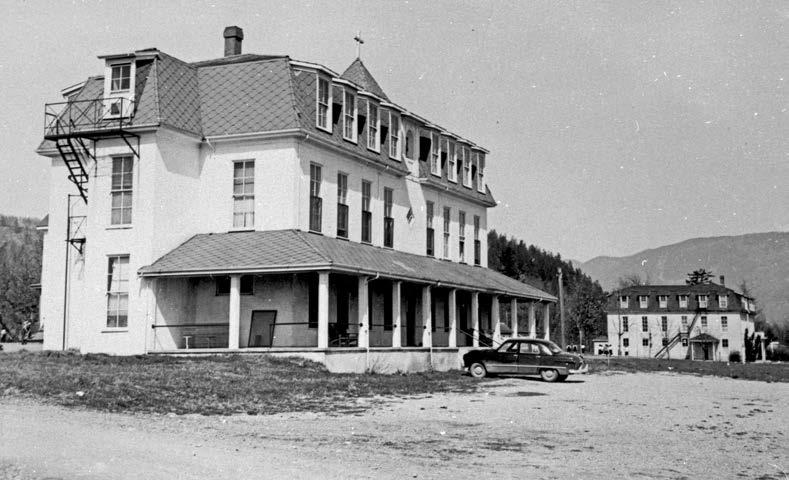
The residential school system was based on an assumption that European civilization and Christian religions were superior to Aboriginal culture, which was seen as being savage and brutal.
Government officials also were insistent that children be discouraged—and often prohibited—from speaking their own languages.
The missionaries who ran the schools played prominent roles in the church-led campaigns to ban Aboriginal spiritual practices such as the Potlatch and the Sun Dance (more properly called the “Thirst Dance”), and to end traditional Aboriginal marriage practices.
Although, in most of their official pronouncements, government and church officials took the position that Aboriginal people could be civilized, it is clear that many believed that Aboriginal culture was inherently inferior.
This hostility to Aboriginal cultural and spiritual practice continued well into the twentieth century.
In 1942, John House, the principal of the Anglican school in Gleichen, Alberta, became involved in a campaign to have two Blackfoot chiefs deposed, in part because of their support for traditional dance ceremonies.^14
In 1947, Roman Catholic official J. O. Plourde told a federal parliamentary committee that since Canada was a Christian nation that was committed to having “all its citizens belonging to one or other of the Christian churches,” he could see no reason why the residential schools “should foster aboriginal beliefs.”^15
United Church official George Dorey told the same committee that he questioned whether there was such a thing as “native religion.”^16

Into the 1950s and 1960s, the prime mission of residential schools was the cultural transformation of Aboriginal children.
In 1953, J. E. Andrews, the principal of the Presbyterian school in Kenora, Ontario, wrote that “we must face realistically the fact that the only hope for the Canadian Indian is eventual assimilation into the white race.”^17
In 1957, the principal of the Gordon’s Reserve school in Saskatchewan, Albert Southard, wrote that he believed that the goal of residential schooling was to “change the philosophy of the Indian child.
In other words since they must work and live with ‘whites’ then they must begin to think as ‘whites.’” Southard said that the Gordon’s school could never have a student council, since “in so far as the Indian understands the department’s policy, he is against it.”^18
In a 1958 article on residential schools, senior Oblate Andre Renaud echoed the words of John A.
Macdonald, arguing that when students at day schools went back to their “homes at the end of the school day and for the weekend, the pupils are re-exposed to their native culture, however diluted, from which the school is trying to separate them.”
A residential school, on the other hand, could “surround its pupils almost twenty-four hours a day with non-Indian Canadian culture through radio, television, public address system, movies, books, newspapers, group activities, etc.”^19
Despite the coercive measures that the government adopted, it failed to achieve its policy goals.
Although Aboriginal peoples and cultures have been badly damaged, they continue to exist.
Aboriginal people have refused to surrender their identity.
It was the former students, the Survivors of Canada’s residential schools, who placed the residential school issue on the public agenda.
Their efforts led to the negotiation of the Indian Residential Schools Settlement Agreement that mandated the establishment of a residential school Truth and Reconciliation Commission of Canada (TRC).
The Survivors acted with courage and determination.
We should do no less.
It is time to commit to a process of reconciliation.
By establishing a new and respectful relationship, we restore what must be restored, repair what must be repaired, and return what must be returned.
To some people, reconciliation is the re-establishment of a conciliatory state.
However, this is a state that many Aboriginal people assert never has existed between Aboriginal and non-Aboriginal people.
To others, reconciliation, in the context of Indian residential schools, is similar to dealing with a situation of family violence.
It’s about coming to terms with events of the past in a manner that overcomes conflict and establishes a respectful and healthy relationship among people, going forward.
It is in the latter context that the Truth and Reconciliation Commission of Canada has approached the question of reconciliation.
To the Commission, reconciliation is about establishing and maintaining a mutually respectful relationship between Aboriginal and non-Aboriginal peoples in this country.
In order for that to happen, there has to be awareness of the past, acknowledgement of the harm that has been inflicted, atonement for the causes, and action to change behaviour.
We are not there yet.
The relationship between Aboriginal and non-Aboriginal peoples is not a mutually respectful one.
But, we believe we can get there, and we believe we can maintain it.
Our ambition is to show how we can do that.
In 1996, the Report of the Royal Commission on Aboriginal Peoples urged Canadians to begin a national process of reconciliation that would have set the country on a bold new path, fundamentally changing the very foundations of Canada’s relationship with Aboriginal peoples.
Much of what the Royal Commission had to say has been ignored by government; a majority of its recommendations were never implemented.
But the report and its findings opened people’s eyes and changed the conversation about the reality for Aboriginal people in this country.
In 2015, as the Truth and Reconciliation Commission of Canada wraps up its work, the country has a rare second chance to seize a lost opportunity for reconciliation.
We live in a twenty-first-century global world.
At stake is Canada’s place as a prosperous, just, and inclusive democracy within that global world.
At the TRC’s first National Event in Winnipeg, Manitoba, in 2010, residential school Survivor Alma Mann Scott said,
The healing is happening—the reconciliation…
I feel that there’s some hope for us not just as Canadians, but for the world, because I know I’m not the only one.
I know that Anishinaabe people across Canada, First Nations, are not the only ones.
My brothers and sisters in New Zealand, Australia, Ireland—there’s different areas of the world where this type of stuff happened…
I don’t see it happening in a year, but we can start making changes to laws and to education systems …
so that we can move forward.^20
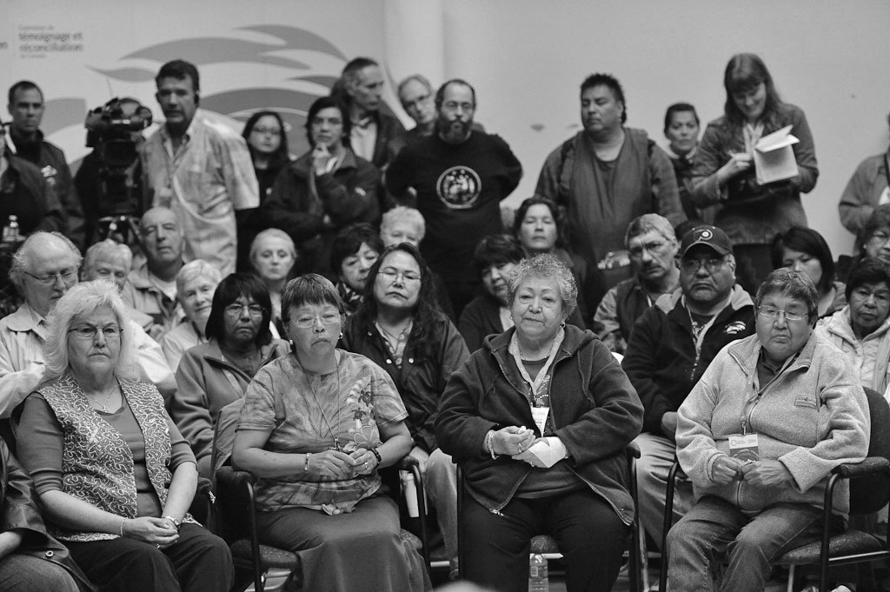
Reconciliation must support Aboriginal peoples as they heal from the destructive legacies of colonization that have wreaked such havoc in their lives.
But it must do even more.
Reconciliation must inspire Aboriginal and non-Aboriginal peoples to transform Canadian society so that our children and grandchildren can live together in dignity, peace, and prosperity on these lands we now share.
The urgent need for reconciliation runs deep in Canada.
Expanding public dialogue and action on reconciliation beyond residential schools will be critical in the coming years.
Although some progress has been made, significant barriers to reconciliation remain.
The relationship between the federal government and Aboriginal peoples is deteriorating.
Instead of moving towards reconciliation, there have been divisive conflicts over Aboriginal education, child welfare, and justice.^21
The daily news has been filled with reports of controversial issues ranging from the call for a national inquiry on violence towards Aboriginal women and girls to the impact of the economic development of lands and resources on Treaties and Aboriginal title and rights.^22
The courts continue to hear Aboriginal rights cases, and new litigation has been filed by Survivors of day schools not covered under the Indian Residential Schools Settlement Agreement, as well as by victims of the “Sixties Scoop,” which was a child-welfare policy that removed Aboriginal children from their homes and placed them with non-Aboriginal families.^23
The promise of reconciliation, which seemed so imminent back in 2008 when the prime minister, on behalf of all Canadians, apologized to Survivors, has faded.
Too many Canadians know little or nothing about the deep historical roots of these conflicts.
This lack of historical knowledge has serious consequences for First Nations, Inuit, and Métis peoples, and for Canada as a whole.
In government circles, it makes for poor public policy decisions.
In the public realm, it reinforces racist attitudes and fuels civic distrust between Aboriginal peoples and other Canadians.^24
Too many Canadians still do not know the history of Aboriginal peoples’ contributions to Canada, or understand that by virtue of the historical and modern Treaties negotiated by our government, we are all Treaty people.
History plays an important role in reconciliation; to build for the future, Canadians must look to, and learn from, the past.
As Commissioners, we understood from the start that although reconciliation could not be achieved during the TRC’s lifetime, the country could and must take ongoing positive and concrete steps forward.
While the Commission has been a catalyst for deepening our national awareness of the meaning and potential of reconciliation, it will take many heads, hands, and hearts, working together, at all levels of society to maintain momentum in the years ahead.
It will also take sustained political will at all levels of government and concerted material resources.
The thousands of Survivors who publicly shared their residential school experiences at TRC events in every region of this country have launched a much-needed dialogue about what is necessary to heal themselves, their families, communities, and the nation.
Canadians have much to benefit from listening to the voices, experiences, and wisdom of Survivors, Elders, and Traditional Knowledge Keepers—and much more to learn about reconciliation.
Aboriginal peoples have an important contribution to make to reconciliation.
Their knowledge systems, oral histories, laws, and connections to the land have vitally informed the reconciliation process to date, and are essential to its ongoing progress.
At a Traditional Knowledge Keepers Forum sponsored by the TRC, Anishinaabe Elder Mary Deleary spoke about the responsibility for reconciliation that both Aboriginal and non-Aboriginal people carry.
She emphasized that the work of reconciliation must continue in ways that honour the ancestors, respect the land, and rebalance relationships.
She said,
I’m so filled with belief and hope because when I hear your voices at the table, I hear and know that the responsibilities that our ancestors carried …
are still being carried …
even through all of the struggles, even through all of what has been disrupted …
we can still hear the voice of the land.
We can hear the care and love for the children.
We can hear about our law.
We can hear about our stories, our governance, our feasts, [and] our medicines…
We have work to do.
That work we are [already] doing as [Aboriginal] peoples.
Our relatives who have come from across the water [non-Aboriginal people], you still have work to do on your road…
The land is made up of the dust of our ancestors’ bones.
And so to reconcile with this land and everything that has happened, there is much work to be done …
in order to create balance.^25
At the Victoria Regional Event in 2012, Survivor Archie Little said,
[For] me reconciliation is righting a wrong.
And how do we do that?
All these people in this room, a lot of non-Aboriginals, a lot of Aboriginals that probably didn’t go to residential school; we need to work together…
My mother had a high standing in our cultural ways.
We lost that.
It was taken away…
And I think it’s time for you non-Aboriginals …
to go to your politicians and tell them that we have to take responsibility for what happened.
We have to work together.^26
The Reverend Stan McKay of the United Church, who is also a Survivor, believes that reconciliation can happen only when everyone accepts responsibility for healing in ways that foster respect.
He said,
[There must be] a change in perspective about the way in which Aboriginal peoples would be engaged with Canadian society in the quest for reconciliation…
[We cannot] perpetuate the paternalistic concept that only Aboriginal peoples are in need of healing…
The perpetrators are wounded and marked by history in ways that are different from the victims, but both groups require healing…
How can a conversation about reconciliation take place if all involved do not adopt an attitude of humility and respect?
…
We all have stories to tell and in order to grow in tolerance and understanding we must listen to the stories of others.^27
Over the past five years, the Truth and Reconciliation Commission of Canada urged Canadians not to wait until our final report was issued before contributing to the reconciliation process.
We have been encouraged to see that across the country, many people have been answering that call.
The youth of this country are taking up the challenge of reconciliation.
Aboriginal and non-Aboriginal youth who attended TRC National Events made powerful statements about why reconciliation matters to them.
At the Alberta National Event in Edmonton in March 2014, an Indigenous youth spoke on behalf of a national Indigenous and non-Indigenous collaboration known as the “4Rs Youth Movement.”
Jessica Bolduc said,
We have re-examined our thoughts and beliefs around colonialism, and have made a commitment to unpack our own baggage, and to enter into a new relationship with each other, using this momentum, to move our country forward, in light of the 150th anniversary of the Confederation of Canada in 2017.
At this point in time, we ask ourselves, “What does that anniversary mean for us, as Indigenous youth and non-Indigenous youth, and how do we arrive at that day with something we can celebrate together?”…
Our hope is that, one day, we will live together, as recognized nations, within a country we can all be proud of.^28

In 2013, at the British Columbia National Event in Vancouver, where over 5,000 elementary and secondary school students attended Education Day, several non-Aboriginal youth talked about what they had learned.
Matthew Meneses said, “I’ll never forget this day.
This is the first day they ever told us about residential schools.
If I were to see someone who’s Aboriginal, I’d ask them if they can speak their language because I think speaking their language is a pretty cool thing.”
Antonio Jordao said, “It makes me sad for those kids.
They took them away from their homes—it was torture, it’s not fair.
They took them away from their homes.
I don’t agree with that.
It’s really wrong.
That’s one of the worst things that Canada did.”
Cassidy Morris said, “It’s good that we’re finally learning about what happened.”
Jacqulyn Byers told us, “I hope that events like this are able to bring closure to the horrible things that happened, and that a whole lot of people now recognize that the crime happened and that we need to make amends for it.”^29
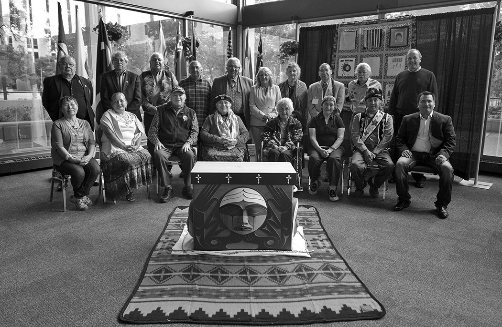
At the same National Event, TRC Honorary Witness Patsy George paid tribute to the strength of Aboriginal women and their contributions to the reconciliation process despite the oppression and violence they have experienced.
She said,
Women have always been a beacon of hope for me.
Mothers and grandmothers in the lives of our children, and in the survival of our communities, must be recognized and supported.
The justified rage we all feel and share today must be turned into instruments of transformation of our hearts and our souls, clearing the ground for respect, love, honesty, humility, wisdom and truth.
We owe it to all those who suffered, and we owe it to the children of today and tomorrow.
May this day and the days ahead bring us peace and justice.^30
Aboriginal and non-Aboriginal Canadians from all walks of life spoke to us about the importance of reaching out to one another in ways that create hope for a better future.
Whether one is First Nations, Inuit, Métis, a descendant of European settlers, a member of a minority group that suffered historical discrimination in Canada, or a new Canadian, we all inherit both the benefits and obligations of Canada.
We are all Treaty people who share responsibility for taking action on reconciliation.
Without truth, justice, and healing, there can be no genuine reconciliation.
Reconciliation is not about “closing a sad chapter of Canada’s past,” but about opening new healing pathways of reconciliation that are forged in truth and justice.
We are mindful that knowing the truth about what happened in residential schools in and of itself does not necessarily lead to reconciliation.
Yet, the importance of truth telling in its own right should not be underestimated; it restores the human dignity of victims of violence and calls governments and citizens to account.
Without truth, justice is not served, healing cannot happen, and there can be no genuine reconciliation between Aboriginal and non-Aboriginal peoples in Canada.
Speaking to us at the Traditional Knowledge Keepers Forum in June of 2014, Elder Dave Courchene posed a critical question: “When you talk about truth, whose truth are you talking about?”^31
The Commission’s answer to Elder Courchene’s question is that by truth, we mean not only the truth revealed in government and church residential school documents, but also the truth of lived experiences as told to us by Survivors and others in their statements to this Commission.
Together, these public testimonies constitute a new oral history record, one based on Indigenous legal traditions and the practice of witnessing.^32
As people gathered at various TRC National Events and Community Hearings, they shared the experiences of truth telling and of offering expressions of reconciliation.
Over the course of its work, the Commission inducted a growing circle of TRC Honorary Witnesses.
Their role has been to bear official witness to the testimonies of Survivors and their families, former school staff and their descendants, government and church officials, and any others whose lives have been affected by the residential schools.
Beyond the work of the TRC, the Honorary Witnesses have pledged their commitment to the ongoing work of reconciliation between Aboriginal and non-Aboriginal peoples.
We also encouraged everyone who attended TRC National Events or Community Hearings to see themselves as witnesses also, with an obligation to find ways of making reconciliation a concrete reality in their own lives, communities, schools, and workplaces.
As Elder Jim Dumont explained at the Traditional Knowledge Keepers Forum in June 2014, “in Ojibwe thinking, to speak the truth is to actually speak from the heart.”^33
At the Community Hearing in Key First Nation, Saskatchewan, in 2012, Survivor Wilfred Whitehawk told us he was glad that he disclosed his abuse.
I don’t regret it because it taught me something.
It taught me to talk about truth, about me, to be honest about who I am…
I am very proud of who I am today.
It took me a long time, but I’m there.
And what I have, my values and belief systems are mine and no one is going to impose theirs on me.
And no one today is going to take advantage of me, man or woman, the government or the RCMP, because I have a voice today.
I can speak for me and no one can take that away.^34
Survivor and the child of Survivors Vitaline Elsie Jenner said, “I’m quite happy to be able to share my story…
I want the people of Canada to hear, to listen, for it is the truth…
I also want my grandchildren to learn, to learn from me that, yes, it did happen.”^35
Another descendant of Survivors, Daniel Elliot, told the Commission,
I think all Canadians need to stop and take a look and not look away.
Yeah, it’s embarrassing, yeah, it’s an ugly part of our history.
We don’t want to know about it.
What I want to see from the Commission is to rewrite the history books so that other generations will understand and not go through the same thing that we’re going through now, like it never happened.^36
President of the Métis National Council Clement Chartier spoke to the Commission about the importance of truth to justice and reconciliation.
At the Saskatchewan National Event, he said,
The truth is important.
So I’ll try to address the truth and a bit of reconciliation as well.
The truth is that the Métis Nation, represented by the Métis National Council, is not a party to the Indian Residential Schools Settlement Agreement…
And the truth is that the exclusion of the Métis Nation or the Métis as a people is reflected throughout this whole period not only in the Indian Residential Schools Settlement Agreement but in the apology made by Canada as well…
We are, however, the products …
of the same assimilationist policy that the federal government foisted upon the Treaty Indian kids.
So there ought to be some solution…
The Métis boarding schools, residential schools, are excluded.
And we need to ensure that everyone was aware of that and hopefully some point down the road, you will help advocate and get, you know, the governments or whoever is responsible to accept responsibility and to move forward on a path to reconciliation, because reconciliation should be for all Aboriginal peoples and not only some Aboriginal peoples.^37
At the British Columbia National Event, the former lieutenant-governor of British Columbia, the Honourable Steven Point, said,
And so many of you have said today, so many of the witnesses that came forward said, “I cannot forgive.
I’m not ready to forgive.”
And I wondered why.
Reconciliation is about hearing the truth, that’s for sure.
It’s also about acknowledging that truth.
Acknowledging that what you’ve said is true.
Accepting responsibility for your pain and putting those children back in the place they would have been, had they not been taken from their homes…
What are the blockages to reconciliation?
The continuing poverty in our communities and the failure of our government to recognize that “Yes, we own the land.”
Stop the destruction of our territories and for God’s sake, stop the deaths of so many of our women on highways across this country…
I’m going to continue to talk about reconciliation, but just as important, I’m going to foster healing in our own people, so that our children can avoid this pain, can avoid this destruction and finally, take our rightful place in this “Our Canada.”^38
When former residential school staff attended public TRC events, some thought it was most important to hear directly from Survivors, even if their own perspectives and memories of the schools might differ from those of the Survivors.
At a Community Hearing in Thunder Bay, Ontario, Merle Nisley, who worked at the Poplar Hill residential school in the early 1970s, said,
I think it would be valuable for people who have been involved in the schools to hear stories personally.
And I also think it would be valuable, when it’s appropriate …
[for] former students who are on the healing path to …
hear some of our stories, or to hear some of our perspectives.
But I know that’s a very difficult thing to do…
Certainly this is not the time to try to ask all those former students to sit and listen to the rationale of the former staff because there’s just too much emotion there …
and there’s too little trust …
you can’t do things like that when there’s low levels of trust.
So I think really a very important thing is for former staff to hear the stories and to be courageous enough just to hear them…
Where wrongs were done, where abuses happened, where punishment was over the top, and wherever sexual abuse happened, somehow we need to courageously sit and talk about that, and apologize.
I don’t know how that will happen.^39
Nisley’s reflections highlight one of the difficulties the Commission faced in trying to create a space for respectful dialogue between former residential school students and staff.
While, in most cases, this was possible, in other instances, Survivors and their family members found it very difficult to listen to former staff, particularly if they perceived the speaker to be an apologist for the schools.
At the TRC Victoria Regional Event, Brother Tom Cavanaugh, the district superior of the Oblates of Mary Immaculate for British Columbia and the Yukon, spoke about his time as a supervisor at the Christie residential school.
What I experienced over the six years I was at Christie residential school was a staff, Native and non-Native alike, working together to provide as much as possible, a safe loving environment for the children attending Christie school.
Was it a perfect situation?
No, it wasn’t a perfect situation …
but again, there didn’t seem to be, at that time, any other viable alternative in providing a good education for so many children who lived in relatively small and isolated communities.
Survivors and family members who were present in the audience spoke out, saying, “Truth, tell the truth.”
Brother Cavanaugh replied, “If you give me a chance, I will tell you the truth.”
When TRC Chair Justice Murray Sinclair intervened to ask the audience to allow Brother Cavanaugh to finish his statement, he was able to do so without further interruption.
Visibly shaken, Cavanaugh then went on to acknowledge that children had also been abused in the schools, and he condemned such actions, expressing his sorrow and regret for this breach of trust.
I can honestly say that our men are hurting too because of the abuse scandal and the rift that this has created between First Nations and church representatives.
Many of our men who are still working with First Nations have attended various truth > and reconciliation sessions as well as Returning to Spirit sessions, hoping to bring about healing for all concerned.
The Oblates desire healing for the abused and for all touched by the past breach of trust.
It is our hope that together we can continue to build a better society.^40
Later that same day, Ina Seitcher, who attended the Christie residential school, painted a very different picture of the school from what Brother Cavanaugh had described.
I went to Christie residential school.
This morning I heard a priest talking about his Christie residential school.
I want to tell him [about] my Christie residential school.
I went there for ten months.
Ten months that impacted my life for fifty years.
I am just now on my healing journey…
I need to do this, I need to speak out.
I need to speak for my mom and dad who went to residential school, for my aunts, my uncles, all that are beyond now…
All the pain of our people, the hurt, the anger…
That priest that talked about how loving that Christie residential school was—it was not.
That priest was most likely in his office not knowing what was going on down in the dorms or in the lunchroom…
There were things that happened at Christie residential school, and like I said, I’m just starting my healing journey.
There are doors that I don’t even want to open.
I don’t even want to open those doors because I don’t know what it would do to me.^41
These two, seemingly irreconcilable, truths are a stark reminder that there are no easy shortcuts to reconciliation.
The fact that there were few direct exchanges at TRC events between Survivors and former school staff indicates that for many, the time for reconciliation had not yet arrived.
Indeed, for some, it may never arrive.
At the Manitoba National Event in 2010, Survivor Evelyn Brockwood talked about why it is important to ensure that there is adequate time for healing to occur in the truth and reconciliation process.
She said,
When this came out at the beginning, I believe it was 1990, about residential schools, people coming out with their stories, and …
I thought the term, the words they were using, were truth, healing and reconciliation.
But somehow it seems like we are going from truth telling to reconciliation, to reconcile with our white brothers and sisters.
My brothers and sisters, we have a lot of work to do in the middle.
We should really lift up the word healing…
Go slow, we are going too fast, too fast…
We have many tears to shed before we even get to the word reconciliation.^42
To determine the truth and to tell the full and complete story of residential schools in this country, the TRC needed to hear from Survivors and their families, former staff, government and church officials, and all those affected by residential schools.
Canada’s national history in the future must be based on the truth about what happened in the residential schools.
One hundred years from now, our children’s children and their children must know and still remember this history, because they will inherit from us the responsibility of ensuring that it never happens again.
During the course of the Commission’s work, it has become clear that the concept of reconciliation means different things to different people, communities, institutions, and organizations.
The TRC mandate describes reconciliation as “an ongoing individual and collective process, and will require commitment from all those affected including First Nations, Inuit and Métis former Indian Residential School (IRS) students, their families, communities, religious entities, former school employees, government and the people of Canada.
Reconciliation may occur between any of the above groups.”^43
The Commission defines reconciliation as an ongoing process of establishing and maintaining respectful relationships.
A critical part of this process involves repairing damaged trust by making apologies, providing individual and collective reparations, and following through with concrete actions that demonstrate real societal change.
Establishing respectful relationships also requires the revitalization of Indigenous law and legal traditions.
It is important that all Canadians understand how traditional First Nations, Inuit, and Métis approaches to resolving conflict, repairing harm, and restoring relationships can inform the reconciliation process.
Traditional Knowledge Keepers and Elders have long dealt with conflicts and harms using spiritual ceremonies and peacemaking practices, and by retelling oral history stories that reveal how their ancestors restored harmony to families and communities.
These traditions and practices are the foundation of Indigenous law; they contain wisdom and practical guidance for moving towards reconciliation across this land.^44
As First Nations, Inuit, and Métis communities access and revitalize their spirituality, cultures, languages, laws, and governance systems, and as non-Aboriginal Canadians increasingly come to understand Indigenous history within Canada, and to recognize and respect Indigenous approaches to establishing and maintaining respectful relationships, Canadians can work together to forge a new covenant of reconciliation.
Despite the ravages of colonialism, every Indigenous nation across the country, each with its own distinctive culture and language, has kept its legal traditions and peacemaking practices alive in its communities.
While Elders and Knowledge Keepers across the land have told us that there is no specific word for “reconciliation” in their own languages, there are many words, stories, and songs, as well as sacred objects such as wampum belts, peace pipes, eagle down, cedar boughs, drums, and regalia, that are used to establish relationships, repair conflicts, restore harmony, and make peace.
The ceremonies and protocols of Indigenous law are still remembered and practised in many Aboriginal communities.
At the TRC Traditional Knowledge Keepers Forum in June 2014, TRC Survivor Committee member and Elder Barney Williams told us that
from sea to sea, we hear words that allude to …
what is reconciliation?
What does healing or forgiveness mean?
And how there’s parallels to all those words that the Creator gave to all the nations…
When I listen and reflect on the voices of the ancestors your ancestors, I hear my ancestor alluding to the same thing with a different dialect…
My understanding [of reconciliation] comes from a place and time when there was no English spoken …
from my grandmother who was born in the 1800s…
I really feel privileged to have been chosen by my grandmother to be the keeper of our knowledge…
What do we need to do?
…
We need to go back to ceremony and embrace ceremony as part of moving forward.
We need to understand the laws of our people.^45
At the same Forum, Elder Stephen Augustine explained the roles of silence and negotiation in Mi’kmaq law.
He said silence is a concept, and can be used as a consequence for a wrong action or to teach a lesson.
Silence is employed according to proper procedures, and ends at a particular time too.
Elder Augustine suggested that there is both a place for talking about reconciliation and a need for quiet reflection.
Reconciliation cannot occur without listening, contemplation, meditation, and deeper internal deliberation.
Silence in the face of residential school harms is an appropriate response for many Indigenous peoples.
We must enlarge the space for respectful silence in journeying towards reconciliation, particularly for Survivors who regard this as key to healing.
There is a place for discussion and negotiation for those who want to move beyond silence.
Dialogue and mutual adjustment are significant components of Mi’kmaq law.
Elder Augustine suggested that other dimensions of human experience—our relationships with the earth and all living beings—are also relevant in working towards reconciliation.
This profound insight is an Indigenous law, which could be applied more generally.^46
Elder Reg Crowshoe told the Commission that Indigenous peoples’ world views, oral history traditions, and practices have much to teach us about how to establish respectful relationships among peoples and with the land and all living things.
Learning how to live together in a good way happens through sharing stories and practising reconciliation in our everyday lives.
When we talk about the concept of reconciliation, I think about some of the stories that I’ve heard in our culture and stories are important…
These stories are so important as theories but at the same time stories are important to oral cultures.
So when we talk about stories, we talk about defining our environment and how we look at authorities that come from the land and how that land, when we talk about our relationship with the land, how we look at forgiveness and reconciliation is so important when we look at it historically.
We have stories in our culture about our superheroes, how we treat each other, stories about how animals and plants give us authorities and privileges to use plants as healing, but we also have stories about practices.
How would we practise reconciliation?
How would we practise getting together to talk about reconciliation in an oral perspective?
And those practices are so important.^47
As Elder Crowshoe explained further, reconciliation requires talking, but our conversations must be broader than Canada’s conventional approaches.
Reconciliation between Aboriginal and non-Aboriginal Canadians, from an Aboriginal perspective, also requires reconciliation with the natural world.
If human beings resolve problems between themselves but continue to destroy the natural world, then reconciliation remains incomplete.
This is a perspective that we as Commissioners have repeatedly heard: that reconciliation will never occur unless we are also reconciled with the earth.
Mi’kmaq and other Indigenous laws stress that humans must journey through life in conversation and negotiation with all creation.
Reciprocity and mutual respect help sustain our survival.
It is this kind of healing and survival that is needed in moving forward from the residential school experience.
Over the course of its work, the Commission created space for exploring the meanings and concepts of reconciliation.
In public Sharing Circles at National Events and Community Hearings, we bore witness to powerful moments of truth sharing and humbling acts of reconciliation.
Many Survivors had never been able to tell their own families the whole truth of what happened to them in the schools.
At hearings in Regina, Saskatchewan, Elder Kirby Littletent said, “I never told, I just told my children, my grandchildren I went to boarding school, that’s all.
I never shared my experiences.”^48
Many spoke to honour the memory of relatives who have passed on.
Simone, an Inuk Survivor from Chesterfield Inlet, Nunavut, said,
I’m here for my parents—‘Did you miss me when I went away?’ ‘Did you cry for me?’—and I’m here for my brother, who was a victim, and my niece at the age of five who suffered a head injury and never came home, and her parents never had closure.
To this day, they have not found the grave in Winnipeg.
And I’m here for them first, and that’s why I’m making a public statement.^49
Others talked about the importance of reconciling with family members, and cautioned that this process is just beginning.
Patrick Etherington, a Survivor from St.
Anne’s residential school in Fort Albany, Ontario, walked with his son and others from Cochrane, Ontario, to the National Event in Winnipeg.
He said that the walk helped him to reconnect with his son, and that he “just wanted to be here because I feel this process that we are starting, we got a long ways to go.”^50
We saw the children and grandchildren of Survivors who, in searching for their own identity and place in the world, found compassion and gained new respect for their relatives who went to the schools, once they heard about and began to understand their experiences.
At the Northern National Event in Inuvik, Northwest Territories, Maxine Lacorne said,
As a youth, a young lady, I talk with people my age because I have a good understanding.
I talk to people who are residential school Survivors because I like to hear their stories, you know, and it gives me more understanding of my parents…
It is an honour to be here, to sit here among you guys, Survivors.
Wow.
You guys are strong people, you guys survived everything.
And we’re still going to be here.
They tried to take us away.
They tried to take our language away.
You guys are still here, we’re still here.
I’m still here.^51

We heard about children whose small acts of everyday resistance in the face of rampant abuse, neglect, and bullying in the schools were quite simply heroic.
At the TRC British Columbia National Event, Elder Barney Williams said that “many of us, through our pain and suffering, managed to hold our heads up …
we were brave children.”^52
We saw old bonds of childhood friendship renewed as people gathered and found each other at TRC-sponsored events.
Together, they remembered the horrors they had endured even as they recalled with pride long-forgotten accomplishments in various school sports teams, music, or art activities.
We heard from resilient, courageous Survivors who, despite their traumatic childhood experiences, went on to become influential leaders in their communities and in all walks of Canadian life, including politics, government, law, education, medicine, the corporate world, and the arts.
We heard from officials representing the federal government that administered the schools.
In a Sharing Circle at the Manitoba National Event, the Honourable Chuck Strahl (then minister of Indian Affairs and Northern Development Canada) said,
Governments like to write …
policy, and they like to write legislation, and they like to codify things and so on.
And Aboriginal people want to talk about restoration, reconciliation, forgiveness, about healing …
about truth.
And those things are all things of the heart and of relationship, and not of government policy.
Governments do a bad job of that.^53
Church representatives spoke about their struggles to right the relationship with Aboriginal peoples.
In Inuvik, Anglican Archbishop Fred Hiltz told us that
as a Church, we are renewing our commitment to work with the Assembly of First Nations in addressing long-standing, Indigenous justice issues.
As a Church, we are requiring anyone who serves the Church at a national level to go through anti-racism training…
We have a lot to do in our Church to make sure that racism is eliminated.^54
Educators told us about their growing awareness of the inadequate role that post-secondary institutions played in training the teachers who taught in the schools.
They have pledged to change educational practices and curriculum to be more inclusive of Aboriginal knowledge and history.
Artists shared their ideas and feelings about truth and reconciliation through songs, paintings, dance, film, and other media.
Corporations provided resources to bring Survivors to events, and, in some cases, some of their own staff and managers.
For non-Aboriginal Canadians who came to bear witness to Survivors’ life stories, the experience was powerful.
One woman said simply, “By listening to your story, my story can change.
By listening to your story, I can change.”^55
In its 2012 Interim Report, the TRC recommended that federal, provincial, and territorial governments, and all parties to the Settlement Agreement, undertake to meet and explore the United Nations Declaration on the Rights of Indigenous Peoples, as a framework for reconciliation in Canada.
We remain convinced that the United Nations Declaration provides the necessary principles, norms, and standards for reconciliation to flourish in twenty-first-century Canada.
A reconciliation framework is one in which Canada’s political and legal systems, educational and religious institutions, the corporate sector and civic society function in ways that are consistent with the principles set out in the United Nations Declaration on the Rights of Indigenous Peoples, which Canada has endorsed.
Together, Canadians must do more than just talk about reconciliation; we must learn how to practise reconciliation in our everyday lives—within ourselves and our families, and in our communities, governments, places of worship, schools, and workplaces.
To do so constructively, Canadians must remain committed to the ongoing work of establishing and maintaining respectful relationships.
For many Survivors and their families, this commitment is foremost about healing themselves, their communities, and nations, in ways that revitalize individuals as well as Indigenous cultures, languages, spirituality, laws, and governance systems.
For governments, building a respectful relationship involves dismantling a centuries-old political and bureaucratic culture in which, all too often, policies and programs are still based on failed notions of assimilation.
For churches, demonstrating long-term commitment requires atoning for actions within the residential schools, respecting Indigenous spirituality, and supporting Indigenous peoples’ struggles for justice and equity.
Schools must teach history in ways that foster mutual respect, empathy, and engagement.
All Canadian children and youth deserve to know Canada’s honest history, including what happened in the residential schools, and to appreciate the rich history and knowledge of Indigenous nations who continue to make such a strong contribution to Canada, including our very name and collective identity as a country.
For Canadians from all walks of life, reconciliation offers a new way of living together.

It can start with a knock on the door one morning.
It is the local Indian agent, or the parish priest, or, perhaps, a Mounted Police officer.
The bus for residential school leaves that morning.
It is a day the parents have long been dreading.
Even if the children have been warned in advance, the morning’s events are still a shock.
The officials have arrived and the children must go.
For tens of thousands of Aboriginal children for over a century, this was the beginning of their residential schooling.
They were torn from their parents, who often surrendered them only under threat of prosecution.
Then, they were hurled into a strange and frightening place, one in which their parents and culture would be demeaned and oppressed.
For Frederick Ernest Koe, it started when the Anglican minister and the Mounted Police arrived with a message that he had to leave his parents’ home in Aklavik in the Northwest Territories that morning.
“And I didn’t get to say goodbye to my dad or my brother Allan, didn’t get to pet my dogs or nothing.”^1
The day she left for the Lestock, Saskatchewan, school, Marlene Kayseas’s parents drove her into the town of Wadena.
“There was a big truck there.
It had a back door and that truck was full of kids and there was no windows on that truck.”^2
Larry Beardy travelled by train from Churchill, Manitoba, to the Anglican residential school in Dauphin, Manitoba—a journey of 1,200 kilometres.
As soon as they realized that they were leaving their parents behind, the younger children started crying.
At every stop, the train took on more children and they would start to cry as well.
“That train I want to call that train of tears.”^3
Florence Horassi was taken to the Fort Providence, Northwest Territories, school in a small airplane.
On its way to the school, the plane stopped at a number of small communities to pick up students.
“When the plane took off, there’s about six or five older ones, didn’t cry, but I saw tears come right out of their eyes.
Everybody else was crying.
There’s a whole plane crying.
I wanted to cry, too, ’cause my brother was crying, but I held my tears back and held him.”^4
The arrival at school was often even more traumatizing than the departure from home or the journey.
Lily Bruce’s parents were in tears when they left her and her brother at the Alert Bay, British Columbia, school.^5
At Fort Chipewyan in northern Alberta, Vitaline Elsie Jenner fought to stay with her mother.
“I was screaming and hollering.
And in my language I said, ‘Mama, Mama, kâya nakasin’ and in English it was, ‘Mom, Mom, don’t leave me.’ ’Cause that’s all I knew was to speak Cree.
And so the nun took us.”^6
Nellie Ningewance was raised in Hudson, Ontario, and went to the Sioux Lookout, Ontario, school in the 1950s and 1960s.
“When we arrived we had to register that we had arrived, then they took us to cut our hair.”^7
Bernice Jacks became very frightened when her hair was cut on her arrival at a school in the Northwest Territories.
“I could see my hair falling.
And I couldn’t do nothing.
And I was so afraid my mom …
I wasn’t thinking about myself.
I was thinking about Mom.
I say, ‘Mom’s gonna be really mad.
And June is gonna be angry.
And it’s gonna be my fault.’”8
Marthe Basile-Coocoo recalled feeling a chill on first seeing the Pointe Bleue, Québec, school.
It was something like a grey day, it was a day without sunshine.
It was, it was the impression that I had, that I was only six years old, then, well, the nuns separated us, my brothers, and then my uncles, then I no longer understood.
Then that, that was a period there, of suffering, nights of crying, we all gathered in a corner, meaning that we came together, and there we cried.
Our nights were like that.^9
Pauline St-Onge was traumatized by just the sight of the Sept-Îles school in Québec.
She fought back when her father tried to take her into the school.
“I thought in my child’s head I said: ‘you would …
you would make me go there, but I will learn nothing, nothing, nothing.’”10
Campbell Papequash was taken, against his will, to residential school in 1946.
“And after I was taken there they took off my clothes and then they deloused me.
I didn’t know what was happening but I learned about it later, that they were delousing me; ‘the dirty, no-good-for-nothing savages, lousy.’”11
Roy Denny was perplexed and frightened by the clothing that the priests and sisters wore at the Shubenacadie, Nova Scotia, school.
“We were greeted by this man dressed in black with a long gown.
That was the priest, come to find later.
And the nuns with their black, black outfits with the white collar and a white, white collar and, like a breastplate of white.”^12
Calvin Myerion recalled being overwhelmed by the size of the Brandon, Manitoba, school.
“The only building that I knew up to that time, that moment in my life was the one-storey house that we had.
And when I got to the residential school, I seen this big monster of a building, and I’ve never seen any buildings that, that large, that high.”^13
Archie Hyacinthe compared the experience to that of being captured and taken into captivity.
“That’s when the trauma started for me, being separated from my sister, from my parents, and from our, our home.
We were no longer free.
It was like being, you know, taken to a strange land, even though it was our, our, our land, as I understood later on.”^14
When she first went to the Amos, Québec, school, Margo Wylde could not speak any French.
“I said to myself, ‘How am I going to express myself?
How will I make people understand what I’m saying?’ And I wanted to find my sisters to ask them to come and get me.
You know it’s sad to say, but I felt I was a captive.”^15

On their arrival at residential school, students often were required to exchange the clothes they were wearing for school-supplied clothing.
This could mean the loss of homemade clothing that was of particular value and meaning to them.
Murray Crowe said his clothes from home were taken and burned at the school that he attended in northwestern Ontario.^16
When Wilbur Abrahams’s mother sent him to the Alert Bay school in British Columbia, she outfitted him in brand-new clothes.
When he arrived at the school, he was told to hand in this outfit in exchange for school clothing.
“That was the last time I saw my new clothes.
Dare not ask questions.”^17
Martin Nicholas of Nelson House, Manitoba, went to the Pine Creek, Manitoba, school in the 1950s.
“My mom had prepared me in Native clothing.
She had made me a buckskin jacket, beaded with fringes…
And my mom did beautiful work, and I was really proud of my clothes.
And when I got to residential school, that first day I remember, they stripped us of our clothes.”^18
On her arrival at the Presbyterian school in Kenora, Ontario, Lorna Morgan was wearing “these nice little beaded moccasins that my grandma had made me to wear for school, and I was very proud of them.”
She said they were taken from her and thrown in the garbage.^19
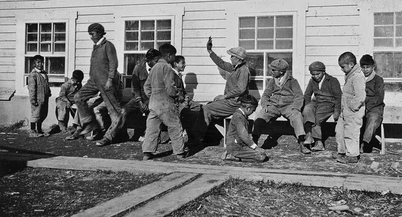
Gilles Petiquay, who attended the Pointe Bleue school, was shocked by the fact that each student was assigned a number.
“I remember that the first number that I had at the residential school was 95.
I had that number—95—for a year.
The second number was number 4.
I had it for a longer period of time.
The third number was 56.
I also kept it for a long time.
We walked with the numbers on us.”^20
Older brothers were separated from younger brothers, older sisters were separated from younger sisters, and brothers and sisters were separated from each other.
Wilbur Abrahams climbed up the steps to the Alert Bay school behind his sisters and started following them to the girls’ side of the school.
Then, he felt a staff member pulling him by the ear, telling him to turn the other way.
“I have always believed that, I think at that particular moment, my spirit left.”^21
When Peter Ross was enrolled at the Immaculate Conception school in Aklavik, Northwest Territories, it was the first time he had ever been parted from his sisters.
He said that in all the time he was at the school, he was able to speak with them only at Christmas and on Catholic feast days.^22
Daniel Nanooch recalled that he talked with his sister only four times a year at the Wabasca, Alberta, school.
“They had a fence in the playground.
Nobody was allowed near the fence.
The boys played on this side, the girls played on the other side.
Nobody was allowed to go to that fence there and talk to the girls through the fence or whatever, you can’t.”^23
The strict segregation of the sexes at the schools meant that brothers and sisters were quickly separated from one another. General Synod Archives, Anglican Church of Canada, P7538-635.
The only reason Bernice Jacks had wanted to go to residential school was to be with her older sister.
But once she was there, she discovered they were to sleep in separate dormitories.
On the occasions when she slipped into the older girls’ dormitory and crawled into her sister’s bed, her sister scolded her and sent her away: “My sister never talked to me like that before.”^24
Helen Kakekayash’s older sister tried to comfort her when she first arrived at the McIntosh, Ontario, school.
She recalled that “she would try to talk to me, and she would get spanked.”^25
Bernard Catcheway said that even though he and his sister were both attending the Pine Creek school, they could not communicate with each other.
“I couldn’t talk to her, I couldn’t wave at her. If you did you’d get, you know a push in the head by a nun.”^26 On her second day at the Kamloops school in British Columbia, Julianna Alexander went to speak to her brother. “Did I ever get a good pounding and licking, get over there, you can’t go over there, you can’t talk to him, you know.
I said, ‘Yeah, but he’s my brother.’”27
Taken from their homes, stripped of their belongings, and separated from their siblings, residential school children lived in a world dominated by fear, loneliness, and lack of affection.
William Herney, who attended the Shubenacadie school in Nova Scotia, recalled the first few days in the school as being frightening and bewildering.
“Within those few days, you had to learn, because otherwise you’re gonna get your head knocked off.
Anyway, you learned everything.
You learned to obey.
And one of the rules that you didn’t break, you obey, and you were scared, you were very scared.”^28
Raymond Cutknife recalled that when he attended the Hobbema school in Alberta, he “lived with fear.”^29
Of his years in two different Manitoba schools, Timothy Henderson said, “Every day was, you were in constant fear that, your hope was that it wasn’t you today that we’re going to, that was going to be the target, the victim.
You know, you weren’t going to have to suffer any form of humiliation.”^30
Shirley Waskewitch said that in Kindergarten at the Catholic school in Onion Lake, Saskatchewan, “I learned the fear, how to be so fearful at six years old.
It was instilled in me.”^31
At the Fort Alexander, Manitoba, school, Patrick Bruyere used to cry himself to sleep.
“There was, you know, a few nights I remember that I just, you know, cried myself to sleep, I guess, because of, you know, wanting to see my mom and dad.”^32
Ernest Barkman, who attended the Pine Creek school, recalled, “I was really lonely and I cried a lot, my brother who was with me said I cried a lot.”^33
Paul Dixon, who attended schools in Québec and Ontario, said that at night, children tried to weep silently.
“If one child was caught crying, eh, oh, everybody was in trouble.”^34
Betsy Annahatak grew up in Kangirsuk, in northern Québec, which was then known as Payne Bay.
When her parents were on the land, she lived in a small hostel in the community.
“When one person would start crying, all the, all the little girls would start crying; all of us.
We were different ages.
And we would cry like little puppies or dogs, right into the night, until we go to sleep; longing for our families.”^35
Students’ hearts were hardened.
Rick Gilbert remembered the Williams Lake, British Columbia, school as a loveless place.
“That was one thing about this school was that when you got hurt or got beat up or something, and you started crying, nobody comforted you.
You just sat in the corner and cried and cried till you got tired of crying then you got up and carried on with life.”^36
Nick Sibbeston, who was placed in the Fort Providence school in the Northwest Territories at the age of five, recalled it as a place where children hid their emotions.
“In residential school you quickly learn that you should not cry.
If you cry you’re teased, you’re shamed out, you’re even punished.”^37
One former student said that during her time at the Sturgeon Landing school in Saskatchewan, she could not recall a staff member ever smiling at a child.^38
Jack Anawak recalled of his time at Chesterfield Inlet, in what is now Nunavut, in the 1950s that “there was no love, there was no feelings, it was just supervisory.”^39
Lydia Ross, who attended the Cross Lake school in Manitoba, said, “If you cried, if you got hurt and cried, there was no, nobody to, nobody to comfort, comfort you, nobody to put their arms.”^40
Stephen Kakfwi, who attended Grollier Hall in Inuvik and Grandin College in Fort Smith, Northwest Territories, said this lack of compassion affected the way students treated one another.
“No hugs, nothing, no comfort.
Everything that, I think, happened in the residential schools, we picked it up: we didn’t get any hugs; you ain’t going to get one out of me I’ll tell you that.”^41
Victoria McIntosh said that life at the Fort Alexander, Manitoba, school taught her not to trust anyone.
“You learn not to cry anymore.
You just get harder.
And yeah, you learn to shut down.”^42
These accounts all come from statements made by former residential school students to the Truth and Reconciliation Commission of Canada.
These events all took place in Canada within the realm of living memory.
Like previous generations of residential school children, these children were sent to what were, in most cases, badly constructed, poorly maintained, overcrowded, unsanitary fire traps.
Many children were fed a substandard diet and given a substandard education, and worked too hard.
For far too long, they died in tragically high numbers.
Discipline was harsh and unregulated; abuse was rife and unreported.
It was, at best, institutionalized child neglect.
The people who built, funded, and operated the schools offered varying justifications for this destructive intrusion into the lives of Aboriginal families.
Through it, they wished to turn the children into farmers and farmers’ wives.
They wanted the children to abandon their Aboriginal identity and come to know the Christian god.
They feared that if the children were not educated, they would be a menace to the social order of the country.
Canadian politicians wished to find a cheap way out of their long-term commitments to Aboriginal people.
Christian churches sought government support for their missionary efforts.
The schools were part of the colonization and conversion of Aboriginal people, and were intended to bring civilization and salvation to their children.
These were the rationales that were used to justify making the lives of so many children so unhappy.
The whole part of the residential school was a part of a bigger scheme of colonization.
There was intent; the schools were there with the intent to change people, to make them like others and to make them not fit.
And today, you know, we have to learn to decolonize.
— Shirley Flowers, Statement to the Truth and Reconciliation Commission of Canada43
The mandate of the Truth and Reconciliation Commission of Canada requires it to report on “the history, purpose, operation and supervision” of Canada’s residential schools.
These schools were part of a process that brought European states and Christian churches together in a complex and powerful manner.
The history of the schools can be best understood in the context of this relationship between the growth of global, European-based empires and the Christian churches.
Starting in the sixteenth century, European states gained control of Indigenous peoples’ lands throughout the world.
It was an era of mass migration.
Millions of Europeans arrived as colonial settlers in nearly every part of the world.
Millions of Africans were transported in the European-led slave trade, in which coastal Africans collaborated.
Traders from India and China spread throughout the Red Sea and Indian Ocean, bringing with them indentured servants whose lives were little different from those of slaves.^44
The activities of explorers, farmers, prospectors, trading companies, or missionaries often set the stage for expansionary wars, the negotiation and the breaking of Treaties, attempts at cultural assimilation, and the exploitation and marginalization of the original inhabitants of the colonized lands.^45
Over time, Indigenous children in places as distant from one another as East Africa, Australia, and Siberia would be separated from their parents and sent to residential schools.^46
The spread of European-based empires was set in motion in the fifteenth century when the voyages of maritime explorers revealed potential sources of new wealth to the monarchs of Europe.
The Spanish conquest of the Aztecs and the Incas gave Spain, and ultimately all of Europe, access to the resources of North and South America.
This not only enriched the Old World, but it also unleashed an unceasing wave of migration, trade, conquest, and colonization.^47
It marked the beginning of the creation of a Europeandominated global economy.
Although it was led initially by Spain and Portugal, this era of imperial expansion came to be directed by Holland, France, and, in the end, most stunningly by Britain.^48
Empires were established militarily.
They engaged in extensive and violent wars with one another, maintained a military presence on their frontiers, and conducted innumerable military campaigns to put down nationalist uprisings.^49
Colonies were established to be exploited economically.
The benefits of empire could come directly as taxes, as precious metals, or as raw materials for industries in the homeland.
Colonies often were required to purchase their imports solely from the homeland, making them a captive market.^50
The mere presence of Indigenous people in these newly colonized lands blocked settler access to the land.^51
To gain control of the land of Indigenous people, colonists negotiated Treaties, waged wars of extinction, eliminated traditional landholding practices, disrupted families, and imposed a political and spiritual order that came complete with new values and cultural practices.^52
Treaty promises often went unfulfilled.
United States General William Tecumseh Sherman is quoted as having said, “We have made more than one thousand treaties with the various Indian tribes, and have not kept one of them.”
In commenting on Sherman’s statement in 1886, C. C. Painter, a critic of American Indian policy, observed that the United States had
never intended to keep them. They were not made to be kept, but to serve a present purpose, to settle a present difficulty in the easiest manner possible, to acquire a desired good with the least possible compensation, and then to be disregarded as soon as this purpose was tainted and we were strong enough to enforce a new and more profitable arrangement.^53
The outcome was usually disastrous for Indigenous people, while the chief beneficiaries of empire were the colonists and their descendants.
Many of the colonies they settled grew to be among the most prosperous societies in the late nineteenth- and early twentieth-century world.^54
Settler colonies often went on to gain political independence.
In the case of Canada and the United States of America, these newly created nations spread across North America.
As they expanded, they continued to incorporate Indigenous peoples and their lands into empires.
Colonialism remains an ongoing process, shaping both the structure and the quality of the relationship between the settlers and Indigenous peoples.
At their height, the European empires laid claim to most of the earth’s surface and controlled the seas.^55
Numerous arguments were advanced to justify such extravagant interventions into the lands and lives of other peoples.
These were largely elaborations on two basic concepts: 1) the Christian god had given the Christian nations the right to colonize the lands they ‘discovered’ as long as they converted the Indigenous populations; and 2) the Europeans were bringing the benefits of civilization (a concept that was intertwined with Christianity) to the ‘heathen.’ In short, it was contended that people were being colonized for their own benefit, either in this world or the next.
In the fifteenth century, the Roman Catholic Church, building on the traditions of the Roman Empire, conceived of itself as the guardian of a universal world order.^56
The adoption of Christianity within the Roman Empire (which defined itself as ‘civilized’) reinforced the view that to be civilized was to be Christian.
The Catholic papacy was already playing a role in directing and legitimizing colonialism prior to Christopher Columbus’s voyages to the Americas in the 1490s, largely by granting Catholic kingdoms the right to colonize lands they ‘discovered.’57 In 1493, Pope Alexander VI issued the first of four orders, referred to as “papal bulls” (a term that takes its name from the Latin word for the mould used to seal the document), that granted most of North and South America to Spain, the kingdom that had sponsored Columbus’s voyage of the preceding year.
These orders helped shape the political and legal arguments that have come to be referred to as the “Doctrine of Discovery,” which was used to justify the colonization of the Americas in the sixteenth century.
In return, the Spanish were expected to convert the Indigenous peoples of the Americas to Christianity.^58
Other European rulers rejected the Pope’s ability to give away sovereignty over half the world.^59
But they did not necessarily reject the Doctrine of Discovery—they simply modified it.
The English argued that a claim to ‘discovered lands’ was valid if the ‘discoverer’ was able to take possession of them.^60
Harman Verelst, who promoted the colonization in the eighteenth century of what is now the southern coast of the United States, wrote that “this Right arising from the first discovery is the first and fundamental Right of all European Nations, as to their Claim of Lands in America.”^61
This Doctrine of Discovery was linked to a second idea: the lands being claimed were terra nullius—no man’s land—and therefore open to claim.
On the basis of this concept, the British government claimed ownership of the entire Australian continent.
(There, the doctrine of terra nullius remained the law until it was successfully challenged in court in 1992.)^62
Under this doctrine, imperialists could argue that the presence of Indigenous people did not void a claim of terra nullius, since the Indigenous people simply occupied, rather than owned, the land.
True ownership, they claimed, could come only with European-style agriculture.^63
Underlying these arguments was the belief that the colonizers were bringing civilization to savage people who could never civilize themselves.
The ‘civilizing mission’ rested on a belief of racial and cultural superiority.
European writers and politicians often arranged racial groups in a hierarchy, each with their own set of mental and physical capabilities.
The ‘special gifts’ of the Europeans meant it was inevitable that they would conquer the lesser peoples.
Beneath the Europeans, in descending order, were Asians, Africans, and the Indigenous peoples of the Americas and Australia.
Some people held that Europeans had reached the pinnacle of civilization through a long and arduous process.
In this view, the other peoples of the world had been held back by such factors as climate, geography, and migration.
Through a civilizing process, Europeans could, however, raise the people of the world up to their level.
This view was replaced in the nineteenth century by a racism that chose to cloak itself in the language of science, and held that the peoples of the world had differing abilities.
Some argued that, for genetic reasons, there were limits on the ability of the less-developed peoples to improve.
In some cases, it was thought, contact with superior races could lead to only one outcome: the extinction of the inferior peoples.^64
These ideas shaped global policies towards Indigenous peoples.
In 1883, Britain’s Lord Rosebery, a future British prime minister, told an Australian audience, “It is on the British race, whether in Great Britain, or the United States, or the Colonies, or wherever it may be, that rest the highest hopes of those who try to penetrate the dark future, or who seek to raise and better the patient masses of mankind.”^65
Residential schools were established in the shadow of these ideas.
In the year that Rosebery gave this speech, the Canadian government opened its first industrial residential school for Aboriginal people at Battleford on the Canadian Prairies.^66

The Christian churches not only provided the moral justification for the colonization of other peoples’ lands, but they also dispatched missionaries to the colonized nations in order to convert ‘the heathen.’ From the fifteenth century on, the Indigenous peoples of the world were the objects of a strategy of spiritual and cultural conquest that had its origins in Europe.
While they often worked in isolation and under difficult conditions, missionaries were representatives of worldwide organizations that enjoyed the backing of influential individuals in some of the most powerful nations of the world, and which came to amass considerable experience in transforming different cultures.^67
Residential schools figured prominently in missionary work, not only in Canada, but also around the world.
Christian missionaries played a complex but central role in the European colonial project.
Their presence helped justify the extension of empires, since they were visibly spreading the word of God to the heathen.
If their efforts were unsuccessful, the missionaries might conclude that those who refused to accept the Christian message could not expect the protection of the church or the law, thus clearing the way for their destruction.^68
Although missionaries often attempted to soften the impact of imperialism, they were also committed to making the greatest changes in the culture and psychology of the colonized.
They might, for example, seek to have traders give fair prices and to have government officials provide relief in times of need, but they also worked to undermine relationships to the land, language, religion, family relations, educational practices, morality, and social custom.^69
Missionary zeal was also fuelled by the often violent division that had separated the Christian world into Catholic and Protestant churches.
Both Catholics and Protestants invested heavily in the creation of missionary organizations that were intended to engage overseas missionary work.
The most well-known Catholic orders were the Franciscans, the Jesuits, and the Oblates.
The Oblates originally focused their attention on the poor and working classes of France, but from the 1830s onwards, they engaged in overseas missionary work.
They established themselves in eastern Canada, the Pacific Northwest, Ceylon, Texas, and Africa.^70
The Oblates administered a majority of the Roman Catholic residential schools in Canada.
They could not have done this work without the support of a number of female religious orders, most particularly the Sisters of Charity (the Grey Nuns), the Sisters of Providence, the Sisters of St.
Anne, and the Missionary Oblate Sisters of the Sacred Heart and of Mary Immaculate.
The British-based Church Missionary Society was also a global enterprise.
By the middle of the nineteenth century, this Anglican society had missions across the globe in such places as India, New Zealand, West and East Africa, China, and the Middle East.
The society’s Highbury College in London provided missionaries with several years of training in arithmetic, grammar, history, geography, religion, education, and the administration of schools.^71
By 1901, the Church Missionary Society had an annual income of over 300,000 pounds.
It used this money to support 510 male missionaries, 326 unmarried females, and 365 ordained pastors around the world.^72
The Catholics and Anglicans were not the only European-based missionary societies to take up work in Canada.
Presbyterians and Methodists, originally drawing support from the United Kingdom, undertook missionary work among Aboriginal people in the early nineteenth century.
On the coast of Labrador, members of the Moravian Brotherhood, an order that had its origins in what is now the Czech Republic, carried out missionary work from the early eighteenth century onwards.^73
Protestant missionary work also depended on the often underpaid and voluntary labour of missionary wives and single women who had been recruited by missionary societies.
Missionaries viewed Aboriginal culture as a barrier to both spiritual salvation and the ongoing existence of Aboriginal people.
They were determined to replace traditional economic pursuits with European-style peasant agriculture.
They believed that cultural transformation required the imposition of social control and separation from both traditional communities and European settlements.
In the light of these beliefs, it is not surprising that they were proponents of an educational world that separated children from the influences of their families and cultures, imposed a new set of values and beliefs, provided a basic elementary education, and created institutions whose daily life reflected Europe’s emerging work discipline.
In short, they sought to impose the foreign and transforming world of the residential school.
Colonization was undertaken to meet the perceived needs of the imperial powers.
The justification offered for colonialism—the need to bring Christianity and civilization to the Indigenous peoples of the world—may have been a sincerely and firmly held belief, but as a justification for intervening in the lives of other peoples, it does not stand up to legal, moral, or even logical scrutiny.
The papacy had no authority to give away lands that belonged to Indigenous people.
The Doctrine of Discovery cannot serve as the basis for a legitimate claim to the lands that were colonized, if for no other reason than that the so-called discovered lands were already well known to the Indigenous peoples who had inhabited them for thousands of years.
The wars of conquest that took place to strip Indigenous peoples of their lands around the globe were not morally just wars; Indigenous peoples were not, as colonists often claimed, subhuman, and neither were they living in violation of any universally agreed-upon set of values.
There was no moral imperative to impose Christianity on the Indigenous peoples of the world.
They did not need to be ‘civilized’; indeed, there is no hierarchy of societies.
Indigenous peoples had systems that were complete unto themselves and met their needs.
Those systems were dynamic; they changed over time and were capable of continued change.^74
Taken as a whole, the colonial process relied for its justification on the sheer presumption of taking a specific set of European beliefs and values and proclaiming them to be universal values that could be imposed upon the peoples of the world.
This universalizing of European values—so central to the colonial project—that was extended to North America served as the prime justification and rationale for the imposition of a residential school system on the Indigenous peoples of Canada.
In Canada, residential schooling was closely linked to colonization and missionary crusades.
The first boarding school for Aboriginal people in what is now Canada was established in the early seventeenth century near the French trading post at the future site of Québec City.
At this Roman Catholic school, missionaries hoped to both ‘civilize’ and ‘Christianize’ young Aboriginal boys.^75
The school was a failure: parents were reluctant to send their children, and the students were quick to run away and return home.^76
Later efforts in New France met with no greater success.^77
After the British conquest of New France in 1763, the idea of residential schooling lay dormant until the early nineteenth century.
In the first decade of that century, the New England Company, a British-based missionary society, funded a boarding school operation in Sussex Vale, New Brunswick.
The goals were to teach young Mi’kmaq and Maliseet children trades and to convert them to Protestantism.^[78]
In the 1820s, John West, an Anglican missionary from England, opened a boarding school for Aboriginal students at Red River.^79
Although these efforts also failed to take root, in 1834, the Mohawk Institute, a mission school on the Grand River in what is now Ontario, began taking in boarders.^80
This school would remain in operation until 1970.^81

In 1847, Egerton Ryerson, the superintendent of schools for Upper Canada, recommended the establishment of residential schools in which Aboriginal students would be given instruction in “English language, arithmetic, elementary geometry, or knowledge of forms, geography and the elements of general history, natural history and agricultural chemistry, writing, drawing and vocal music, bookkeeping (especially in reference to farmers’ accounts) religion and morals.”^82
This he thought of as “a plain English education adapted to the working farmer and mechanic. In this their object is identical with that of every good common school.” Pupils should be “taught agriculture, kitchen gardening, and mechanics, so far as mechanics is connected with making and repairing the most useful agricultural implements.”^83
After the release of Ryerson’s report, Methodist missionaries operated a number of boarding schools in southern Ontario in the 1850s.^84
One of them, the Mount Elgin school at Munceytown (later, Muncey), did not close until 1946.^85 The first of what would be a string of Roman Catholic residential schools in what is now British Columbia opened in the early 1860s.^86 A school in Fort Providence in what is now the Northwest Territories began taking in students in 1867.^87
After the Canadian state was established in 1867, the federal government began making small per-student grants to many of the church-run boarding schools.
Federal government involvement in residential schooling did not begin in earnest until the 1880s.
The catalyst for this expansion was the 1870 transfer of much of contemporary Alberta, Saskatchewan, Manitoba, northern Québec, northern Ontario, the Northwest Territories, and Nunavut from the Hudson’s Bay Company to the Canadian government.
The following year, British Columbia was brought into Confederation by the promise of a continental rail link.
Canadian politicians intended to populate the newly acquired lands with settlers from Europe and Ontario.
These settlers were expected to buy goods produced in central Canada and ship their harvests by rail to western and eastern ports and then on to international markets.
Settling the “Northwest”—as this territory came to be known—in this manner meant colonizing the over 40,000 Indigenous people who lived there.^88
The Rupert’s Land Order of 1870, which transferred much of the Northwest to Canadian control, required that “the claims of the Indian tribes to compensation for lands required for purposes of settlement will be considered and settled in conformity with the equitable principles which have uniformly governed the British Crown in its dealings with the aborigines.”^89
These principles had been set down in the Royal Proclamation of 1763, which placed limits on the conditions under which Aboriginal land could be transferred.
“If at any Time any of the Said Indians should be inclined to dispose of the said Lands,” they could do so, but land could be sold only to the Crown, and the sale had to be at a meeting of Indians that had been held specifically for that purpose.^90
The Royal Proclamation, in effect, ruled that any future transfer of ‘Indian’ land would take the form of a Treaty between sovereigns.^91
In this, it stands as one of the clearest and earliest expressions of what has been identified as a long-standing element of Canadian Aboriginal policy.^92
To enable the colonization of the Northwest, in 1871, the federal government began negotiating the first in a series of what came to be termed as “Numbered Treaties” with the First Nations of western and northern Canada.
The only alternative to negotiating Treaties would have been to ignore the legal obligations of the Rupert’s Land Order and attempt to subdue the First Nations militarily, but that would have been a very costly proposition.
In 1870, when the entire Canadian government budget was $19 million, the United States was spending more than that—$20 million a year—on its Indian Wars alone.
Despite all these pressures, the government took a slow and piecemeal approach to Treaty making.^93
Through the Treaties, Aboriginal peoples were seeking agricultural supplies and training as well as relief during periods of epidemic or famine in a time of social and economic transition.^94
They saw the Treaty process as establishing a reciprocal relationship that would be lasting.^95
The goal was to gain the skills that would allow them to continue to control their own destinies and retain their culture and identity as Aboriginal people.
As Ahtahkakoop (Star Blanket) said, “We Indians can learn the ways of living that made the white man strong.”^96
The provisions varied from Treaty to Treaty, but they generally included funds for hunting and fishing supplies, agricultural assistance, yearly payments for band members (annuities), and an amount of reserve lands based on the population of the band.^97
First Nations never asked for residential schools as part of the Treaty process, and neither did the government suggest that such schools would be established.
The education provisions also varied in different Treaties, but promised to pay for schools on reserves or teachers.
The federal government was slow to live up to its Treaty obligations.
For example, many First Nations were settled on reserves that were much smaller than they were entitled to, while others were not provided with any reserve.^98
Some obligations remain unfulfilled to this day.
The commitment to establish on-reserve schools was also ignored in many cases.
As a result, parents who wished to see their children educated were forced to send them to residential schools.^99
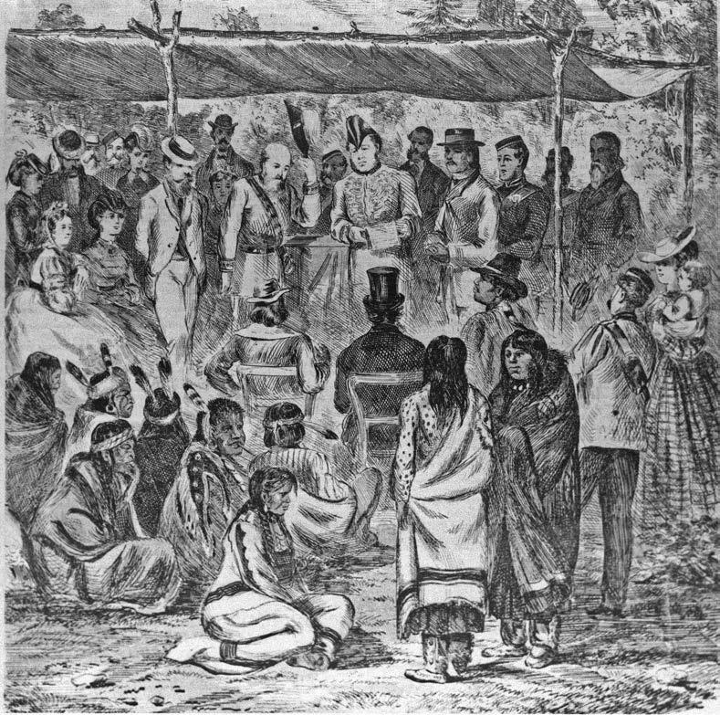
From the Canadian government’s perspective, the most significant elements in the Treaties were the written provisions by which the First Nations agreed to “cede, release, surrender, and yield” their land to the Crown.^100
In the Treaty negotiations, however, federal officials left the impression that the government intended the Treaties to establish a permanent relationship with First Nations.
Treaty Commissioner Alexander Morris told the Cree in 1876, “What I trust and hope we will do is not for to-day and tomorrow only; what I will promise, and what I believe and hope you will take, is to last as long as the sun shines and yonder river flows.”^101
In reality, the federal government policy was very different from what Morris said.
The intent of the government’s policy, which was firmly established in legislation at the time that the Treaties had been negotiated, was to assimilate Aboriginal people into broader Canadian society.
At the end of this process, Aboriginal people were expected to have ceased to exist as a distinct people with their own governments, cultures, and identities.
The federal Indian Act, first adopted in 1876, like earlier pre-Confederation legislation, defined who was and who was not an ‘Indian’ under Canadian law.^102
The Act also defined a process through which a person could lose status as an Indian.
Women, for example, could lose status simply by marrying a man who did not have status.
Men could lose status in a number of ways, including graduating from a university.
Upon giving up their status, individuals also were granted a portion of the band’s reserve land.^103
First Nations people were unwilling to surrender their Aboriginal identity in this manner.
Until 1920, other than women who involuntarily lost their Indian status upon marriage to a non-status individual, only 250 ‘Indians’ voluntarily gave up their status.^104
In 1920, the federal government amended the Indian Act to give it the power to strip individuals of their status against their will.
In explaining the purpose of the amendment to a parliamentary committee, Indian Affairs Deputy Minister Duncan Campbell Scott said that “our object is to continue until there is not a single Indian in Canada that has not been absorbed into the body politic, and there is no Indian question, and no Indian Department that is the whole object of this Bill.”^105
The other major element in the bill that Scott was referring to empowered the government to compel parents to send their children to residential schools.
Residential schooling was always more than simply an educational program: it was an integral part of a conscious policy of cultural genocide.
Further evidence of this assault on Aboriginal identity can be found in amendments to the Indian Act banning a variety of Aboriginal cultural and spiritual practices.
The two most prominent of these were the west-coast Potlatch and the Prairie Thirst Dance (often referred to as the “Sun Dance”).^106
Residential school principals had been in the forefront of the campaign to ban these ceremonies, and also urged the government to enforce the bans once they were put in place.^107
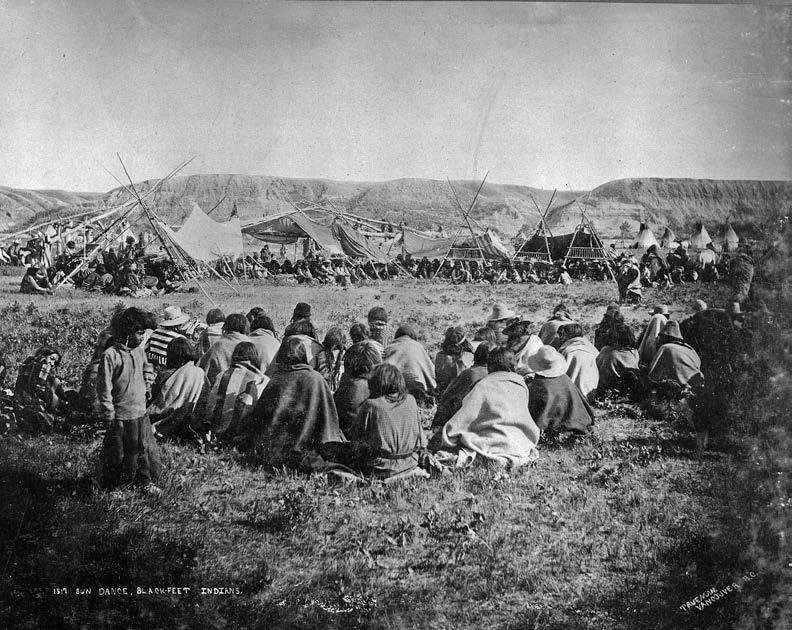
The Aboriginal right to self-government was also undermined.
The Indian Act gave the federal government the authority to veto decisions made by band councils and to depose chiefs and councillors.
The Act placed restrictions on First Nations farmers’ ability to sell their crops and take out loans.
Over the years, the government also assumed greater authority as to how reserve land could be disposed of: in some cases, entire reserves were relocated against the will of the residents.
The Indian Act was a piece of colonial legislation by which, in the name of ‘protection,’ one group of people ruled and controlled another.
It was in keeping with this intent to assimilate Aboriginal peoples and, in the process, to eliminate its government-to-government relationship with First Nations that the federal government dramatically increased its involvement in residential schooling in the 1880s.
In December 1878, J. S. Dennis, the deputy minister of the Department of the Interior, prepared a memorandum for Prime Minister Sir John A.
Macdonald on the country’s Aboriginal policy.
Dennis advised Macdonald that the long-term goal should be to instruct “our Indian and half-breed populations” in farming, raising cattle, and the mechanical trades, rendering them self-sufficient.
This would pave the way “for their emancipation from tribal government, and for their final absorption into the general community.”
Dennis argued that residential schools were key to fulfilling these goals.
It was his opinion that in a short time, schools might become “self-sustaining institutions.”^108
In the following year, Nicholas Davin, a failed Conservative candidate, carried out a brief study of the boarding schools that the United States government had established for Native Americans.
He recommended that Canada establish a series of such schools on the Prairies.
Davin acknowledged that a central element of the education provided at these schools would be directed towards the destruction of Aboriginal spirituality.
Since all civilizations were based on religion, it would be inexcusable, he thought, to do away with Aboriginal faith “without supplying a better [one].”
For this reason, he recommended that while the government should fund the schools, the churches should operate them.^109
The decision to continue to rely on the churches to administer the schools on a day-today basis had serious consequences.
The government constantly struggled, and failed, to assert control over the churches’ drive to increase the number of schools they operated.
At various times, each denomination involved in school operation established boarding schools without government support or approval, and then lobbied later for per capita funding.
When the churches concluded, quite legitimately, that the per capita grant they received was too low, they sought other types of increases in school funding.
Building on their network of missions in the Northwest, the Catholics quickly came to dominate the field, usually operating twice as many schools as did the Protestant denominations.
Among the Protestant churches, the Anglicans were predominant, establishing and maintaining more residential schools than the Methodists or the Presbyterians.
The United Church, created by a union of Methodist and Presbyterian congregations, took over most of the Methodist and Presbyterian schools in the mid-1920s.
Presbyterian congregations that did not participate in the union established the Presbyterian Church in Canada and retained responsibility for two residential schools.
In addition to these national denominations, a local Baptist mission ran a residence for Aboriginal students in Whitehorse in the 1940s and 1950s, and a Mennonite ministry operated three schools in northwestern Ontario in the 1970s and 1980s.
Each faith, in its turn, claimed government discrimination against it.
Competition for converts meant that churches sought to establish schools in the same locations as their rivals, leading to internal divisions within communities and expensive duplication of services.
The model for these residential schools for Aboriginal children, both in Canada and the United States, did not come from the private boarding schools to which members of the economic elites in Britain and Canada sent their children.
Instead, the model came from the reformatories and industrial schools that were being constructed in Europe and North America for the children of the urban poor.
The British parliament adopted the Reformatory Schools Act in 1854 and the Industrial Schools Act in 1857.^110
By 1882, over 17,000 children were in Britain’s industrial schools.^111
Under Ontario’s 1880 Act for the Protection and Reformation of Neglected Children, a judge could send children under the age of fourteen to an industrial school, where they might be required to stay until they turned eighteen.^112
Such schools could be dangerous and violent places.
At the Halifax Boys Industrial School, first offenders were strapped, and repeat offenders were placed in cells on a bread-and-water ration.
From there, they might be sent to the penitentiary.^113
The Canadian government also drew inspiration from the United States.
There, the first in a series of large-scale, government-operated, boarding schools for Native Americans opened in 1879 in a former army barracks in Carlisle, Pennsylvania.^114

On the basis of Davin’s report and developments in the United States, the federal government decided to open three industrial schools.
The first one opened in Battleford in what is now Saskatchewan in 1883.
It was placed under the administration of an Anglican minister.
The following year, two more industrial schools opened: one at Qu’Appelle in what is now Saskatchewan, and one at High River in what is now Alberta.
Both these schools were administered by principals nominated by the Roman Catholic Oblate order.
The federal government not only built these schools, but it also assumed all the costs of operating them.
Recruiting students for these schools was difficult.
According to the Indian Affairs annual report, in 1884, there were only twenty-seven students at the three schools.^115
Unlike the church-run boarding schools, which provided a limited education with a heavy emphasis on religious instruction, the industrial schools were intended to prepare First Nations people for integration into Canadian society by teaching them basic trades, particularly farming.
Generally, industrial schools were larger than boarding schools, were located in urban areas, and, although church-managed, usually required federal approval prior to construction.
The boarding schools were smaller institutions, were located on or near reserves, and provided a more limited education.
The differences between the industrial schools and the boarding schools eroded over time.
By the 1920s, the federal government ceased to make any distinction between them, referring to them simply as “residential schools.”
In justifying the investment in industrial schools to Parliament in 1883, Public Works Minister Hector Langevin argued that
if you wish to educate these children you must separate them from their parents during the time that they are being educated.
If you leave them in the family they may know how to read and write, but they still remain savages, whereas by separating them in the way proposed, they acquire the habits and tastes—it is to be hoped only the good tastes—of civilized people.^116
The federal government entered into residential schooling at a time when it was colonizing Aboriginal lands in western Canada.
It recognized that, through the Treaties, it had made commitments to provide Aboriginal people with relief in periods of economic distress.
It also feared that as traditional Aboriginal economic pursuits were marginalized or eliminated by settlers, the government might be called upon to provide increased relief.
In this context, the federal government chose to invest in residential schooling for a number of reasons.
First, it would provide Aboriginal people with skills that would allow them to participate in the coming market-based economy.
Second, it would further their political assimilation.
It was hoped that students who were educated in residential schools would give up their status and not return to their reserve communities and families.
Third, the schools were seen as engines of cultural and spiritual change: ‘savages’ were to emerge as Christian ‘white men.’ There was also a national security element to the schools.
Indian Affairs official Andsell Macrae observed that “it is unlikely that any Tribe or Tribes would give trouble of a serious nature to the Government whose members had children completely under Government control.”^117
Duncan Campbell Scott succinctly summarized Indian Affairs’ goals for the schools in 1909: “It includes not only a scholastic education, but instruction in the means of gaining a livelihood from the soil or as a member of an industrial or mercantile community, and the substitution of Christian ideals of conduct and morals for aboriginal concepts of both.”^118
The achievement of such invasive and ambitious goals would require a substantial level of funding.
This was never forthcoming.
In announcing the construction of the three initial industrial schools, Indian Commissioner Edgar Dewdney said that although the starting costs would be high, he could see no reason why the schools would not be largely self-supporting in a few years, due to the skills in farming, raising stock, and trades that were being taught to the students.^119
In supporting an Anglican proposal for two industrial schools in Manitoba, Indian Affairs Deputy Minister Lawrence Vankoughnet wrote to Prime Minister Macdonald that it would be “well to give a Grant of money annually to each school established by any Denomination for the industrial training of Indian children.”
He said that system worked well in Ontario, and it “costs the Government less than the whole maintenance of the School would cost and it enlists the sympathies and assistance of the religious denominations in the education and industrial training of the Indian children.”^120
The government believed that between the forced labour of students and the poorly paid labour of missionaries, it could operate a residential school system on a nearly costfree basis.
The missionaries and the students were indeed a source of cheap labour—but the government was never happy with the quality of the teaching and, no matter how hard students worked, their labour never made the schools self-supporting.
Soon after the government established the industrial schools, it began to cut salaries.^121
Initially, the federal government covered all the costs of operating the industrial schools.
In 1891, this policy was abandoned in favour of one by which schools received a fixed amount per student (referred to as a “per capita grant”).^122
The system both intensified the level of competition among churches for students and encouraged principals to accept students who should have been barred from admission because they were too young or too sick.^123
The government never adequately responded to the belated discovery that the type of residential school system that officials had envisioned would cost far more than politicians were prepared to fund.
In the early twentieth century, chronic underfunding led to a health crisis in the schools and a financial crisis for the missionary societies.
Indian Affairs, with the support of leading figures in the Protestant churches, sought to dramatically reduce the number of residential schools, replacing them with day schools.
The government abandoned the plan when it failed to receive the full support of all the churches involved in the operation of the schools.^124
Instead, in 1911, the federal government finally implemented a significant increase to the per capita grant received by boarding schools and attempted to impose basic health standards for the schools.
This resulted in a shortterm improvement.
However, inflation eroded the value of the grant increase, and the grant was actually reduced repeatedly during the Great Depression and at the start of the Second World War.^125
Funding for residential schools was always lower than funding for comparable institutions in Canada and the United States that served the general population.
In 1937, Indian Affairs was paying, on average, $180 a year per student.
This was less than a third of the per capita costs at that time for the Manitoba School for the Deaf ($642.40) and the Manitoba School for Boys ($550).
In the United States, the annual per capita cost at the Chilocco Indian Residential School in Oklahoma in 1937 was $350.
According to the American Child Welfare League, the per capita costs for well-run institutions in that country ranged between $313 and $541.^126
It would not be until the 1950s that changes were made in the funding system in Canada that were intended to ensure that the schools could recruit qualified teachers and improve the student diets.^127
Even these improvements did not end the inequity in residential school funding.
In 1966, residential schools in Saskatchewan were spending between $694 and $1,193 a year per student.^128
Comparable child-welfare institutions in Canada were spending between $3,300 and $9,855 a year.
In the United States, the annual cost of residential care per child was between $4,500 and $14,059.^129
It was not until 1894 that the federal government put in place regulations relating to residential school attendance.
Under the regulations adopted in that year, residential school attendance was voluntary.
However, if an Indian agent or justice of the peace thought that any “Indian child between six and sixteen years of age is not being properly cared for or educated, and that the parent, guardian or other person having charge or control of such child, is unfit or unwilling to provide for the child’s education,” he could issue an order to place the child “in an industrial or boarding school, in which there may be a vacancy for such child.”
If a child placed in the school under these regulations left a residential school without permission, or did not return at a promised time, school officials could get a warrant from an Indian agent or a justice of the peace authorizing them (or a police officer, truant officer, or employee of the school or Indian Affairs) to “search for and take such child back to the school in which it had been previously placed.”
With a warrant, one could enter— by force if need be—any house, building, or place named in the warrant and remove the child.
Even without a warrant, Indian Affairs employees and constables had the authority to arrest a student in the act of escaping from a residential school and return the child to the school.^130
It was departmental policy that no child could be discharged without departmental approval—even if the parents had enrolled the child voluntarily.
The government had no legislative basis for this policy.
Instead, it relied on the admission form that parents were supposed to sign.
(In some cases, school staff members signed these forms.)^131
By 1892, the department required that all parents sign an admission form when they enrolled their children in a residential school.
In signing the form, parents gave their consent that “the Principal or head teacher of the Institution for the time being shall be the guardian” of the child.
In that year, the Department of Justice provided Indian Affairs with a legal opinion to the effect that “the fact of a parent having signed such an application is not sufficient to warrant the forcible arrest against the parents’ will of a truant child who has been admitted to an Industrial School pursuant to the application.”
It was held that, without legislative authority, no form could provide school administrators with the power of arrest.^132
Despite this warning, well into the twentieth century, Indian Affairs would continue to enforce policies regarding attendance for which it had no legal authority.^133
This is not the only example of the government’s use of unauthorized measures.
In the 1920s, students were to be discharged from residential school when they turned sixteen.
Despite this, William Graham, the Indian commissioner, refused to authorize discharge until the students turned eighteen.
He estimated that, on this basis, he rejected approximately 100 applications for discharge a year.^134
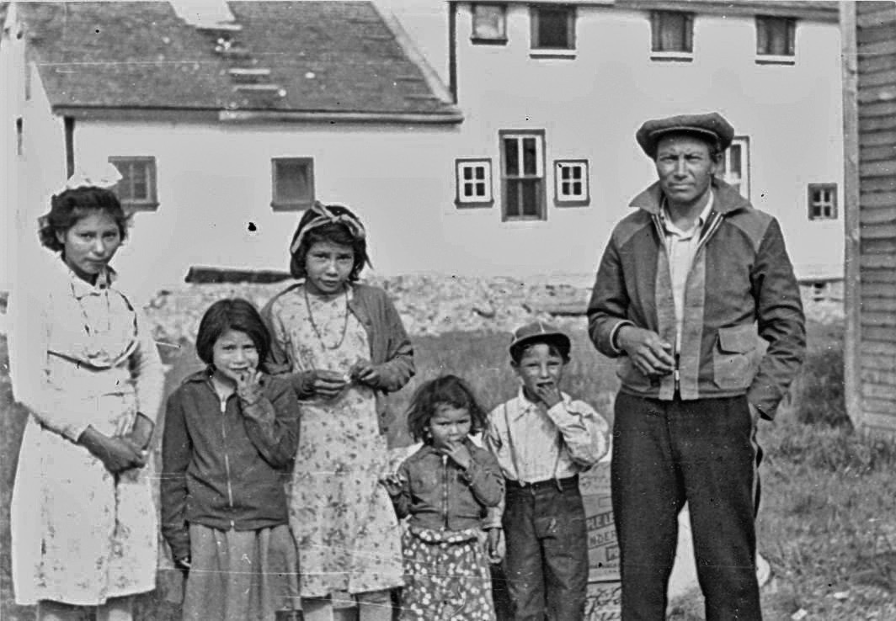
In 1920, the Indian Act was amended to allow the government to compel any First Nations child to attend residential school.
However, residential school was never compulsory for all First Nations children.
In most years, there were more First Nations children attending Indian Affairs day schools than residential schools.
During the early 1940s, this pattern was reversed.
In the 1944–45 school year, there were 8,865 students in residential schools, and 7,573 students in Indian Affairs day schools.
In that year, there were reportedly 28,429 school-aged Aboriginal children.
This meant that 31.1% of the schoolaged Aboriginal children were in residential school.^135

The residential school system operated with few regulations; those that did exist were in large measure weakly enforced.
The Canadian government never developed anything approaching the education acts and regulations by which provincial governments administered public schools.
The key piece of legislation used in regulating the residential school system was the Indian Act.
This was a multi-purpose piece of legislation that defined and limited First Nations life in Canada.
The Act contained no education-related provisions until 1884.
There were no residential school–specific regulations until 1894.
These dealt almost solely with attendance and truancy.
It was recognized by those who worked within the system that the level of regulation was inadequate.
In 1897, Indian Affairs education official Martin Benson wrote, “No regulations have been adopted or issued by the Department applicable to all its schools, as had been done by the Provincial Governments.”^136
The situation did not improve over time.
The education section of the 1951 Indian Act and the residential school regulations adopted in 1953 were each only four pages in length.^137
By comparison, the Manitoba Public Schools Act of 1954 was ninety-one pages in length.^138
In addition to the Act, the Manitoba government had adopted nineteen education-related regulations.^139
It is also apparent that many key people within the system had little knowledge of the existing rules and regulations.
In 1922, an Indian agent in Hagersville, Ontario, inquired of departmental headquarters if there had been any changes in the regulations regarding education since the adoption of a set of education regulations in 1908.
His question suggests he was completely unaware of major changes to the Indian Act regarding education that had supplanted previous regulations in 1920.^140
In 1926, J. K. Irwin, the newly appointed principal of the Gordon’s school in Saskatchewan, discovered upon taking office that he could not find any “laid down regulations as to the duties and powers of a Principal of an Indian Boarding School.”
He wrote to Indian Affairs, asking for a copy of such regulations, since he wanted to know “exactly what I am to do and what powers I have.”^141
Departmental secretary J. D. McLean informed him that “there are no printed regulations concerning the duties and powers of the principal of an Indian residential school.”^142
The system was so unregulated that in 1968, after Canada had been funding residential schools for 101 years, Indian Affairs Deputy Minister J. A. MacDonald announced, “For the first time we have set down in a precise and detailed manner the criteria which is to be used in future in determining whether or not an Indian child is eligible for these institutions.”^143
From the 1880s onwards, residential school enrolment climbed annually.
According to federal government annual reports, the peak enrolment of 11,539 was reached in the 1956–57 school year.^144
(For trends, see Graph 1.)
Most of the residential schools were located in the northern and western regions of the country.
With the exception of Mount Elgin and the Mohawk Institute, the Ontario schools were all in northern or northwestern Ontario.
The only school in the Maritimes did not open until 1930.^145
Roman Catholic and Anglican missionaries opened the first two schools in Québec in the early 1930s.^146
It was not until later in that decade that the federal government began funding these schools.^147
The number of schools began to decline in the 1940s.
Between 1940 and 1950, for example, ten school buildings were destroyed by fire.^148
As Graph 2 illustrates, this decrease was reversed in the mid-1950s, when the federal department of Northern Affairs and National Resources dramatically expanded the school system in the Northwest Territories and northern Québec.
Prior to that time, residential schooling in the North was largely restricted to the Yukon and the Mackenzie Valley in the Northwest Territories.
Large residences were built in communities such as Inuvik, Yellowknife, Whitehorse, Churchill, and eventually Iqaluit (formerly Frobisher Bay).
This expansion was undertaken despite reports that recommended against the establishment of residential schools, since they would not provide children with the skills necessary to live in the North, skills they otherwise would have acquired in their home communities.^149
The creation of the large hostels ### Graph 1
[plain-text extract project is currently missing this graph image, sorry!]
Source: Indian Affairs and Northern Affairs annual reports.
After the 1965–66 school year, Indian Affairs stopped reporting on annual residential school enrolment.
[plain-text extract project is currently missing this graph image, sorry!]
Source: Indian and Northern Affairs Canada, Indian Residential Schools of the Indian Residential Schools Settlement Agreement 2011.
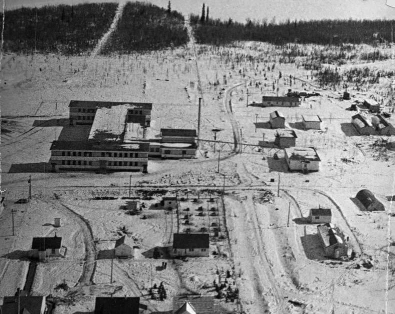
was accompanied by the opening of what were termed “small hostels” in the smaller and more remote communities of the eastern Arctic and the western Northwest Territories.
Many of the early advocates of residential schooling in Canada expected that the schools would take in both Aboriginal children who had status under the Indian Act (in other words, they were Indians as defined by the Act) as well as Aboriginal children who, for a variety of reasons, did not have status.
The federal government classed these individuals alternately as “non-status Indians,” “half-breeds,” or “Métis.”^150
The early church-run boarding schools made no distinction between status and non-status or Métis children.^151
The federal government position on the matter was constantly shifting.
It viewed the Métis as members of the ‘dangerous classes’ whom the residential schools were intended to civilize and assimilate.^152
This view led to the adoption of policies that allowed for the admission of Métis children to the schools at various times.^153
However, from a jurisdictional perspective, the federal government believed that the responsibility for educating and assimilating Métis people lay with provincial and territorial governments.
There was a strong concern that if the federal government began providing funding for the education of some of the children the provinces and territories were responsible for, it would find itself subject to having to take responsibility for the rest.^154
When this view dominated, Indian agents would be instructed to remove Métis students from residential schools.^155

Despite their perceived constitutional responsibility, provincial and territorial governments were reluctant to provide services to Métis people.
They did not ensure that there were schools in Métis communities, or work to see that Métis children were admitted and welcomed into the general public school system.^156
Many Métis parents who wished to see their children educated in schools had no option but to try to have them accepted into a residential school.
In some cases, these would be federally funded schools, but, in other cases, Métis students attended church-run schools or residences that did not receive federal funding.^157
Provincial governments slowly began to provide increased educational services to Métis students after the Second World War.
As a result, Métis children lived in residences and residential schools that were either run or funded by provincial governments.
The Métis experience is an important reminder that the impacts of residential schooling extend beyond the formal residential school program that Indian Affairs operated.^158

Prior to the 1950s, most of the students who attended schools in the Northwest Territories were either First Nations or Métis.
As late as 1949, only 111 Inuit students were receiving full-time schooling in the North.^159
The hostel system that Northern Affairs established in the Northwest Territories in the mid-1950s did not restrict admission to First Nations students.
It was only at this point that large numbers of Inuit children began attending residential schools.
The impact of the schools on the Inuit was complex.
Some children were sent to schools thousands of kilometres from their homes, and went years without seeing their parents.
In other cases, parents who had previously been supporting themselves by following a seasonal cycle of land- and marine-based resource harvesting began settling in communities with hostels so as not to be separated from their children.
Because of the majority of the Aboriginal population in two of the three northern territories, the per capita impact of the schools in the North is higher than anywhere else in the country.
And, because the history of these schools is so recent, not only are there many living Survivors today, but there are also many living parents of Survivors.
For these reasons, both the intergenerational impacts and the legacy of the schools, the good and the bad, are particularly strongly felt in the North.
By 1945, the Indian Affairs residential school system, starved for funding for fifteen years, was on the verge of collapse.^160
Not only was the existing Indian Affairs education system lacking money and resources, but also there were no school facilities of any sort for 42% of the school-aged First Nations children.^161
Having concluded that it was far too expensive to provide residential schooling to these students, Indian Affairs began to look for alternatives.
One was to expand the number of Indian Affairs day schools.
From 1945– 46 to 1954–55, the number of First Nations students in Indian Affairs day schools increased from 9,532 to 17,947.^162
In 1949, the Special Joint Committee of the Senate and House of Commons Appointed to Examine and Consider The Indian Act recommended “that wherever and whenever possible Indian children should be educated in association with other children.”^163
In 1951, the Indian Act was amended to allow the federal government to enter into agreements with provincial governments and school boards to have First Nations students educated in public schools.^164
By 1960, the number of students attending “non-Indian” schools (9,479) had surpassed the number living in residential schools (9,471).^165
The transfer of First Nations students into the public school system was described as “integration.”
By then, the overall policy goal was to restrict the education being given in Indian Affairs schools to the lower grades.
Therefore, it was expected that during the course of their schooling, at least half of the students then in Indian Affairs schools would transfer to a ‘non-Indian’ school.^166
The integration policy was opposed by some of the church organizations.
Roman Catholic church officials argued that residential schooling was preferable for three reasons: 1) teachers in public schools were not prepared to deal with Aboriginal students; 2) students in public schools often expressed racist attitudes towards Aboriginal students; and 3) Aboriginal students felt acute embarrassment over their impoverished conditions, particularly in terms of the quality of the clothing they wore and the food they ate.^167
These were all issues that students and parents raised, as well.^168
From the 1940s onwards, residential schools increasingly served as orphanages and child-welfare facilities.
By 1960, the federal government estimated that 50% of the children in residential schools were there for child-welfare reasons.
What has come to be referred to as the “Sixties Scoop”—the dramatic increase in the apprehension of Aboriginal children from the 1960s onwards—was in some measure simply a transferring of children from one form of institution, the residential school, to another, the child-welfare agency.^169
The schools were not funded or staffed to function as child-welfare institutions.
They failed to provide their students with the appropriate level of personal and emotional care children need during their childhood and adolescence.
This failure applied to all students, but was of particular significance in the case of the growing number of social-welfare placements in the schools.^170
Some children had to stay in the schools year-round because it was thought there was no safe home to which they could return.
The residential school environment was not a safer or more loving haven.
These children spent their entire childhoods in an institution.
The closure of residential schools, which commenced in earnest in 1970, was accompanied by a significant increase in the number of children being taken into care by child-welfare agencies.^171
By the end of the 1970s, the transfer of children from residential schools was nearly complete in southern Canada, and the impact of the Sixties Scoop was in evidence across the country.
In 1977, Aboriginal children accounted for 44% of the children in care in Alberta, 51% of the children in care in Saskatchewan, and 60% of the children in care in Manitoba.^172
In those residences that remained in operation, the percentage of social-welfare cases remained high.^173
In 1968, the federal government drastically restructured the residential school system by dividing the schools into residences and day schools, each with a principal or administrator.^174
In June of the following year, the federal government took direct control over all the schools in southern Canada.^175
Because churches were allowed to continue to appoint the residence administrators, their presence continued in many schools in the coming years.
They were, however, no longer directly responsible for the facilities.^176
In 1969, the federal government also began to transfer the hostels and day schools in the Yukon and Northwest Territories to their respective territorial governments.
Most of the small hostels in the eastern Arctic and Nunavik (Arctic Québec) were closed by the end of 1971.
(Four small hostels were also operated in the western and central Arctic.
The last of these, located at Cambridge Bay, did not close until the late 1990s.)^177
Having assumed control over the southern Canadian schools in 1969, the federal government commenced what would prove to be a protracted process of closing the system down.
According to the Indian Affairs annual report for 1968–69, the department was responsible for sixty residences.
Two years later, the number was down to forty-five.^178
The government takeover of the residential schools also coincided with the release of the federal government’s White Paper on “Indian Policy.”
This document proposed a massive transfer of responsibility for First Nations people from the federal to provincial governments.^179
It called for the repeal of the Indian Act, the winding up of the Department of Indian Affairs, and the eventual extinguishment of the Treaties.^180
The recently formed National Indian Brotherhood (nib) described the White Paper as a document intended to bring about “the destruction of a Nation of People by legislation and cultural genocide.”^181
In its response, the nib proposed “Indian Control of Indian Education.”^182
In 1971, Indian Affairs Minister Jean Chrétien announced that, in the face of First Nations resistance, the federal government was abandoning the policy directions outlined in the White Paper.^183
By then, First Nations communities had already taken over one residential school.
In the summer of 1970, parents of children at the Blue Quills, Alberta, school occupied the school, demanding that its operation be turned over to a First Nations education authority.
They took this measure in response to reports that the school was to be turned into a residence and their children were to be educated at a nearby public school.
The Blue Quills conflict was the result of both long-standing local dissatisfaction with the administration of the school and First Nations opposition to the policy of integration.^184
It was estimated that over 1,000 people participated in the sit-in, with rarely fewer than 200 people being at the school on any given day.^185
Seventeen days after the sit-in commenced, Minister Jean Chrétien announced that the school would be transferred to the Blue Quills Native Education Council.^186
In coming years, the Qu’Appelle, Prince Albert, Duck Lake, Lestock, and Grayson facilities in Saskatchewan were also taken over by First Nations authorities.
The Christie residence in Tofino, British Columbia, was also operated briefly by an Aboriginal authority.^187
The federal government, however, remained committed to the closing of the facilities.
Because of the government’s lengthy history of underfunding residential schools, many of the schools were in poor repair.
Between 1995 and 1998, the last seven residences in southern Canada were closed.^188
Starting in the 1970s, territorial governments, in which former residential school students were serving as cabinet ministers, also began expanding the number of day schools as part of a campaign to close residential schools in the North.
The last large hostel in the Yukon closed in 1985.^189
By 1986, there were only three large hostels operating in the Northwest Territories.^190
Grollier Hall, the last large hostel in the North, closed in 1997.^191
If one dates the residential school system back to the early 1830s, when the Mohawk Institute first took in boarders, the system had been in operation for over 160 years.
The closing of the schools did not mark the end of the history of residential schooling in Canada.
By the 1990s, former students had begun to make Canadians aware of the tremendous harm that the residential school experience had caused to Aboriginal people and Aboriginal communities.
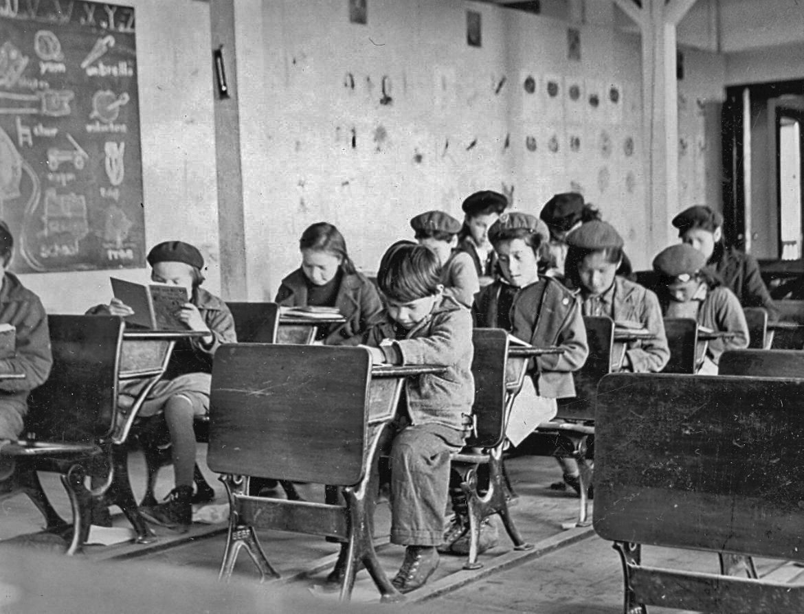
As educational institutions, the residential schools were failures, and regularly judged as such.
In 1923, former Regina industrial school principal R. B. Heron delivered a paper to a meeting of the Regina Presbytery of the Presbyterian Church that was highly critical of the residential school system.
He said that parents generally were anxious to have their children educated, but they complained that their children “are not kept regularly in the class-room; that they are kept out at work that produces revenue for the School; that when they return to the Reserves they have not enough education to enable them to transact ordinary business—scarcely enough to enable them to write a legible letter.”^192
The schools’ success rate did not improve.
From 1940–41 to 1959–60, 41.3% of each year’s residential school Grade One enrolment was not promoted to Grade Two.^193
Just over half of those who were in Grade Two would get to Grade Six.^194
Many principals and teachers had low expectations of their students.
Wikwemikong, Ontario, principal R. Baudin wrote in 1883, “What we may reasonably expect from the generality of children, is certainly not to make great scholars of them.
Good and moral as they may be, they lack great mental capacity.”
He did not think it wise to expect them to “be equal in every respect to their white brethren.”^195
In preparing a 1928 report on the Anglican school at Onion Lake, a Saskatchewan government school inspector expressed his belief that “in arithmetic abstract ideas develop slowly in the Indian child.”^196
Some thought it was a risky matter to give the students too much education.
Mount Elgin principal S. R. McVitty wrote in 1928 that “classroom work is an important part of our training, but not by any means the most important.”
He added, “In the case of the Indian ‘a little learning is a dangerous thing.’”^197
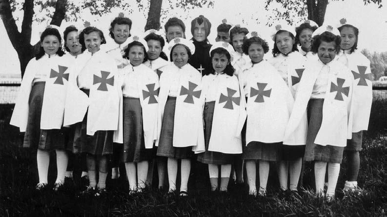
Much of what went on in the classroom was simply repetitious drill.
A 1915 report on the Roman Catholic school on the Blood Reserve in Alberta noted, “The children’s work was merely memory work and did not appear to be developing any deductive power, altogether too parrot like and lacking expression.”^198
A 1932 inspector’s report from the Grayson, Saskatchewan, school suggests there had been little change.
“The teaching as I saw it today was merely a question of memorizing and repeating a mass of, to the children, ‘meaningless’ facts.”^199
The classrooms were often severely overcrowded.
At the Qu’Appelle school in 1911, Sister McGurk had seventy-five girls in her junior classroom.
The inspector of Roman Catholic schools reported to Ottawa that this was an “almost impossible” situation.^200
In 1915, two teachers were responsible for 120 students at the Coqualeetza Institute in Chilliwack, British Columbia.^201
In 1928, there were sixty students in the junior classroom at the Alberni, British Columbia, school.^202
The Indian Affairs schools branch maintained that the principals and the staff were “appointed by the church authorities, subject to the approval of the Department as to qualifications.”^203
In reality, the churches hired staff and the government then automatically approved their selections.^204
The churches placed a greater priority on religious commitment than on teaching ability.^205
Because the pay was so low, many of the teachers lacked any qualification to teach.^206
In 1908, Indian Affairs inspector F. H. Paget reported that at the Battleford school, “frequent changes in the staff at this school has not been to its advantage.”
The problem lay not with the principal, but with the fact that “more profitable employment is available in the District and, furthermore, the salaries paid are not as high as are paid in other public institutions.”^207
When a British Columbia Indian agent recommended that schools be required to hire only qualified staff, he was told by his superior, British Columbia Indian Superintendent A. W. Vowell, that such a requirement would result in the churches’ applying for “larger grants.”
And, as Vowell understood it, Indian Affairs “is not at present disposed to entertain requests for increased grants to Indian boarding and industrial schools.”^208
In 1955, 55 (23%) of the 241 teachers in residential schools directly employed by Indian Affairs had no teacher’s certificate.^209
In 1969, Indian Affairs reported it was still paying its teachers less than they could make in provincial schools.
“As a result, there are about the same number of unqualified teachers, some 140, in federal schools [residential and non-residential] now, as ten years ago.”^210
In the minds of some principals, religious training was the most valuable training the schools provided.
In 1903, Brandon, Manitoba, principal T.
Ferrier wrote that “while it is very important that the Indian child should be educated, it is of more importance that he should build up a good clean character.”
Such a heavy emphasis was required, in Ferrier’s opinion, to “counteract the evil tendencies of the Indian nature.”^211
Louise Moine recalled that religious instruction and observation were a constant part of life at the Qu’Appelle school in the early twentieth century: “From the time we got out of bed at the sound of the bell, we went down on our knees to pray.
After we had washed and dressed, we headed for the chapel to attend Low mass which was always held at 7 a.m.”^212
The staff handbook for the Presbyterian school in Kenora in the 1940s stated it was expected that, upon leaving the school, most students would “return to the Indian Reserves from which they had come.”
Given this future, staff members were told that “the best preparation we can give them is to teach them the Christian way of life.”^213
Not surprisingly, many of those who succeeded academically followed careers in the church.
Coqualeetza graduate Peter Kelly became a Methodist Church minister.
Emmanuel College graduate Edward Ahenakew became an Anglican minister.
Others worked for government or taught school.
Qu’Appelle graduate Daniel Kennedy became an interpreter and general assistant for the Assiniboine Indian Agency.
Joseph Dion, a graduate of the Onion Lake school, taught school for many years in Saskatchewan.
Still others pursued business and professional careers.
After attending the Mohawk Institute, Beverly Johnson went to Hellmuth College in London, Ontario, where he excelled at sports and drama.
He then went to work for the New York Life Insurance Company in Pennsylvania.
A graduate of the Mohawk Institute, N. E. Lickers, was called to the bar in 1938 and was described by the Branford Expositor as the “First Ontario Indian Lawyer.”^214
Despite these successes, little encouragement generally was offered to students who wished to pursue further education.
Oliver Martin, who was raised on the Six Nations Reserve in Ontario and went on to become an Ontario magistrate, recalled being told by Indian Affairs Deputy Minister Duncan Campbell Scott: “It’s no use sending you Indians to school you just go back to the reserve anyway.”^215
For many students, classroom life was foreign and traumatic.
David Charleson said he found the regimentation at the Christie, British Columbia, school so disturbing that he “never wanted to learn, so I jumped into my shell.
I took Kindergarten twice because of what happened to me.
I didn’t want to learn.”^216
At the Birtle school in Manitoba, Isabelle Whitford said, she had a hard time adjusting to the new language and the classroom discipline.
“Every time I couldn’t get an answer, like, you know, she would pull my ears and shake my head.”^217
Betsy Olson described class work at the Prince Albert, Saskatchewan, school as a torment, in which her “spelling was always 30, 40, it was way down.
And when we did spelling, sometimes I freeze, I couldn’t move, I just scribbled because I couldn’t move my hand.”^218
Leona Agawa never felt comfortable in the classroom at the Spanish, Ontario, school.
For much of her time in school, she was frightened or intimidated.
“I’d hear my name, but I never got to answer.
I stood up, never got to answer what they were saying when they sat me down.
And I’d get a good slap after, after you, you leave there for not being nice in school.”^219
Since the 1920s, Indian Affairs had required residential schools to adopt provincial curricula.^220
The department had also asked provincial governments to have their school inspectors inspect Indian Affairs schools.^221
The wisdom of this practice had been questioned during the hearings of the Special Joint Committee of the Senate and House of Commons inquiry into the Indian Act in the 1940s.
Andrew Moore, a secondary school inspector for the Province of Manitoba, told the committee members that Indian Affairs took full responsibility for all aspects of First Nations education, including curriculum.^222
Provincial education departments, including the one he worked for, were “not organized or not interested in Indian schools.”^223
In 1963, D. W. Hepburn, the former principal of the federal school in Inuvik, published an article with the ominous headline “Northern Education: Façade for Failure.”
He argued that the education being provided in the new federal schools was “hopelessly inadequate.
The reasons for this failure are clear: the aims of education set forth by the Department are thoroughly confused, the curriculum is inappropriate, and many current practices of the system are not only ill-conceived but actually harmful.”^224
Although 60% of the students at the Inuvik school were in the first three grades, few teachers had any background in primary education, and “almost none has any special training in native education, and will receive none from the Department.”^225
The schools were producing individuals who “lack not only the skills required for most permanent wage employment but also those necessary for the traditional economy.”^226
The decision to leave curriculum to provincial education departments meant that Aboriginal students were subjected to an education that demeaned their history, ignored their current situation, and did not even recognize them or their families as citizens.
This was one of the reasons for the growing Aboriginal hostility to the Indian Affairs integration policy.
An examination of the treatment of Aboriginal people in provincially approved textbooks reveals a serious and deep-rooted problem.
In response to a 1956 recommendation that textbooks be developed that were relevant to Aboriginal students, Indian Affairs official R.
F.
Davey commented, “The preparation of school texts is an extremely difficult matter.”
It was his opinion that “there are other needs which can be met more easily and should be undertaken first.”^227
In the following years, assessments of public-school textbooks showed that they continued to perpetuate racist stereotypes of Aboriginal people.^228
A 1968 survey pointed out that in some books, the word squaw was being used to describe Aboriginal women, and the word redskins used to describe Aboriginal people.^229
Students also noted that the curriculum belittled their ancestry.
Mary Courchene said, “Their only mandate was to Christianize and civilize; and it’s written in black and white.
And every single day we were reminded.”^230
Lorna Cochrane could never forget an illustration in a social studies text.
“There was a picture of two Jesuits laying in the snow, they were murdered by these two ‘savages.’ And they had this what we call ‘a blood-curdling look’ on their faces is how I remember that picture.”^231
When the curriculum was not racist, it was bewildering and alienating.
Many students could not identify with the content of the classroom materials.
For instance, Lillian Elias remembers that “when I looked at Dick and Jane I thought Dick and Jane were in heaven when I saw all the green grass.
That’s how much I knew about Dick and Jane.”^232
Some students said that the limits of the education they had received in residential school became apparent when they were integrated into the public school system.^233
Many said there was no expectation that they would succeed.
Walter Jones never forgot the answer that a fellow student at the Alberni, British Columbia, school was given when he asked if he would be able to go to Grade Twelve.
“That supervisor said, ‘You don’t need to go that far,’ he says.
He says, ‘Your people are never going to get education to be a professional worker, and it doesn’t matter what lawyer, or doctor, or electrician, or anything, that a person has to go to school for.’”234
Some northern schools developed reputations for academic success.
Grandin College in Fort Smith was established originally to recruit young people for the Catholic ministry.
A new principal, Jean Pochat, decided to focus on providing young men and women with leadership training.^235
The school became known as a “leadership factory,” producing numerous future government leaders for the North.^236
Students who attended the Churchill Vocational Centre spoke about how they were taught by open-minded teachers who were willing to expose them to the social and political changes taking place across the world in the 1960s.^237
John Amagoalik wrote that at the Churchill Vocational Centre, “we had excellent teachers.
To this day we still talk about them…
They treated us as ordinary people.
We had never experienced this sort of attitude before and it was, in a way, liberating to be with new teachers that treated you as their equal.”^238
David Simailak spoke of how his time at residential school gave him a series of new opportunities.
He fondly remembers excelling at math and spelling competitions, and travelling to Montreal for Expo ’67.^239
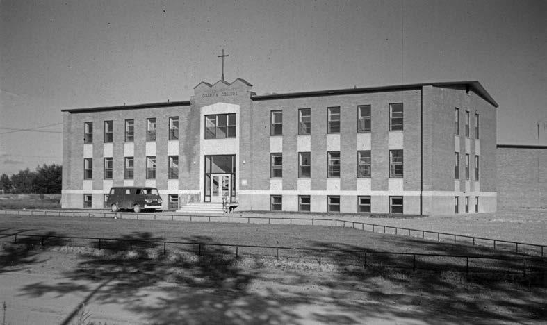
Specific teachers were remembered with gratitude.
When Roddy Soosay lived in residence, he attended a local public school.
He credited his high school principal at the Ponoka, Alberta, public school for pushing him to succeed.^240
Martha Loon said that at the Poplar Hill, Ontario, school in the 1980s, there were staff members who befriended and helped her and her siblings.
There was one staff member to whom she could tell all her problems.
“I could say anything to her, and we’d go for walks sometimes.
So, I could tell her anything and she wouldn’t, she wouldn’t say anything to other staff members about it.
So, in a way, that’s, you know, gave me a chance to express my frustrations, and the things that I didn’t like.”^241
Other students were able to concentrate on their studies.
Frederick Ernest Koe said that at Stringer Hall in Inuvik, he devoted all his energies to his school work.
“You kind of develop a protective mechanism on the shell that you didn’t rat on anybody, you kind of behave, you followed orders and things would go smooth.”^242
Madeleine Dion Stout succeeded academically at the Blue Quills school, but she did not credit the school for her success.
“It’s not residential school that made me a good student.
My, the fundamental values and good example I had before I went to residential school by my grandfather and my parents, and all the old people on the reserve where I grew up are the ones who made me a good student.”^243
Student education was further undermined by the amount of work the students had to do to support the schools.
Because Indian Affairs officials had anticipated that the residential schools would be self-sufficient, students were expected to raise or grow and prepare most of the food they ate, to make and repair much of their clothing, and to maintain the schools.
As a result, most of the residential schools operated on what was referred to as the “half-day system.”
Under this system—which amounted to institutionalized child labour—students were in class for half the day and in what was supposed to be vocational training for the other half.
Often, as many students, teachers, and inspectors observed, the time allocated for vocational training was actually spent in highly repetitive labour that provided little in the way of training.
Rather, it served to maintain the school operations.
The half-day system was not a formally mandated system.
Some schools did not use it, and those that did use it implemented it on their own terms.
When, in 1922, Indian Affairs education official Russell Ferrier recommended that the Chapleau, Ontario, school implement the half-day system, he had to rely on his memory of visits to other schools in order to describe how the system operated.
Indian Affairs had no official written description of the system.^244
This is telling evidence of the haphazard way in which residential schools were managed.
While the half-day system was supposed to apply only to the older students, the reality was that every student worked.
Above and beyond the half-day that students spent in vocational training, it was not uncommon for them to perform daily chores both before and after school.
As a result, students often spent more than half a day working for the school.
At High River, Alberta, in the 1880s, students who were not learning a trade were expected to put in two hours a day of chores in the winter and four hours in the summer.
According to Principal E.
Claude, “To these youngest ones pertained the weeding of the garden and the house work on their side of the school, and I must say, that this summer none denied our watchword, ‘No idleness here,’ as all work was exclusively done by the pupils.”^245
From the time the schools were opened, parents and inspectors raised concerns about just how much work students were being required to do.
Inspector T. P. Wadsworth claimed in 1884 that the boys at the Battleford school generally enjoyed their chores, but added that he would protest “against forcing these little fellows to haul water every day and all day from the river in winter, as was the case last year.”^246
In 1886, Qu’Appelle school principal Joseph Hugonnard wrote, “During the summer they have more manual labor and recreation.
The parents cannot understand that the pupils are here to learn how to work as well as to read and write, we therefore cannot at present devote too much time to the former.”^247
Inspector Wadsworth returned to the issue of overwork in 1893, when he said that much of the farm work at the Middlechurch, Manitoba, school was too much for the boys.
The girls were also set to work in the laundry at a “tender age.”^248
Gilbert Wuttunee, who attended the Battleford school in the first decade of the twentieth century, recalled, “They didn’t do any farm work or any kind of work until you got to, at that time, standard three, whether you were nine years old or fifteen years old.”
After he turned nine, he “never saw another full day of school until I left.”
By then, the school had drastically reduced the number of trades it taught: “There was just blacksmithing, carpentering and farming.”^249
According to Lillian Elias, each fall, a barge would arrive in Aklavik, loaded with logs for the school furnace.
The students would form a long chain leading from the barge to the furnace room and, with the assistance of the school staff, unload the barge.^250

The work was inadequately supervised and often dangerous.
There are accounts of students’ getting hands caught in power equipment in the school laundries, the kitchens, workshops, and fields.^251
Principals tended to place the blame on student carelessness and neglected to report such injuries to the government.
Several injuries were recorded only after the student’s parents complained or the government received a bill for the hospital treatment of a student.^252
In December 1935, a mangle (a type of clothes wringer) at the Qu’Appelle school crushed several fingers on Florence McLeod’s right hand, which were amputated.
The school principal, G. Leonard, stressed that “this mangle has been in use at this school for several years and all the girls are familiar with its operation.”
Indian Affairs secretary A. F. MacKenzie concluded that “all the necessary precautions were taken, and, while the accident to Florence McLeod is regretted, it was through no fault of the school management.”^253
The school’s failure to protect its students can be seen in the fact that McLeod’s father, Henry, had been injured in a similar fashion when he was a student at the same school.^254
In 1941, a twelve-year-old boy lost all the fingers on one hand in an accident in the Brandon, Manitoba, school barn.^255
Eight years later, fifteen-year-old Rodney Beardy died in a tractor accident at the same school.^256
A student at the Edmonton school lost a foot in 1944 after an accident during the operation of a machine used in the preparation of fodder.^257
Two boys from the Birtle, Manitoba, school were injured in a truck accident in 1942.
From Indian Affairs correspondence, it appears that the accident involved a truck carrying seventy boys who were being taken from the school to the fields to do farm work.
Indian Affairs official R. A. Hoey criticized the principal for allowing the practice to take place, noting that “it is almost unbelievable that the principal should permit 70 pupils to be conveyed in a truck.”^258

Even though the half-day system was supposedly eliminated in the early 1950s, students continued to be overworked.^259
After Sam Ross ran away from the Birtle school in 1959, he told Indian Affairs official J. R. Bell that he wanted to continue his education, but had been forced to work “too hard” at the school.
He said that from September to Christmas of the previous year, he had worked in the school barn every day between “6:00 a.m. and 7:00 a.m. and from 8:00 a.m. to 9:00 a.m. again at recess, from 4:00 p.m. to 6:00 p.m. and had had to stoke up the furnace with coal at 10:00 o’clock before retiring.”
Ross said that “he liked school but not working like a hired hand.”
Bell recommended that the amount of student labour being done at the Birtle school be investigated.^260
The government’s hostile approach to Aboriginal languages was reiterated in numerous policy directives.
In 1883, Indian Commissioner Edgar Dewdney instructed Battleford school principal Thomas Clarke that great attention was to be given “towards imparting a knowledge of the art of reading, writing and speaking the English language rather than that of Cree.”^261
In 1889, Deputy Minister of Indian Affairs Lawrence Vankoughnet informed Bishop Paul Durieu that in the new Cranbrook, British Columbia, school, mealtime conversations were to be “conducted exclusively in the English language.”
The principal was also to set a fixed time during which Aboriginal languages could be spoken.^262
In 1890, Indian Commissioner Hayter Reed proposed, “At the most the native language is only to be used as a vehicle of teaching and should be discontinued as such as soon as practicable.”
English was to be the primary language of instruction, “even where French is taught.”^263
The Indian Affairs “Programme of Studies for Indian Schools” of 1893 advised, “Every effort must be made to induce pupils to speak English, and to teach them to understand it; unless they do the whole work of the teacher is likely to be wasted.”^264
Principals regularly reported on their success in suppressing Aboriginal languages.
In 1887, Principal E. Claude boasted that his thirty students at the High River school “all understand English passably well and few are unable to express themselves in English.
They talk English in recreation.
I scarcely need any coercive means to oblige them to do so.”^265
In 1898, the Kamloops principal reported that “English is the only language used at all times by the pupils.”^266
That same year, the Mission, British Columbia, principal wrote, “English is the common language of the school, the Indian language is indeed seldom heard in the institution, except with the newly arrived pupils.”^267
The 1898 report from the principal of the Anglican school at Onion Lake indicated that the school was one of the few exceptions.
There, the children were taught to “read and write both Cree and English.”^268
Inspectors viewed the continued use of Aboriginal languages by the students as a sign of failure.
The principal of the Red Deer school was taken to task in 1903 by an inspector who felt that a “serious drawback to school work, as well as an evidence of bad discipline, was the use of the Cree language, which was quite prevalent.”^269
This policy of language suppression continued well into the twentieth century.
After a 1935 tour of Canada, Oblate Superior General Théodore Labouré expressed concern over the strict enforcement of prohibitions against speaking Aboriginal languages.
In his opinion, “The forbidding of children to speak Indian, even during recreation, was so strict in some of our schools that any lapse would be severely punished—to the point that children were led to consider it a serious offense.”^270

Students had strong memories of being punished for ‘speaking Indian.’ Mary Angus, who attended the Battleford school in the late nineteenth century, said that students caught speaking their own language were given a close haircut: “All the hair cut to be as a man, that what they do, for us not to talk.
We were afraid of that, to have our hair cut.”^271
At the Fraser Lake school in British Columbia, Mary John said she could speak her own language only in whispers.^272
Melvina McNabb was seven years old when she was enrolled in the File Hills school, and “I couldn’t talk a word of English.
I talked Cree and I was abused for that, hit, and made to try to talk English.”^273
Raymond Hill, who was a student at the Mohawk Institute in Brantford in the early years of the twentieth century, said, “I lost my language.
They threatened us with a strapping if we spoke it, and within a year I lost all of it.
They said they thought we were talking about them.”^274
Language use often continued in secret.
Mary Englund recalled that while Aboriginal languages were banned at the Mission school in the early twentieth century, children would still speak it to one another.^275
Clyde Peters said he stopped speaking his Aboriginal language at the Mount Elgin school after he found out the school punished students for doing so.
“I never got the strap for it but I was warned enough that I didn’t do it.”
Even after that, he and his friends would speak to each other when they thought no one else could hear them.
“When we’d go up in the dormitories in the evening I had a friend from Sarnia who I could talk with.”^276
Many of the students came to the school fluent in an Aboriginal language, with little or no understanding of French or English.
This trend continued well into the post-war period.
For these children, the first few months in the school were disorienting and frightening.
Arthur McKay arrived at the Sandy Bay, Manitoba, school in the early 1940s with no knowledge of English.
“They told me not to speak my language and everything, so I always pretended to be asleep at my desk so they wouldn’t ask me anything.”^277
Peter Nakogee recalled being punished for writing in his notebook in Cree syllabics at the Fort Albany, Ontario, school.^278
Meeka Alivaktuk came to the Pangnirtung school in what is now Nunavut with no knowledge of English.
When she failed to obey an instruction because she did not understand it, she was slapped on the hands.
“That’s how my education began.”^279
On his first day of school in Pangnirtung, the teacher overheard Sam Kautainuk speaking to a friend in Inuktitut.
“He took a ruler and grabbed my head like this and then smacked me in the mouth with the ruler four times.”^280
At the Qu’Appelle school in the mid-1960s, Greg Rainville said, he was punished for failing to carry out instructions given to him in a language he did not understand.
“The nuns would get frustrated with you when they talked to you in French or English, and you’re not knowing what they’re talking about, and you’re pulled around by the ear.”^281
At the Shubenacadie school, a staff member once caught William Herney speaking Mi’kmaq with his brother.
She strapped him and then washed his mouth out with soap.^282
Alphonsine McNeely underwent the same punishment at the Roman Catholic school at Aklavik in the 1940s.^283
Pierrette Benjamin said she was forced to eat soap at the La Tuque school.
“The principal, she put it in my mouth, and she said, ‘Eat it, eat it.’”284
The language policy disrupted families.
When John Kistabish left the Amos, Québec, school, he could no longer speak Algonquin, and his parents could not speak French, the language that he had been taught in the school.
As a result, he found it almost impossible to communicate with them about the abuse he experienced at the school.
“I had tried to talk with my parents, and, no, it didn’t work…
We were well anyway because I knew that they were my parents, when I left the residential school, but the communication wasn’t there.”^285
Culture was attacked as well as language.
In his memoirs, Stoney Chief John Snow tells of how at the Morley, Alberta, school, the “education consisted of nothing that had any relationship to our homes and culture.
Indeed Stoney culture was condemned explicitly and implicitly.”
He recalled being taught that the only good people on earth were non-Indians and, specifically, white Christians.^286
Andrew Bull Calf recalled that at the residential school in Cardston, Alberta, students were not only punished for speaking their own languages, but they also were discouraged from participating in traditional cultural activities.^287
Evelyn Kelman recalled that the principal at the Brocket, Alberta, school warned students that if they attended a Sun Dance that was to be held during the summer, they would be strapped on their return to school.^288
Marilyn Buffalo recalled being told by Hobbema, Alberta, school staff that the Sun Dance was ‘devil worship.’289 One year, Sarah McLeod returned to the Kamloops school with a miniature totem pole that a family member had given her for her birthday.
When she proudly showed it to one of the nuns, it was taken from her and thrown out.
She was told that it was nothing but devilry.^290
School officials did not limit their opposition to Aboriginal culture to the classroom.
In 1942, Gleichen, Alberta, principal John House became involved in a campaign to have two Blackfoot chiefs deposed, in part because of their support for traditional dance ceremonies.^291
In 1943, F. E. Anfield, the principal of the Alert Bay, British Columbia, school, wrote a letter encouraging former students not to participate in local Potlatches, implying that such ceremonies were based on outdated superstition, and led to impoverishment and family neglect.^292
Even when it did not directly disparage Aboriginal culture, the curriculum undermined Aboriginal identity.
Thaddee Andre, who attended the Sept-Îles, Québec, school in the 1950s, recalled how as a student he wanted “to resemble the white man, then in the meantime, they are trying by all means to strip you of who you are as an Innu.
When you are young, you are not aware of what you are losing as a human being.”^293
It was not until the 1960s that attitudes began to change about the place of Aboriginal language and culture in residential schools.^294
Alex Alikashuak said that at the Churchill school, which operated in the 1960s, there were no restrictions on the use of Aboriginal languages.
He recalled, “The only time, real time we spoke English was when we were in the classroom, or we’re talking to one of the administration staff, and or somebody from town that’s not Inuit, but otherwise we, everybody spoke our language.”^295
The Canadian Welfare Council’s 1967 report on nine Saskatchewan residential schools described “an emphasis on relating course content to the Indian culture” as “imaginative” and a sign of progress in “making the educational experience meaningful for the Indian child.”^296
By 1968, the Roman Catholic school in Cardston was incorporating Blackfoot into its educational program.^297
In some schools, Aboriginal teachers were brought in to teach dancing and singing.^298
However, as late as the 1969–70 school year, there were only seven Indian Affairs schools that offered courses in Aboriginal languages or used Aboriginal languages as the language of instruction.^299
Despite the encouragement that was offered in some schools, and the students’ efforts to keep their language alive, the overall impact was language loss.
Of her experiences at the Baptist school in Whitehorse and the Anglican school in Carcross, Rose Dorothy Charlie said, “They took my language.
They took it right out of my mouth.
I never spoke it again.”^300
In some cases, the residential school experience led parents to decide not to teach their children an Aboriginal language.
Both of Joline Huskey’s parents attended residential school in the Northwest Territories.
As a result of their experience in the schools, they raised their daughter to speak English.^301
When Bruce Dumont was sent to residential school in Onion Lake, Saskatchewan, his mother warned him not to speak Cree.^302
Through the residential schools, Indian Affairs and church officials sought to extend their control into the most intimate aspects of the lives of Aboriginal children.
Indian Affairs officials believed that because the department had spent money educating students, it had gained the right to determine whom they married.
Government officials feared that if students married someone who had not also been educated at a residential school, they would revert to traditional ‘uncivilized’ ways.^303
The control of marriage was part of the ongoing policy of forced assimilation.
In 1890, Indian Commissioner Hayter Reed criticized Qu’Appelle principal Joseph Hugonnard for allowing female students from the Qu’Appelle school to marry boys who had not gone to school, without first getting Indian Affairs’ approval.
Reed argued, “The contention that the parents have the sole right to decide such matters cannot for one moment be admitted.”^304
The government not only encouraged marriage between students, but it also began to make marriage part of the process of getting out of residential school.
In his annual report for 1896, Deputy Minister Hayter Reed wrote, “It is considered advisable, where pupils are advanced in years and considered capable of providing for themselves, to bring about a matrimonial alliance, either at the time of being discharged from the school or as soon after as possible.”^305
In other words, the principals were expected to arrange marriages for the older students.
Principals regularly reported and celebrated student marriages, and, indeed, did often arrange them.^306
Reverend P. Claessen, principal of the Kuper Island school, reported in 1909 that he had succeeded in “engaging one of our leaving girls with one of our best old boys.”^307
Kamloops school principal A. M. Carion reported, “It is gratifying to note again that since my last report, two more couples of ex-pupils have been united in the bonds of holy wedlock.
The ex-pupils who marry other ex-pupils are better able to retain the habits of civilized life, which they acquired at the school.”^308
Efforts were also made to block marriages deemed to be unsuitable.
In 1895, Indian agent Magnus Begg told members of the Blackfoot Reserve that “no young man could marry a girl from an Industrial or board [sic] School without having prepared a house with two rooms, and owning cows, with the necessary stabling, &c.”^309
In that same year, principals and Indian agents were instructed to seek departmental permission prior to allowing students to marry.^310
Principals continued to arrange marriages into the 1930s.
In 1936, the principal of the Roman Catholic school at Onion Lake prepared a list of students who had turned sixteen and who, he believed, should not be discharged.
He noted that he insisted on keeping the students, since he would “always try to marry them as soon as they leave the school.”
He wanted to keep one eighteen-year-old student in the school until the fall threshing was complete.
Then, she would be married to a former pupil.
He wanted to keep another eighteen-year-old until “she gets married during the year.”^311
In 1922, the head of the Presbyterian Church’s Winnipeg Committee on Indian Work urged the government to make it “unlawfull [sic] for a pupil or ex-pupil of the School to marry or be married without the permission of the Indian Agent.”
The Presbyterians proposed that the children of such unauthorized marriages be denied Treaty annuities until they reached the age of twenty-one and be prohibited from attending school.^312
Although the measure was not adopted, it is reflective of the church’s lack of respect for the autonomy of Aboriginal people.
In his memoir of his years as a student at the Mount Elgin school in southern Ontario in the early twentieth century, Enos Montour wrote that the boys “were always hungry.
Grub was the beginning and end of all conversations.”^313
According to Eleanor Brass, the dinners at the File Hills, Saskatchewan, school consisted “of watery soup with no flavour, and never any meat.”
One winter, it seemed to her that they ate fish every day.^314
In fair weather, the boys would trap gophers and squirrels, and roast them over open fires to supplement their meagre diets.
Sometimes, they would share these treats with the girls at the school.^315
Mary John, who attended the Fraser Lake, British Columbia, school, recalled that the meals were dull and monotonous: a regular diet of porridge interspersed with boiled barley and beans, and bread covered with lard.
Weeks might go by without any fish or meat; sugar and jam were reserved for special occasions.^316
A former student of the Hay River school in the Northwest Territories recalled that in the years following the First World War, he “didn’t see jam from the time I got off the boat to the time I got back on to come back down.”^317
Another student from that school recalled a constant diet of fish: “They would boil it up real good until the meat falls away, the bones and scales all floating around, then mix in flour and serve it up.
I won’t use flour for my dogs because there’s not much good in it.”^318
The reports of government inspectors confirm these student memories.
An 1895 report on an inspection of the Middlechurch school concluded, “The ‘bill of fare’ is plain.
I believed it to be barely sufficient for the older pupils, who have now, at fifteen to eighteen years of age, larger apetites [sic] than they will have when older.”^319
In 1918, Indian agent John Smith inspected the Kamloops school and reported his “suspicion that the vitality of the children is not sufficiently sustained from a lack of nutritious food, or enough of the same for vigorous growing children.”^320
A local doctor concurred, writing that “for some months past the food supplied has been inadequate for the needs of the children.”^321
There were some positive assessments, but Indian Affairs official Martin Benson questioned their accuracy.
“In almost every instance when meals are mentioned by Inspectors they are said to be well cooked.
I doubt very much whether they ever took a full regulation school meal of bread and dripping, or boiled beef and potatoes.”
In Benson’s opinion, “The bill of fare is decidedly monotonous and makes no allowance for peculiarities of taste or constitution.”^322
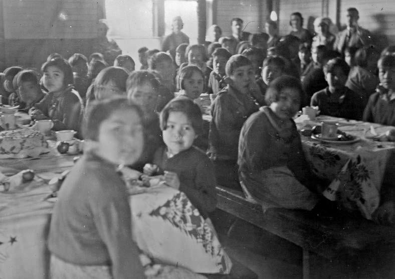
When funding was cut during the Depression of the 1930s, it was the students who paid the price—in more ways than one.
At the end of the 1930s, it was discovered that the cook at the Presbyterian school at Kenora was actually selling bread to the students, at the rate of ten cents a loaf.
When asked if the children got enough to eat at meals, she responded, “Yes, but they were always hungry.”
The Indian agent ordered an end to the practice.^323
The fact that hungry students would be reduced to buying bread to supplement their meals in 1939 highlights the government’s failure to provide schools with the resources needed to feed students adequately.
Milk was in constant shortage at many schools, in part due to the poor health and small size of the school dairy herds.^324
As late as 1937, disease among the cows at the Kamloops school had cut milk production by 50%.
To the principal’s frustration, Ottawa refused to fund the construction of an additional barn, which would have allowed for an increase in milk production and the isolation of sick animals.^325
Even when the dairy herds were producing satisfactorily, the students did not always get the full benefit.
Often, the milk was separated, with the skimmed milk served to the children.^326
The milk fat was turned to butter and cream, which was frequently sold to raise funds for the schools.
Inspector W. Murison noted in 1925 that the cows at the Elkhorn, Manitoba, school were producing enough milk for the school, but the students were not getting “the full benefit of this milk as I found that they were making about 30 lbs.
of butter a week, and a great deal of the milk given the children is separated milk, which has not much food value.”^327
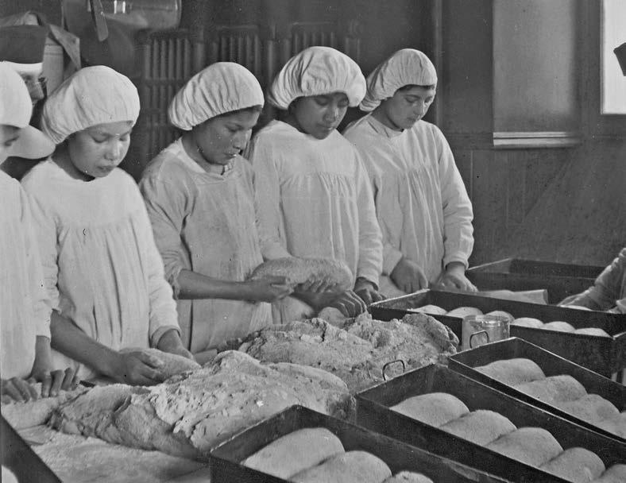
In 1942, the federal government issued Canada’s Official Food Rules, an early version of the Canada Food Guide.^328
Inspectors quickly discovered that residential school diets did not measure up to the Food Rules.
Dr. L. B. Pett, the head of the federal government’s Nutrition Division, concluded in 1947, on the basis of inspections his staff had done, that “no school was doing a good feeding job.”^329
It was not until the late 1950s that the federal government adopted a residential school food allowance calculated to provide a diet deemed “fully adequate nutritionally.”^330
Even with the increase in funding, schools still had difficulty providing students with adequate meals.
A 1966 dietician’s report on Yukon Hall in Whitehorse observed that although the Canada Food Guide requirements were being met, “because of the appetite of this age group, the staff are finding 66¢ per day per student is limiting.”^331
In 1969, an official at Coudert Hall in Whitehorse wrote, “The $0.^80
alloted [sic] per student for food is not sufficient.
In the north we find prices sky high.”
To cope with the problem, the residence sometimes had to buy “less meat and served maccaroni [sic] products.”^332
A November 1970 inspection of the Dauphin, Manitoba, school noted that the “menu appears to be short of the recommended two servings of fruit per day.”^333
In their home communities, many students had been raised on food that their parents had hunted, fished, or harvested.
These meals were very different from the European diets served at the schools.
This change in diet added to the students’ sense of disorientation.
Daisy Diamond found the food at residential school to be unfamiliar and unpalatable.
“When I was going to Shingwauk, the food didn’t taste very good, because we didn’t have our traditional food there, our moose meat, our bannock, and our berries.”^334
Dora Fraser, from the eastern Arctic, found it difficult to adjust to the food served in the hostels.
“We were eating canned food, beans, peas, red beans.
The food was terrible.”^335
Even when traditional foods were prepared, the school cooks made them in ways that were unfamiliar and unappetizing to the students.
Ellen Okimaw, who attended the Fort Albany, Ontario, school, had vivid memories of poorly cooked fish served at the schools.
The school cook had simply “dumped the whole thing, and boiled them like that, just like that without cleaning them.”^336
Bernard Catcheway recalled that in the 1960s at the Pine Creek, Manitoba, school, “we had to eat all our food even though we didn’t like it.
There was a lot of times there I seen other students that threw up and they were forced to eat their own, their own vomit.”^337
Bernard Sutherland recalled students at the Fort Albany school being forced to eat food that they had vomited.
“I saw in person how the children eat their vomit.
When they happened to be sick.
And they threw up while eating.”^338
These abuses led in 1999 to the conviction of Anna Wesley, a former staff member of the Fort Albany school, on three charges of administering a noxious substance.^339
Some schools did make allowances for traditional foods.
Simon Awashish recalled being allowed to trap for food while attending the Amos, Québec, school.
When we brought in hares, we were asked if …
there was some members of our nation that came to work in the kitchen, and we asked them to cook the hare for us in the traditional Atikameg way, in order to keep some sort of contact with our traditional food that we had before, before we were separated from our community.^340
Students who spoke of hunger also spoke of their efforts to improve their diet secretly.
Woodie Elias recalled being hungry all the time at the Anglican school in Aklavik.
“Once in a while we go raid the cellar and you can’t call that stealing; that was our food.”^341
When Dorothy Nolie helped out in the Alert Bay school kitchen, she and her co-workers would eat bread as they sliced it.
“Kids would come to me and ask me for bread, and I’d sneak it to them.”^342
At the Moose Factory school in Ontario, Nellie Trapper said, students “used to steal food, peanut butter, whatever’s cooking in a pot.
There were big pots in there.
I remember taking figs from that pot.”^343
Complaints about the limited, poorly prepared, monotonous diet were intensified by the fact that at many schools, the students knew the staff members were being served much better fare than they had.
At the school she attended in Saskatchewan, Inez Dieter said, “the staff used to eat like kings, kings and queens.”
Like many students, she said, she used the opportunity of working in the staff dining room to help herself to leftovers.
“I’d steal that and I’d eat, and I’d feel real good.”^344
Gladys Prince recalled how, at the Sandy Bay school in Manitoba, the “priests ate the apples, we ate the peelings.
That is what they fed us.
We never ate bread.
They were stingy them, their own, their own baking.”^345
When Frances Tait was given a position in the staff dining room, she said, she thought she had “died and gone to heaven ’cause even eating their leftovers were better than what we got.”^346
Hazel Bitternose, who attended schools in Lestock and Qu’Appelle, said she enjoyed working in the priests’ dining room.
“They had some good food there and I used to sneak some food and able to feed myself good there.
So that’s why I liked to work there.”^347
The federal government knowingly chose not to provide schools with enough money to ensure that kitchens and dining rooms were properly equipped, that cooks were properly trained, and, most significantly, that food was purchased in sufficient quantity and quality for growing children.
It was a decision that left thousands of Aboriginal children vulnerable to disease.
The number of students who died at Canada’s residential schools is not likely ever to be known in full.
The most serious gap in information arises from the incompleteness of the documentary record.
Many records have simply been destroyed.
According to a 1935 federal government policy, school returns could be destroyed after five years, and reports of accidents after ten years.
This led to the destruction of fifteen tonnes of waste paper.
Between 1936 and 1944, 200,000 Indian Affairs files were destroyed.^348
Health records were regularly destroyed.
For example, in 1957, Indian and Northern Health Services was instructed to destroy “correspondence re routine arrangements re medical and dental treatments of Indians and Eskimos, such as transportation, escort services, admission to hospital, advice on treatment, requests for treatment, etc.”
after a period of two years.
Reports by doctors, dentists, and nurses were similarly assigned a two-year retention period.^349
Often, the existing record lacks needed detail.
For example, it was not uncommon for principals, in their annual reports, to state that a specific number of students had died in the previous year, but not to name them.^350
It was not until 1935 that Indian Affairs adopted a formal policy on how deaths at the schools were to be reported and investigated.^351
There can be no certainty that all deaths were, in fact, reported to Indian Affairs—the Truth and Reconciliation Commission of Canada has located reports of student deaths in church records that are not reported in government documents.^352
In some cases, school officials appear not to have recognized a responsibility to report student deaths to provincial vital statistics officials, meaning that these records may also be deficient.^353
As part of its work, the Truth and Reconciliation Commission of Canada has established a National Residential School Student Death Register.
The creation of this register marks the first effort in Canadian history to properly record the number of students who died in residential schools.
The register is made of up three sub-registers:
-
the Register of Confirmed Deaths of Named Residential School Students (the “Named Register”);
-
the Register of Confirmed Deaths of Unnamed Residential School Students (the “Unnamed Register”); and
-
the Register of Deaths that Require Further Investigation (to determine if they should be placed on either the Named or Unnamed register).
A January 2015 statistical analysis of the Named Register for the period from 1867 to 2000 identified 2,040 deaths.
The same analysis of a combination of the Named and Unnamed registers identified 3,201 reported deaths.
The greatest number of these deaths (1,328 on the Named Register and 2,434 on the Named and Unnamed registers) took place prior to 1940.
Graph 3 shows the overall death rate per 1,000 students for the residential schools during this period (figures are based on information in the combined Named and Unnamed registers).
This graph suggests that the peak of the health crisis in the schools occurred in the late nineteenth and early twentieth centuries.
It also shows that the death rate remained high until the 1950s.
The death rates for Aboriginal children in the residential schools were far higher than those experienced by members of the general Canadian population.
Graph 4 compares the death rate per 1,000 of the general population of Canadian children aged five to fourteen with the death rates per 1,000 of the Named Register and the Named and Unnamed registers combined.
(Given the limitations in Statistics Canada’s historical data, the death rates are provided as five-year averages.)
As can be seen, until the 1950s Aboriginal children in residential schools died at a far higher rate than school-aged children in the general population.
It is only in the 1950s that the residential school death rates declined to a level comparable to that of the general school-aged population.
As late as the 1941–45 period, the Named and Unnamed Combined residential school death rate was 4.^90
times higher than the general death rate.
In the 1960s, even though the residential school death ### Graph 3
[sorry, graph not yet available in the TRC plain-text export project]
Source: Rosenthal, “Statistical Analysis of Deaths,” 11.
rates were much lower than their historic highs, they were still double those of the general school-aged population.
In nearly 50% of the cases (both in the Named and Unnamed registers), there is no recorded cause of death.
From those cases where the cause of death was reported, it is clear that until the 1950s, the schools were the sites of an ongoing tuberculosis crisis.
Tuberculosis accounted for just less than 50% of the recorded deaths (46.2% for the Named Register, and 47% for the Named and Unnamed registers combined).
The tuberculosis death rate remained high until the 1950s: its decline coincides with the introduction of effective drug treatment.
The next most frequently recorded causes of death were influenza (9.2% on the Named Register, and 9.1% of the deaths on the combined Named and Unnamed registers), pneumonia (6.9% on the Named Register, and 9.1% of the deaths on the combined Named and Unnamed registers), and general lung disease (3.4% on the Named Register, and 5.5% of the deaths on the combined Named and Unnamed registers).
Graph 5 shows the residential school tuberculosis death rate (figures are based on information in the combined Named and Unnamed registers).
The tuberculosis health crisis in the schools was part of a broader Aboriginal health crisis that was set in motion by colonial policies that separated Aboriginal people from their land, thereby disrupting their economies and their food supplies.
This crisis was particularly intense on the Canadian Prairies.
Numerous federal government policies contributed to the undermining of Aboriginal health.
During a period of starvation, rations were withheld from bands in an effort to force them to abandon the lands that they had ### Graph 4
[sorry, this chart not yet available in the plain-text TRC export project]
Source: Fraser, Vital Statistics and Health, Table B35-50, http://www.statcan.gc.ca/pub/11-516-x/sectionb/4147437-eng.htm; Rosenthal, “Statistical Analysis of Deaths,” 13.
initially selected for their reserves.
In making the Treaties, the government had promised to provide assistance to First Nations to allow them to make a transition from hunting to farming.
This aid was slow in coming and inadequate on arrival.
Restrictions in the Indian Act made it difficult for First Nations farmers to sell their produce or borrow money to invest in technology.
Reserve land was often agriculturally unproductive.
Reserve housing was poor and crowded, sanitation was inadequate, and access to clean water was limited.
Under these conditions, tuberculosis flourished.
Those people it did not kill were often severely weakened and likely to succumb to measles, smallpox, and other infectious diseases.^354
For Aboriginal children, the relocation to residential schools was generally no healthier than their homes had been on the reserves.
In 1897, Indian Affairs official Martin Benson reported that the industrial schools in Manitoba and the Northwest Territories had been “hurriedly constructed of poor materials, badly laid out, without due provision for lighting, heating or ventilation.”
In addition, drainage was poor, and water and fuel supplies were inadequate.^355
Conditions were not any better in the church-built boarding schools.
In 1904, Indian Commissioner David Laird echoed Benson’s comments when he wrote ### Graph 5
[Sorry, chart not yet available in the plain-text TRC project]
Source: Rosenthal, “Statistical Analysis of Deaths,” 97–99.
that the sites for the boarding schools on the Prairies seemed “to have been selected without proper regard for either water-supply or drainage.
I need not mention any school in particular, but I have urged improvement in several cases in regard to fire-protection.”^356
Students’ health depended on clean water, good sanitation, and adequate ventilation.
But little was done to improve the poor living conditions that were identified at the beginning of the twentieth century.
In 1940, R. A. Hoey, who had served as the Indian Affairs superintendent of Welfare and Training since 1936, wrote a lengthy assessment of the condition of the existing residential schools.
He concluded that many schools were “in a somewhat dilapidated condition” and had “become acute fire hazards.”
He laid responsibility for the “condition of our schools, generally,” upon their “faulty construction.”
This construction, he said, had failed to meet “the minimum standards in the construction of public buildings, particularly institutions for the education of children.”^357
By 1940, the government had concluded that future policy should concentrate on the expansion of day schools for First Nations children.
As a result, many of the existing residential school buildings were allowed to continue to deteriorate.
A 1967 brief from the National Association of Principals and Administrators of Indian Residences—which included principals of both Catholic and Protestant schools—concluded, “In the years that the Churches have been involved in the administration of the schools, there has been a steady deterioration in essential services.
Year after year, complaints, demands and requests for improvements have, in the main, fallen upon deaf ears.”^358

When E. A. Côté, the deputy minister responsible for Indian Affairs, met with church and school representatives to discuss the brief, he told them that only emergency repairs would be undertaken at schools that Indian Affairs intended to close.^359
The badly built and poorly maintained schools constituted serious fire hazards.
Defective firefighting equipment exacerbated the risk, and schools were fitted with inadequate and dangerous fire escapes.
Lack of access to safe fire escapes led to high death tolls in fires at the Beauval and Cross Lake schools.^360
The Truth and Reconciliation Commission of Canada has determined that at least fifty-three schools were destroyed by fire.
There were at least 170 additional recorded fires.
At least forty students died in residential school fires.^361
The harsh discipline and jail-like nature of life in the schools meant that many students sought to run away.
To prevent this, many schools deliberately ignored government instructions in relation to fire drills and fire escapes.
These were not problems only of the late nineteenth or early twentieth centuries.
Well into the twentieth century, recommendations for improvements went unheeded, and dangerous and forbidden practices were widespread and entrenched.
In the interests of cost containment, the Canadian government placed the lives of students and staff at risk for 130 years.
The buildings were not only fire traps.
They were also incubators of disease.
Rather than helping combat the tuberculosis crisis in the broader Aboriginal community, the poor condition of the schools served to intensify it.
The 1906 annual report of Dr.
Peter Bryce, the chief medical officer for Indian Affairs, observed that “the Indian population of Canada has a mortality rate of more than double that of the whole population, and in some provinces more than three times.”
Tuberculosis was the prevalent cause of death. He described a cycle of disease in which infants and children were infected at home and sent to residential schools, where they infected other children.
The children infected in the schools were “sent home when too ill to remain at school, or because of being a danger to the other scholars, and have conveyed the disease to houses previously free.”^362
The following year, Bryce published a damning report on the conditions at prairie boarding schools.
In an age when fresh air was seen as being central to the successful treatment of tuberculosis, he concluded that, with only a few exceptions, the ventilation at the schools was “extremely inadequate.”^363
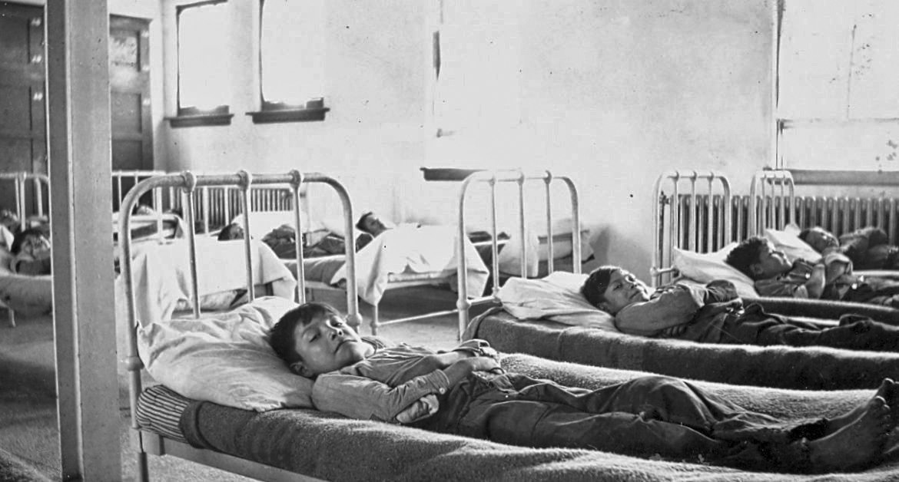
He found the school staff and even physicians
inclined to question or minimize the dangers of infection from scrofulous or consumptive pupils [scrofula and consumption were alternate names for types of tuberculosis] and nothing less than peremptory instructions as to how to deal with cases of disease existing in the schools will eliminate this ever-present danger of infection.^364
He gave the principals a questionnaire to complete regarding the health condition of their former students.
The responses from fifteen schools revealed that “of a total of 1,537 pupils reported upon nearly 25 per cent are dead, of one school with an absolutely accurate statement, 69 per cent of ex-pupils are dead, and that everywhere the almost invariable cause of death given is tuberculosis.”
He drew particular attention to the fate of the thirty-one students who had been discharged from the File Hills school: nine were in good health, and twenty-two were dead.^365
The extent of the health crisis was so severe that some people within the federal government and the Protestant churches became convinced that the only solution was to close the schools and replace them with day schools.
However, the Indian Affairs minister of the day, Frank Oliver, refused to enact the plan without the support of the churches involved.
The plan foundered for lack of Roman Catholic support.
During the same period, Bryce recommended that the federal government take over all the
schools and turn them into sanatoria under his control.
This plan was rejected because it was viewed as being too costly, and it was thought that it would have met with church opposition.^366
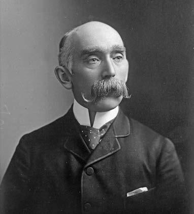
Instead of closing schools or turning them into sanatoria, the government’s major response to the health crisis was the negotiation in 1910 of a contract between Indian Affairs and the churches.
This contract increased the grants to the schools and imposed a set of standards for diet and ventilation.
The contract also required that students not be admitted “until, where practicable, a physician has reported that the child is in good health.”^367
As noted earlier, although the contract led to improvements in the short term, inflation quickly eroded the benefit of the increase in grants. The situation was worsened by the cuts to the grants that were repeatedly imposed during the Great Depression of the 1930s. The underfunding created by the cuts guaranteed that students would be poorly fed, clothed, and housed.
As a result, children were highly susceptible to tuberculosis.
And, because the government was slow to put in place policies that would have prohibited the admission of children with tuberculosis, and ineffective in enforcing such policies once they were developed, healthy children became infected. As late as the 1950s, at some schools, pre-admission medical examinations appear to have been perfunctory, ineffective, or non-existent.^368
In the long run, the 1910 contract proved to be no solution for the tuberculosis crisis.
The schools often lacked adequate facilities for the treatment of sick children.
In 1893, Indian Affairs inspector T. P. Wadsworth reported that at the Qu’Appelle school, the “want of an infirmary is still very much felt.”^369
Those infirmaries that existed were often primitive.
On an 1891 visit to the Battleford school, Indian Commissioner Hayter Reed concluded that the hospital ward was in such poor shape that they had been obliged to move the children in it to the staff sitting room.
According to Reed, “The noise, as well as the bad smells, come from the lavatory underneath.”^370
Proposals to construct a small hospital at the Red Deer school in 1901 were not implemented.^371
There were also reports of inadequate isolation facilities at the Regina school (1901), the Anglican school in Onion Lake, Saskatchewan (1921), the Mission, British Columbia, school (1924), and the Muncey, Ontario, school (1935).^372
When diphtheria broke out at Duck Lake, Saskatchewan, in 1909, the nine students who fell ill were placed in a “large isolated house.”^373
Even though the 1910 contract required all schools to have hospital accommodation to prevent the spread of infectious disease, many schools continued to be without a proper infirmary.
The 1918 global influenza epidemic left four children dead at the Red Deer, Alberta, school.
When the influenza epidemic subsided, Principal J. F. Woodsworth complained to Indian Affairs, “For sickness, conditions at this school are nothing less than criminal.
We have no isolation ward and no hospital equipment of any kind.”^374
The Roman Catholic principals petitioned the federal government for the establishment of sick rooms, under the supervision of a competent nurse, at each school in 1924.
At the same time, they objected to the sanitary inspection of the schools by government-appointed nurses, since they recommended changes “leading to the transformation of our schools into hospitals or sanatoriums.”^375
There were also regular reports that schools could not afford to hire needed nursing staff.^376
Indian Affairs officials continued to be critical of the quality of care provided by school infirmaries at the end of the 1950s.^377
Complaints from principals make it clear that into the late 1960s, there were still severe limitations on the range of health services being provided to residential school students.^378
General Aboriginal health care was never a priority for the Canadian government.
Tuberculosis among Aboriginal people largely was ignored unless it threatened the general Canadian population.^379
In 1937, Dr. H. W. McGill, the director of Indian Affairs, sent out an instruction that Indian health-care services “must be restricted to those required for the safety of limb, life or essential function.”
Hospital care was to be limited, spending on drugs was cut in half, and sanatoria and hospital treatment for chronic tuberculosis were eliminated.^380
The high death rates led many parents to refuse to send their children to residential school.
In 1897, Kah-pah-pah-mah-am-wa-ko-we-ko-chin (also known as Tom) was deposed from his position as a headman of the White Bear Reserve in what is now Saskatchewan for his vocal opposition to residential schools.
In making his case for a school on the reserve, he pointed to the death rate at the Qu’Appelle industrial school, adding, “Our children are not strong.
Many of them are sick most of the time, many of the children sent from this Reserve to the Schools have died.^381
Death casts a long shadow over many residential school memories.
Louise Moine attended the Qu’Appelle school in the early twentieth century.
She recalled one year when tuberculosis was “on the rampage in that school.
There was a death every month on the girls’ side and some of the boys went also.”^382
Of his years at the Roman Catholic school in Onion Lake, Joseph Dion recalled, “My schoolmates and I were not long in concluding that the lung sickness was fatal, hence as soon as we saw or heard of someone spitting blood, we immediately branded him for the grave.
He had consumption: he had to die.”^383
Simon Baker’s brother Jim died from spinal meningitis at the Lytton, British Columbia, school.
“I used to hear him crying at night.
I asked the principal to take him to the hospital.
He didn’t.
After about two weeks, my brother was in so much pain, he was going out of his mind.
I pleaded with the principal for days to take him to a doctor.”^384
Ray Silver said that he always blamed the Alberni school for the death of his brother Dalton.
“He was a little guy, laying in the bed in the infirmary, dying, and I didn’t know ’til he died.
You know that’s, that was the end of my education.”^385
The death of a child often prompted parents to withdraw the rest of their children from a school.
One former student said her father came to the school when her sister became ill at the Anglican school at Aklavik, Northwest Territories.
“He came upstairs and there we were.
He cried over us.
He took me home.
He put her in a hospital, and she died.”^386
The high deaths rates in the schools were, in part, a reflection of the high death rates among the Aboriginal community in general.
Indian Affairs officials often tried to portray these rates as simply the price that Aboriginal people had to pay as part of the process of becoming civilized.
In reality, these rates were the price they paid for being colonized.^387
Aboriginal livelihoods were based on access to the land; colonization disrupted that access and introduced new illnesses to North America.
Colonial policies helped wiped out food sources and confined Aboriginal people to poorly located reserves, with inadequate sanitation and shelter.
The schools could have served as institutions to help counter these problems.
To do that, however, they would have had to have been properly constructed, maintained, staffed, and supplied.
Government officials were aware of this.
They were also aware that death rates among students at residential schools were disproportionately high.
It would be wrong to say the government did nothing about this crisis: the 1910 contract did provide a substantial funding increase to the schools.
But the federal government never made the type of sustained investment in Aboriginal health, in either the communities or the schools, that could have addressed this crisis—which continues to the present.
The non-Aboriginal tuberculosis death rate declined before the introduction of life-saving drugs.
It was brought down by improvements in diet, housing, sanitation, and medical attention.
Had such measures been taken by the federal government earlier, they would have reduced both the Aboriginal death rates and the residential school students’ death rates.
By failing to take adequate measures that had been recommended to it, the federal government blighted the health of generations of Aboriginal people.
Many of the early schools were part of larger church mission centres that might include a church, a dwelling for the missionaries, a farm, a sawmill, and a cemetery.
The mission cemetery might serve as a place of burial for students who died at school, members of the local community, and the missionaries themselves.
For example, the cemetery at the Roman Catholic St. Mary’s mission, near Mission, British Columbia, was intended originally for priests and nuns from the mission as well as for students from the residential school.^388

During the influenza pandemic of 1918–19, many of the schools and missions were overwhelmed.
At the Fort St. James school and mission in British Columbia, the dead were buried in a common grave.^389
At the Red Deer school, four students who died there were buried two to a grave to save costs.^390
In some cases, student and staff graves were treated differently.
At the Spanish, Ontario, school, the graves of staff members were marked with headstones that, in the case of former priests and nuns, provided name and date of birth and death.
The burial spots of students were identified only by plain white crosses.^391
The general Indian Affairs policy was to hold the schools responsible for burial expenses when a student died at school.
The school generally determined the location and nature of that burial.^392
Parental requests to have children’s bodies returned home for burial were generally refused as being too costly.^393
In her memoirs, Eleanor Brass recalled how the body of one boy, who hung himself at the File Hills school in the early twentieth century, was buried on the Peepeekisis Reserve, even though his parents lived on the Carlyle Reserve.^394
As late as 1958, Indian Affairs refused to return the body of a boy who had died at a hospital in Edmonton to his northern home community in the Yukon.^395
The reluctance to pay the cost of sending the bodies of children from residential schools home for burial ceremonies continued into the 1960s.
Initially, for example, Indian Affairs was initially unwilling to pay to send the body of twelve-year-old Charlie Wenjack back to his parents’ home community in Ogoki, Ontario, in 1966.^396
When Charles Hunter drowned in 1974 while attending the Fort Albany school, it was decided, without consultation with his parents, to bury him in Moosonee rather than send him home to Peawanuck near Hudson Bay.
It was not until 2011, after significant public efforts made on his behalf by his sister Joyce, who had never got to meet her older brother, that Charles Hunter’s body was exhumed and returned to Peawanuck for a community burial.
The costs were covered by funds that the Toronto Star raised from its readership.^397
A school closing might mean the cemetery would be left unattended.
When the Battleford school closed in 1914, Principal E.
Matheson reminded Indian Affairs that there was a school cemetery that contained the bodies of seventy to eighty individuals, most of whom were former students.
He worried that unless the government took steps to care for the cemetery, it would be overrun by stray cattle.^398
In short, throughout the system’s history, children who died at school were buried in school or mission cemeteries, often in poorly marked graves.
The closing of the schools has led, in many cases, to the abandonment of these cemeteries.
When Indian agent D. L. Clink returned a runaway student to the Red Deer industrial school in 1895, he noted that the boy’s head was bruised from where a teacher had hit him with a stick.
The school principal, John Nelson, told Clink that he “had been severe with him before but he would be more severe now.”
Worried that if he “left the boy he would be abused,” Clink took the boy away from the school.
He also recommended to Indian Affairs that the teacher who had struck the student be dismissed and brought up on charges, since “his actions in this and other cases would not be tolerated in a white school for a single day in any part of Canada.”^399
Clink’s report led Indian Affairs Deputy Minister Hayter Reed to direct his staff:
Instructions should be given, if not already sent, to the Principals of the various schools, that children are not to be whipped by anyone save the Principal, and even when such a course is necessary, great discretion should be used and they should not be struck on the head, or punished so severely that bodily harm might ensue.
The practice of corporal punishment is considered unnecessary as a general measure of discipline and should only be resorted to for very grave offences and as a deterrent example.^400
Reed’s instruction underlines a number of the recurrent problems with the Indian Affairs approach to discipline in residential schools.
First, Reed, who had previously been the Indian commissioner in western Canada, did not know whether there were regulations dealing with school discipline.
Second, his directive is vague: while it indicates where students should not be struck, it does not specify where they could be struck, or place limits on what students could be struck with; and neither are there limits on the number of blows.
Third, it is not clear that these instructions were ever issued to the principals.
If they were, they were soon lost and forgotten.
In later years, when conflicts arose over discipline at the schools, Indian Affairs officials made no reference to the policy.
In 1920, Canon S. Gould, the general secretary of the Missionary Society of the Church of England in Canada, asked Deputy Minister Campbell Scott, “Is corporal punishment for disciplinary purposes recognized, or permitted in the Indian Boarding schools?”
He noted that whether or not it was permitted, he imagined that it was applied in every residential school in the country.^401
The first—and only—evidence of a nation-wide discipline policy for residential schools that the Truth and Reconciliation Commission of Canada has been able to locate in the documents reviewed to date was issued in 1953.^402

The failure to establish and enforce a national policy on discipline meant that students were subject to disciplinary measures that would not, as Clink noted in 1895, be tolerated in schools for non-Aboriginal children.
Four years after Reed asked his staff to issue instructions on corporal punishment, Indian Commissioner David Laird reported that several children had been “too severely punished” at the Middlechurch school.
“Strappings on the bare back,” he wrote, was “too suggestive of the old system of flogging criminals.”^403
Corporal punishment was often coupled with public humiliation.
In December 1896 in British Columbia, the Kuper Island school’s acting principal gave two boys “several lashes in the Presence of the Pupils” for sneaking into the girls’ dormitory at night.^404
When, in 1934, the principal of the Shubenacadie school could not determine who had stolen money and chocolates from a staff member, he had the suspects thrashed with a seven-thonged strap and then placed on bread-and-water diets.^405
Some schools had a specific room set aside to serve as a “punishment room.”^406
After a 1907 inspection of the Mohawk Institute in Brantford, the Ontario inspector for Indian agencies, J. G. Ramsden, reported, “I cannot say that I was favourably impressed with the sight of two prison cells in the boys [sic] play house.
I was informed, however, that these were for pupils who ran away from the institution, confinement being for a week at a time when pupils returned.”^407
In 1914, a father successfully sued the Mohawk Institute principal for locking his daughter in a cell for three days on what was described as a “water diet.”^408
Boys at the Anglican school in Brocket, Alberta, were chained together as punishment for running away in 1920.^409
At the Gleichen, Alberta, school, a principal was accused of shackling a boy to his bed and beating him with a quirt (a riding whip) until his back bled.
The principal admitted to having beaten the boy with the whip, but denied breaking the boy’s skin.^410
Abusive punishment often prompted children to run away.
The father of Duncan Sticks, a boy who died from exposure after running away from the Williams Lake school in British Columbia, told a coroner’s inquest in 1902 that, in the past, his son had run away because he had been “beaten with a quirt.”^411
A boy who ran away from the Anglican school in The Pas, after being severely beaten by the principal, nearly died of exposure.^412
The violent nature of the discipline at the schools came as a shock to students.
Isabelle Whitford said that prior to coming to the Sandy Bay school, she had never been physically disciplined.
“All my dad have to do was raise his voice, and we knew what he meant.
So, when I first got hit by the nuns, it was really devastating ’cause how can they hit me when my parents didn’t hit me, you know?”^413
Rachel Chakasim said that at the Fort Albany school, “I saw violence for the first time.
I would see kids getting hit.
Sometimes in the classrooms, a yardstick was being used to hit.”^414
Fred Brass said that his years at the Roman Catholic school at Kamsack, Saskatchewan, were “the hellish years of my life.
You know to be degraded by our so-called educators, to be beat by these people that were supposed to have been there to look after us, to teach us right from wrong.
It makes me wonder now today a lot of times I ask that question, who was right and who was wrong?”^415
According to Geraldine Bob, the staff members at the Kamloops school she attended were not able to control their tempers once they began to punish a student.
“They would just start beating you and lose control and hurl you against the wall, throw you on the floor, kick you, punch you.”^416
It was a common practice to shave the heads of students who ran away.
William Antoine recalled that at the Spanish, Ontario, school, this was done in front of the other students.
“They got all the boys to look at what is happening to this boy, what they were doing to him because he ran away.
They cut all his hair off and they pulled, pulled his pants down and he was kneeling on the floor, and holding onto the chair.”^417
Eva Simpson said that at the Catholic school in The Pas, her cousin’s head was shaved for running away.^418
Many students spoke of teachers punishing them by pulling their ears.
At Sioux Lookout, Dorothy Ross said, “one time me and this other girl were, we were, were fooling around, we were teasing each other in our own language, we got, I got caught.
She pulled my ear so hard.”^419
Archie Hyacinthe could recall that in the classrooms of the Roman Catholic school in Kenora, “every time we didn’t listen, they would tug us behind the ear, or behind the neck, or on the elbows.”^420
Jonas Grandjambe recalled how the nun in charge of the boys’ dormitory at the Roman Catholic school in Aklavik, in the Northwest Territories, would “grab our ear and twist it.”^421
Delores Adolph said that the discipline she received at the Mission school impaired her hearing.^422
Joseph Wabano said that at the Fort Albany, Ontario, school, the staff would hit students with a one-inch-thick board.^423
Noel Starblanket recalled being constantly “slapped on the side of the head” at the Qu’Appelle school.
One teacher struck him in the face and broke his nose.^424
Mervin Mirasty said that at the Beauval, Saskatchewan, school, boys who were caught throwing snowballs were punished with blows to their hands from the blade of a hockey stick.^425
As a punishment, Nellie Trapper, who attended the Moose Factory, Ontario, school in the 1950s, was assigned to “scrubbing the stair, the stairwell with a toothbrush, me and this other girl.
Like, I don’t remember what I did wrong, but that was something that I won’t forget.
I remember sitting on the steps, and she, our supervisor was standing there, watching us.”^426
Former students also spoke of how, in winter, they might be forced to stand or sit, inadequately clothed, in the snow as a form of punishment.
It was not uncommon for residential school students, traumatized by being placed in such a harsh and alien environment, to wet their beds.
These students were subjected to humiliating punishments.
Wendy Lafond said that at the Prince Albert, Saskatchewan, school, “if we wet our beds, we were made to stand in the corner in our pissy clothes, not allowed to change.”^427
Don Willie recalled that students who wet their beds were publicly humiliated at the Alert Bay school.
“And they used to, they used to line up the wet bed, bedwetters, and line them up in the morning, and parade them through, parade them through breakfast, the breakfast area, pretty much to shame them.”^428
Policies that were seen as being unacceptable in the early twentieth century were still in place in the 1960s.
Many students compared residential schools to jails: some spoke of being locked up in dormitories, broom closets, basements, and even crawl spaces.
In 1965, students who ran away from the Presbyterian school in Kenora were locked up with just a mattress on the floor and put on a bread-and-milk diet.^429
Students were still being locked up in what was referred to as the “counselling” room at the Poplar Hill, Ontario, school in the 1980s.^430
Despite the fact that Indian Affairs had given orders to abandon the practice, students were still having their hair cropped into the 1970s.^431
In the 1990s, students at the Gordon’s, Saskatchewan, school were still being struck, and pushed into lockers and walls by one staff member.^432
The failure to develop, implement, and monitor effective discipline sent an unspoken message that there were no real limits on what could be done to Aboriginal children within the walls of a residential school.
The door had been opened early to an appalling level of physical and sexual abuse of students, and it remained open throughout the existence of the system.
From the nineteenth century onwards, the government and churches were well aware of the risk that staff might sexually abuse residential school students.
As early as 1886, Jean L’Heureux, who worked as a translator for Indian Affairs and a recruiter for Roman Catholic schools in Alberta, was accused of sexually abusing boys in his care.
The officials responsible for the schools recognized that his actions were not appropriate.
Despite this, there is no record of a criminal investigation being carried out at the time.^433
When new allegations against L’Heureux emerged in 1891, he was allowed to resign.
In dealing with the matter, Indian Affairs Deputy Minister Lawrence Vankoughnet hoped “it would not be necessary to state the cause which led to the same [the resignation].”^434
When it came to taking action on the abuse of Aboriginal children, early on, Indian Affairs and the churches placed their own interests ahead of the children in their care and then covered up that victimization.
It was cowardly behaviour.
This set the tone for the way the churches and government would treat the sexual abuse of children for the entire history of the residential school system.
Complaints often were ignored.
In some cases where allegations were made against a school principal, the only measure that Indian Affairs took was to contact the principal.^435
In at least one case, Indian Affairs officials worked with school officials to frustrate a police investigation into abuse at a school.
When attempting to return some runaway boys to the Kuper Island school in 1939, British Columbia Provincial Police officers concluded that there was good reason to believe the boys had run away because they were being sexually abused at the school.
The police launched an investigation and refused to return the boys to the school.^436
When Indian Affairs officials finally investigated, they concluded that the allegations had merit.
However, to protect the school’s reputation, the local Indian Affairs official advised the suspected abusers to leave the province, allowing them to avoid prosecution.^437
Nothing was done for the students who had been victimized or for their parents.
These patterns persisted into the late twentieth century.
Officials continued to dismiss Aboriginal reports of abuse.^438
In some cases, staff members were not fired, even after being convicted of assaulting a student.^439
Complaints were improperly investigated.
For example, charges of sexual impropriety made against the principal of the Gordon’s school were investigated by a school staff member in 1956.^440
Church officials failed to report cases of abuse to Indian Affairs, and Indian Affairs failed to report cases of abuse to families.^441
It was not until 1968 that Indian Affairs began to compile and circulate a list of former staff members who were not to be hired at other schools without the approval of officials in Ottawa.^442
The churches and the government remained reluctant to take matters to the police.
As a result, prosecutions were rare.

In the documents it has reviewed, the Truth and Reconciliation Commission of Canada has identified over forty-five successful convictions of former residential school staff members who sexually or physically abused students.^443
Most of these prosecutions were the result of the determination of former students to see justice done.
The full extent of the abuse that occurred in the schools is only now coming to light.
As of January 31, 2015, the Independent Assessment Process (IAP), established under the Indian Residential Schools Settlement Agreement (IRSSA) had received 37,951 claims for injuries resulting from physical and sexual abuse at residential schools.
The IAP is a mechanism to compensate former students for sexual and physical abuse experienced at the schools and the harms that arose from the assaults.
By the end of 2014, the IAP had resolved 30,939 of those claims, awarding $2,690,000 in compensation.^444
The Common Experience Payment (CEP) established under IRSSA provided compensation to individuals who attended a school on the IRSSA’s approved list of schools.
The CEP recognized the claims of 78,748 former residential school students.
Although claims for compensation under the IAP could be made by non-residential school students who were abused at the schools, the vast majority of IAP claims were made by former residential school students.
The number of claims for compensation for abuse is equivalent to approximately 48% of the number of former students who were eligible to make such claims.
This number does not include those former students who died prior to May 2005.
As the numbers demonstrate, the abuse of children was rampant.
From 1958, when it first opened, until 1979, there was never a year in which Grollier Hall in Inuvik did not employ at least one dormitory supervisor who would later be convicted for sexually abusing students at the school.
Joseph Jean Louis Comeau, Martin Houston, George Maczynski, and Paul Leroux all worked at Grollier Hall during this period.
All were convicted of abusing Grollier Hall students.^445
William Peniston Starr served as director of the Gordon’s, Saskatchewan, residence from 1968 until 1984.^446
Prior to that, he worked at a series of schools in Alberta and Québec.^447
In 1993, he was convicted of ten counts of sexually assaulting Gordon’s school students.^448
Arthur Plint worked as a boys’ supervisor at the Alberni residential school for two five-year periods between 1948 and 1968.
In 1995, he pleaded guilty to eighteen counts of indecent assault.
In sentencing him to eleven years in jail, Justice D. A. Hogarth described Plint as “a sexual terrorist.”^449
Physical abuse and sexual abuse often were intertwined.
Jean Pierre Bellemare, who attended the Amos, Québec, school, spoke for many students when he told the Commission that he had been subjected to “physical violence, verbal violence, touchings, everything that comes with it.”^450
Andrew Yellowback was “sexually, physically, emotionally, and mentally abused” at the Cross Lake, Manitoba, school for eight years.^451
There was no single pattern of abuse: students of both sexes reported assaults from staff members of both the opposite sex and the same sex as themselves.^452
First-year students, traumatized by separation from their parents and the harsh and alien regime of the school, were particularly vulnerable to abusive staff members who sought to win their trust through what initially appeared to be simple kindness.
In some cases, this might involve little more than extra treats from the school canteen.
This favouritism, however, was often the prelude to a sexual assault that left the student scared and confused.^453
Many students spoke of having been raped at school.^454
These were moments of terror.
Josephine Sutherland was cornered by one of the lay brothers in the Fort Albany school garage: “I couldn’t call for help, I couldn’t.
And he did awful things to me.”^455
Other students recalled being assaulted in the church confessional.^456
A student in the change room would suddenly have a bag pulled over his head.^457
The abuse could begin with an instruction to report to the shower room in the middle of the night or to take lunch to a staff member’s room.^458
An abusive staff person might stalk a student, blocking her or his way, or grope a passing student.^459
Female students spoke of how some staff members took advantage of their innocence, rubbing against them sexually while they were sitting on their laps.^460
Abuse also took the form of voyeuristic humiliation: some staff insisted on watching the students shower.^461
Some dormitory supervisors used their authority to institute dormitory-wide systems of abuse.
Many students spoke of the fear and anxiety that spread across their dormitories in the evenings.^462
They went to bed fearful that they might be called into the supervisor’s room.^463
To protect themselves, some students attempted to never be alone.^464
Older children sometimes sought to protect younger ones.^465
Most students came to school with little knowledge or understanding of sexual activity, let alone the types of sexual abuse to which they might be subjected.
Abuse left them injured, bewildered, and often friendless or subject to ridicule by other students.^466
Many students thought they were the only children being abused.
This confusion made it difficult for them to describe or report their abuse.^467
Some were told they would face eternal damnation for speaking of what had been done to them.^468
Many students fought back against their far larger and more powerful assailants, especially as they got older and stronger.^469
Some succeeded in forcing their tormentors to leave them alone.^470
Many others, such as Lawrence Waquan, concluded that there was “nothing you can do.”^471
Some students ran away from school in an attempt to escape abuse.^472
Others begged their parents not to return them to school after a break.^473
Some students never reported abuse for fear they would not be believed.^474
Other students who did report abuse were told that they were to blame.^475
In some cases, school officials took immediate action when abuse was reported to them, but the rarity of such actions is itself noteworthy.^476
Former students spoke of how betrayed they felt when nothing was done about their complaints.^477
Many simply felt too ashamed to ever speak of the abuse.^478
Family members often refused to believe their children’s reports of abuse, intensifying their sense of isolation and pain.^479
This was especially so within families that had adopted Christianity, and could not believe that the people of God looking after their children would ever do such things.^480
The impact of abuse was immediate and long-lasting.
It destroyed the students’ ability to function in the school, and led many to turn to self-destructive behaviours.^481
Staff abuse of children created conditions for the student abuse of other students.
Every school system has to deal with school bullies, student cliques, and inter-student conflict.
It is part of the socialization process.
Ideally, corrective lessons in how to treat others well are taught, as well as shown by example.
Residential school staff had a responsibility not only to model such behaviour, but also to protect students from being victimized.
In many cases, they failed to provide that protection.
Conflicts between students are not unique to residential schools, but they take on greater significance in a residential school setting where children cannot turn to adult family members for comfort, support, and redress.
The moral influences that a child’s home community can exert are also absent.
Instead, the children were left vulnerable and unprotected.
Residential schools failed to live up to their responsibility to protect students from being victimized by other students.
Older or bigger students used force—or the threat of force—to establish their dominance over younger students.
In some cases, this dominance was used to coerce younger or smaller students to participate in sexual acts.
In other cases, bullies forced vulnerable students to turn over their treats, their food, or their money, or to steal on their behalf.
In addition, bullies might simply seek a measure of sadistic satisfaction from beating those who were weaker.
Bullies operated individually or in groups.
Such groups were often formed initially as a defensive response to the level of violence within the school, but, over time, would take on their own offensive characteristics.
Sometimes, such groups not only focused their anger and/or frustration on other students, but also sought to disrupt the general operation of the school.
The fact that Catholic and Protestant church leaders continued to disparage one another’s religions throughout this period meant that conflicts between students could also take on religious overtones, particularly in communities with more than one residential school, such as Inuvik in the Northwest Territories.
Student victimization of students was an element of the broader abusive and coercive nature of the residential school system.
Underfed, poorly housed, and starved for affection, students often formed groups based on age, community of origin, or First Nation.
Such groups gave students a measure of identity and status, but also provided protection to their members and dominated more vulnerable students.
William Garson recalled that at the Elkhorn, Manitoba, school, “we were always like hiding in the corners; you know away from any abusement.
From other, older, from older, elder boys, students.”^482
Percy Thompson said that at the Hobbema school, “one bully used to come at me and he’d pretend he was going to talk to me and all of sudden hit me in the belly.
And of course I gag, gag, and he’d laugh his head off and, you know, to see me in such a predicament.”^483
Alice Ruperthouse spoke of “the cruelty of the other children” at the Amos, Québec, school.
“It was, you know, like in a jungle.
Like in a jungle, you don’t know what’s going to come out but you know you had to watch out.”^484
Albert Elias felt that the classroom at the Anglican school in Aklavik “was the safest place to be in ’cause that’s where nobody could beat me up.
I dreaded recesses and lunches and after school, I dreaded those times.”^485
Bullying might start shortly after arrival.
In some schools, all new male students were put through a hazing.
Denis Morrison said that each new arrival at the Fort Frances school underwent a beating.
“They used to initiate you, like, they would beat the hell out of you, the other kids would.
It wasn’t anybody else, it was the other kids, the older ones, eh.”^486
Bob Baxter recalled that there were student gangs at the Sioux Lookout school.
He was beaten up and knifed on one occasion.
He had a vivid memory of people tying him to his bed and throwing hot water over him.^487
Clara Quisess said that at the Fort Albany school in Ontario, older girls would threaten the younger ones with knives.^488
Louisa Birote recalled that the girls at the La Tuque, Québec, school all formed themselves into hostile groups.
“We hated each other.
So, this little gang didn’t like the other gang.
That’s the way at the school, that’s what we were taught, fears, and we were scared, and I went to hide in what we called the junk room, the junk closet.”^489
A lack of adequate supervision in the schools and residences meant that such domination could give rise to physical and sexual abuse.
The assaults ranged from being forced to kiss someone, to being forced to simulate a sex act, to being raped.
In some cases, victims were given small treats to encourage them to be silent; in other cases, they were told they would be killed if they reported the assault.^490
Agnes Moses recalled being molested by older girls at a hostel in northern Canada.
“I never quite understood it, and it really wrecked my life, it wrecked my life as a mother, a wife, a woman, and sexuality was a real, it was a dirty word for us.”^491
The experience of being abused at a British Columbia school by a group of boys left Don Willie distrustful of most people.
“The only, only friends I kept after that were my relatives.”^492
Complaints were infrequent, as students had good reason not to report their abuse.
Some feared that bullies would retaliate if they were reported.
Others were ashamed of what had been done to them, and some did not fully understand what had been done to them.
Many students feared they would not be believed—or would be blamed for somehow bringing the abuse upon themselves.
Still others were further punished when they did tell.
So, rather than report the abuse, many students chose to fight back; to seek admission into a receptive group, where violence could be fought with violence; or to endure the pain in silence.
This victimization left many students feeling intensely betrayed, fearful, isolated, and bereft of home teachings and protection.
The betrayal by fellow students has contributed significantly to the schools’ long-term legacy of continuing division and distrust within Aboriginal communities.
The residential school system’s shameful inability to protect students from such victimization, even from among themselves, represents one of its most significant and least-understood failures.
Many students stated that sports helped them make it through residential school.
Christina Kimball attended the Roman Catholic school near The Pas, where she experienced physical, sexual, and emotional abuse.
She believes that it was only through her involvement with sports that she survived.
“I was very sports-oriented.
I played baseball.
Well, we play baseball, and even hockey.
We had a hockey team.
That has benefited, benefited me in a way ’cause I loved playing sports.
Well, that’s one way, too.
I don’t know how I did it but I was pretty good in sports.”^493
Noel Starblanket said that at the Qu’Appelle school, “I had some good moments, in particular in the sports side, ’cause I really enjoyed sports.
I was quite athletic, and basically that’s what kept me alive, that’s what kept me going was the sports.”^494
At the Lestock school, Geraldine Shingoose took refuge in extracurricular activities.
One of the good things that I would do to try and get out of just the abuse was try to, I would join track-meet, try and be, and I was quite athletic in boarding school.
And I also joined the band, and I played a trombone.
And, and that was something that took me away from the school, and just to, it was a relief.^495
Paul Andrew spent seven years at Grollier Hall in Inuvik.
One of his strongest and most positive memories related to school sports.
“There were times when I felt dumb and stupid.
But put me in a gym, there was not too many people better than I am.”^496
Recreational activities were always underfunded and undersupplied at the schools.
A national survey of Indian Affairs schools (both day and residential) in 1956 concluded:
In most of the schools there appeared to be little or no physical education program.
A number of schools had no facilities for such activities.
Basement areas were obviously designed for playing areas, but they were very inadequate and were utilized for storage or for assembly purposes.
A large number of school sites were not properly cleared, graded, and prepared for playing purposes.
Many were still in the wild state; others were overgrown with shrubs, thistles, grasses and other weeds presenting a very unkempt and neglected appearance.^497

Oblate Provincial L. Poupore wrote to Indian Affairs about conditions at the Williams Lake, British Columbia, school in 1957.
He pointed out that a year and half earlier, he had informed Indian Affairs about the need for a school gymnasium.
At that time, he said, “The boys’ play room, a room about 35 by 60, was a scene of bedlam during recreation periods.
There were about 150 boys trying to play; the mud they had brought in on their feet had dried and there was so much dust in the room that you could not recognize a boy at the opposite end.”
Although the department had assured him the construction of a gymnasium would be a priority, nothing had been done, and “the problem of playroom space is worse than ever.”^498
Despite the lack of financial support, hockey teams from a number of schools achieved considerable success in the 1940s and 1950s.
Teams from Duck Lake and Qu’Appelle in Saskatchewan, in particular, established enviable records.
The Duck Lake school team, the St. Michael’s Indians, won the championship of an eight-team league in the Rosthern area in 1946.^499
In 1948, the same team, coached by Father G.-M. Latour, won the northern Saskatchewan midget hockey championship.
The following year, it won the provincial championship.^500
According to the Prince Albert Daily Herald, “While the Duck Lake boys were outweighed in their midget series they made it up in hockey know-how, skating ability and shooting accuracy.
Their drives, from any angle, had the Regina players scared and baffled at the same time.”^501
Among the players on the 1949 Duck Lake provincial championship team was Fred Sasakamoose, who went on to become the first status Indian to play in the National Hockey League.^502
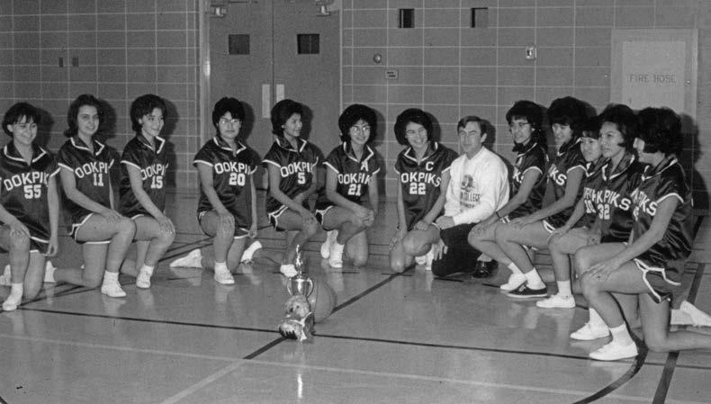
While hockey dominated boys’ sports in most residential schools, British Columbia residential schools gained renown for their boxers.
In 1947, the Roman Catholic school at Sechelt in North Vancouver advertised for a volunteer to run a school athletics program.
Navy veteran Alex Strain took on the job.
At the time, the school had no recreation program and no facilities.
Under Strain’s direction, the students cleared out a storage building and turned it into a gymnasium.
Putting in four days of volunteer work a week, Strain created what Vancouver Sun reporter Gerry Pratt described as “the smoothest tumbling team in the province.”
He then established a boxing program at the school.
The limits of the first ring were marked out by four rows of chairs.
The first punching bag was a navy duffle bag filled with tumbling mats.
After two years, Strain purchased a used truck and took the students on a boxing tour of Vancouver Island.
After four years in existence, the team had won over 100 trophies.
Sister John Lawrence made robes and shorts for each member of the team and also served as trainer.^503
Frederick Baker, the winner of the first national Tom Longboat award, was a member of the Sechelt boxing team.
Baker had won three championships in 1948, two in 1949, one in 1950, and one in 1951.^504

Other students sought solace in the arts.
A number of former residential school students went on to prominent careers in the visual arts, including Alex Janvier, Jackson Beardy, Judith Morgan, and Norval Morrisseau.
Some, such as Beardy, were encouraged in their artistic endeavours by sympathetic staff.^505
Like sports, cultural activities were underfunded.
They were also often intended to encourage assimilation.
In 1967, the students attending the Shingwauk, Ontario, school put on a four-act play called Arrow to the Moon.
One act used a dialogue between an Elder and a young man to contrast what were seen as the old and new ways open to Aboriginal people.
Billy Diamond played the role of the young man, who concludes at the scene’s end, “The new ways show a way to work and live but the old ways have shown us how to die.”
The performance was filmed and shown to the James Bay Cree, who refrained from making any public comment, but were shocked to discover the degree to which their children were being manipulated.^506
Albert Canadien recalled in his memoirs from Akaitcho Hall:
A few of the boys had guitars and there were other instruments in the common room.
Sometimes, a few of the boys would get together and play to pass the time.
John, the boys’ supervisor, noticed this was going on and took an interest, encouraging us to play and sing.
At first we got together just for fun.
But eventually …
we formed a band.
There were five or six of us, and we call ourselves the Arctic Ramblers.
We had guitars, fiddle, bass guitar, drums, and there was even a piano for a while.
They played at dances at the residence and in Hay River.^507
Canadien went on to play in the Chieftones, a rock-and-roll band that toured extensively across North America.^508
On the rinks, the athletic fields, and parade grounds, or in the arts and handicraft rooms and on performance stages, many students found a way to express themselves, and, through that, gained the opportunity to explore their own talents and sometimes other parts of the country or the world.
Most importantly, they gained some confidence in their ability to achieve.
Parents and children developed a variety of strategies to resist residential schooling.
Parents might refuse to enrol students, refuse to return runaways, or they might refuse to return students to school at the end of the summer holidays.
They also called on the government to increase school funding; to establish day schools in their home communities; and to improve the quality of education, food, and clothing.
In taking such measures, they often put themselves at risk of legal reprisals.
Almost invariably, the system declined to accept the validity of parental and student criticisms.
Parental influences were judged by school and government officials to be negative and backward.
The schools also suspected parents of encouraging their children in acts of disobedience.^509
Once parents came to be viewed as the ‘enemy,’ their criticisms, no matter how valid, could be discounted.
Prior to 1920, when the Indian Act was amended to allow Indian Affairs to compel children to attend residential school, the most effective form of resistance that parents could make was to simply refuse to enrol their children.
This measure was so effective that it contributed to the closure of a number of residential schools.
The Battleford, Saskatchewan, school, which had a capacity of 150 students, had an enrolment of thirty-five in 1915.^510
The school was closed two years later.^511
The High River, Alberta, school could also hold over 100 students, but by 1922, the year it closed, the school had an enrolment of only forty.^512
The Middlechurch, Manitoba, school was not rebuilt after it burned down in 1906, in large measure because it could not recruit enough students.^513
For similar reasons, the St. Boniface, Manitoba, school closed in 1905; the Calgary, Alberta, school closed in 1907; the Regina, Saskatchewan, school closed in 1910; the Elkhorn, Manitoba, school closed in 1919; and the Red Deer, Alberta, school closed in 1919.^514
By refusing to enrol their children in the industrial schools on the Prairies, parents not only undermined the federal government’s assimilation policies, but also deprived the schools of per capita grant revenue and student labour.
As a result, the industrial schools ran significant deficits, and overworked and underfed the children they did recruit.
This led other parents to withdraw their children from the schools.
This was never a risk-free choice for parents.
Often, residential schools were the only available schools.
Parents who wished to see their children schooled had few, if any, options.^515
Sometimes, government officials also took reprisals against parents who kept their children out of school, in some cases denying them food rations and Treaty payments.^516
Parents continued to keep their children out of school well into the twentieth century: in 1941, only forty-five students were enrolled in the Fort Providence school, which had an authorized attendance of 100.^517
In at least one instance, parents home-schooled their children.
In 1941, Muriel, Doreen, and Kathleen Steinhauer were kept home from the Edmonton residential school because their parents were not satisfied with the progress they were making at the school.
Their mother, Isabel, had been a schoolteacher prior to her marriage, and home-schooled the children.^518
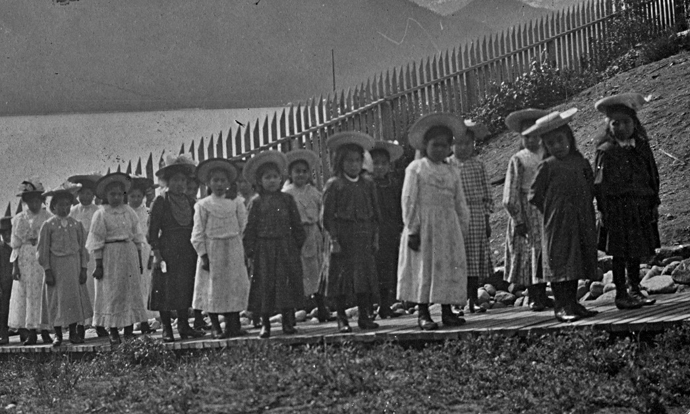
Sometimes, parents took their children out of school against the wishes of the principal.
In 1904, a husband and wife attempted to remove their daughter from the Kuper Island school.
When Principal G. Donckele informed them that when they signed the admission form, they had given the government the right to determine when their daughter would be discharged, the father said, “I am the father of this child and I do not care for what you and the government have to say about it.”
After being told that he could be prosecuted, the father left with his daughter anyway.^519
In 1913, when a mother removed her daughter from the Fort Resolution school, the Mounted Police were called in and the mother surrendered the girl to the school.^520
In response to the death of a student in 1922, local parents withdrew their children from the Kitamaat, British Columbia, residential school.
They agreed to return them only on the condition that the principal “sign her name to a paper before us that she would see that the children got all the food they wanted, that they would be well cared for, and be supplied with sufficient clothing.”^521
In March 1948, the principal of the Roman Catholic school at Cardston, Alberta, struck a father who was attempting to take his son out of the school.
In discussing the issue with Indian Affairs, the Blood Indian Council insisted on having the record note that this was “not the first time that Father Charron had hit an Indian.”^522
It was not uncommon for the parents of an entire community or region to refuse to return their children to school.
In the fall of 1926, for example, parents from communities in Manitoba’s Interlake region announced they were not sending their children back to the Elkhorn school.
According to the parents, the children were not well fed, the older boys compelled the younger boys to steal, and all children were poorly clothed.^523
In October 1927, seventy-five school-aged children from the Blood Reserve in Alberta either had not returned to school or had not been enrolled in school.
It took a letter from the police, plus a follow-up visit from the Indian agent, to fill the Anglican and Catholic schools on the reserve.^524
Two weeks after the start of the 1940 school year, fifty-four students had yet to return to the Fraser Lake, British Columbia, school.
The police were called in, and by October 2, twenty-five of the students had been returned.^525
This form of parental action was common throughout the 1940s.^526
Parents were eager to have their children properly educated, and often proposed realistic and effective solutions.
In 1905, parents of children attending the Roman Catholic boarding school in Squamish, British Columbia, petitioned to have the school converted into an industrial school.
The request was not granted, despite the fact that Indian Affairs officials recognized that the boarding school grant allowed for only “the bare necessities in the line of food and clothing.”^527
Some First Nations leaders who had originally supported residential schools later publicly regretted their decision.
Chief Napahkesit of the Pine Creek Band in Manitoba said in 1917 that he was sorry he had ever supported the construction of the Pine Creek school.
According to the local Indian agent, the chief felt “the children know less when they come out than they did when they went in.”
What was needed, the chief said, was a day school.^528
Calls for day schools were, in fact, a common parental request.^529
A 1949 call from parents for a day school at the Cowessess Reserve eventually proved to be successful.^530
Parents might also demand the dismissal of a principal.^531
In 1917, to back up their call for the resignation of the Shoal Lake school principal, parents refused to return their children to the school.^532
In this case, the principal did resign.^533
The parents of the Kahkewistahaw Band unsuccessfully petitioned the federal government to remove a teacher from the Round Lake, Saskatchewan, school in July 1949.
They said that “the children’s report cards are very unsatisfactory, worst ever received, and she abuses the children too much.^534
Parents also complained that their children were not learning the skills they needed to survive.
Chief Kejick of the Shoal Lake Band told Indian Affairs officials in 1928 that the students from his reserve “did not know how to make a living when they left school and would like trades taught.”^535
Eight years later, Charlie Shingoose of the Waywayseecappo Band sought to have his fifteen-year-old son discharged from the Birtle school so he could teach him to “work, trap, etc.”^536
Parents also hired lawyers to press their cases for investigations into the deaths of children who had run away, to complain about the harshness of discipline, to advocate on behalf of children who had been injured working at the schools, and to attempt to have their children discharged from school.^537
One of the more unusual protests was mounted by First Nations people (Dene) in the Northwest Territories, who, in 1937, refused to accept their Treaty payments in protest of conditions at the Fort Resolution school.
Their children, they said, were “living in hell.”^538
Residential schools also came under criticism from early First Nations organizations.
At its meeting in Saddle Lake, Alberta, in 1931, the League of Indians of Canada called for the construction of more day schools to augment residential schools.^539
The following year, the league, by then known as the League of Indians of Western Canada, called for the closure of boarding schools.^540
The league also recommended that only qualified teachers be hired to work at residential schools, that medical examinations be given to students before they were sent to the schools, and that the half-day system be changed to allow for greater class time.^541
In an effort to bring their own residential schooling to an end, some students attempted to burn their schools down.
There were at least thirty-seven such attempts, two of which ended in student and staff deaths.^542
For students, the most effective form of resistance was to run away.
The principal of the Shingwauk Home in Sault Ste. Marie, Ontario, school in the 1870s, E. F. Wilson, devoted a chapter of his memoirs to the topic of “Runaway Boys.”
It included the story of three boys who tried to make their way home by boat.
They were found alive more than ten days later, stranded on an island in the North Channel of Lake Huron.^543
After 1894, children enrolled in a residential school (or who had been placed there by government order because it was felt that they were not being properly cared for by their parents) but who were refusing to show up at school were considered to be “truant.”
Under the Indian Act and its regulations, they could be returned to the school against their will.
Children who ran away from residential schools were also considered to be truants.
Parents who supported their children in their truancy were often threatened with prosecution.^544
Most runaway students headed for their home communities.
Students knew they might be caught, returned, and punished.
Still, they believed the effort to make it home and have a measure of freedom was worth it.
In some cases, in fact, the schools failed to force runaways to return.^545
Some students eluded capture.
Instead of heading home, some went to work for local farmers and, as a result, were able to avoid their pursuers for considerable periods of time.^546
Running away could be risky.
At least thirty-three students died, usually due to exposure, after running away from school.^547
In a significant number of cases, parents and Indian Affairs officials concluded that the deaths could have been prevented if school officials had mounted earlier and more effective searches and notified police officials and family members.^548
In the case of Charles and Tom Ombash, two brothers who ran away from the Sioux Lookout school on October 5, 1956, school officials waited until November before informing police or Indian Affairs.^549
The boys were never found—community members continued to search for their remains decades after their disappearance.^550
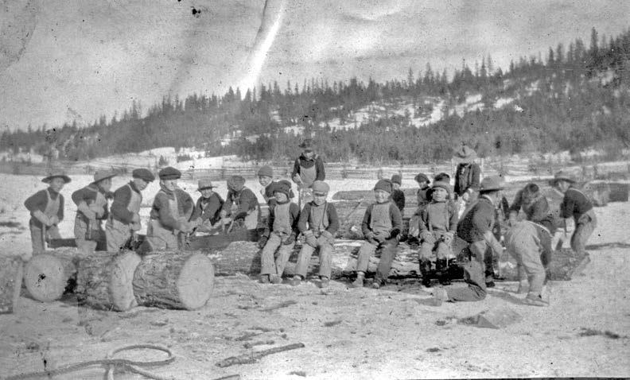
These deaths date back to the beginning of the twentieth century.
However, the first system-wide policy outlining the procedures to be taken when a child ran away from school that the Truth and Reconciliation Commission of Canada has located in the documents it has reviewed dates from 1953.
This was seventy-five years after the government began its residential school system.
That policy simply stated, “The principal shall take prompt action to effect the return to school of any truant pupil, and shall report promptly to the Superintendent, Indian Agency, every case of truancy.”^551
The nature of the prompt action was undefined.
In particular, there was no requirement to contact either the child’s parents or the police.
It was not until 1971 that a more encompassing, nation-wide, policy was announced.^552
In pursuing children to their parents’ homes, the actions of school employees could be both invasive and disrespectful.^553
In the town of Lebret, Saskatchewan, “all the houses were checked” by the police as part of a search for two runaways from the File Hills school in 1935.^554
Running away was not in itself a crime.
However, most students were wearing school-issued clothing when they ran away, and, in some cases, principals tried, and even succeeded, in having them prosecuted for stealing the clothing they were wearing.^555
Students who ran away numerous times also could be charged under the Juvenile Delinquents Act.
In such cases, they could be sentenced to a reformatory until they turned twenty-one.^556
The 1894 Indian Act amendments made parents who did not return truants to school subject to prosecution.
The Mounted Police were often called in to force parents to send their children to school.^557
The Blue Quills, Alberta, school journal entry for May 1, 1932, reads: “The savages having received the order to bring their children to school unless they want the police to get involved, some parents did obey the order today.
But there are still those who turn a deaf ear.”^558
In 1937, a father who refused to return his son to the Sandy Bay, Manitoba, school was sentenced to ten days in jail.
To prevent him from running away again, the boy was sent to a school in Saskatchewan.^559
Parents were often outraged at having to return runaways.
Wallace Hahawahi’s father was reported as being “very indignant” at the prospect of sending his son back to the Brandon school in 1936.
The boy was over sixteen and needed to help out at home.
In this case, the father’s argument prevailed and the boy was discharged.^560
Another runaway from the same school, Kenneth Thompson, told the police, “I am a Treaty Indian of Assiniboine Indian Reserve, I am 17 year of Age.
I wish to state the reason I ran away from school was because I have to work too hard in fact I do not study at all.
I am working around the school all the time.
I consider if I have to work I may as well work at home for my father.”^561
Despite his argument, he was returned to the school.^562
Indian agents often referred to ongoing truancy issues at specific schools as “epidemics.”
The agents viewed such epidemics as a sign of underlying problems at a school.
In 1928, Indian agent J. Waddy wrote that at the Anglican school in The Pas, “hardly a day goes bye [sic] that one or more do not take leave on their own account.”^563
In 1935, ten pupils ran away from the Birtle, Manitoba, school.^564
In the closing years of the 1930s, the Shubenacadie school in Nova Scotia experienced continual truancy problems.
It was not uncommon for some students to make numerous attempts to leave the school.
On the morning of July 7, 1937, Andrew Julian decided not to join the other boys assigned to milk the school’s dairy herd.
Instead, he headed for Truro, where he was reported as being sighted in the rail yard.
He was not located until the end of the month.
By then, he had made it to Nyanza in Cape Breton, a distance of 260 miles (418.^4
kilometres) from the school.^565
The following year, Steven Labobe (also given as LaBobe) managed to make it back to his home on Prince Edward Island.
The principal decided not to demand the boy’s return.^566
Other boys were not so lucky.
One boy, who ran away five times, was eventually placed in a private reformatory.^567
Many students said they ran away to escape the discipline of the school.
Ken Lacquette attended residential schools in Brandon and Portage la Prairie, Manitoba.
“They used to give us straps all the time with our pants down they’d give us straps right in the public.
Then …
this started happening, after awhile when I was getting old enough I started taking off from there, running away.”^568
Others were seeking to escape something far more sinister than corporal punishment.
After being subjected to ongoing sexual abuse, Anthony Wilson ran away from the Alberni school.^569
In the 1940s, Arthur McKay regularly ran away from the Sandy Bay school.
“I didn’t even know where my home was, the first time right away.
But these guys are the ones; my friends were living in nearby reserve, what they call Ebb and Flow, that’s where they were going so I followed.”^570
Ivan George and a group of his friends ran away from the Mission, British Columbia, school when he was eleven years old.
They were strapped on their return.
Despite this, he ran away two more times that school year.^571
Muriel Morrisseau ran away from the Fort Alexander school almost every year she was at the school.
The experience was often frightening.
“I remember running away again trying to cross the river and it started freezing up, we all got scared, we had to come back again with a tail under our legs.”^572
Isaac Daniels ran away from the Prince Albert, Saskatchewan, school with two older boys.
Their escape route involved crossing a railway bridge.
Partway across, Daniels became too frightened to continue and turned back.^573
Dora Necan ran away from the Fort Frances school with a friend.
They made it to the United States and stayed there for three days before returning to the school.^574
Nellie Cournoyea was sheltered by Aboriginal families along her route when she ran away from an Anglican hostel in the Northwest Territories after a confrontation with a teacher.^575
When Lawrence Waquan ran away from the Fort Chipewyan school in 1965, there were no roads and no one along the way to support him.
“I walked from Fort Chipewyan in northern Alberta to Fort Smith, 130 miles.
It took me about five days.
I was only about sixteen.
And I just ate berries and drank water to survive.”^576
When Beverley Anne Machelle and her friends ran away from the Lytton, British Columbia, school, they had to contend with the school’s isolated and mountainous location.
It was halfway down this big hill, and then from there you could see town.
And we got halfway down there, and we were all feeling, like, woo-hoo, you know, and we got out of there, and, and we’re gonna go do something fun, and, and then we got halfway down, and then we realized, well, we have no money, and we have no place to go.
There was no place to go.
There was no safe place to go.^577
The girls at the Sioux Lookout school rebelled in 1955 when they were all sent to bed early after a number of girls had been caught stealing.
They barricaded themselves in their dormitory and refused to allow any staff to enter.^578
There was a similar revolt in Edmonton in the 1960s, when students blocked staff entry to the dormitory at night, to protest the abuse of students.^579
Collectively and individually, parents and students did resist the residential school attack on Aboriginal families and communities.
On occasion, they won small victories: a child might be discharged; a day school might be built.
However, as long as Aboriginal people were excluded from positions of control over their children’s education, the root causes of the conflict remained unresolved.
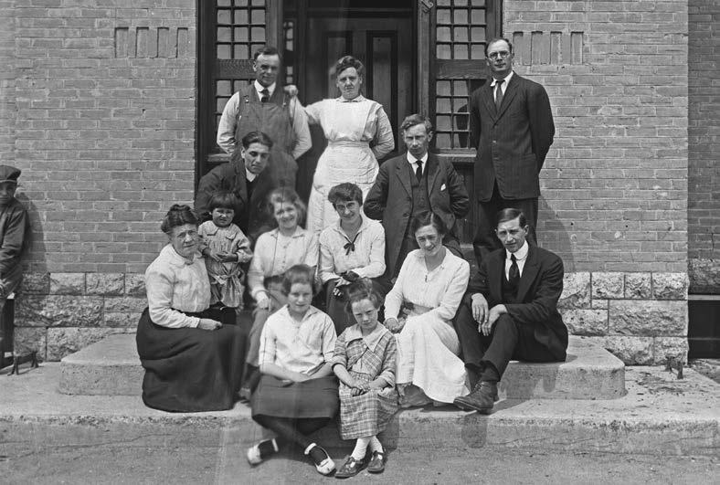
For most of their history, residential schools were staffed by individuals who were recruited by Christian missionary organizations.
Generally, the churches appointed a priest or minister, as opposed to an educator, as the principal.
The Roman Catholic schools could draw staff from a number of Catholic religious orders, whose members had made explicit vows of obedience, poverty, and chastity.
In the spirit of those vows, they would be obliged to go where they were sent, would not expect payment, and would have no families to support.
Indian Commissioner David Laird believed that since members of Roman Catholic religious orders received very little in exchange for their services, the Roman Catholic schools could “afford to have a much larger staff than where ordinary salaries are paid, and there is consequently less work for each to do, without interfering with the quality of the work done.”^580
The Protestant schools recruited many of their staff members through missionary organizations.
Many of the early school staff members believed they were participating in a moral crusade.
In her history of the McDougall Orphanage, the predecessor of the Morley school in Alberta, Mrs. J. McDougall described the work of the mission and orphanage as “going out after the wild and ignorant and bringing them into a Christian home and blessing the body, culturing the mind and trying to raise spiritual vision.”^581
Staff members were often motivated by a spirit of adventure as well as a religious commitment.
As a young seminary student in Corsica, a French island in the Mediterranean, Nicolas Coccola wanted more than a life as a priest.
In his memoir, he wrote, “The desire of foreign missions with the hope of martyrdom appeared to me as a higher calling.”
He ended up living out his life as a residential school principal in British Columbia.^582
As a small boy in England in the middle of the nineteenth century, Gibbon Stocken read with enthusiasm the missionary literature sent to him by an aunt.
When he turned seventeen, he volunteered his services to the Anglican Church Missionary Society.
He hoped to be sent to India.
Instead, he was offered a position on the Blackfoot Reserve in what is now southern Alberta.^583
British-born nurse and midwife Margaret Butcher managed to get to India, where she worked for a British family.
From there, she made her way to British Columbia, where she worked with a Methodist mission to Japanese immigrants.^584
In 1916, she was on her way to a job at the Methodist residential school in Kitamaat, British Columbia.^585
This mix of motivations continued throughout the system’s history.
Lorraine Arbez, who worked at the Qu’Appelle school in the 1950s, said, “I chose this career to work with the children and my aim was to do something good with them and I hope I was of some use.”^586
For Noreen Fischbuch, who worked at schools in Ontario and Alberta in the 1950s and 1960s, the residential schools offered much-needed experience: “As far as I was concerned, it was a teaching job, it was with the kids and I liked the kids…
The kids were getting an education; I had a job.”^587
George Takashima, who taught at Sioux Lookout, explained, “I was just sort of adventuresome, you might say.”^588
Almost all the staff members were poorly paid.
Government officials took the position that because many of the staff members belonged to missionary organizations, pay was a “minor consideration.”^589
As a result, the schools had problems recruiting and keeping staff.
Alexander Sutherland of the Methodist Church was particularly outspoken about the link between low wages and the difficulties the schools had in recruiting staff.
In 1887, he wrote to the minister of Indian Affairs about the “difficulty of obtaining efficient and properly qualified teachers, on account of the meagre salaries paid.”^590
The issue of low pay never went away.
More than half a century later, in 1948, C. H. Birdsall, the chair of the United Church committee responsible for the Edmonton school, complained that it “is impossible for the Residential School to offer salaries in competition with” rates that Indian Affairs was paying teachers at day schools.
Given the inadequate quality of accommodation, equipment, and staff at the school, he felt that it was “doubtful the present work with Indian Children could properly be called education.”^591
Many of the Catholic schools survived on what amounted to volunteer labour.
In 1948, Sechelt principal H. F. Dunlop informed Ottawa, “If this school kept out of the red during the past year it was largely due to the fact that four Oblates, working here full time, received in salaries from Jan 1947 to Jan 1948 the grand total of $1800.”^592
As late as 1960, the nuns at the Christie Island school were being paid $50 a month—a fact that made Principal A. Noonan “feel like a heel.”^593

Many qualified and experienced people worked in the schools. Miss Asson, the matron at the Kitamaat school in 1930, was a graduate of the Ensworth Deaconess Hospital in St. Joseph, Missouri. She had also trained as a deaconess in Toronto, and worked in China from 1909 to 1927.^594 The matron at the Anglican Wabasca, Alberta, school in 1933 was a nurse.^595 Among the staff at the Norway House school in the early twentieth century were the sisters Charlotte Amelia and Lilian Yeomans. Charlotte had trained as a nurse, and Lilian was one of the first women in Canada to qualify as a doctor.^596 Theresa Reid had four years of teaching experience and a teaching certificate before she applied to work at Norway House,^597 George Takashima had a teaching certificate,^598 and Olive Saunders had a university degree and several years of teaching experience.^599 In 1966, E. O. Drouin, the principal of the Roman Catholic school in Cardston, boasted that out of the twenty-one people on his staff, ten had university degrees. Drouin, himself, had left his position as a university professor to go to work at the school.^600
A number of people devoted their adult lives to working in residential schools.
At least twelve principals died in office.^601
Kuper Island principal George Donckele resigned in January 1907; by June of that year, he was dead.^602
Sherman Shepherd served at the Anglican schools in Shingle Point on the Arctic Ocean in the Yukon, Aklavik (Northwest Territories), Fort George (Québec), and Moose Factory (Ontario), resigning in 1954 after twenty-five years of service in northern Canada.^603
Others worked into their old age, since, due to low pay, their savings were also low and pensions were minimal.
When the seventy-three-year-old matron of the Ahousaht school in British Columbia retired in 1929, Principal W. M. Wood recommended that she be given an honorarium of a month’s salary as appreciation for her years of service.
Woods noted that she was “retiring with very limited means.”^604
Such long service was not the norm.
Because the pay was often low and the working and living conditions were difficult, turnover was high throughout the system’s history.
From 1882 to 1894, there was what amounted to an annual full turnover of teachers at the Fort Simpson (now Port Simpson), British Columbia, school.
At one point, all the teaching was being done by the local Methodist missionary Thomas Crosby, his wife, Emma, and the school matron.^605
Between January 1958 and March 1960, a period of just over two years, the Alert Bay school lost fifty-eight staff members.
Of these, nineteen had been fired because they were deemed to be incompetent.
Eight others left because they were angry with the principal.^606
In 1958, the Benedictine Sisters announced that their order would no longer be providing the Christie, British Columbia, school with staff from its monastery in Mount Angel, Oregon.
According to the prioress of the Benedictine monastery, Mother Mary Gemma, meeting residential school needs had left the members of the order physically and mentally exhausted.
“One of my youngest teachers had to have shock treatments this year and two others may have to.”
In the previous two and a half years, the order had lost fourteen teachers.^607
These examples are confirmed by the overall statistics.
The average annual turnover rate for all Indian Affairs schools from 1956–57 to 1963–64 was 25%.^608
The schools were heavily dependent on female labour.
The Roman Catholics relied on female religious orders to staff and operate the residential schools.^609
The Protestants were equally reliant upon the underpaid work of female staff.
Austin McKitrick, the principal of the Presbyterian school at Shoal Lake in northwestern Ontario, acknowledged this when he wrote in 1901, “I think if we men were to put ourselves in the places of some overworked, tired-out women, we would perhaps not stand it so patiently as they often do.”^610
One missionary wrote that, knowing what he did about what was expected of female missionaries, he would discourage any daughter of his from working for the Methodist Women’s Missionary Society.^611
Although women usually worked in subordinate roles, the 1906 Indian Affairs annual report listed eleven female principals.
All worked at boarding schools, as opposed to industrial schools.
Seven of them were Roman Catholic, two were Anglican, one was Methodist, and one was Presbyterian.^612
One of these principals was Kate Gillespie.
After teaching at day schools on reserves near Kamsack and Prince Albert, she was appointed principal of the File Hills school in 1901, a position she held until her marriage in 1908.^613
The schools employed many more people than principals and teachers.
Most schools were mini-communities.
There were cooks, seamstresses, housekeepers, matrons, disciplinarians, farmers, carpenters, blacksmiths, engineers (to operate the heating and electrical generators), shoemakers, and even bandmasters.^614
Smaller schools such as the United Church Crosby Girls’ Home in Port Simpson, British Columbia, made do with a staff of only three people in 1935.^615
The Roman Catholic school at Kamloops, British Columbia, had at least nineteen staff in that same year.^616
The Prince Albert, Saskatchewan, residence had over fifty employees during the 1966–67 school year.^617
Workloads were heavy, and time off was rare.
The seven-day week was the norm for many employees.
An 1896 report on the Mount Elgin school noted, “No holidays are given or allowed to the staff; all days or parts of days lost time are deducted from their wages.”^618
The policy at the Anglican schools into the 1920s was to allow “one full day off duty each month.”^619
Indian agent F. J. C. Ball predicted that a sixty-three-year-old employee of the Lytton school was headed for a nervous breakdown in 1922.
According to Ball, the man was “acting as teacher, minister, janitor and general handy man around the School.
He also has charge of the boys [sic] dormitory at night.”^620
Staff meals were generally superior to those provided to the students.
Staff members, particularly in the early years of the system, had greater immunity than their students to many of the diseases that plagued residential schools.
Despite this, the living conditions that prevailed in many schools took a toll on staff.
In 1896, E. B. Glass, the principal of the Whitefish Lake school in what is now Alberta, said the deterioration in the health of one staff member was the result of having to work in an inadequately heated and poorly insulated schoolhouse in which the “cold wind whistled up through the floor.”
Glass said that “the Department which charges itself with building, repairing and furnishing school houses, should also charge itself with neglect and the suffering endured by the teacher from that neglect.”^621
Disease and illness also claimed the children of married staff members.
Emma Crosby, who helped found the Crosby Girls’ Home in Port Simpson in the late 1870s, buried four of her children at Port Simpson.
Two of them had succumbed to diphtheria.^622
Elizabeth Matheson, the wife of the Onion Lake principal, lost a daughter to whooping cough and a son to meningeal croup in the early years of the twentieth century.^623
During her fourth pregnancy, Elizabeth Matheson was so depressed that she considered suicide.^624
Missionary staff, particularly in the early years of the system, were extremely hostile to Aboriginal culture.^625
They commonly described Aboriginal people as “lazy.”^626
The longtime principal of the Shubenacadie school in Nova Scotia, J. P. Mackey, was expressing these views in the 1930s.
In one letter, he described Aboriginal people as natural liars.
“For myself, I never hope to catch up with the Indian and his lies, and in fact I am not going to try.”^627
Others, however, spoke out on behalf of Aboriginal people.
Hugh McKay, the superintendent of Presbyterian missionary work among Aboriginal people, criticized the federal government for failing to implement its Treaty promises and for failing to alleviate the hunger crisis on the Prairies.^628
Similarly, William Duncan, the Anglican missionary at Metlakatla, British Columbia, advised the Tsimshian on how to advance arguments in favour of Aboriginal title.^629
Sometimes, staff protested the way students were treated.
When two staff members of the Prince Albert, Saskatchewan, school resigned in 1952, they complained of the harsh disciplinary regime at the school.^630
In 1957, Helen Clafton, an ex-dormitory supervisor, wrote of how, at the Lytton, British Columbia, school, “the ‘strap’ is altogether too much in evidence.”^631
Aboriginal people also worked for the schools.
The Mohawk Institute hired former student Isaac Barefoot to work as a teacher in 1869.
Barefoot went on to serve as acting principal and was later ordained as an Anglican minister.^632
Another former student, Susan Hardie, obtained her teaching certificate in 1886.^633
She was the school governess as early as 1894, and was paid $200 a year.^634
She retired at the beginning of the 1936–37 school year.^635 A young Oneida woman, Miss Cornelius, taught at the Regina school in the early twentieth century.^636 She left the following year, lured away to a better paying school in the United States.^637
In the early 1930s, the Brandon school hired former student Lulu Ironstar as a teacher.^638
But these were exceptions, not the rule.
As late as 1960, there were only twenty-three First Nations teachers working in residential schools across the country.
Nineteen taught academic subjects and the other four taught home economics and industrial arts.^639
Stan McKay, who was educated at the Birtle and Brandon residential schools, taught in the Norway House, Manitoba, school in the 1960s.
Although there was much that he enjoyed about the work, he left after two years.
In his opinion, the education he was being forced to provide was not relevant to the lives of the children.
There was, for example, a heavy emphasis on English, and no recognition of the role of Cree in the communities from which the children came.
“They were doomed to fail under the system that existed.
The majority of them would certainly and did.”^640
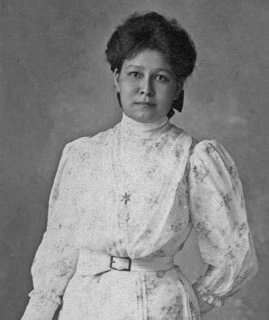
Verna Kirkness, who was raised on the Fisher River First Nation in Manitoba, taught at both the Birtle and Norway House schools.^641
She did not like the atmosphere at the Birtle school, where, she felt, administrators discouraged students from spending additional time with her.
In her memoir, she wrote that she “wondered if they were afraid the children would tell me things about their lives away from the classroom.”^642
It was in the 1960s that a number of Aboriginal people were promoted to the position of school principal.
Ahab Spence, a former residential school student, was appointed principal of the Sioux Lookout school in 1963.^643
Under Spence’s administration, the school had a staff of twenty-three, half of whom were Aboriginal.^644
Colin Wasacase became the principal of the Presbyterian school in Kenora in 1966.^645
In keeping with past practice, his wife was made school matron.^646
This trend continued into the 1970s, when Aboriginal people were appointed to administrative positions at numerous residential schools, including those in Mission and Kamloops, British Columbia; Blue Quills, Alberta; Prince Albert, Duck Lake, and Qu’Appelle, Saskatchewan; and Fort George, Québec.^647
Although the total number of schools declined rapidly from 1969 onwards, they became a significant source of Aboriginal employment, particularly in Saskatchewan, where six schools were operated by First Nations educational authorities.
Of the 360 people working in the Saskatchewan schools in 1994, 220 were of Aboriginal ancestry—almost two-thirds of the total.^648
Most of the Aboriginal people who were hired by the schools worked as cooks, cleaners, and handymen.
In 1954, Mrs. Clair, a Cree woman who had attended the school at Lac La Ronge, Saskatchewan, was working at the Carcross school in the Yukon.
She was described by a superintendent as a “very fine person, willing worker and everyone likes her.
Can certainly get the most out of the children.”^649
At the Wabasca, Alberta, school, Alphonse Alook was seen as being “a tower of strength to the Principal especially of late.
Can do fair carpentering and is loyal to the school.
Principal recommends an increase in his salary.”^650
Four young Aboriginal women, three of whom were sisters, had been hired to work at the Fort George, Québec, school in 1953.^651
A 1956 report on three of them said, “The Herodier girls are all doing a fine job.”
They were not, however, being housed in the same way as non-Aboriginal staff.
The report observed that it was fortunate that “the native girls do not mind doubling up in cramped quarters otherwise staff accommodation would be insufficient.”^652
A number of former Aboriginal staff members felt they helped make an important difference in the lives of the students.
Jeanne Rioux went to the Edmonton school and later worked as a supervisor at the Hobbema school in Alberta.
There, she challenged staff about the way they disciplined children.^653
Mary Chapman was a former residential school student who later worked in the kitchen of the Kuper Island school.
At her prompting, the school began serving students and staff the same meals.
It was her rule that “if we run out of roast, the kids run out of roast, I don’t give them bologna, I take the roast from the staff and I give it to them.”^654
Vitaline Elsie Jenner, who had unhappily attended the Fort Chipewyan, Alberta, residential school, worked as a girls’ supervisor at Breynat Hall, the Roman Catholic residence at Fort Smith, Northwest Territories.
To her surprise, she enjoyed most of the experience.
She recalled being asked by one staff person what sort of games she thought the children would like to play to make them feel at home.
“I said, ‘You know I bet you they all want to be hugged, like I was in that residential school.
’Cause you know what?
They’re away from their parents.’”655
Former staff and the children of former staff members have expressed the view that much of the discussion of the history of residential schools has overlooked both the positive intent with which many staff members approached their work, and the positive accomplishments of the school system.
Although they certainly believed the system was underfunded, they also believed that they and their parents devoted much of their lives to educating and caring for Aboriginal children.
Most of the staff members did not make a career in residential schools, spending only a year or two at a school before moving on.
Others stayed for many years in conditions that were often very different from what they grew up with, working for low pay, and living in cramped and confined quarters with, at times, less than congenial colleagues.
They spent their time teaching, cooking, cleaning, farming, and supervising children.
On their own, these can be seen as positive, not negative, activities.
For the most part, the school staff members were not responsible for the policies that separated children from their parents and lodged them in inadequate and underfunded facilities.
In fact, many staff members spent much of their time and energy attempting to humanize a harsh and often destructive system.
Along with the children’s own resilience, such staff members share credit for any positive results of the schools.
During the years in which the federal government was slowly closing the residential school system, Aboriginal people across the country were establishing effective regional and national organizations.
In the courts and the legislatures, they argued for the recognition of Aboriginal rights, particularly the right to self-government.
They forced the government to withdraw its 1969 White Paper that aimed at terminating Aboriginal rights, they placed the settling of land claims on the national agenda, ensured that Aboriginal rights were entrenched in the Constitution, and saw the creation of a new jurisdiction within Canada—the territory of Nunavut—with an Inuit majority population.
These developments were part of a global movement asserting the rights of Indigenous peoples.
Canadian Aboriginal leaders played a key role in this movement.
For example, they were central in the creation of the World Council of Indigenous Peoples in 1975.^656
The work of the council laid the groundwork for the 2007 United Nations Declaration on the Rights of Indigenous Peoples.^657
From the 1960s onwards, many people within the churches began to re-evaluate both the broader history of the relations between the churches and Aboriginal peoples, and the specific history of the residential schools.
Many church organizations provided support to Aboriginal campaigns on such issues as land and Treaty rights.
In the 1980s, the churches began to issue apologies to Aboriginal people.
One of the first of these, issued in 1986 by the United Church of Canada, focused on the destructive impact that church missionary work had on Aboriginal culture.^658
The Oblate order offered an apology in 1991 that referred to the residential schools.^659
Apologies relating specifically to their roles in operating residential schools were issued by the Anglicans in 1993, the Presbyterians in 1994, and the United Church in 1998.^660
Aboriginal people also began both individually and collectively to push for the prosecution of individuals who had abused students at residential schools and for compensation for former students.
In 1987, Nora Bernard, a former student of the Shubenacadie residential school, began interviewing fellow Survivors in the kitchen of her home in Truro, Nova Scotia.^661
In 1995, she formed the Shubenacadie Indian Residential School Survivors Association and started registering Survivors.
The work of former students from the schools in places as distant as Fort Albany, Ontario; Chesterfield Inlet, then in the Northwest Territories; and Williams Lake, British Columbia, led to several police investigations, and a limited number of prosecutions and convictions.
They also led to the creation of local and national organizations of former residential school students.
Phil Fontaine, then Grand Chief of the Assembly of Manitoba Chiefs, placed the issue on the national agenda in October 1990 when he spoke publicly about the abuse that he and his fellow students had experienced at the Fort Alexander school.^662
Former students also filed lawsuits against the federal government and the churches over the treatment that they received in the schools.
Although they were successful in a number of these cases, courts were not willing to provide compensation for some issues of importance to Aboriginal peoples, such as the loss of language and culture.
By October 2001, more than 8,500 residential school Survivors had filed lawsuits against the federal government, the churches, related organizations, and, where possible, the individual who committed the abuse.^663
By 2005, it was estimated that the volume surpassed 18,000 lawsuits.^664
Former students also commenced class-action lawsuits for compensation.
Although lower courts rejected their right to pursue such claims, in 2004, the Ontario Court of Appeal ruled that one of these cases (known as the “Cloud case”) should be allowed to proceed.^665
Within months, the federal government agreed to enter into a process intended to negotiate a settlement to the growing number of class-action suits.
The Indian Residential Schools Settlement Agreement (IRSSA) was reached in 2006 and approved by the courts in the following year.
The IRSSA has five main components: 1) a Common Experience Payment; 2) an Independent Assessment Process; 3) support for the Aboriginal Health Foundation; 4) support for residential school commemoration; and 5) the establishment of a Truth and Reconciliation Commission of Canada.
Through the Common Experience Payment, former students would receive a payment of $10,000 for the first year that they attended a residential school, and an additional $3,000 for each additional year or partial year of attendance.
The Independent Assessment Process adjudicated and compensated the claims of those students who were physically or sexually abused at the schools.
Funding was also provided to the Aboriginal Healing Foundation to support initiatives addressing the residential school legacy.
The Settlement Agreement committed the federal government to funding initiatives to commemorate the residential school experience.
The Truth and Reconciliation Commission of Canada was mandated to tell Canadians about the history of residential schools and the impact those schools had on Aboriginal peoples, and to guide a process of reconciliation.
The court approval of the IRSSA in 2007 was followed in June 2008 with Prime Minister Stephen Harper’s apology on behalf of Canada.
In his statement, the prime minister recognized that the primary purpose of the schools had been to remove children from their homes and families in order to assimilate them better into the dominant culture.
Harper said, “These objectives were based on the assumption Aboriginal cultures and spiritual beliefs were inferior and unequal.
Indeed, some sought, as it was infamously said, ‘to kill the Indian in the child.’ Today, we recognize that this policy of assimilation was wrong, has caused great harm, and has no place in our country.”^666
The prime minister was joined by the leaders of the other parties represented in the Canadian House of Commons.
The Liberal leader of the opposition, the Honourable Stéphane Dion, recognized that the government’s policy had “destroyed the fabric of family in First Nations, Métis and Inuit communities.
Parents and children were made to feel worthless.
Parents and grandparents were given no choice.
Their children were stolen from them.”^667
The Bloc Québecois leader, the Honourable Gilles Duceppe, asked Canadians to “picture a small village, a small community.
Now picture all of its children, gone.
No more children between seven and sixteen playing in the lanes or the woods, filling the hearts of their elders with their laughter and joy.”^668
The New Democratic Party leader, the Honourable Jack Layton, called on Canadians to help
reverse the horrific and shameful statistics afflicting Aboriginal populations, now: the high rates of poverty, suicide, the poor or having no education, overcrowding, crumbling housing, and unsafe drinking water.
Let us make sure that all survivors of the residential schools receive the recognition and compensation that is due to them.^669
In his response, Phil Fontaine, then National Chief of the Assembly of First Nations, said the apology marked a new dawn in the relationship between Aboriginal people and the rest of Canada.
He also called attention to the “brave survivors,” who, by “the telling of their painful stories, have stripped white supremacy of its authority and legitimacy.
The irresistibility of speaking truth to power is real.”^670
National Chief of the Congress of Aboriginal Peoples Patrick Brazeau spoke of how the resiliency, courage, and strength of residential school Survivors had inspired all Aboriginal people.^671
Mary Simon, President of the Inuit Tapiriit Kanatami, said, in tackling the hard work that remained to be done, “Let us now join forces with the common goal of working together to ensure that this apology opens the door to a new chapter in our lives as aboriginal peoples and in our place in Canada.”^672
Clem Chartier, President of the Métis National Council, noted that he had attended a residential school, and pointed out that many issues regarding the relationship between Métis people and residential schools still were not resolved.
He said, “I also feel deeply conflicted, because there is still misunderstanding about the situation of the Métis Nation, our history and our contemporary situation.”^673
Beverley Jacobs, President of the Native Women’s Association of Canada, spoke of how Aboriginal communities were recovering their traditions.
“Now we have our language still, we have our ceremonies, we have our elders, and we have to revitalize those ceremonies and the respect for our people not only within Canadian society but even within our own peoples.”^674
The Settlement Agreement and the formal apology by Prime Minister Stephen Harper represent the culmination of years of political struggle, changes in societal attitudes, court decisions, and negotiation.
Through it all, the Survivors kept the issue alive.
![Canada’s Aboriginal leaders along with a number of former residential schools students were present on the floor of the House of Commons when Prime Minister Stephen Harper delivered his 2008 apology. Clockwise from the left: former student Don Favel; former student Mary Moonias; former student Mike Cachagee, President of the National Residential School Survivors Society; former student Crystal Merasty; former student Piita Irniq; Patrick Brazeau, National Chief of the Congress of Aboriginal Peoples; Mary Simon, President of the Inuit Tapiriit Kanatami; Phil Fontaine, National Chief of the Assembly of First Nations; Beverley Jacobs, President of the Native Women’s Association of Canada; Clem Chartier, President of the Métis National Council. Former student Marguerite Wabano is obscured by Phil Fontaine’s headdress. Canadian Press: Fred Chartrand.](image-autofix/page-139.jpg)
These events do not bring the residential school story to an end.
The legacy of the schools remains.
One can see the impact of a system that disrupted families in the high number of Aboriginal children who have been removed from their families by child-welfare agencies.
An educational system that degraded Aboriginal culture and subjected students to humiliating discipline must bear a portion of responsibility for the current gap between the educational success of Aboriginal and non-Aboriginal Canadians.
The health of generations of Aboriginal children was undermined by inadequate diets, poor sanitation, overcrowded conditions, and a failure to address the tuberculosis crisis that was ravaging the country’s Aboriginal community.
There should be little wonder that Aboriginal health status remains far below that of the general population.
The over-incarceration and over-victimization of Aboriginal people also have links to a system that subjected Aboriginal children to punitive discipline and exposed them to physical and sexual abuse.
The history of residential schools presented in this report commenced by placing the schools in the broader history of the global European colonization of Indigenous peoples and their lands.
Residential schooling was only a part of the colonization of Aboriginal people.
The policy of colonization suppressed Aboriginal culture and languages, disrupted Aboriginal government, destroyed Aboriginal economies, and confined Aboriginal people to marginal and often unproductive land.
When that policy resulted in hunger, disease, and poverty, the federal government failed to meet its obligations to Aboriginal people.
That policy was dedicated to eliminating Aboriginal peoples as distinct political and cultural entities and must be described for what it was: a policy of cultural genocide.
Despite being subjected to aggressive assimilation policies for nearly 200 years, Aboriginal people have maintained their identity and their communities.
They continue to assert their rights to self-governance.
In this, they are not alone.
Like the Settlement Agreement in Canada, the United Nations Declaration on the Rights of Indigenous Peoples is a milestone in a global campaign to recognize and respect the rights of Indigenous peoples.
It is time to abandon the colonial policies of the past, to address the legacy of the schools, and to engage in a process of reconciliation with the Aboriginal people of Canada.
Canada has a long history of colonialism in relation to Aboriginal peoples.
That history and its policies of cultural genocide and assimilation have left deep scars on the lives of many Aboriginal people, on Aboriginal communities, as well as on Canadian society, and have deeply damaged the relationship between Aboriginal and non-Aboriginal peoples.
It took a long time for that damage to have been done and for the relationship we see to have been created, and it will take us a long time to fix it.
But the process has already begun.
An important process of healing and reconciling that relationship began in the 1980s with church apologies for their treatment of Aboriginal peoples and disrespect of their cultures.
It continued with the findings of the Royal Commission on Aboriginal Peoples, along with court recognition of the validity of the Survivors’ stories.
It culminated in the Indian Residential Schools Settlement Agreement and the prime minister of Canada’s apology in Parliament in June 2008, along with the apologies of all other parliamentary leaders.
That process of healing and reconciliation must continue.
The ultimate objective must be to transform our country and restore mutual respect between peoples and nations.
Reconciliation is in the best interests of all of Canada.
It is necessary not only to resolve the ongoing conflicts between Aboriginal peoples and institutions of the country, but also in order for Canada to remove a stain from its past and be able to maintain its claim to be a leader in the protection of human rights among the nations of the world.
Canada’s historical development, as well as the view held strongly by some that the history of that development is accurate and beneficent, raises significant barriers to reconciliation in the twenty-first century.
No Canadian can take pride in this country’s treatment of Aboriginal peoples, and, for that reason, all Canadians have a critical role to play in advancing reconciliation in ways that honour and revitalize the nation-to-nation Treaty relationship.
At the Truth and Reconciliation Commission of Canada’s (TRC) Traditional Knowledge Keepers Forum held in June 2014, Chief Ian Campbell said, “Our history is your history, as Canada …
until Canada accepts that …
this society will never flourish to its full potential.”^1
The history and destructive legacy of the residential school system is a powerful reminder that Canada disregarded its own historical roots.
Canada’s determination to assimilate Aboriginal peoples, in spite of the early relationship established at first contact and formalized and maintained in Treaties, attests to that fact.
As Gerry St. Germain (Métis), then a Canadian senator, said,
There can be no doubt that the founders of Canada somehow lost their moral compass in their relations with the people who occupied and possessed the land…
While we cannot change history, we can learn from it and we can use it to shape our common future…
This effort is crucial in realizing the vision of creating a compassionate and humanitarian society, the society that our ancestors, the Aboriginal, the French and the English peoples, envisioned so many years ago—our home, Canada.^2
Aboriginal peoples have always remembered the original relationship they had with early Canadians.
That relationship of mutual support, respect, and assistance was confirmed by the Royal Proclamation of 1763 and the Treaties with the Crown that were negotiated in good faith by their leaders.
That memory, confirmed by historical analysis and passed down through Indigenous oral histories, has sustained Aboriginal peoples in their long political struggle to live with dignity as self-determining peoples with their own cultures, laws, and connections to the land.
The destructive impacts of residential schools, the Indian Act, and the Crown’s failure to keep its Treaty promises have damaged the relationship between Aboriginal and non-Aboriginal peoples.
The most significant damage is to the trust that has been broken between the Crown and Aboriginal peoples.
That broken trust must be repaired.
The vision that led to that breach in trust must be replaced with a new vision for Canada; one that fully embraces Aboriginal peoples’ right to self-determination within, and in partnership with, a viable Canadian sovereignty.
If Canadians fail to find that vision, then Canada will not resolve long-standing conflicts between the Crown and Aboriginal peoples over Treaty and Aboriginal rights, lands, and resources, or the education, health, and well-being of Aboriginal peoples.
Reconciliation will not be achieved, and neither will the hope for reconciliation be sustainable over time.
It would not be inconceivable that the unrest we see today among young Aboriginal people could grow to become a challenge to the country’s own sense of well-being and its very security.
Reconciliation must become a way of life.
It will take many years to repair damaged trust and relationships in Aboriginal communities and between Aboriginal and non-Aboriginal peoples.
Reconciliation not only requires apologies, reparations, the relearning of Canada’s national history, and public commemoration, but also needs real social, political, and economic change.
Ongoing public education and dialogue are essential to reconciliation.
Governments, churches, educational institutions, and Canadians from all walks of life are responsible for taking action on reconciliation in concrete ways, working collaboratively with Aboriginal peoples.
Reconciliation begins with each and every one of us.
The Aboriginal and non-Aboriginal youth of our country have told the Commission that they want to know the truth about the history and legacy of residential schools.
They want to understand their responsibilities as parties to the same Treaties—in other words, as Treaty people.
They want to learn about the rich contributions that Aboriginal peoples have made to this country.
They understand that reconciliation involves a conversation not only about residential schools, but also about all other aspects of the relationship between Aboriginal and non-Aboriginal peoples.
As Commissioners, we believe that reconciliation is about respect.
That includes both self-respect for Aboriginal people and mutual respect among all Canadians.
All young people need to know who they are and from where they come.
Aboriginal children and youth, searching for their own identities and places of belonging, need to know and take pride in their Indigenous roots.
They need to know the answers to some very basic questions.
Who are my people?
What is our history?
How are we unique?
Where do I belong?
Where is my homeland?
What is my language and how does it connect me to my nation’s spiritual beliefs, cultural practices, and ways of being in the world?
They also need to know why things are the way they are today.
That requires an understanding of the history of colonization, including the residential school system and how it has affected their families, communities, their people, and themselves.
Of equal importance, non-Aboriginal children and youth need to comprehend how their own identities and family histories have been shaped by a version of Canadian history that has marginalized Aboriginal peoples’ history and experience.
They need to know how notions of European superiority and Aboriginal inferiority have tainted mainstream society’s ideas about, and attitudes towards, Aboriginal peoples in ways that have been profoundly disrespectful and damaging.
They too need to understand Canada’s history as a settler society and how assimilation policies have affected Aboriginal peoples.
This knowledge and understanding will lay the groundwork for establishing mutually respectful relationships.
In the summer of 1990, at Oka, Québec, the Mohawks of Kanesatake, the government of Québec, the Québec provincial police, and the Canadian military became embroiled in a violent confrontation over the town’s plan to develop a golf course on Mohawk burial grounds located in a forested area known as “The Pines.”
The Mohawks’ claim to that land and demands for the recognition of their traditional territory had gone unheeded for years by the federal government.
The resulting confrontation, according to historian J. R. Miller, was “proof of Canada’s failed Indian [land] claims policy.”^3
What had begun as a peaceful act of resistance by Mohawk people defending their lands took a violent turn.^4
The “Oka crisis,” as it became widely known in the media, led to a seventy-eight-day standoff and involved armed resistance led by militarily trained Mohawk warriors.^5
It was an event that shook Canada’s complacency about Aboriginal demands to the core.
Shortly after an end to the siege had been negotiated, Prime Minister Brian Mulroney wrote:
The summer’s events must not be allowed to over-shadow the commitment that my government has made to addressing the concerns of aboriginal people…
These grievances raise issues that deeply affect all Canadians and therefore must be resolved by all Canadians working together…
The government’s agenda responds to the demands of aboriginal peoples and has four parts: resolving land claims; improving the economic and social conditions on reserves; defining a new relationship between aboriginal peoples and governments; and addressing the concerns of Canada’s aboriginal peoples in contemporary Canadian life.
Consultation with aboriginal peoples and respect for the fiduciary responsibilities of the Crown are integral parts of the process.
The federal government is determined to create a new relationship among aboriginal and non-aboriginal Canadians based on dignity, trust and respect.^6
The Government of Canada subsequently created a Royal Commission to look into the state of affairs of Aboriginal peoples in Canada.
The Royal Commission provided a glimpse into just how bad things had become.
In 1996, the Royal Commission on Aboriginal Peoples (RCAP) put forward a bold and comprehensive vision of reconciliation.
The RCAP report observed that if Canada was to thrive in the future, the relationship between Aboriginal peoples and the Crown must be transformed.
The report concluded that the policy of assimilation was a complete failure and that Canada must look to the historical Treaty relationship to establish a new relationship between Aboriginal and non-Aboriginal peoples, based on the principles of mutual recognition, mutual respect, sharing, and mutual responsibility.^7
The Royal Commission emphasized that Aboriginal peoples’ right to self-determination is essential to a robust upholding of Canada’s constitutional obligations to Aboriginal peoples and compliance with international human rights law.
In other words, the RCAP report saw reconciliation as placing a heavy onus on the Government of Canada to change its conduct and to see the validity of the Aboriginal perspective of how the relationship should be in the future.
In the years following the release of the RCAP report, developing a national vision of reconciliation has proved to be challenging.
In principle, Aboriginal peoples, governments, and the courts agree that reconciliation is needed.
In practice, it has been difficult to create the conditions for reconciliation to flourish.
The Indian Residential Schools Settlement Agreement, including the creation of the Truth and Reconciliation Commission of Canada, was an attempt to resolve the thousands of lawsuits brought against the government for cases of historical abuse.
Its implementation has also been challenging.
Canada and the churches have made apologies to Survivors, their families, and communities.
Yet, Canadian government actions continue to be unilateral and divisive, and Aboriginal peoples continue to resist such actions.
Negotiations on Treaties and land-claims agreements continue with a view to reconciling Aboriginal title and rights with Crown sovereignty.
However, many cases remain unresolved.
The courts have produced a body of law on reconciliation in relation to Aboriginal rights, which has established some parameters for discussion and negotiations, but there remains no ongoing national process or entity to guide that discussion.
What is clear to this Commission is that Aboriginal peoples and the Crown have very different and conflicting views on what reconciliation is and how it is best achieved.
The Government of Canada appears to believe that reconciliation entails Aboriginal peoples’ acceptance of the reality and validity of Crown sovereignty and parliamentary supremacy, in order to allow the government to get on with business.
Aboriginal people, on the other hand, see reconciliation as an opportunity to affirm their own sovereignty and return to the ‘partnership’ ambitions they held after Confederation.
Aboriginal peoples in Canada were not alone in the world when it came to being treated harshly by colonial authorities and settler governments.
Historical abuses of Aboriginal peoples and the taking of Indigenous lands and resources throughout the world have been the subject of United Nations’ attention for many years.
On September 13, 2007, after almost twenty-five years of debate and study, the United Nations (UN) adopted the Declaration on the Rights of Indigenous Peoples.
As a declaration, it calls upon member states to adopt and maintain its provisions as a set of “minimum standards for the survival, dignity and well-being of the indigenous peoples of the world.”^8
The Commission concurs with the view of S.
James Anaya, UN Special Rapporteur on the Rights of Indigenous Peoples, who observed,
It is perhaps best to understand the Declaration and the right of self-determination it affirms as instruments of reconciliation.
Properly understood, self-determination is an animating force for efforts toward reconciliation—or, perhaps, more accurately, conciliation—with peoples that have suffered oppression at the hands of others.
Self-determination requires confronting and reversing the legacies of empire, discrimination, and cultural suffocation.
It does not do so to condone vengefulness or spite for past evils, or to foster divisiveness but rather to build a social and political order based on relations of mutual understanding and respect.
That is what the right of self-determination of indigenous peoples, and all other peoples, is about.^9
Canada, as a member of the United Nations, initially refused to adopt the Declaration.
It joined the United States, Australia, and New Zealand in doing so.
It is not coincidence that all these nations have a common history as part of the British Empire.
The historical treatment of Aboriginal peoples in these other countries has strong parallels to what happened to Aboriginal peoples in Canada.
Specifically, Canada objected to the Declaration’s
provisions dealing with lands, territories and resources; free, prior and informed consent when used as a veto; self-government without recognition of the importance of negotiations; intellectual property; military issues; and the need to achieve an appropriate balance between the rights and obligations of Indigenous peoples, member States and third parties.^10
Although these four countries eventually endorsed the Declaration, they have all done so conditionally.
In 2010, Canada endorsed the Declaration as a “non-legally binding aspirational document.”^11
Despite this endorsement, we believe that the provisions and the vision of the Declaration do not currently enjoy government acceptance.
However, because Canada has accepted the Declaration, we hold the federal government to its word that it will genuinely aspire to achieve its provisions.
In 2011, Canadian churches and social justice advocacy groups who had campaigned for Canada’s adoption of the Declaration urged the federal government to implement it.
However, Canada’s interpretation of the Declaration remained unchanged.
On September 22, 2014, at the World Conference on Indigenous Peoples (wcip) in New York, the United Nations General Assembly adopted an action-oriented “Outcome Document” to guide the implementation of the Declaration.
Member states from around the world committed, among other things, to the following:
Taking, in consultation and cooperation with indigenous peoples, appropriate measures at the national level, including legislative, policy, and administrative measures, to achieve the ends of the Declaration, and to promote awareness of it among all sectors of society, including members of legislatures, the judiciary and the civil service…
[para. 7] We commit ourselves to cooperating with indigenous peoples, through their own representative institutions, to develop and implement national action plans, strategies or other measures, where relevant, to achieve the ends of the Declaration [para. 8] …
[and also] encourage the private sector, civil society and academic institutions to take an active role in promoting and protecting the rights of indigenous peoples.
[para. 30]12
The “Outcome Document” represented an important step forward with regard to implementing the Declaration in practical terms.
The development of national action plans, strategies, and other concrete measures will provide the necessary structural and institutional frameworks for ensuring that Indigenous peoples’ right to self-determination is realized across the globe.
Canada issued a formal statement at the wcip, objecting to certain paragraphs of the document related to the principle of obtaining the “free, prior and informed consent” (fpic) of Indigenous peoples when states are making decisions that will affect their rights or interests, including economic development on their lands.
Canada said,
Free, prior and informed consent, as it is considered in paragraphs 3 and 20 of the wcip Outcome Document, could be interpreted as providing a veto to Aboriginal groups and in that regard, cannot be reconciled with Canadian law, as it exists…
Canada cannot support paragraph 4, in particular, given that Canadian law, recently reaffirmed in a Supreme Court of Canada decision, states the Crown may justify the infringement of an Aboriginal or Treaty right if it meets a stringent test to reconcile Aboriginal rights with a broader public interest.^13
In a public statement, Indigenous leaders and their supporters said that Canada’s concerns were unfounded, noting that
the notion that the Declaration could be interpreted as conferring an absolute and unilateral veto power has been repeatedly raised by Canada as a justification for its continued opposition to the Declaration.
This claim, however, has no basis either in the UN Declaration or in the wider body of international law.
Like standards of accommodation and consent set out by the Supreme Court of Canada, fpic in international law is applied in proportion to the potential for harm to the rights of Indigenous peoples and to the strength of these rights.
The word “veto” does not appear in the UN Declaration…
Canada keeps insisting that Indigenous peoples don’t have a say in development on their lands.
This position is not consistent with the UN Declaration on the Rights of Indigenous Peoples, decisions by its own courts, or the goal of reconciliation.^14
Reflecting on the importance of the Declaration to First Nations, Inuit, and Métis peoples in Canada, Grand Chief Edward John, Hereditary Chief of the Tl’azt’en Nation in northern British Columbia, explained,
We have struggled for generations for recognition of our rights.
We have fought for our survival, dignity and well-being, and the struggle continues.
Canada’s denial of First Nations’ land rights falls well short of the minimum standards affirmed by the Declaration and demonstrates a clear failure by Canada to implement its human rights obligations.
Prime Minister Harper’s apology for Canada’s role in the Indian Residential Schools acknowledged that the policy of assimilation was wrong and has no place in our country.
Yet Canada’s policy of denying Aboriginal title and rights is premised on the same attitude of assimilation.
It is time for this attitude and the policies that flow from it to be cast aside.
The Declaration calls for the development of new relationships based on recognition and respect for the inherent human rights of Indigenous peoples.^15
The TRC considers “reconciliation” to be an ongoing process of establishing and maintaining respectful relationships at all levels of Canadian society.
The Commission therefore believes that the United Nations Declaration on the Rights of Indigenous Peoples is the appropriate framework for reconciliation in twenty-first-century Canada.
Studying the Declaration with a view to identifying its impacts on current government laws, policy, and behaviour would enable Canada to develop a holistic vision of reconciliation that embraces all aspects of the relationship between Aboriginal and non-Aboriginal Canadians, and to set the standard for international achievement in its circle of hesitating nations.
Aboriginal peoples’ right to self-determination must be integrated into Canada’s constitutional and legal framework and civic institutions, in a manner consistent with the principles, norms, and standards of the Declaration.
Aboriginal peoples in Canada have Aboriginal and Treaty rights.
They have the right to access and revitalize their own laws and governance systems within their own communities and in their dealings with governments.
They have a right to protect and revitalize their cultures, languages, and ways of life.
They have the right to reparations for historical harms.
In 2014, the Supreme Court of Canada ruled that the Tsilhqot’in peoples have Aboriginal title to their lands in northern British Columbia, and “ownership rights similar to those associated with fee simple, including: the right to decide how the land will be used; the right of enjoyment and occupancy of the land; the right to possess the land; the right to the economic benefits of the land; and the right to pro-actively use and manage the land.”^16
The court said, “Governments and individuals proposing to use or exploit land, whether before or after a declaration of Aboriginal title, can avoid a charge of infringement or failure to adequately consult by obtaining the consent of the interested Aboriginal group.”^17
In the face of growing conflicts over lands, resources, and economic development, the scope of reconciliation must extend beyond residential schools to encompass all aspects of Aboriginal and non-Aboriginal relations and connections to the land.
Therefore, in our view, it is essential that all levels of government endorse and implement the Declaration.
The Commission urges the federal government to reverse its position and fully endorse the “Outcome Document.”
We believe that the federal government must develop a national action plan to implement the Declaration.
This would be consistent with the direction provided by the Supreme Court of Canada.
More importantly, it would be consistent with the achievement of reconciliation.
-
We call upon federal, provincial, territorial, and municipal governments to fully adopt and implement the United Nations Declaration on the Rights of Indigenous Peoples as the framework for reconciliation.
-
We call upon the Government of Canada to develop a national action plan, strategies, and other concrete measures to achieve the goals of the United Nations Declaration on the Rights of Indigenous Peoples.
Earlier in this report, we recalled how European states relied on the Doctrine of Discovery and the concept of terra nullius (lands belonging to no one) to justify empire building and the colonization of Aboriginal peoples and their lands in North America and across the globe.
Far from being ancient history with no relevance for reconciliation today, the Doctrine of Discovery underlies the legal basis on which British Crown officials claimed sovereignty over Indigenous peoples and justified the extinguishment of their inherent rights to their territories, lands, and resources.
Speaking at the Manitoba National Event in 2010, former day school student, political leader, and educator Sol Sanderson explained the importance of making the connection between the policies and practices of imperialism and colonization and the need for transformative change in Canadian society.
What were the objectives of those empire policies?
Assimilation, integration, civilization, Christianization and liquidation.
Who did those policies target?
They targeted the destruction of our Indigenous families worldwide.
Why?
Because that was the foundation of our governing systems.
They were the foundations of our institutions, and of our societies of our nations.
Now those policies still form the basis of Canadian law today, not just in the Indian Act [that] outlawed our traditions, our customs, our practices, our values, our language, our culture, our forms of government, our jurisdiction…
They say we have constitutionally protected rights in the form of inherent rights, Aboriginal rights and Treaty rights, but we find ourselves in courts daily defending those rights against the colonial laws of the provinces and the federal government.
Now, we can’t allow that to continue.^18
From 2010 to 2014, the United Nations Permanent Forum on Indigenous Issues undertook a number of studies and reports on the Doctrine of Discovery.
During this same time period, the Settlement Agreement churches also began to examine the Christian thinking that had justified taking Indigenous lands and removing children from their families and communities.
Writing about the Roman Catholic foundations of Aboriginal land claims in Canada, historian Jennifer Reid explains why the Doctrine remains relevant today.
Most non-Aboriginal Canadians are aware of the fact that Indigenous peoples commonly regard land rights as culturally and religiously significant.
Fewer nonnatives, I suspect, would consider their own connection with property in the same light, and fewer still would regard the legal foundation of all land rights in Canada as conspicuously theological.
In fact, however, it is.
The relationship between law and land in Canada can be traced to a set of fifteenth-century theological assumptions that have found their way into Canadian law…
The Doctrine of Discovery was the legal means by which Europeans claimed rights of sovereignty, property, and trade in regions they allegedly discovered during the age of expansion.
These claims were made without consultation or engagement of any sort with the resident populations in these territories—the people to whom, by any sensible account, the land actually belonged.
The Doctrine of Discovery has been a critical component of historical relationships between Europeans, their descendants, and Indigenous peoples, and it underlies their legal relationships to this day, having smoothly and relatively uncritically transitioned from Roman Catholic to international law.^19
In April 2010, the Permanent Observer Mission of the Holy See (the UN representative from the Roman Catholic Vatican) issued a statement regarding the Doctrine of Discovery at the ninth session of the UN Permanent Forum on Indigenous Issues.^20
The statement noted that earlier papal bulls regarding territorial expansion and the forced conversion of Indigenous peoples had subsequently been abrogated or annulled by the Roman Catholic Church.
Regarding the question of the doctrine of discovery and the role of the Papal Bull Inter Coetera, the Holy See notes that Inter Coetera, as a source of international law …
was first of all abrogated by the Treaty of Tordesilles in 1494, and that Circumstances have changed so much that to attribute any juridical value to such a document seems completely out of place…
In addition, it was also abrogated by other Papal Bulls, for example, Sublimis Deus in 1537, which states, “Indians and all other people who may later be discovered by Christians, are by no means to be deprived of their liberty or the possession of their property …
should the contrary happen, it shall be null and have no effect.”
This view was expanded upon and reinforced in Immensa Pastorum of [Pope] Benedict XIV of 20 December 1741 and a number of other Papal Encyclicals, statements and decrees.
If any doubt remains, it is abrogated by Canon 6 of the Code of Canon Law of 1983 which abrogates in general all preceding penal and disciplinary laws…
Therefore, for International Law and for the Catholic Church Law, the Bull Inter Coetera is a historic remnant with no juridical, moral or doctrinal value…
The fact that juridical systems may employ the “Doctrine of Discovery” as a juridical precedent is now therefore a characteristic of the laws of those states and is independent of the fact that for the Church the document has had no value for centuries.
The refutation of this doctrine is therefore now under the competence of national authorities, legislators, lawyers and legal historians.^21
For many, that Catholic statement was inadequate.
The doctrine’s influence in Western law and its destructive consequences for Indigenous peoples have been well documented by scholars and other experts.^22
In 2014, the North American representative to the UN Permanent Forum on Indigenous Issues, Grand Chief Edward John, tabled the “Study on the Impacts of the Doctrine of Discovery on Indigenous Peoples, Including Mechanisms, Processes, and Instruments of Redress.”
The study concluded:
With regard to land dispossessions, forced conversions of non-Christians, the deprivation of liberty and the enslavement of indigenous peoples, the Holy See reported that an “abrogation process took place over the centuries” to invalidate such nefarious actions.
Such papal renunciations do not go far enough.
There is a pressing need to decolonize from the debilitating impacts and ongoing legacy of denial by states of indigenous peoples’ inherent sovereignty, laws, and title to the lands, territories, and resources.
At the same time, there is a growing movement among faith-based bodies to repudiate the doctrine of discovery.^23
In 2010, the Anglican Church of Canada was the first of the Settlement Agreement churches in Canada to reject the Doctrine of Discovery and to ”review the Church’s policies and programs with a view to exposing the historical reality and impact of the Doctrine of Discovery and eliminating its presence in its contemporary policies, program, and structures.”^24
In 2013, the Anglican Church established a Commission on Discovery, Reconciliation, and Justice, which had three goals:
- to examine the Anglican Church of Canada’s policies and practices and revise them as necessary to be consistent with its repudiation of the Doctrine of Discovery;
- to look into the question of “what is reconciliation”; and
- to review the church’s commitment to addressing long-standing injustices borne by Indigenous peoples in Canada.
The Commission on Discovery will table a final report to the Anglican General Synod in 2016.^25
In February 2012, the Executive Committee of the World Council of Churches (wcc) also repudiated the Doctrine of Discovery.
The wcc represents over 500 million Christians, in more than 110 countries, in 345 member churches, including three of the Settlement Agreement churches.^26
The wcc statement denounced the Doctrine of Discovery and urged governments to “dismantle the legal structures and policies based on the Doctrine of Discovery …
[and to] ensure that they conform to the United Nations Declaration on the Rights of Indigenous Peoples.”
The statement expressed solidarity with Indigenous peoples and affirmed their rights of self-determination and self-governance.
The wcc also asked its member churches to support Indigenous self-determination in spiritual matters and education of all members of their churches.^27
The United Church of Canada responded to this call.
At its meeting in March 2012, the Executive of the General Council of the United Church “agreed unanimously to disown the Doctrine of Discovery, a historical concept which has been used to rationalize the enslavement and colonization of Indigenous peoples around the world.”^28
At the eleventh session of the UN Permanent Forum in May 2012, kairos, an interchurch social justice advocacy organization, made a joint statement with the Assembly of First Nations, Chiefs of Ontario, Grand Council of the Crees (Eeyou Istchee), Amnesty International, and the Canadian Friends Service Committee (Quakers) on the Doctrine of Discovery.
The statement said that “while churches have begun to repudiate this racist doctrine, States around the world have not.”
It recommended that states, in conjunction with Indigenous peoples, undertake legal and policy reform to remove “any remnants of doctrines of superiority, including ‘discovery,’ as a basis for the assumed sovereignty over Indigenous peoples and their lands and resources.”^29
In his report to the UN Permanent Forum, Grand Chief Edward John focused on how Canadian courts have dealt with sovereignty issues.
The highest court of Canada has recognized the need for reconciliation of “preexisting aboriginal sovereignty with assumed Crown sovereignty.”
The Supreme Court has taken judicial notice of “such matters as colonialism, displacement and residential schools,” which demonstrate how “assumed” sovereign powers were abused throughout history.
The root cause of such abuse leads back to the Doctrine of Discovery and other related fictitious constructs which must therefore be addressed.^30
At the thirteenth session of the UN Permanent Forum in May 2014, Haudenosaunee Faithkeeper Oren Lyons spoke about the principles of good governance as they relate to the United Nations Declaration.
He said,
We recognize the Doctrine of Discovery and its long-term effects on our peoples led to the atrocities we faced in residential and boarding schools, both in Canada and the u.s…
the Doctrine of Discovery has been invoked as a justification for the ongoing exploitation of our lands, territories, and resources and directly violates Article 7 paragraph 2 of the undrip [the Declaration].^31
The Doctrine of Discovery and the related concept of terra nullius underpin the requirement for Aboriginal peoples to prove their pre-existing occupation of the land in court cases or to have their land and resource rights extinguished in contemporary Treaty and land-claims processes.
Such a requirement does not conform to international law or contribute to reconciliation.
Such concepts are a current manifestation of historical wrongs and should be formally repudiated by all levels of Canadian government.
Our intention in so concluding is to highlight that there is an important distinction to be drawn between the Doctrine of Discovery and its related concepts and the several inherently unjust policies, laws, and principles to which they have given rise over the years.
It would not be enough to simply repudiate the Doctrine of Discovery, for example, while still maintaining the requirement for Aboriginal people to prove the validity of their existence and territoriality.
We would not suggest that the repudiation of the Doctrine of Discovery necessarily gives rise to the invalidation of Crown sovereignty.
The Commission accepts that there are other means to establish the validity of Crown sovereignty without undermining the important principle established in the Royal Proclamation of 1763, which is that the sovereignty of the Crown requires that it recognize and deal with Aboriginal title in order to become perfected.
It must not be forgotten that the terms of the Royal Proclamation were explained to, and accepted by, Indigenous leaders during the negotiation of the Treaty of Niagara of 1764.
It is important for all Canadians to understand that without Treaties, Canada would have no legitimacy as a nation.
Treaties between Indigenous nations and the Crown established the legal and constitutional foundation of this country.
Elder Fred Kelly emphasized that Treaty making and Aboriginal peoples’ ways of resolving conflict must be central to reconciliation.
He said,
There are those who believe that a generic reconciliation process is a Westernbased concept to be imposed on the Aboriginal peoples without regard to their own traditional practices of restoring personal and collective peace and harmony.
We must therefore insist that the Aboriginal peoples have meaningful participation in the design, administration, and evaluation of the reconciliation process so that it is based on their local culture and language.
If reconciliation is to be real and meaningful in Canada, it must embrace the inherent right of self-determination through selfgovernment envisioned in the treaties…
Where government refuses to implement Aboriginal rights and the original spirit and intent of the treaties, the citizens of Canada must take direct action to forcefully persuade its leadership.
Treaties and memoranda of agreement are simply the stage-setting mechanisms for reconciliation.
There must be action …
all Canadians have treaty rights…
It is upon these rights and obligations that our relationship is founded.^32
If Canada’s past is a cautionary tale about what not to do, it also holds a more constructive history lesson for the future.
The Treaties are a model for how Canadians, as diverse peoples, can live respectfully and peacefully together on these lands we now share.
The history of Treaty making in Canada is contentious.
Aboriginal peoples and the Crown have interpreted the spirit and intent of the Treaties quite differently.
Generally, government officials have viewed the Treaties as legal mechanisms by which Aboriginal peoples ceded and surrendered their lands to the Crown.
In contrast, First Nations, Inuit, and Métis peoples understand Treaties as a sacred obligation that commits both parties to maintain respectful relationships and share lands and resources equitably.
Indigenous peoples have kept the history and ongoing relevance of the Treaties alive in their own oral histories and legal traditions.
Without their perspectives on the history of Treaty making, Canadians know only one side of this country’s history.
This story cannot simply be told as the story of how Crown officials unilaterally imposed Treaties on Aboriginal peoples; they were also active participants in Treaty negotiations.^33
The history and interpretation of Treaties and the Aboriginal–Crown relationship as told by Indigenous peoples enriches and informs our understanding of why we are all Treaty people.^34
This is evident, for example, in the story of the Royal Proclamation of 1763 and its relationship to the Treaty of Niagara of 1764.
The Royal Proclamation, which was issued by colonial officials, tells only half this story.
On October 7, 1763, King George III issued a Royal Proclamation by which the British Crown first recognized the legal and constitutional rights of Aboriginal peoples in Canada.
In the Royal Proclamation of 1763, the British declared that all lands west of the established colonies belonged to Aboriginal peoples and that only the Crown could legally acquire these lands by negotiating Treaties.
At a time when Aboriginal peoples still held considerable power and conflicts with settlers were increasing, British officials sought to establish a distinct geographical area that would remain under the jurisdiction of Indigenous nations until Treaties were negotiated.
Anishinaabe legal scholar John Borrows notes that the Royal Proclamation can be fully understood only in relation to the Treaty of Niagara, in which the terms of the proclamation were ratified by Indigenous nations in 1764.
As Borrows explains, the Indigenous leaders who negotiated the Treaty of Niagara with the Crown did so with the understanding that they would remain free and self-determining peoples.
Borrows observes:
The Proclamation uncomfortably straddled the contradictory aspirations of the Crown and First Nations when its wording recognized Aboriginal rights to land by outlining a policy that was designed to extinguish these rights…
The different objectives that First Nations and the Crown had in the formulation of the principles surrounding the Proclamation is the reason for the different visions embedded within its text.
Britain was attempting to secure territory and jurisdiction through the Proclamation, while the First Nations were concerned with preserving their lands and sovereignty.^35
The Royal Proclamation was ratified by over 2,000 Indigenous leaders who had gathered at Niagara in the summer of 1764 to make a Treaty with the Crown.^36
The Treaty negotiations, like earlier trade and peace and friendship Treaties, were conducted in accordance with Indigenous law and diplomatic protocol.
John Borrows presents evidence that Aboriginal peoples, some fifty-four years after the Treaty of Niagara was negotiated and ratified, still remembered the promises that were made by the Crown.
In 1818, a Crown representative, Captain Thomas G.
Anderson, gave the following account of a meeting between Anishinaabe peoples and the Crown at Drummond Island in Lake Huron.
The Chiefs did decamp, laying down a broad Wampum Belt, made in 1764…
Orcata [an Anishinaabe] speaker …
holding the Belt of 1764 in his hand …
said: Father, this my ancestors received from our Father, Sir. W. Johnson.
You sent word to all your red children to assemble at the crooked place (Niagara).
They heard your voice—obeyed the message—and the next summer met you at the place.
You then laid this belt on a mat, and said—‘Children, you must all touch this Belt of Peace.
I touch it myself, that we may all be brethren united, and hope our friendship will never cease.
I will call you my children; will send warmth (presents) to your country; and your families shall never be in want.
Look towards the rising sun.
My Nation is as brilliant as it is, and its word cannot be violated.’ Father, your words were true—all you promised came to pass.
On giving us a Belt of Peace, you said—‘If you should ever require my assistance, send this Belt, and my hand will be immediately stretched forth to assist you.’ Here the speaker laid down the Belt.^37
Over the years, Indigenous leaders involved in Treaty negotiations not only used wampum belts to recount the Treaty of Niagara, but also presented original copies of the Royal Proclamation to government officials.
In 1847, a colonial official reported,
The subsequent proclamation of His Majesty George Third, issued in 1763, furnished them with a fresh guarantee for the possession of their hunting grounds and the protection of the crown.
This document the Indians look upon as their charter.
They have preserved a copy of it to the present time, and have referred to it on several occasions in the representations to government.^38
On October 7, 2013, Canada marked the 250th anniversary of the Royal Proclamation of 1763.
The governor general of Canada, His Excellency the Right Honourable David Johnston, spoke about the proclamation’s importance.
This extraordinary document is part of the legal foundation of Canada.
It is enshrined in the Constitution Act of 1982, and it sets out a framework of values or principles that have given us a navigational map over the course of the past two-and-a-half centuries…
Its guiding principles—of peace, fairness and respect—established the tradition of treaty-making, laid the basis for the recognition of First Nations rights, and defined the relationship between First Nations peoples and the Crown…
All history reverberates through the ages, but the Royal Proclamation is uniquely alive in the present-day.
Not only is it a living constitutional document, its principles are of great relevance to our situation today, in 2013, and to our shared future…
Without a doubt, we have faced, and are facing challenges, and we have much hard work to do on the road to reconciliation, but it is a road we must travel together.
In modern time, the successful conclusion of comprehensive land claims agreements are an example of the principles of the Royal Proclamation in action.^39
Across the country, Indigenous peoples also commemorated the anniversary, calling on Canadians to honour the spirit and intent of the Royal Proclamation.
In British Columbia, where very few Treaties were signed, the First Nations Summit leaders issued a statement reminding Canadians that the principles set out in the proclamation were still relevant in present-day Canada.
They said,
With Confederation, the First Nations–Crown relationship has regrettably been guided by federal control under the constraints of the Indian Act, not by the principles articulated in the Proclamation…
The time has arrived for all Canadians to move into an era of recognition and reconciliation between First Nations and the Crown.
Although there is general recognition of Aboriginal title and rights, far too often these rights exist without an effective remedy.
There are many solutions that have the potential of moving us to where we need to be.
Such solutions include the negotiation of modern-day treaties, agreements and other constructive arrangements, consistent with the principles of the Proclamation.^40
Across the river from the parliament buildings in Ottawa that October, Idle No More supporters gathered in Gatineau, Québec, at the Canadian Museum of Civilization, to commemorate the Royal Proclamation as part of a national and international day of action.
One of the organizers, Clayton Thomas-Muller, said, “We are using this founding document of this country and its anniversary to usher in a new era of reconciliation of Canada’s shameful colonial history, to turn around centuries of neglect and abuse of our sacred and diverse nations.”^41
In Toronto, the focus was on the Gus-Wen-Tah, or Two-Row Wampum Treaty belt, used by the Mohawk in Treaty negotiations with colonial European officials.^42
As Aboriginal and non-Aboriginal people gathered to mark the historic day, speaker Davyn Calfchild said, “Everyone needs to learn about the Two-Row and the nation-to-nation relationships it represents.
It’s not just for Native people; it’s for non-Native people too.”
The gathering ended with a march as people carried a replica of the Two-Row Wampum through the streets of the city.^43
Those who commemorated the Royal Proclamation and the Two-Row Wampum emphasized that the principles and practices that cemented the Treaty relationship remain applicable today.
The Royal Proclamation of 1763, in conjunction with the Treaty of Niagara of 1764, established the legal and political foundation of Canada and the principles of Treaty making based on mutual recognition and respect.
A Royal Proclamation is also an important symbol.
Issued at the highest level, it sends a message to all citizens about the values and principles that define the country.
There is a need for a new proclamation that reaffirms the long-standing, but often disregarded, commitments between Canada and Aboriginal peoples.
The proclamation would include an official disavowal of the Doctrine of Discovery and commitment to the full implementation of the United Nations Declaration.
-
We call upon the Government of Canada, on behalf of all Canadians, to jointly develop with Aboriginal peoples a Royal Proclamation of Reconciliation to be issued by the Crown.
The proclamation would build on the Royal Proclamation of 1763 and the Treaty of Niagara of 1764, and reaffirm the nation-to-nation relationship between Aboriginal peoples and the Crown.
The proclamation would include, but not be limited to, the following commitments:
- Repudiate concepts used to justify European sovereignty over Indigenous lands and peoples such as the Doctrine of Discovery and terra nullius.
-
Adopt and implement the United Nations Declaration on the Rights of Indigenous Peoples as the framework for reconciliation.
-
Renew or establish Treaty relationships based on principles of mutual recognition, mutual respect, and shared responsibility for maintaining those relationships into the future.
-
Reconcile Aboriginal and Crown constitutional and legal orders to ensure that Aboriginal peoples are full partners in Confederation, including the recognition and integration of Indigenous laws and legal traditions in negotiation and implementation processes involving Treaties, land claims, and other constructive agreements.
The principles enunciated in the new Royal Proclamation will serve as the foundation for an action-oriented Covenant of Reconciliation, which points the way forward toward an era of mutual respect and equal opportunity.
-
We call upon the parties to the Indian Residential Schools Settlement Agreement to develop and sign a Covenant of Reconciliation that would identify principles for working collaboratively to advance reconciliation in Canadian society, and that would include, but not be limited to:
-
Reaffirmation of the parties’ commitment to reconciliation.
-
Repudiation of concepts used to justify European sovereignty over Indigenous lands and peoples, such as the Doctrine of Discovery and terra nullius, and the reformation of laws, governance structures, and policies within their respective institutions that continue to rely on such concepts.
-
Full adoption and implementation of the United Nations Declaration on the Rights of Indigenous Peoples as the framework for reconciliation.
-
Support for the renewal or establishment of Treaty relationships based on principles of mutual recognition, mutual respect, and shared responsibility for maintaining those relationships into the future.
-
Enabling those excluded from the Settlement Agreement to sign onto the Covenant of Reconciliation.
-
Enabling additional parties to sign onto the Covenant of Reconciliation.
Governments at all levels of Canadian society must also commit to a new framework for reconciliation to guide their relations with Aboriginal peoples.
- We call upon federal, provincial, territorial, and municipal governments to repudiate concepts used to justify European sovereignty over Indigenous peoples and lands, such as the Doctrine of Discovery and terra nullius, and to reform those laws, government policies, and litigation strategies that continue to rely on such concepts.
Churches and faith groups also have an important role to play in fostering reconciliation through support for the United Nations Declaration and repudiation of the Doctrine of Discovery.
-
We call upon the church parties to the Settlement Agreement, and all other faith groups and interfaith social justice groups in Canada who have not already done so, to formally adopt and comply with the principles, norms, and standards of the United Nations Declaration on the Rights of Indigenous Peoples as a framework for reconciliation.
This would include, but not be limited to, the following commitments:
-
Ensuring that their institutions, policies, programs, and practices comply with the United Nations Declaration on the Rights of Indigenous Peoples.
-
Respecting Indigenous peoples’ right to self-determination in spiritual matters, including the right to practise, develop, and teach their own spiritual and religious traditions, customs, and ceremonies, consistent with Article 12:1 of the United Nations Declaration on the Rights of Indigenous Peoples.
-
Engaging in ongoing public dialogue and actions to support the United Nations Declaration on the Rights of Indigenous Peoples.
-
Issuing a statement no later than March 31, 2016, from all religious denominations and faith groups, as to how they will implement the United Nations Declaration on the Rights of Indigenous Peoples.
-
We call upon all religious denominations and faith groups who have not already done so to repudiate concepts used to justify European sovereignty over Indigenous lands and peoples, such as the Doctrine of Discovery and terra nullius.
Until recently, Canadian law was used by Canada to suppress truth and deter reconciliation.
Parliament’s creation of assimilative laws and regulations facilitated the oppression of Aboriginal cultures and enabled the residential school system.
In addition, Canada’s laws and associated legal principles fostered an atmosphere of secrecy and concealment.
When children were abused in residential schools, the law, and the ways in which it was enforced (or not), became a shield behind which churches, governments, and individuals could hide to avoid the consequences of horrific truths.
Decisions not to charge or prosecute abusers allowed people to escape the harmful consequences of their actions.
In addition, the right of Aboriginal communities and leaders to function in accordance with their own customs, traditions, laws, and cultures was taken away by law.
Those who continued to act in accordance with those cultures could be, and were, prosecuted.
Aboriginal people came to see law as a tool of government oppression.
To this point, the country’s civil laws continued to overlook the truth that the extinguishment of peoples’ languages and cultures is a personal and social injury of the deepest kind.
It is difficult to understand why the forced assimilation of children through removal from their families and communities—to be placed with people of another race for the purpose of destroying the race and culture from which the children come—can be deemed an act of genocide under Article 2(e) of the UN’s Convention on Genocide, but is not a civil wrong.
Failure to recognize such truths hinders reconciliation.
Many Aboriginal people have a deep and abiding distrust of Canada’s political and legal systems because of the damage they have caused.
They often see Canada’s legal system as being an arm of a Canadian governing structure that has been diametrically opposed to their interests.
Not only has Canadian law generally not protected Aboriginal land rights, resources, and governmental authority, despite court judgments, but it has also allowed, and continues to allow, the removal of Aboriginal children through a child-welfare system that cuts them off from their culture.
As a result, law has been, and continues to be, a significant obstacle to reconciliation.
This is the case despite the recognition that courts have begun to show that justice has historically been denied and that such denial should not continue.
Given these circumstances, it should come as no surprise that formal Canadian law and Canada’s legal institutions are still viewed with suspicion within many Aboriginal communities.
Yet, that is changing.
Court decisions since the repatriation of Canada’s Constitution in 1982 have given hope to Aboriginal people that the recognition and affirmation of their existing Treaty and Aboriginal rights in Section 35 of the Constitution Act, 1982 may be an important vehicle for change.
However, the view of many Aboriginal people is that the utilization of the Government of Canada’s court is fraught with danger.
Aboriginal leaders and communities turn to Canada’s courts literally because there is no other legal mechanism.
When they do so, it is with the knowledge that the courts still are reluctant to recognize their own traditional means of dispute resolution and law.
Reconciliation will be difficult to achieve until Indigenous peoples’ own traditions for uncovering truth and enhancing reconciliation are embraced as an essential part of the ongoing process of truth determination, dispute resolution, and reconciliation.
No dialogue about reconciliation can be undertaken without mutual respect as shown through protocols and ceremony.
Just as the mace, for example, is essential to a session of Parliament, the presence of the pipe for some Tribes would be necessary to a formal process of reconciliation.
The road to reconciliation also includes a large, liberal, and generous application of the concepts underlying Section 35(1) of Canada’s Constitution, so that Aboriginal rights are implemented in a way that facilitates Aboriginal peoples’ collective and individual aspirations.
The reconciliation vision that lies behind Section 35 should not be seen as a means to subjugate Aboriginal peoples to an absolutely sovereign Crown, but as a means to establish the kind of relationship that should have flourished since Confederation, as was envisioned in the Royal Proclamation of 1763 and the post-Confederation Treaties.
That relationship did not flourish because of Canada’s failure to live up to that vision and its promises.
So long as the vision of reconciliation in Section 35(1) is not being implemented with sufficient strength and vigour, Canadian law will continue to be regarded as deeply adverse to realizing truth and reconciliation for many First Nations, Inuit, and Métis people.
To improve Aboriginal peoples’ access to justice, changes must occur on at least two fronts: nationally, and within each Aboriginal community.
The United Nations Declaration on the Rights of Indigenous Peoples and the UN “Outcome Document” provide a framework and a mechanism to support and improve access to justice for Indigenous peoples in Canada.
Under Article 40 of the Declaration,
Indigenous peoples have the right to access to and prompt decision through just and fair procedures for the resolution of conflicts and disputes with States or other parties, as well as to effective remedies for all infringements of their individual and collective rights.
Such a decision shall give due consideration to the customs, traditions, rules and legal systems of the indigenous peoples concerned and international human rights.^44
In 2013, the UN Expert Mechanism on the Rights of Indigenous Peoples issued a study, “Access to Justice in the Promotion and Protection of the Rights of Indigenous Peoples.”
It made several key findings that are relevant to Canada.
The international study noted that states and Indigenous peoples themselves have a critical role to play in implementing Indigenous peoples’ access to justice.
Substantive changes are required within the criminal legal system and in relation to Indigenous peoples’ rights to their lands, territories, and natural resources; political self-determination; and community well-being.^45
The study made several key findings and recommendations, including the following:
The right to self-determination is a central right for indigenous peoples from which all other rights flow.
In relation to access to justice, self-determination affirms their right to maintain and strengthen indigenous legal institutions, and to apply their own customs and laws.
The cultural rights of indigenous peoples include recognition and practice of their justice systems …
as well as recognition of their traditional customs, values and languages by courts and legal procedures.
Consistent with indigenous peoples’ right to self-determination and self-government, States should recognize and provide support for indigenous peoples’ own justice systems and should consult with indigenous peoples on the best means for dialogue and cooperation between indigenous and State systems.
States should recognize indigenous peoples’ rights to their lands, territories and resources in laws and should harmonize laws in accordance with indigenous peoples’ customs on possession and use of lands.
Where indigenous peoples have won land rights and other cases in courts, States must implement these decisions.
The private sector and government must not collude to deprive indigenous peoples of access to justice.
Indigenous peoples should strengthen advocacy for the recognition of their justice systems.
Indigenous peoples’ justice systems should ensure that indigenous women and children are free from all forms of discrimination and should ensure accessibility to indigenous persons with disabilities.
Indigenous peoples should explore the organization and running of their own truthseeking processes.^46
These conclusions are consistent with this Commission’s own views.
We also concur with the 2014 report issued by S.
James Anaya, the United Nations Special Rapporteur on the Rights of Indigenous Peoples, about the state of Canada’s relationship with Indigenous peoples.
He concluded that the
Government of Canada has a stated goal of reconciliation, which the Special Rapporteur heard repeated by numerous government representatives with whom he met.
Yet even in this context, in recent years, indigenous leaders have expressed concern that progress towards this goal has been undermined by actions of the Government that limit or ignore the input of indigenous governments and representatives in various decisions that concern them…
[D]espite positive steps, daunting challenges remain.
Canada faces a continuing crisis when it comes to the situation of indigenous peoples of the country.
The well-being gap between aboriginal and non-aboriginal people in Canada has not narrowed over the last several years, treaty and aboriginal claims remain persistently unresolved, indigenous women and girls remain vulnerable to abuse, and overall there appear to be high levels of distrust among indigenous peoples towards government at both the federal and provincial levels.^47
In Canada, law must cease to be a tool for the dispossession and dismantling of Aboriginal societies.
It must dramatically change if it is going to have any legitimacy within First Nations, Inuit, and Métis communities.
Until Canadian law becomes an instrument supporting Aboriginal peoples’ empowerment, many Aboriginal people will continue to regard it as a morally and politically malignant force.
A commitment to truth and reconciliation demands that Canada’s legal system be transformed.
It must ensure that Aboriginal peoples have greater ownership of, participation in, and access to its central driving forces.
Canada’s Constitution must become truly a constitution for all of Canada.^48
Aboriginal peoples need to become the law’s architects and interpreters where it applies to their collective rights and interests.
Aboriginal peoples need to have more formal influence on national legal matters to advance and realize their diverse goals.
At the same time, First Nations, Inuit, and Métis peoples need greater control of their own regulatory laws and dispute-resolution mechanisms.
Aboriginal peoples must be recognized as possessing the responsibility, authority, and capability to address their disagreements by making laws within their communities.
This is necessary to facilitating truth and reconciliation within Aboriginal societies.
Law is necessary to protect communities and individuals from the harmful actions of others.
When such harm occurs within Aboriginal communities, Indigenous law is needed to censure and correct citizens when they depart from what the community defines as being acceptable.
Any failure to recognize First Nations, Inuit, and Métis law would be a failure to affirm that Aboriginal peoples, like all other peoples, need the power of law to effectively deal with the challenges they face.
The Commission believes that the revitalization and application of Indigenous law will benefit First Nations, Inuit, and Métis communities, Aboriginal–Crown relations, and the nation as a whole.
For this to happen, Aboriginal peoples must be able to recover, learn, and practise their own, distinct, legal traditions.
That is not to say that the development of self-government institutions and laws must occur at the band or village level.
In its report, the Royal Commission on Aboriginal Peoples spoke about the development of self-government by Aboriginal nations:
We have concluded that the right of self-government cannot reasonably be exercised by small, separate communities, whether First Nations, Inuit or Métis.
It should be exercised by groups of a certain size—groups with a claim to the term ‘nation’.
The problem is that the historical Aboriginal nations were undermined by disease, relocations and the full array of assimilationist government policies.
They were fragmented into bands, reserves and small settlements.
Only some operate as collectivities now.
They will have to reconstruct themselves as nations.^49
We endorse the approach recommended by the Royal Commission.
Indigenous law, like so many other aspects of Aboriginal peoples’ lives, has been impacted by colonization.
At the TRC’s Knowledge Keepers Forum in 2014, Mi’kmaq Elder Stephen Augustine spoke about the Mi’kmaq concept for “making things right.”
He shared a metaphor about an overturned canoe in the river.
He said, “We’ll make the canoe right and …
keep it in water so it does not bump on rocks or hit the shore…
[When we tip a canoe] we may lose some of our possessions…
Eventually we will regain our possessions [but] they will not be the same as the old ones.”^50
When we consider this concept in relation to residential schools, we have repeatedly heard that they caused great and obvious loss.
The Mi’kmaq idea for “making things right” implies that sometimes, in certain contexts, things can be made right—but the remedy might not allow us to recapture what was lost.
Making things right might involve creating something new as we journey forward.
Just as the Canadian legal system has evolved over time, Indigenous law is not frozen in time.
Indigenous legal orders adapt with changing circumstances.
The development and application of Indigenous law should be regarded as one element of a broader holistic strategy to deal with the residential schools’ negative effects.
There are diverse sources of Indigenous law that hold great insight for pursuing reconciliation.
In 2012, the TRC partnered with the University of Victoria Faculty of Law’s Indigenous Law Clinic, and the Indigenous Bar Association, to develop a national research initiative, the “Accessing Justice and Reconciliation (AJR) Project.”
Working with seven community partners, the AJR project examined six different legal traditions across the country: Coast Salish (Snuneymuxw First Nation, Tsleil-Waututh Nation); Tsilhqot’in (Tsilhqot’in National Government); Northern Secwepemc (T’exelc Williams Lake Indian Band); Cree (Aseniwuche Winewak Nation); Chippewas of Nawash Unceded First Nation # 27); and Mi’kmaq (Mi’kmaq Legal Services Network, Eskasoni).
The AJR report concluded that many more Aboriginal communities across the country would benefit from recovering and revitalizing their laws.
Doing so would enable First Nations, Inuit, and Métis communities to remedy community harms and resolve internal conflicts as well as external conflicts with governments more effectively.
Professor Val Napoleon, the project’s academic lead, and Hadley Friedland, the project coordinator, said,
We believe there is much hope that even the process of intentionally and seriously continuing …
[this work] will contribute to a truly robust reconciliation in Canada…
This work is vital for the future health and strength of Indigenous societies and has much to offer Canada as a whole…
Legal traditions are not only prescriptive, they are descriptive.
They ascribe meaning to human events, challenges and aspirations.
They are intellectual resources that we use to frame and interpret information, to reason through and act upon current problems and projects, to work toward our greatest societal aspirations.
Finding ways to support Indigenous communities to access, understand and apply their own legal principles today is not just about repairing the immense damages from colonialism.
As Chief Doug S. White III (Kwulasultun) puts it …
“Indigenous law is the great project of Canada and it is the essential work of our time.
It is not for the faint of heart, it is hard work.
We need to create meaningful opportunities for Indigenous and non-Indigenous people to critically engage in this work because all our futures depend on it.”^51
- In keeping with the United Nations Declaration on the Rights of Indigenous Peoples, we call upon the federal government, in collaboration with Aboriginal organizations, to fund the establishment of Indigenous law institutes for the development, use, and understanding of Indigenous laws and access to justice in accordance with the unique cultures of Aboriginal peoples in Canada.
Survivors are more than just victims of violence.
They are also holders of Treaty, constitutional, and human rights.^52
They are women and men who have resilience, courage, and vision.
Many have become Elders, community leaders, educators, lawyers, and political activists who are dedicated to revitalizing their cultures, languages, Treaties, laws, and governance systems.
Through lived experience, they have gained deep insights into what victims of violence require to heal.
Equally important, they have provided wise counsel to political leaders, legislators, policymakers, and all citizens about how to prevent such violence from happening again.
The Commission agrees with Anishinaabe scholar and activist Leanne Simpson, who has urged Canadians not to think about reconciliation in narrow terms or to view Survivors only as victims.
She said:
If reconciliation is focused only on residential schools rather than the broader set of relationships that generated policies, legislation, and practices aimed at assimilation and political genocide, then there is a risk that reconciliation will “level the playing field” in the eyes of Canadians…
I also worry that institutionalization of a narrowly defined “reconciliation” subjugates treaty and nation-based participation by locking our Elders—the ones that suffered the most directly at the hands of the residential school system—into a position of victimhood.
Of course, they are anything but victims.
They are our strongest visionaries and they inspire us to vision alternative futures.^53
Speaking at the British Columbia National Event, Honorary Witness and former lieutenant governor of British Columbia, the Honourable Steven Point, said:
We got here to this place, to this time, because Aboriginal Survivors brought this [residential schools] to the Supreme Court of Canada.
The churches and the governments didn’t come one day and say, “Hey, you know, we did something wrong and we’re sorry.
Can you forgive us?”
Elders had to bring this matter to the Supreme Court of Canada.
It’s very like the situation we have with Aboriginal rights, where nation after nation continues to seek the recognition of their Aboriginal title to their own homelands.^54
The Commission believes that Survivors, who took action to bring the history and legacy of the residential schools to light, who went to court to confront their abusers, and who ratified the Settlement Agreement, have made a significant contribution to reconciliation.
The Truth and Reconciliation Commission of Canada was not established because of any widespread public outcry, demanding justice for residential school Survivors.^55
Neither did the Settlement Agreement, including the TRC, come about only because government and church defendants, faced with huge class-action lawsuits, decided it was preferable to litigation.
Focusing only on the motivations of the defendants does not tell the whole story.
It is important not to lose sight of the many ways in which Aboriginal peoples have succeeded in pushing the boundaries of reconciliation in Canada.
From the early 1990s onward, Aboriginal people and their supporters had been calling for a public inquiry into the residential school system.
The Royal Commission on Aboriginal Peoples made this same recommendation in 1996.
A majority of Survivors ratified the Settlement Agreement, in part because they were dissatisfied with the litigation process.
Survivors wanted a public forum such as a truth and reconciliation commission so that Canada could hear their unvarnished truths about the residential schools.
Survivors also wanted a formal apology from Canada that acknowledged the country’s wrongdoing.^56
Due in large part to their efforts, the prime minister delivered a national apology to Survivors on behalf of the government and non-Aboriginal Canadians.
Although societal empathy for Aboriginal victims of abuse in residential schools is important, this alone will not prevent similar acts of violence from recurring in new institutional forms.
There is a need for a clear and public recognition that Aboriginal peoples must be seen and treated as much more than just the beneficiaries of public good will.
As holders of Treaty, constitutional, and human rights, they are entitled to justice and accountability from Canada to ensure that their rights are not violated.
In his initial report, tabled in August of 2012, Pablo de Greiff, the first UN Special Rapporteur on the Promotion of Truth, Justice, Reparation and Guarantees of NonRecurrence, pointed out that in countries where prosecuting individual perpetrators of criminal acts involving human rights violations has been difficult, other measures such as truth-seeking forums, reparations, and institutional reforms are especially critical.
Such measures enable victims of state violence to develop some confidence in the legitimacy and credibility of the state’s justice system.
But de Greiff cautions that implementing these measures alone does not guarantee that reconciliation will follow.
Apologies, commemoration, public memorials, and educational reform are also required in order to transform social attitudes and foster long-term reconciliation.^57
The Treaty, constitutional, and human rights violations that occurred in and around the residential school system confirm the dangers that exist for Aboriginal peoples when their right to self-determination is ignored or limited by the state, which purports to act “in their best interests.”
Historically, whenever Aboriginal peoples have been targeted as a specific group that is deemed by government to be in need of protective legislation and policies, the results have been culturally and ethnically destructive.
For Aboriginal peoples in Canada, the protection and exercise of their right to self-determination is the strongest antidote to further violation of their rights.
In the coming years, governments must remain accountable for ensuring that Aboriginal peoples’ rights are protected and that government actions do, in fact, repair trust and foster reconciliation.
Repairing trust begins with an apology, but it involves far more than that.
From the outset, this Commission has emphasized that reconciliation is not a one-time event; it is a multi-generational journey that involves all Canadians.
The public apologies and compensation to residential school Survivors, their families, and communities by Canada and the churches that ran the residential schools marked the beginning, not the end, of this journey.
Survivors needed to hear government and church officials admit that the cultural, spiritual, emotional, physical, and sexual abuse that they suffered in the schools was wrong and should never have happened, but they needed more.
The children and grandchildren of Survivors needed to hear the truth about what happened to their parents and grandparents in the residential schools.
At the Commission’s public events, many Survivors spoke in the presence of their children and grandchildren for the first time about the abuses they had suffered as children, and about the destructive ways of behaving they had learned at residential school.
Many offered their own heartfelt apologies to their families for having been abusive, or unable to parent, or simply to say “I love you.”
Apologies are important to victims of violence and abuse.
Apologies have the potential to restore human dignity and empower victims to decide whether they accept an apology or forgive a perpetrator.
Where there has been no apology, or one that victims believe tries to justify the behaviour of perpetrators and evade responsibility, reconciliation is difficult, if not impossible, to achieve.
The official apologies from Canada and the churches sent an important message to all Canadians that Aboriginal peoples had suffered grievous harms at the hands of the state and church institutions in the schools, and that, as the parties responsible for those harms, the state and the churches accepted their measure of responsibility.
The apologies were a necessary first step in the process of reconciliation.
The history and destructive legacy of residential schools is a sober reminder that taking action does not necessarily lead to positive results.
Attempts to assimilate First Nations, Inuit, and Métis peoples into mainstream Canadian society were a dismal failure.
Despite the devastating impacts of colonization, Indigenous peoples have always resisted (though in some places not always successfully) attacks on their cultures, languages, and ways of life.
If Canadians are to keep the promise of the apologies made on their behalf—the promise of “never again!”—then we must guard against simply replicating the assimilation policies of the past in new forms today.
As TRC Honorary Witness Wab Kinew said, “The truth about reconciliation is this: It is not a second chance at assimilation.
It should not be a kinder, gentler evangelism, free from the horrors of the residential school era.
Rather, true reconciliation is a second chance at building a mutually respectful relationship.”^58
The words of the apologies will ring hollow if Canada’s actions fail to produce the necessary social, cultural, political, and economic change that benefits Aboriginal peoples and all Canadians.
A just reconciliation requires more than simply talking about the need to heal the deep wounds of history.
Words of apology alone are insufficient; concrete actions on both symbolic and material fronts are required.
Reparations for historical injustices must include not only apology, financial redress, legal reform, and policy change, but also the rewriting of national history and public commemoration.
In every region of the country, Survivors and others have sent a strong message, as received by this Commission: for reconciliation to thrive in the coming years, Canada must move from apology to action.
June 11, 2008, was an important day for the Aboriginal peoples of Canada, and for the country as a whole.
It has come to be known as the “Day of the Apology,” the day when Prime Minister Stephen Harper, and the leaders of all other federal political parties, formally apologized in the House of Commons for the harms caused by the residential school system.
In their presentations to the TRC, many Survivors clearly recalled the day of the apology.
They recalled where they were, who they were with, and, most importantly, how they felt.
Many spoke of the intense emotions they had when they heard the prime minister acknowledge that it had been wrong for the government to have taken them away from their families for the purpose of “killing the Indian” in them.
They talked of the tears that fell when they heard the words “We are sorry.”
Survivors and their families needed to hear those words.
They had lived with pain, fear, and anger for most of their lives, resulting from the abrupt separation from their families and their experiences at residential schools, and they wanted desperately to begin their healing.
They needed to have validated their sense that what had been done to them was wrong.
They wanted to believe that things would begin to change—not the schools, which had long been closed, but the attitude and behaviours that lay behind the existence of the schools.
They wanted to believe that the government that had so long controlled their lives and abused its relationship with them now “saw the light.”
They wanted to believe that the future for their children and their grandchildren would be different from their own experiences; that their lives would be better.
The apology gave them cause to think that their patience and perseverance through the trauma and negativity of their experiences in and beyond the residential schools had been worth the struggle.
It gave them hope.
At the TRC’s Saskatchewan National Event, National Chief of the Assembly of First Nations Shawn A-in-chut Atleo said,
I think as was heard here, what I’m so grateful for is that there’s a growing experience …
about the work of reconciliation…
How do communities reconcile?
Well, it begins with each and every one of us.
How fortunate I am as a young man to have spent time with my late grandmother.
I held her hand.
She was eighty-seven years old, still here.
During that apology, she said, “Grandson, they’re just starting to see us, they’re just beginning to see us.”
That’s what she said.
And she found that encouraging, because it’s the first step, actually seeing one another, having the silence broken and the stories starting to be told…
I think that’s where it begins, isn’t it?
Between us as individuals sharing the stories from so many different perspectives so that we can understand.^59
The report of the Royal Commission on Aboriginal Peoples noted that for some time after settler contact, the relationship between Aboriginal and non-Aboriginal peoples had been one of mutual support, co-operation, and respect.
Despite incidents of conflict, Aboriginal peoples’ acceptance of the arrival of Europeans, and their willingness to participate with the newcomers in their economic pursuits, to form alliances with them in their wars, and to enter into Treaty with them for a variety of purposes, showed a wish to coexist in a relationship of mutual trust and respect.^60
That aspect of the relationship was confirmed on the non-Aboriginal side by evidence such as the Royal Proclamation of 1763 and the Treaty of Niagara of 1764, as discussed earlier.
The trust and respect initially established ultimately were betrayed.
Since Confederation in 1867, the approach of successive Canadian federal governments to the Crown’s fiduciary obligation to provide education for Aboriginal peoples has been deeply flawed.
Equally important, the consequences of this broken trust have serious implications well beyond residential schools.
The trust relationship and Canada’s particular obligation to uphold the honour of the Crown with regard to Aboriginal peoples goes to the very heart of the relationship itself.
As the original peoples who had occupied the lands and territories for thousands of years throughout the region that became Canada, Aboriginal peoples have unique legal and constitutional rights.
These rights arose from their initial occupation and ownership of the land, and were affirmed in the Royal Proclamation of 1763, which also decreed that the Crown had a special duty to deal fairly with, and protect, Aboriginal peoples and their lands.
Subsequently, the Dominion of Canada assumed this fiduciary obligation under Section 91(24) of the Constitution Act, 1867, which gave Parliament legislative authority over “Indians, and lands reserved for Indians.”
Section 35 of the Constitution Act, 1982 also recognized and affirmed existing Aboriginal and Treaty rights.
In several key decisions, Canadian courts have said that the federal government must always uphold the honour of the Crown in its dealings with Aboriginal peoples.
In R. v. Sparrow (1990), the Supreme Court ruled that “the Government has the responsibility to act in a fiduciary capacity with respect to aboriginal peoples.
The relationship between the Government and aboriginals is trust-like, rather than adversarial …
the honour of the Crown is at stake in dealings with aboriginal peoples.”
In Haida Nation v. British Columbia (Minister of Forests) (2004), the Supreme Court ruled that “in all its dealings with Aboriginal peoples, from the assertion of sovereignty to the resolution of claims and the implementation of treaties, the Crown must act honourably,” and that “the honour of the Crown …
is not a mere incantation, but rather a core precept that finds its application in concrete practices.”
In other words, the honour of the Crown is not merely an abstract principle, but one that must be applied with diligence.^61
In Manitoba Métis Nation Inc. v. Canada (Attorney General) (2013), the Métis Nation argued that when the Métis peoples negotiated an agreement with the federal government that would enable Manitoba to enter Confederation, “they trusted Canada to act in their best interests …
[and] to treat them fairly.”^62
The Supreme Court said that in 1870, the
broad purpose of S. 31 of the Manitoba Act was to reconcile the Métis community with the sovereignty of the Crown and to permit the creation of the province of Manitoba.
This reconciliation was to be accomplished by a more concrete measure— the prompt and equitable transfer of the allotted public lands to the Métis children.
[para. 98]
Ruling in favour of the Manitoba Métis Nation, the court observed that their “submissions went beyond the argument that the honour of the Crown gave rise to a fiduciary duty, raising the broader issue of whether the government’s conduct generally comported with the honour of the Crown” (para. 87).
The court found that although Section 31 promised that land grants to Métis peoples would be implemented “in the most effectual and equitable manner,” this did not happen.
“Instead, the implementation was ineffectual and inequitable.
This was not a matter of occasional negligence, but of repeated mistakes and inaction that persisted for more than a decade.
A government sincerely intent on fulfilling the duty that its honour demanded could and should have done better” (para. 128).
For Treaty peoples or First Nations, the unilateral imposition of the Indian Act, including the residential school system, represents a fundamental breach of the Crown’s Treaty obligations and fiduciary duty to deal with them honourably in both principle and practice.
The Crown’s position as a fiduciary with regard to Aboriginal peoples is clearly a complicated and potentially conflicting area of legal obligation.
As a fiduciary, the Crown, through the Government of Canada, has a legal obligation to act in the best interests of Aboriginal people to whom it owes a fiduciary obligation.
This is the same case for the Bureau of Indian Affairs in the United States, which is commonly referred to as a “Trustee.”
As a trustee, the Bureau of Indian Affairs has a similar obligation to act in the best interests of Native Americans, and to ensure that other government departments do not act in a manner that contravenes tribal rights and interests or the government’s lawful obligations.
In the United States, the Solicitor’s Opinions issued from time to time by the Department of the Interior, which has authority over the Bureau of Indian Affairs, are used to give direction to government generally as well as to explain and justify government action.
In Canada, it must be recognized that the federal Department of Justice has two important, and potentially conflicting, roles when it comes to Aboriginal peoples:
-
The Department of Justice Canada provides legal opinions to the Department of Aboriginal Affairs and Northern Development Canada (aandc) to guide the department in its policy development, legislative initiatives, and actions.
Those opinions, and the actions based on them, invariably affect Aboriginal governments and the lives of Aboriginal people significantly.
Often, those opinions are about the scope and extent of Aboriginal and Treaty rights, and often they form the basis upon which federal Aboriginal policy is developed and enacted.
-
Justice Canada also acts as the legal advocate for aandc and the government in legal disputes between the government and Aboriginal people.
In that capacity, it takes instruction from senior officials within the Department of Aboriginal Affairs when the department is implicated in legal actions concerning its responsibilities.
It gives advice about the conduct of litigation, the legal position to be advanced, the implementation of legal strategy, and the decision whether to appeal a particular court ruling.
Upholding the honour of the Crown, and disputing a legal challenge to an official’s or department’s action or decision, can sometimes give rise to conflicting legal obligations.
In the Commission’s view, those legal opinions should be available, as of right and upon request, to Aboriginal peoples, for whom the Crown is a fiduciary.
Canadian governments and their law departments have a responsibility to discontinue acting as though they are in an adversarial relationship with Aboriginal peoples and to start acting as true fiduciaries.
Canada’s Department of Justice must be more transparent and accountable to Aboriginal peoples; this includes sharing their legal opinions on Aboriginal rights.
As noted above, there is precedent for making this change.
Not only has the United States Department of the Interior’s Office of the Solicitor made public its legal opinions on a range of issues affecting Native Americans, but also these are now widely available online.^63
- We call upon the Government of Canada, as an obligation of its fiduciary responsibility, to develop a policy of transparency by publishing legal opinions it develops and upon which it acts or intends to act, in regard to the scope and extent of Aboriginal and Treaty rights.
One of the aspects of the Doctrine of Discovery that continues to assert itself to this day is the fact that court cases involving Aboriginal territorial claims have placed a heavy onus on Aboriginal claimants to prove that they were in occupation of land since first contact and that the rights claimed over the territory continued from then to the present.
The Commission believes that there is good reason to question this requirement, particularly in view of the fact that much of the record upon which courts rely is documentary proof or oral testimony from acknowledged Elder experts.
History shows that for many years after Confederation, Aboriginal claimants were precluded from accessing legal advice or the courts in order to assert their claims, and that many of their best Elder experts have passed on without having had an opportunity to record their evidence.
The Commission believes that it is manifestly unfair for Aboriginal claimants to be held to the requisite standard of proof throughout legal proceedings.
However, it is reasonable to require that an Aboriginal claimant establish occupation of specified territory at the requisite period of time.
That could be at the time of contact or at the time of Crown assertion of sovereignty.
It is our view that once occupation has been proven, then the onus should shift to the other party to show that the claim no longer exists, either through extinguishment, surrender, or some other valid legal means.^64
Therefore, we conclude that Aboriginal claims of title and rights should be accepted on assertion, with the burden of proof placed on those who object to such claims.
-
We call upon the Government of Canada, provincial and territorial governments, and the courts to adopt the following legal principles:
-
Aboriginal title claims are accepted once the Aboriginal claimant has established occupation over a particular territory at a particular point in time.
-
Once Aboriginal title has been established, the burden of proving any limitation on any rights arising from the existence of that title shifts to the party asserting such a limitation.
The report of the Royal Commission on Aboriginal Peoples emphasized that the restoration of civic trust is essential to reconciliation.
It concluded that “the purpose of engaging in a transaction of acknowledgement and forgiveness is not to bind Aboriginal and non-Aboriginal people in a repeating drama of blame and guilt, but jointly to acknowledge the past so that both sides are freed to embrace a shared future with a measure of trust.”
The report added that “the restoration of trust is essential to the great enterprise of forging peaceful relations.”^65
The Truth and Reconciliation Commission of Canada agrees with these findings.
For reconciliation to take root, Canada, as the party to the relationship that has breached that trust, has the primary obligation to do the work needed to regain the trust of Aboriginal peoples.
It is our view that at the time of Confederation, and in subsequent Treaty negotiations, Aboriginal peoples placed a great deal of faith in the words of those speaking for the Crown that the new relationship would be a positive one for both of them.
That faith was betrayed, however, by the imposition of the Indian Act, the development of the residential school system, and a series of other repressive measures.
Survivors have indicated that despite the Settlement Agreement and Canada’s apology, trust has not yet been restored.
The Truth and Reconciliation Commission’s Indian Residential Schools Survivor Committee member Eugene Arcand said,
I was there at the apology.
I thought I was on my way to reconciliation when I heard the prime minister’s words, in a way, when his voice trembled…
It would be remiss of me to the Survivors of Saskatchewan and Survivors across this country to not talk about what’s happened since the apology.
It’s been difficult to talk on one side of my mouth about reconciliation and truth, and on the other side of my heart I have very intense feelings about the actions of the federal government, Prime Minister Harper who gave that apology, and the Ministry of Indian Affairs in the administration of this agreement and other acts of government that have been an assault on our people…
[W]e as First Nations, Métis, and Inuit people, especially residential school Survivors, want to reconcile.
We really, really want to.
But it’s difficult when we see and feel and read what’s coming out of the House, provincially, federally, in regards to our wellbeing.
First, with the cuts to the Aboriginal Healing Foundation and other cuts that have happened in regards to education, in regards to our livelihood.^66
A government apology sends a powerful symbolic message to citizens that the state’s actions were wrong.^67
As important as Canada’s apology was, it did not simply mark a closure of the past.
It also created an opening for Canadians to begin a national dialogue about restoring Aboriginal peoples to a just and rightful place within Canada.
In their evaluation of where things stood in the years immediately following the apology, Aboriginal leaders identified a post-apology gap between the aspirational language of Canada’s apology and Aboriginal peoples’ continuing realities.
Closing this gap is vital to reconciliation.
Speaking to the Senate on June 11, 2009, the first anniversary of Canada’s apology, Assembly of First Nations National Chief Phil Fontaine, who is also a Survivor, said,
In a post-apology era, the honour of the Crown must be a defining feature in the new relationship where legal obligations are vigilantly observed, where First Nations are diligently consulted and accommodated on all matters affecting our lives, and our right to free, prior and informed consent is respected…
Let it be clear that First Nations care deeply about our human rights—the human rights of the women in our communities, our children, our families and our communities.
The principles of reconciliation, such as mutual respect, coexistence, fairness, meaningful dialogue, and mutual recognition, are not empty words.
These principles are about action; that is, they give shape and expression to the material, political and legal elements of reconciliation.
It has been an eventful year in Canadian and global politics, society and the economy since last June.
First Nations have been affected by the decisions of the Government of Canada during this time…
Given the level of poverty among First Nations, our economies and communities are at an alarmingly high risk of sinking further into the bleakness and despair of poverty.
We, as a society, must not let this happen…
If this partnership between all founding peoples of the federation is to be meaningful, mutual responsibility and accountability must also define the relationship…
Reconciliation then, implies a solemn duty to act, a responsibility to engage, and an obligation to fulfill the promises inherent in an advanced democratic and ethical citizenship.
That is, the Government of Canada—in fact, all, all members of Parliament in both houses—has a responsibility …
to bridge the past to a future in which the gap in the quality of life and well-being between Aboriginal and nonAboriginal people vanishes, where First Nations poverty is eradicated, where our children have the same opportunities and life chances as other children, and the promises of our treaties are fulfilled.
Reconciliation must mean real change for all of our people in all the places we choose to live, change that addresses the wrongs in a way that brings all of us closer together.
Human rights, hope, opportunity and human flourishing are not the privilege of one group or one segment of Canadian society; they belong to all of us.
Achieving an apology is not an end point.^68
National reconciliation involves respecting differences and finding common ground to build a better future together.
Whether Survivors’ hopes on the day of Canada’s apology will ultimately be realized rests on our ability to find that common ground.
Therefore, we believe that all levels of government must make a new commitment to reconciliation and accountability.
The federal government, First Nations, Inuit, and Métis peoples, and all Canadians will benefit from the establishment of an oversight body that will have a number of objectives, including assisting discussions on reconciliation and making regular reports that evaluate progress on commitments to reconciliation.
Progress on reconciliation at all other levels of government and civil society organizations also needs vigilant attention and measurement to determine improvements.
In terms of public education, it will be important to ensure all Canadians have the educational resources and practical tools required to advance reconciliation.
-
We call upon the Parliament of Canada, in consultation and collaboration with Aboriginal peoples, to enact legislation to establish a National Council for Reconciliation.
The legislation would establish the council as an independent, national, oversight body with membership jointly appointed by the Government of Canada and national Aboriginal organizations, and consisting of Aboriginal and non-Aboriginal members.
Its mandate would include, but not be limited to, the following:
-
Monitor, evaluate, and report annually to Parliament and the people of Canada on the Government of Canada’s post-apology progress on reconciliation to ensure that government accountability for reconciling the relationship between Aboriginal peoples and the Crown is maintained in the coming years.
-
Monitor, evaluate, and report to Parliament and the people of Canada on reconciliation progress across all levels and sectors of Canadian society, including the implementation of the Truth and Reconciliation Commission of Canada’s Calls to Action.
-
Develop and implement a multi-year National Action Plan for Reconciliation, which includes research and policy development, public education programs, and resources.
-
Promote public dialogue, public/private partnerships, and public initiatives for reconciliation.
-
We call upon the Government of Canada to provide multi-year funding for the National Council for Reconciliation to ensure that it has the financial, human, and technical resources required to conduct its work, including the endowment of a National Reconciliation Trust to advance the cause of reconciliation.
-
We call upon all levels of government to provide annual reports or any current data requested by the National Council for Reconciliation so that it can report on the progress towards reconciliation.
The reports or data would include, but not be limited to:
-
The number of Aboriginal children—including Métis and Inuit children—in care, compared with non-Aboriginal children, the reasons for apprehension, and the total spending on preventive and care services by child-welfare agencies.
-
Comparative funding for the education of First Nations children on and off reserves.
-
The educational and income attainments of Aboriginal peoples in Canada compared with non-Aboriginal people.
-
Progress on closing the gaps between Aboriginal and non-Aboriginal communities in a number of health indicators such as: infant mortality, maternal health, suicide, mental health, addictions, life expectancy, birth rates, infant and child health issues, chronic diseases, illness and injury incidence, and the availability of appropriate health services.
-
Progress on eliminating the overrepresentation of Aboriginal children in youth custody over the next decade.
-
Progress on reducing the rate of criminal victimization of Aboriginal people, including data related to homicide and family violence victimization and other crimes.
-
Progress on reducing the overrepresentation of Aboriginal people in the justice and correctional systems.
-
We call upon the prime minister of Canada to formally respond to the report of the National Council for Reconciliation by issuing an annual “State of Aboriginal Peoples” report, which would outline the government’s plans for advancing the cause of reconciliation.
These new frameworks and commitments will not succeed without more understanding and sensitivity among those who will administer them.
- We call upon federal, provincial, territorial, and municipal governments to provide education to public servants on the history of Aboriginal peoples, including the history and legacy of residential schools, the United Nations Declaration on the Rights of Indigenous Peoples, Treaties and Aboriginal rights, Indigenous law, and Aboriginal– Crown relations.
This will require skills-based training in intercultural competency, conflict resolution, human rights, and anti-racism.
There is an old and well-accepted adage that states, “It takes a village to raise a child.”
The removal of Aboriginal children from their villages was seen as a necessary step in the achievement of assimilation.
However, not only did the Government of Canada take the children from their homes, but it also then proceeded to destroy the cultural and functional integrity of the communities from which the children came and to which they would return.
Christian teachings were a fundamental aspect of residential schools.
Aboriginal children were taught to reject the spiritual ways of their parents and ancestors in favour of the religions that predominated among settler societies.
As their traditional ways of worshipping the Creator were disparaged and rejected, so too were the children devalued.
They were not respected as human beings who were equally loved by the Creator just as they were, as First Nations, Inuit, or Métis peoples.
Rather, their Christian teachers saw them as inferior humans in need of being ‘raised up’ through Christianity, and tried to mould them into models of Christianity according to the racist ideals that prevailed at the time.
The impact of such treatment was amplified by federal laws and policies that banned traditional Indigenous spiritual practices in the children’s home communities for much of the residential school era.
Spiritual violence occurs when
- a person is not permitted to follow her or his preferred spiritual or religious tradition;
- a different spiritual or religious path or practice is forced on a person;
- a person’s spiritual or religious tradition, beliefs, or practices are demeaned or belittled; or
- a person is made to feel shame for practising his or her traditional or family beliefs.
There is plenty of evidence to support our conclusion that spiritual violence was common in residential schools.
The effects of this spiritual violence have been profound and did not end with the schools.
At the Alberta National Event, Survivor Theodore (Ted) Fontaine could have spoken for many Survivors when he said, “I went through sexual abuse.
I went through physical abuse, mental, spiritual.
And I’ll tell you …
the one thing that we suffered [from] the most is the mental and spiritual abuse that we carried for the rest of our lives.”^69
At the Saskatchewan National Event, Survivor and Elder Noel Starblanket, National Chief of the National Indian Brotherhood (later the Assembly of First Nations), talked about the intergenerational spiritual impacts of the residential schools.
He said, “My great-grandfather …
was the first one to be abused by these churches and by these governments, and they forced his children into an Indian residential school and this began that legacy.
They called him a pagan, a heathen …
and that was in the late 1800s.
So I’ve been living with that in my family since then.”^70
That Christians in Canada, in the name of their religion, inflicted serious harms on Aboriginal children, their families, and communities was in fundamental contradiction to what they purported to be their core beliefs.
For the churches to avoid repeating their failures of the past, understanding how and why they perverted Christian doctrine to justify their actions is a critical lesson to be learned from the residential school experience.
Between 1986 and 1998, all four Settlement Agreement churches offered apologies or statements of regret, in one form or another, for their attempts to destroy Indigenous cultures, languages, spirituality, and ways of life, and, more specifically, for their involvement in residential schools.
The United, Anglican, and Presbyterian churches followed similar pathways: individuals or committees at the national level of each church became aware that there might be a need to apologize, a decision-making process was established at the highest levels of the church, and the apology was subsequently issued through the moderator or primate who spoke for the whole church.
Unlike the three Protestant denominations, the Roman Catholic Church in Canada does not have a single spokesperson with authority to represent all of its many dioceses and distinct religious orders.
The issuing of apologies or statements of regret was left up to each of them individually.
The result has been a patchwork of apologies or statements of regret that few Survivors or church members may even know exist.
Roman Catholics in Canada and across the globe look to the Pope as their spiritual and moral leader.
Therefore, it has been disappointing to Survivors and others that the Pope has not yet made a clear and emphatic public apology in Canada for the abuses perpetrated in Catholic-run residential schools throughout the country.
On April 29, 2009, National Chief of the Assembly of First Nations Phil Fontaine, four other Aboriginal leaders, and five leaders from the Roman Catholic community in Canada travelled to Rome for a private audience with Pope Benedict XVI.
No recording of the private meeting was permitted, but the Vatican issued a communiqué describing what the Pope had said.
Given the sufferings that some indigenous children experienced in the Canadian Residential School system, the Holy Father expressed his sorrow at the anguish caused by the deplorable conduct of some members of the Church and he offered his sympathy and prayerful solidarity.
His Holiness emphasized that acts of abuse cannot be tolerated in society.
He prayed that all those affected would experience healing, and he encouraged First Nations people to continue to move forward with renewed hope.^71
The media reported that National Chief Fontaine and other Aboriginal leaders who had met with the Pope said that the statement was significant for all Survivors.
Fontaine told CBC News that although it was not an official apology, he hoped that the Pope’s statement of regret would bring closure to the issue for residential school survivors.
“The fact that the word ‘apology’ was not used does not diminish this moment in any way,” he said.
“This experience gives me great comfort.”^72
The Pope’s statement of regret was significant to those who were present, and was reported widely in the media, but it is unclear what, if any, impact it had on Survivors, and their families and communities, who were not able to hear the Pope’s words themselves.
Many Survivors raised the lack of a clear Catholic apology from the Vatican as evidence that the Catholic Church still has not come to terms with its own wrongdoing in residential schools, and has permitted many Catholic nuns and priests to maintain that the allegations against their colleagues are false.
A statement of regret that children were harmed in the schools is a far cry from a full and proper apology that takes responsibility for the harms that occurred.
The Commission notes that in 2010, Pope Benedict XVI responded to the issue of the abuse of children in Ireland differently and more clearly when he issued a pastoral letter, a public statement that was distributed through the churches to all Catholics in Ireland.
He acknowledged that the church had failed to address the issue of child abuse in Catholic institutions.
He said:
Only by examining carefully the many elements that gave rise to the present crisis can a clear-sighted diagnosis of its causes be undertaken and effective remedies be found.
Certainly, among the contributing factors we can include: inadequate procedures for determining the suitability of candidates for the priesthood and the religious life; insufficient human, moral, intellectual and spiritual formation in seminaries and novitiates; a tendency in society to favour the clergy and other authority figures; and a misplaced concern for the reputation of the Church and the avoidance of scandal, resulting in failure to apply existing canonical penalties and to safeguard the dignity of every person.
Urgent action is required to address these factors, which have had such tragic consequences in the lives of victims and their families.^73
He directly addressed those who were abused as children by church clergy:
You have suffered grievously and I am truly sorry.
I know that nothing can undo the wrong you have endured.
Your trust has been betrayed and your dignity has been violated.
Many of you found that, when you were courageous enough to speak of what happened to you, no one would listen.
Those of you who were abused in residential institutions must have felt that there was no escape for your sufferings.
It is understandable that you find it hard to forgive or be reconciled with the Church.
In her name, I openly express the shame and remorse that we all feel.
At the same time, I ask you not to lose hope…
Speaking to you as a pastor concerned for the good of all God’s children, I humbly ask you to consider what I have said …
[and that] you will be able to find reconciliation, deep inner healing and peace.^74
In Canada, for more than a century, thousands of First Nations, Inuit, and Métis children were subjected to spiritual, emotional, physical, and sexual abuse in Catholic-run residential schools.
Other than a small private audience with Pope Benedict XVI in 2009, the Vatican has remained silent on the Roman Catholic Church’s involvement in the Canadian residential school system.
During the Commission’s hearings, many Survivors told us that they knew that the Pope had apologized to Survivors of Catholic-run schools in Ireland.
They wondered why no similar apology had been extended to them.
They said: “I did not hear the Pope say to me, ‘I am sorry.’ Those words are very important to me …
but he didn’t say that to the First Nations people.”^75
- We call upon the Pope to issue an apology to Survivors, their families, and communities for the Roman Catholic Church’s role in the spiritual, cultural, emotional, physical, and sexual abuse of First Nations, Inuit, and Métis children in Catholic-run residential schools.
We call for that apology to be similar to the 2010 apology issued to Irish victims of abuse and to occur within one year of the issuing of this Report and to be delivered by the Pope in Canada.
Survivors made many statements to the Commission about Canada’s apology, but the same cannot be said for their response to church apologies.
It is striking that although Survivors told us a great deal about how churches have affected their lives, and how, as adults, they may or may not practise Christianity, they seldom mentioned the churches’ apologies or healing and reconciliation activities.
This was the case even though they heard church representatives offer apologies at the TRC’s National Events.
Their engagement with the churches was often more informal and personal.
Survivors who visited the churches’ archival displays in the TRC’s Learning Places picked up copies of the apologies and talked directly with church representatives.
They also had conversations with church representatives in the Churches Listening Areas and in public Sharing Circles.^76
When the late Alvin Dixon, Chair of the United Church of Canada’s Indian Residential School Survivors Committee, spoke to the Commission at the Northern National Event in Inuvik in 2011, he expressed what many other Survivors may have thought about all of the churches’ apologies.
He said,
The apologies don’t come readily.
They don’t come easily.
And when we heard the apology in 1986, those of us First Nations members of the United Church didn’t accept the apology but we agreed to receive it and watch and wait and work with the United Church to put some flesh, to put some substance to that apology.
And we all believed that apologies should be words of action, words of sincerity that should mean something…
Our task is to make sure that the United Church lives up to that apology in meaningful ways…
You know, our work is just beginning and we’re going to hold the church’s feet to the fire, other churches and Canada to make sure that this whole exercise of healing goes on for as long as it takes for us to recover from the impacts of our experiences in those residential schools.
The other issue that comes up that we are addressing is having our native spiritual practice condemned initially not just by the United Church but all churches …
well, we now have our church supporting Native spiritual gatherings and we’re going to host a national Native spiritual gathering in Prince Rupert this summer…
So, we are very much holding the church’s feet to the fire and making sure that there are real commitments to putting life to the apologies.^77
What Alvin Dixon told us is consistent with what the Commission heard from Survivors about Canada’s apology.
Official apologies made on behalf of institutions or governments may be graciously received but are also understandably viewed with some skepticism.
When trust has been so badly broken, it can be restored only over time as Survivors observe how the churches interact with them in daily life.
He explained, in practical terms, how Survivors would continue to hold the churches accountable.
Apologies mark only a beginning point on pathways of reconciliation; the proof of their authenticity lies in putting words into action.
He emphasized how important it was to Survivors that the churches not only admit that condemning Indigenous spirituality was wrong, but also that they go one step further and actively support traditional spiritual gatherings.
That action, however, calls for ongoing commitment to educate church congregations into the future on the need for such action.
- We call upon church parties to the Settlement Agreement to develop ongoing education strategies to ensure that their respective congregations learn about their church’s role in colonization, the history and legacy of residential schools, and why apologies to former residential school students, their families, and communities were necessary.
Many Survivors told the Commission that reconnecting with traditional Indigenous spiritual teachings and practices has been essential to their healing, with some going so far as to say “it saved my life.”
One Survivor said, “The Sun Dances and all the other teachings, the healing lodges, sweat lodges …
I know that’s what helped me keep my sanity; to keep me from breaking down and being a total basket case.
That’s what has helped me— the teachings of our Aboriginal culture and language.”^78
Losing the connections to their languages and cultures in the residential schools had devastating impacts on Survivors, their families, and communities.
Land, language, culture, and identity are inseparable from spirituality; all are necessary elements of a whole way of being, of living on the land as Indigenous peoples.
As Survivor and Anishinaabe Elder Fred Kelly has explained,
To take the territorial lands away from a people whose very spirit is so intrinsically connected to Mother Earth was to actually dispossess them of their very soul and being; it was to destroy whole Indigenous nations.
Weakened by disease and separated from their traditional foods and medicines, First Nations peoples had no defence against further government encroachments on their lives.
Yet they continued to abide by the terms of the treaties trusting in the honour of the Crown to no avail.
They were mortally wounded in mind, body, heart, and spirit that turned them into the walking dead.
Recovery would take time, and fortunately they took their sacred traditions underground to be practised in secret until the day of revival that would surely come…
I am happy that my ancestors saw fit to bring their sacred beliefs underground when they were banned and persecuted.
Because of them and the Creator, my people are alive and in them I have found my answers.^79
Jennie Blackbird, who attended the Mohawk Institute in Brantford, Ontario, explained it this way:
Our Elders taught us that language is the soul of the nation, and the sound of our language is its cement.
Anishinaabemowin gives the ability to see into our future…
Anishinaabemowin gives us the ability to listen …
to what is going on around us and the ability to listen to what is happening inside of us.
Through seeing and listening, we can harvest what we need to sustain ourselves, and to secure the properties that will heal us.
Ever since I can remember as a child, speaking my language, it helped me to restore my inner harmony by maintaining my mental, emotional, physical, and spiritual well-being.^80
Spiritual fear, confusion, and conflict are the direct consequences of the violence with which traditional beliefs were stripped away from Indigenous peoples.
This turmoil gives particular urgency to understanding the role of Canada’s churches in effecting reconciliation with Indigenous peoples.
A number of Survivors spoke to us about the many contradictions they now see between their adult knowledge of Christian ethics and biblical teachings and how they were treated in the schools.
These contradictions indicate the spiritual fear and confusion that so many Survivors have experienced.
Children who returned home from the residential schools were unable to relate to families who still spoke their traditional languages and practised traditional spirituality.
Survivors who wanted to learn the spiritual teachings of their ancestors were criticized and sometimes ostracized by their own family members who were Christian, and by the church.
Survivors and their relatives reported that these tensions led to family breakdown—such is the depth of this spiritual conflict.
The cumulative impact of the residential schools was to deny First Nations, Inuit, and Métis peoples their spiritual birthright and heritage.
In our view, supporting the right of Indigenous peoples to self-determination in spiritual matters must be a high priority in the reconciliation process.
To be consistent with the United Nations Declaration, Indigenous peoples, who were denied the right to practise and teach their own spiritual and religious beliefs and traditions, must now be able to do so freely and on their own terms.^81
For many, this is not easily done.
Many Survivors and their families continue to live in spiritual fear of their own traditions.
Such fear is a direct result of the religious beliefs imposed on them by those who ran the residential schools.
This long-internalized fear has spanned several generations and is difficult to shed.
It is exacerbated by the fact that Christian doctrine today still fails to accord full and proper respect for Indigenous spiritual belief systems.
If it were the Survivors alone who faced this dilemma, one could argue that they should be able to resolve this for themselves in whatever way they can, including with the assistance of trusted church allies.
However, the dilemma of spiritual conflict is more than a personal one to Survivors.
It is one that extends to their children and their grandchildren, who, in these modern times, realize that there is much more to their personal histories than what they have inherited from residential schools and Canadian society.
They realize that each Indigenous nation also has its own history and that such histories are part of who they are.
Young First Nations, Inuit, and Métis people today are searching for their identities, which include their own languages and cultures.
Aboriginal parents want their children raised in a community environment that provides all of this.
However, there is often conflict within communities when those who have been influenced by the doctrines of the churches believe that to teach Indigenous cultural beliefs to their children is to propagate evil.
There are those who continue to actively speak out against Indigenous spiritual beliefs and to block or prohibit their practice.^82
To have a right that you are afraid to exercise is to have no right at all.
The Declaration asserts that governments (and other parties) now have an obligation to assist Indigenous communities to restore their own spiritual belief systems and faith practices, where these have been damaged or subjected to spiritual violence through past laws, policies, and practices.
No one should be told who is, or how to worship, their Creator.
That is an individual choice and, for Indigenous peoples, it is also a collective right.
However, First Nations, Inuit, and Métis people need to be assured that they do indeed have the freedom to choose and that their choice will be respected.
All religious denominations in Canada must respect this right, but the United, Anglican, Presbyterian, and Catholic churches, as parties to the Settlement Agreement, bear a particular responsibility to formally recognize Indigenous spirituality as a valid form of worship that is equal to their own.
It cannot be left up to individuals in the churches to speak out when such freedom to worship is denied.
Rather, the churches, as religious institutions, must affirm Indigenous spirituality in its own right.
Without such formal recognition, a full and robust reconciliation will be impossible.
Healing and reconciliation have a spiritual dimension that must continue to be addressed by the churches in partnership with Indigenous spiritual leaders, Survivors, their families, and communities.
Many Indigenous peoples who no longer subscribe to Christian teachings have found the reclaiming of their Indigenous spirituality important to their healing and sense of identity.
Some have no desire to integrate Indigenous spirituality into Christian religious institutions.
Rather, they believe that Indigenous spirituality and Western religion should coexist on separate but parallel paths.
Elder Jim Dumont told the Commission about the importance of non-interference and mutual respect.
He said that the
abuse and the damage that has been done in residential schools, one of the primary sources of that is the church.
And the church has to take ownership for that.
But what bothers me about it is that the church continues to have a hold on our people…
Just get out of the way for awhile so that we can do what we need to do because as long as you are standing there thinking that you are supporting us, you are actually preventing us from getting to our own truth about this and our own healing about this.
But I think the other thing that’s being avoided by the church is their need to reconcile with the Spirit…
I think that the church has to reconcile with the Creator…
I’m not a Christian but I have a high regard for this Spirit …
who is called Jesus…
What I think is that when the church can reconcile with their God and their Saviour for what they have done, then maybe we can talk to them about reconciling amongst ourselves.^83
In contrast, Aboriginal Christians who also practise Indigenous spirituality seek Indigenous and Christian spiritual and religious coexistence within the churches themselves.
United Church Rev.
Alf Dumont, the first speaker of the All Native Circle Conference, said,
Respect is one of the greatest teachings that come from the original people of this land.
Our ancestors followed that teaching when they met with their Christian brothers and sisters so many years ago.
They saw a truth and a sacredness they could not deny in Christian teachings.
Many were willing to embrace these teachings and leave their traditional teachings.
Some were willing to embrace the teachings but still wanted to hold to their own.
Some did not leave their own traditions, and when persecuted, went into hiding either deep in the mountains or deep inside themselves.
Many were suspicious of the way the [Christian] teachings were presented and how they were lived.
They were suspicious of the fact that they were asked to deny their own sacred teachings and ways and adopt only the new teachings they were given.
Why could they not take what they needed from these new understandings and still live from their own?
That was the understanding and teaching of holding respect for others’ beliefs.
It was the way of the first people.^84
Presbyterian Rev. Margaret Mullin (Thundering Eagle Woman) put it this way:
Can the Rev. Margaret Mullin/Thundering Eagle [W]oman from the Bear Clan be a strong Anishinaabe woman and a Christian simultaneously?
Yes I can, because I do not have my feet in two different worlds, two different religions, or two different understandings of God.
The two halves of me are one in the same Spirit.
I can learn from my grandparents, European and Indigenous Canadian, who have all walked on the same path ahead of me.
I can learn from Jesus and I can learn from my Elders.^85
Each of the Settlement Agreement churches has wrestled with the theological challenges and necessary institutional reforms that arise with regard to Indigenous spiritual beliefs and practices.
At the same time, Aboriginal church members have taken a leadership role to advocate for Indigenous perspectives and ensure that they are fully represented in the institutional structures, programs, and services of their respective churches.
The General Assembly of the Presbyterian Church of Canada in 2013 endorsed a report on the development of a theological framework for Aboriginal spirituality within the church.
The report noted “the need for Aboriginal Christians to be true to both their Indigenous identity and to their [Christian] faith,” and concluded, among other things, that “this conversation has the potential not simply to help us address our relationship as Presbyterians with Aboriginal people; it has the potential to contribute to the renewal of our church.”^86
The Anglican Church has developed a vision for a self-governing Indigenous church to coexist within the broader institutional structure of the church.
In 2001, a strategic plan called “A New Agape” was formally adopted by the church’s General Synod meeting.
The plan set out the church’s vision for a
new relationship …
based on a partnership which focuses on the cultural, spiritual, social and economic independence of Indigenous communities.
To give expression to this new relationship The Anglican Church of Canada will work primarily with …
Indigenous peoples for a truly Anglican Indigenous Church in Canada.
It is an important step in the overall quest for self-governance.^87
In 2007, the church appointed Rev.
Mark MacDonald as its first Indigenous National Bishop.
The United Church has also examined its theological foundations.
In a 2006 report, “Living Faithfully in the Midst of Empire: Report to the Thirty-ninth General Council 2006,” the United Church responded to an earlier call from the World Council of Churches “to reflect on the question of power and empire from a biblical and theological perspective and take a firm faith stance against hegemonic powers because all power is accountable to God.”^88
The report recommended that further work be done, and a follow-up report, “Reviewing Partnership in the Context of Empire,” was issued in 2009.
The report’s theological reflection noted:
Our development of the partnership model was an attempt to move beyond the paternalism and colonialism of 19th century missions.
The current work to develop right relations with Aboriginal peoples is an attempt to move beyond a history of colonization and racism.
This ongoing struggle to move beyond empire involves the recognition that our theology and biblical interpretation have often supported sexism, racism, colonialism, and the exploitation of creation…
Theologies of empire have understood God and men as separate from and superior to women, Indigenous peoples, and nature.^89
In 2012, the Executive of the General Council reported on the follow-up to the 2006 and 2009 reports on how to re-envision the church’s theological purpose and restructure its institutions by shifting from a theology of empire to a theology of partnership.^90
The Commission asked all the Settlement Agreement churches to tell us their views on Indigenous spirituality and what steps were being taken within their respective institutions to respect Indigenous spiritual practices.
In 2015, two of the Settlement Agreement churches responded to this call.
On January 29, 2015, the Presbyterian Church in Canada issued a “Statement on Aboriginal Spiritual Practices.”
Among other things, the church said:
As part of the Churches’ commitment to a journey of truth and reconciliation, the Presbyterian Church in Canada has learned that many facets of Aboriginal traditional spiritualities bring life and oneness with creation.
Accepting this has sometimes been a challenge for the Presbyterian Church in Canada.
We are now aware that there is a wide variety of Aboriginal spiritual practices and we acknowledge that it is for our church to continue in humility to learn the deep significance of these practices and to respect them and the Aboriginal elders who are the keepers of their traditional sacred truths…
We acknowledge and respect both Aboriginal members of the Presbyterian Church in Canada who wish to bring traditional practices into their congregations and those Aboriginal members who are not comfortable or willing to do so.
The church must be a community where all are valued and respected.
It is not for the Presbyterian Church in Canada to validate or invalidate Aboriginal spiritualities and practices.
Our church, however, is deeply respectful of these traditions.^91
On February 18, 2015, the United Church of Canada issued a statement, “Affirming Other Spiritual Paths.”
The document sets out various statements and apologies made by the church with regard to Indigenous spirituality, including an expression of reconciliation at the TRC’s Alberta National Event on March 27, 2014.
Among other things, the church said:
In humility, the Church acknowledges its complicity in the degradation of Aboriginal wisdom and spirituality, and offers the following statements from its recent history.
In doing so, the Church recognizes with pain that this is a complex and sensitive issue for some within Aboriginal communities of faith, who as a result of our Christianizing work, and the legacy of colonialism, are on a journey to restore harmony and spiritual balance…
We have learned that ‘good intentions’ are never enough, especially when wrapped in the misguided zeal of cultural and spiritual superiority.
Thus, we have learned that we were wrong to reject, discredit, and yes, even outlaw traditional indigenous spiritual practice and ceremony; in amazing circles of grace, as we have begun to listen to the wisdom of the Elders, we have found our own faith enriched and deepened.
And we are grateful.
We know we have a long journey ahead of us.
We are committed to make that journey in humility and partnership, engaging in the healing work of making “whole” our own spirituality, and acknowledging that holding both your spirituality and ours is possible through listening and learning with open hearts.^92
Unlike the Protestant churches, in which theological reflection and institutional reform have been undertaken at the national level, the Roman Catholic Church in Canada’s approach to Indigenous spirituality has emphasized decision making at the local diocesan level.
However, in a submission to the Royal Commission on Aboriginal Peoples in 1993, the Canadian Conference of Catholic Bishops expressed its views on Indigenous spirituality:
The Native spiritual voice is now finding greater resonance in the broader Christian and social worlds.
Native Christianity today is marked by the development of a theology that comes from Native prayer, culture, and experience…
As bishops, we have encouraged Native Catholic leaders to take increasing responsibility for the faith life of their communities…
We also recognize that for some Native Peoples, Christianity and Native spirituality are mutually exclusive.
We are committed to responding to this belief in a spirit of dialogue and respect, and to encouraging Native Peoples to join in conversation between Christianity and Native spirituality…
We will continue to explore the possibility of establishing channels of communication between our own spiritual heritage and Aboriginal spiritualities.^93
In terms of institutional reform, the Canadian Catholic Aboriginal Council, established in 1998, advises the Canadian Conference of Catholic Bishops on issues regarding Aboriginal peoples within the Catholic Church.
The council’s mandate is to study and analyze “issues related to Catholic Aboriginal spirituality and education”; encourage “Aboriginal leadership in the Christian community”; support and promote “reconciliation in the context of the Catholic reality”; and serve “as an important link between Aboriginal Catholics and non-Aboriginal Catholics.”^94
The Commission notes that all the Settlement Agreement churches have recognized the need to provide theological education and training for Aboriginal church members to take leadership positions within the churches and work in Aboriginal ministry programs.
Beginning in 2007, the Churches’ Council on Theological Education in Canada held a series of conferences that sought to encourage and deepen the exploration of questions with respect to Indigenous and Christian beliefs and the incorporation of Indigenous cultural and spiritual practices into Christian practices.
Through these events, the council also sought to challenge post-secondary institutions to consider how best to prepare theological students for ministry in Canada, in consideration not only of Indigenous people, their culture and spirituality, but also of the need for churches to engage in healing and reconciliation between Aboriginal and non-Aboriginal peoples.
The Toronto School of Theology made a public commitment to giving the same academic respect to Indigenous knowledge, including traditional Indigenous spiritual teachings, “as [to] traditions of Greek philosophy and modern science.”^95
This pledge was made at “The Meeting Place,” an event co-sponsored by Council Fire Native Cultural Centre and the Toronto Conference of the United Church of Canada in June of 2012.
Yet, more remains to be done in education and training with regard to reconciling Indigenous spirituality and Christianity in ways that support Indigenous self-determination.
Writing in 2009, the former Archdeacon for the Anglican Church and founding member of the Indian Ecumenical Conference, Rev.
John A. (Ian) MacKenzie, said,
Most urgently, churches need to consider opening a serious dialogue with Aboriginal theologians, doctors, and healers who represent …
the North American intellectual tradition…
[Aboriginal peoples] call for recognition of the truth of past injustices and respect for their civilizations.
Most of all, this is a call for respect for their traditional religious thoughts and practices.
The only legitimate North American intellectual tradition comes from the diverse tribal societies in our midst!…
Sustainable reconciliation will only take place when every Canadian seminary includes a course on Aboriginal religious traditions; when every congregation …
reflect[s] on North American intellectual tradition by initiating and inviting Aboriginal religious leaders to lead such discussions …
when Aboriginal peoples achieve real self-government within their churches; and when Christian theology not only respects Aboriginal thought, but learns from it.^96
- We call upon leaders of the church parties to the Settlement Agreement and all other faiths, in collaboration with Indigenous spiritual leaders, Survivors, schools of theology, seminaries, and other religious training centres, to develop and teach curriculum for all student clergy, and all clergy and staff who work in Aboriginal communities, on the need to respect Indigenous spirituality in its own right, the history and legacy of residential schools and the roles of the church parties in that system, the history and legacy of religious conflict in Aboriginal families and communities, and the responsibility that churches have to mitigate such conflicts and prevent spiritual violence.
Beginning in the 1990s, the four Settlement Agreement churches began allocating specific funds for community-based healing and reconciliation projects.
This work continued under the terms of the Settlement Agreement.
Each of the defendant churches agreed to provide and manage funds specifically dedicated to healing and reconciliation.
All the churches established committees, including Aboriginal representatives, to review and approve projects.
In broad terms, the reconciliation projects funded by the Settlement Agreement churches have had three primary purposes:
-
Healing.
The Toronto Urban Native Ministry, funded by Anglican, United, and Roman Catholic churches, “reaches out to Aboriginal people on the street, in hospitals, in jails, shelters and hostels.”^97
The ministry works with all Aboriginal people who are socially marginalized and impoverished, including Survivors and intergenerational family members who have been impacted by residential schools.
Anamiewigumming Kenora Fellowship Centre, with funds from the Presbyterian Church in Canada, developed “A Step Up …
tools for the soul,” in partnership with local Aboriginal organizations.
Under the program, a series of ten teaching events led by Aboriginal Elders, teachers, and professionals were held to support Survivors and family members on their healing journey, featuring education about culture and tradition, with the goal of fostering reconciliation.^98
-
Language and culture revitalization.
The Language Immersion Canoe Course in Tofino, British Columbia, funded by the United Church, focused on reconnecting Aboriginal youth to their homelands and cultures.
For one month, young Aboriginal people from Vancouver Island, including the community of Ahousaht, where the United Church operated a school, were taken to a remote and ancient Hesquiaht village site to learn the Hesquiah language through the art of canoe making.^99
The Four Season Cultural Camps of the Serpent River First Nation in Ontario, funded by the Anglican Church, used traditional practices of harvesting, food storage, storytelling, and related ceremonies to promote language and culture.^100
The Anglicans also supported a wilderness retreat for young people at the Nibinamik First Nation at Summer Beaver, Ontario.
It taught traditional life ways, while instilling a sense of self-confidence in the youth as they successfully completed the activities in the camp.^101
- Education and relationship building.
The Anglican and Roman Catholic churches still have relatively large numbers of Aboriginal members, so many of their initiatives focused on bringing their own Aboriginal and non-Aboriginal members together.
The Anglican Church has worked to help build understanding and counter stereotypes among its members through anti-racism training.
The Roman Catholic entities were among the core funders of the Returning to Spirit: Residential School Healing and Reconciliation Program.
The program brings Aboriginal and non-Aboriginal participants together to gain new insights into the residential school experience and develop new communication and relationship-building skills.^102
The Settlement Agreement churches bear a special responsibility to continue to support the long-term healing needs of Survivors, their families, and communities who are still struggling with a range of health, social, and economic impacts.
The closure of the national Aboriginal Healing Foundation in 2014 when government funding ended has left a significant gap in funding for community-based healing projects, at the very time that healing for many individuals and communities is still just beginning.^103
The churches must also continue to educate their own congregations and facilitate dialogue between Aboriginal and non-Aboriginal peoples.
Much has been accomplished through the healing and reconciliation projects of the Settlement Agreement churches, but more remains to be done.
-
We call upon church parties to the Settlement Agreement, in collaboration with Survivors and representatives of Aboriginal organizations, to establish permanent funding to Aboriginal people for:
-
Community-controlled healing and reconciliation projects.
-
Community-controlled culture- and language-revitalization projects.
-
Community-controlled education and relationship-building projects.
-
Regional dialogues for Indigenous spiritual leaders and youth to discuss Indigenous spirituality, self-determination, and reconciliation.
Much of the current state of troubled relations between Aboriginal and non-Aboriginal Canadians is attributable to educational institutions and what they have taught, or failed to teach, over many generations.
Despite that history, or, perhaps more correctly, because of its potential, the Commission believes that education is also the key to reconciliation.
Educating Canadians for reconciliation involves not only schools and post-secondary institutions, but also dialogue forums and public history institutions such as museums and archives.
Education must remedy the gaps in historical knowledge that perpetuate ignorance and racism.
But education for reconciliation must do even more.
Survivors told us that Canadians must learn about the history and legacy of residential schools in ways that change both minds and hearts.
At the Manitoba National Event in Winnipeg, Allan Sutherland said,
There are still a lot of emotions [that are] unresolved.
People need to tell their stories…
We need the ability to move forward together but you have to understand how it all began [starting with] Christopher Columbus, from Christianization, then colonization, and then assimilation…
If we put our minds and hearts to it, we can [change] the status quo.^104
At the Commission’s Community Hearing in Thunder Bay, Ontario, in 2010, Esther Lachinette-Diabo said,
I’m doing this interview in hope that we could use this as an educational tool to educate our youth about what happened…
Maybe one day the Ministry of Education can work with the TRC and develop some kind of curriculum for Native Studies, Indigenous learning.
So that not only Aboriginal people can understand, you know, what we had to go through—the experiences of all the Anishinaabe people that attended—but for the Canadian people as well to understand that the residential schools did happen.
And through this sharing, they can understand and hear stories from Survivors like me.^105
In Lethbridge, Alberta, in 2013, Charlotte Marten said,
I would like to see action taken as a result of the findings of this Commission.
I would like to see the history of the residential school system be part of the school curriculum across Canada.
I want my grandchildren and the future generations of our society to know the whole truth behind Canada’s residential school policy and how it destroyed generations of our people.
It is my hope that by sharing the truth that it will help the public gain a better understanding of the struggles we face as First Nations.^106
Non-Aboriginal Canadians hear about the problems faced by Aboriginal communities, but they have almost no idea how those problems developed.
There is little understanding of how the federal government contributed to that reality through residential schools and the policies and laws in place during their existence.
Our education system, through omission or commission, has failed to teach this.
It bears a large share of the responsibility for the current state of affairs.
It became clear over the course of the Commission’s work that most adult Canadians have been taught little or nothing about the residential schools.
More typically, they were taught that the history of Canada began when the first European explorers set foot in the New World.
Nation building has been the main theme of Canada’s history curricula for a long time, and Aboriginal peoples, with a few notable exceptions, have been portrayed as bystanders, if not obstacles, to that enterprise.
Prior to 1970, school textbooks across the country depicted Aboriginal peoples as being either savage warriors or onlookers who were irrelevant to the more important history of Canada: the story of European settlement.
Beginning in the 1980s, the history of Aboriginal people was sometimes cast in a more positive light, but the poverty and social dysfunction in Aboriginal communities were emphasized without any historical context to help students understand how or why these happened.
This has left most Canadians with the view that Aboriginal people were and are to blame for the situations in which they find themselves, as though there were no external causes.
Aboriginal peoples have therefore been characterized as a social and economic problem that must be solved.
By the 1990s, textbooks emphasized the role of Aboriginal peoples as protestors, advocating for rights.
Most Canadians failed to understand or appreciate the significance of these rights, given the overriding perspective of Aboriginal assimilation in Canada’s education system.
Although textbooks have become more inclusive of Aboriginal perspectives over the past three decades, the role of Aboriginal people in Canadian history during much of the twentieth century remains invisible.
Students learn something about Aboriginal peoples prior to contact, and during the exploration, fur-trade, and settlement periods.
They learn about Métis resistance in the 1880s, and the signing of Treaties.
Then, Aboriginal peoples virtually disappear until the 1960s and 1970s, when they resurface as political and social justice activists.
The defining period in between remains largely unmentioned.^107
So much of the story of Aboriginal peoples, as seen through their own eyes, is still missing from Canadian history.
In the Commission’s view, all students—Aboriginal and non-Aboriginal—need to learn that the history of this country did not begin with the arrival of Jacques Cartier on the banks of the St.
Lawrence River.
They need to learn about the Indigenous nations the Europeans met, about their rich linguistic and cultural heritage, about what they felt and thought as they dealt with such historic figures as Champlain, La Vérendrye, and the representatives of the Hudson’s Bay Company.
Canadians need to learn why Indigenous nations negotiated the Treaties and to understand that they negotiated with integrity and in good faith.
They need to learn about why Aboriginal leaders and Elders still fight so hard to defend those Treaties, what these agreements represent to them, and why they have been ignored by European settlers or governments.
They need to learn about what it means to have inherent rights, what those are for Aboriginal peoples, and what the settler government’s political and legal obligations are in those areas where Treaties were never negotiated.
They need to learn why so many of these issues are ongoing.
They need to learn about the Doctrine of Discovery—the politically and socially accepted basis for presumptive European claims to the land and riches of this country—and to understand that this same doctrine is now being repudiated around the world, most recently by the United Nations and the World Council of Churches.
Survivors have also said that knowing about these things is not enough.
Our public education system also needs to influence behaviour by undertaking to teach our children— Aboriginal and non-Aboriginal—how to speak respectfully to, and about, each other in the future.
Reconciliation is all about respect.
The Commission’s 2012 Interim Report made three recommendations directed at provincial and territorial governments:
Recommendation 4: The Commission recommends that each provincial and territorial government undertake a review of the curriculum materials currently in use in public schools to assess what, if anything, they teach about residential schools.
Recommendation 5: The Commission recommends that provincial and territorial departments of education work in concert with the Commission to develop ageappropriate educational materials about residential schools for use in public schools.
Recommendation 6: The Commission recommends that each provincial and territorial government work with the Commission to develop public education campaigns to inform the general public about the history and impact of residential schools in their respective jurisdictions.
At various times, the Commission met with provincial and territorial education ministers from across Canada.
In July 2014, the Council of Ministers of Education, Canada (CMEC) gave us an update on the status of curriculum-development commitments across the country.^108
The Commission was encouraged to see that progress has been made.
We note, however, that not all provinces and territories have yet made curriculum about residential schools mandatory, and not all courses cover the subject in depth.
The Northwest Territories and Nunavut have taken a leadership role in developing and implementing mandatory curriculum about residential schools for all high school students, in engaging Survivors directly in the development of new materials, and in ensuring that teachers receive appropriate training and support, including direct dialogues with Survivors.
At the time of this writing, Yukon had begun the process of adapting the Northwest Territories and Nunavut materials for mandatory use in its territory.
Among the provinces, Alberta publicly declared that it was launching its own initiative to develop mandatory curriculum on the Treaties and residential schools for all students.
These education initiatives are significant, but it will be essential to ensure that momentum is not lost in the years following the end of the Commission’s mandate.
To be successful over the long term, this and similar initiatives will require substantive and sustained support from provincial and territorial governments, educators, and local school districts.
An ongoing commitment from ministers of education throughout the country is critical.
The Commission notes that on July 9, 2014, the CMEC announced that education ministers
agreed to additional pan-Canadian work in Aboriginal education to take place over the next two years, which will focus on four key directional ideas: support for Aboriginal students interested in pursuing teaching as a career; development of learning resources on Canadian history and the legacy of Indian Residential Schools that could be used by teacher training programs; sharing of promising practices in Aboriginal education; and ongoing promotion of learning about Indian Residential Schools in K–12 education systems.^109
In regions where curriculum and teacher training on residential schools have been introduced, it will be necessary to build on these early successes and evaluate progress on an ongoing basis.
Where education about residential schools is minimal, provincial and territorial governments can benefit from the lessons learned in jurisdictions that have made this material a mandatory requirement.
The Commission notes that throughout the residential school era, Catholic and Protestant religious schools taught students only about their own religions.
Students were ill prepared to understand or respect other religious or spiritual perspectives, including those of Aboriginal peoples.
In our view, no religious school receiving public funding should be allowed to teach one religion to the complete exclusion of all other religions.
This is consistent with the Supreme Court of Canada decision in S.L. v. Commission scolaire des Chênes in 2012.
At issue was whether Québec’s mandatory Ethics and Religious Cultures Program, which was introduced in 2008 to replace Catholic and Protestant programs of religious and moral instruction with a comparative religions course taught from a neutral and objective perspective, violated charter rights of Catholic parents and children to be taught only Catholic religious beliefs.^110
However, the court ruled:
Exposing children to a comprehensive presentation of various religions without forcing the children to join them does not constitute an indoctrination of students that would infringe the freedom of religion…
Furthermore, the early exposure of children to realities that differ from those in their immediate family environment is a fact of life in society.
The suggestion that exposing children to a variety of religious facts in itself infringes on religious freedom or that of their parents amounts to a rejection of the multicultural reality of Canadian society and ignores the Quebec government’s obligations with regard to public education.^111
The Commission believes that religious diversity courses must be mandatory in all provinces and territories.
Any religious school receiving public funding must be required to teach at least one course on comparative religious studies, which must include a segment on Aboriginal spiritual beliefs and practices.
-
We call upon the federal, provincial, and territorial governments, in consultation and collaboration with Survivors, Aboriginal peoples, and educators, to:
-
Make age-appropriate curriculum on residential schools, Treaties, and Aboriginal peoples’ historical and contemporary contributions to Canada a mandatory education requirement for Kindergarten to Grade Twelve students.
-
Provide the necessary funding to post-secondary institutions to educate teachers on how to integrate Indigenous knowledge and teaching methods into classrooms.
-
Provide the necessary funding to Aboriginal schools to utilize Indigenous knowledge and teaching methods in classrooms.
-
Establish senior-level positions in government at the assistant deputy minister level or higher dedicated to Aboriginal content in education.
-
We call upon the Council of Ministers of Education, Canada to maintain an annual commitment to Aboriginal education issues, including:
-
Developing and implementing Kindergarten to Grade Twelve curriculum and learning resources on Aboriginal peoples in Canadian history, and the history and legacy of residential schools.
-
Sharing information and best practices on teaching curriculum related to residential schools and Aboriginal history.
-
Building student capacity for intercultural understanding, empathy, and mutual respect.
-
Identifying teacher-training needs relating to the above.
-
We call upon all levels of government that provide public funds to denominational schools to require such schools to provide an education on comparative religious studies, which must include a segment on Aboriginal spiritual beliefs and practices developed in collaboration with Aboriginal Elders.
The Commission believes that to be an effective force for reconciliation, curriculum about residential schools must be part of a broader history education that integrates First Nations, Inuit, and Métis voices, perspectives, and experiences; and builds common ground between Aboriginal and non-Aboriginal peoples.
The education system itself must be transformed into one that rejects the racism embedded in colonial systems of education and treats Aboriginal and Euro-Canadian knowledge systems with equal respect.^112
This is consistent with the United Nations Declaration on the Rights of Indigenous Peoples, which articulates the state’s responsibility with regard to public education and the promotion of respectful relationships between citizens, as follows:
Indigenous peoples have the right to the dignity and diversity of their cultures, traditions, histories and aspirations which shall be appropriately reflected in education and public information.[Article 15:1]
States shall take effective measures, in consultation and cooperation with the indigenous peoples concerned, to combat prejudice and eliminate discrimination and to promote tolerance, understanding and good relations among indigenous peoples and all other segments of society.[Article 15:2]
Fully implementing this national education framework will take many years, but will ensure that Aboriginal children and youth see themselves and their cultures, languages, and histories respectfully reflected in the classroom.
Non-Aboriginal learners will benefit, as well.
Taught in this way, all students, both Aboriginal and non-Aboriginal, gain historical knowledge while also developing respect and empathy for each other.
Both elements will be vital to supporting reconciliation in the coming years.
Developing respect for, and understanding of, the situation of others is an important but often ignored part of the reconciliation process.
Survivors’ testimonies compelled those who listened to think deeply about what justice really means in the face of mass human rights violations.
Teaching and learning about the residential schools are difficult for educators and students alike.
They can bring up feelings of anger, grief, shame, guilt, and denial.
But they can also shift understanding and alter world views.^113
Education for reconciliation requires not only age-appropriate curriculum, but also ensuring that teachers have the necessary skills, supports, and resources to teach Canadian students about the residential school system in a manner that fosters constructive dialogue and mutual respect.
Educating the heart as well as the mind helps young people to become critical thinkers who are also engaged, compassionate citizens.^114
At the Alberta National Event, a youth delegation from Feathers of Hope, a project sponsored by Ontario’s Provincial Advocate for Children and Youth, offered an expression of reconciliation.
Samantha Crowe said,
Feathers of Hope began as a First Nations youth forum but it quickly [became] a movement of hope, healing, and positive change within northern Ontario’s First Nations communities.
You spoke passionately about wanting to learn about the past, and said that First Nations and non-First Nations people alike need to understand our history, and the impacts it still has on everything around us…
First Nations and non-First Nations people need to understand how colonization, racism, that residential schools still continue to negatively impact the quality of life in our communities.
Everyone, especially the young people …
need to learn of Canada’s history, of our past, to truly try and understand our present.
This needs to be taught in school, but it also needs to be heard first-hand from our family, our friends, and our other community members.
This will begin the journey of healing together as a family or as a community because we can no longer live [with] a silence that hides our pain.
So while youth want to know of their past, they are ready to move forward.
They understand they need positive change, but they don’t want to do this alone.
We all need to come together so we can share, so we can grow, and then we can uplift one another, because that’s what reconciliation is about.^115
Learning about the residential schools history is crucial to reconciliation, but can be effective only if Canadians also learn from this history in terms of repairing broken trust, strengthening a sense of civic responsibility, and spurring remedial and constructive action.^116
In a digital world, where students have ready access to a barrage of information concerning Treaties, Aboriginal rights, or historical wrongs such as residential schools, they must know how to assess the credibility of these sources for themselves.
As active citizens, they must be able to engage in debates on these issues, armed with real knowledge and deepened understanding about the past.
Understanding the ethical dimension of history is especially important.
Students must be able to make ethical judgments about the actions of their ancestors while recognizing that the moral sensibilities of the past may be quite different from their own in present times.
They must be able to make informed decisions about what responsibility today’s society has to address historical injustices.^117
This will ensure that tomorrow’s citizens are both knowledgeable and caring about the injustices of the past, as these relate to their own futures.
For reconciliation to thrive in the coming years, it will also be necessary for federal, provincial, and territorial governments, universities, and funding agencies to invest in and support new research on reconciliation.
Over the course of the Commission’s work, a wide range of research projects across the country have examined the meaning, concepts, and practices of reconciliation.
Yet, there remains much to learn about the circumstances and conditions in which reconciliation either fails or flourishes.
Equally important, there are rich insights into healing and reconciliation that emerge from the research process itself.
Two research projects sponsored by the Commission illustrate this point.
Through a TRC-sponsored project at the Centre for Youth & Society at the University of Victoria, seven Aboriginal youth researchers embarked on a digital storytelling project, “Residential Schools Resistance Narratives: Strategies and Significance for Indigenous Youth.”
The project enabled youth researchers to learn about the critical role that resistance and resilience played in the residential schools and beyond, but also allowed them to reflect on their own identities and roles within their families and communities.
One youth researcher said that “what started as a research job turned into a personal hunt for knowledge of my own family’s history with residential schools.”
Others noted the importance of respecting and incorporating ceremony and protocols in their digital storytelling projects.
Asma Antoine, the project coordinator, reported that the group learned the importance of
knowing that when speaking to a Survivor …
you have to hear their past before you can hear their understanding of resistance.
This project allowed the group [to have] a learning process that weaves [together] traditional [Indigenous] and Western knowledge to build our stories of resistance…
This research project has ignited a fire that shows in each digital story.
The passion of resistance that validates the survival
and resiliency of First Nations people and communities provides hope for healing and reconciliation over the next seven generations.^118
In 2012, a digital storytelling project was undertaken by Aboriginal women at the Prairie Women’s Health Centre of Excellence: “Nitâpwewininân: Ongoing Effects of Residential Schools on Aboriginal Women—Towards Inter-Generational Reconciliation.”
Using ceremony and protocols throughout the project, the first workshop began with a pipe ceremony, followed by a Sharing Circle in which participants talked about their lives and the group discussed their individual and collective needs for support.
They later moved on to making videos of their individual stories, which were screened in March 2012 at the University of Winnipeg.^119
One of the participants, Lorena Fontaine, said,
Reconciliation is about stories and our ability to tell stories.
I think the intellectual part of ourselves wants to start looking for words to define reconciliation.
And then there is the heart knowledge that comes from our life experiences.
It’s challenging to connect the two and relate it to reconciliation…
Without even thinking of the term reconciliation, I’m reminded about the power of story…
[People who watched the videos] said that when they saw the faces of Aboriginal women and heard their voices in the videos they understood assimilation in a different way.
They felt the impact of assimilation…
It’s far more powerful to have Aboriginal peoples talk about the impact of assimilation and hope for reconciliation than having words written down in a report.^120
Research is vital to reconciliation.
It provides insights and practical examples of why and how educating Canadians about the diverse concepts, principles, and practices of reconciliation contributes to healing and transformative social change.
The benefits of research extend beyond addressing the legacy of residential schools.
Research on the reconciliation process can inform how Canadian society can mitigate intercultural conflicts, strengthen civic trust, and build social capacity and practical skills for long-term reconciliation.
First Nations, Inuit, and Métis peoples have an especially strong contribution to make to this work.
Research partnerships between universities and communities or organizations are fruitful collaborations and can provide the necessary structure to document, analyze, and report research findings on reconciliation to a broader audience.
- We call upon the federal government, through the Social Sciences and Humanities Research Council, and in collaboration with Aboriginal peoples, post-secondary institutions and educators, and the National Centre for Truth and Reconciliation and its partner institutions, to establish a national research program with multi-year funding to advance understanding of reconciliation.
Education for reconciliation must happen not only in formal education settings such as elementary and secondary schools and post-secondary institutions, but in more informal places.
One of the ways that the Commission fulfilled its public education mandate was through forums such as National Event Education Days and Youth Dialogues.
The Commission believes that establishing a strong foundation for reconciliation depends on the achievement of individual self-respect and mutual respect between Aboriginal and non-Aboriginal Canadians.
While this is true for adults, it is particularly urgent with regard to young people; they are the lifeblood of reconciliation into the future.
At the Saskatchewan National Event, Grade Eight student Brooklyn Rae, who attended the Education Day, said, “I think it’s really important for youth to voice their opinions, to not only prove to themselves that they can, that their voice is important, but to prove to adults that they have a voice and that they have a strong opinion that is important in the world.”^121
Elder Barney Williams, a member of the TRC’s Survivor Committee and one of the panellists at the Education Day Youth Dialogue, said,
I think more and more people are realizing that the engagement of youth is crucial.
For me, as a Survivor, I’m really impressed with how much they knew.
I was very impressed with the type of questions the audience asked.
It tells me, as somebody who’s carried this pain for over sixty-eight years, that there’s hope.
Finally there’s hope on the horizon and it’s coming from the right place.
It’s coming from the youth.^122
The Commission agrees.
We believe that children and youth must have a strong voice in developing reconciliation policy, programs, and practices into the future.
It is therefore vital to develop appropriate public education strategies to support the ongoing involvement of children and youth in age-appropriate reconciliation initiatives and projects at community, regional, and national levels.
Through direct participation in the TRC’s National Events, thousands of young people and their teachers across the country had the opportunity to learn about the residential schools and think about their own role and responsibility in reconciliation.
The TRC’s Education Days were designed specifically for elementary and high school students and their teachers.
Young people had the opportunity to listen to, and interact with, Elders and Survivors.
They attended interactive workshops where they learned about the residential school history, resilience, and healing through the arts—painting, carving, storytelling, music, and film.
They visited the Learning Places to walk through the Legacy of Hope Foundation display, “One Hundred Years of Loss,” and to see posters and archival photographs of the residential schools from their own region.
Education Days were well attended.
For example, at the British Columbia National Event in Vancouver, approximately 5,000 elementary and high school students from across the province spent the day at the National Event.
In advance of Education Day, teachers in each region were given orientation materials to help prepare their students and themselves.
In total, close to 15,000 young people across the country have participated in such Education Days, most with a commitment to take what they learned and witnessed back to their home schools to share with thousands more of their fellow students.
Over the course of the TRC’s mandate, the Commission worked in partnership with the International Center for Transitional Justice’s (ICTJ) Children and Youth Program to host a series of small retreats and workshops.
Youth Dialogues were also integrated into Education Day activities at National Events.
Their purpose was to engage youth in dialogue and to support their efforts to make their own submissions to the TRC.
For example, in October 2010, the Commission co-sponsored an Aboriginal/non-Aboriginal youth retreat near Vancouver, British Columbia.
Young people came together to learn about the residential schools, talk with Elders, and share team-building activities.
One young participant said that during the retreat, “we learn[ed] more about each other and the past.
It’s really important because it actually teaches us, the stories that we heard it touched us, and it inspired us to become better people.”^123
In June of 2011, Molly Tilden and Marlisa Brown, two young women who attended this retreat, produced their own video documentary, Our Truth: The Youth Perspective on Residential Schools.
The production featured interviews with their classmates in Yellowknife about what they knew about the residential schools.
They presented the video at the Northern National Event in Inuvik, Northwest Territories.^124
Virginie Ladisch, director of ICTJ’s Children and Youth Program, summarized what the two young women found and the subsequent impact of the project.
The answers are shocking: some students had no knowledge, or simply complete indifference; those are largely the non-Aboriginal youth interviewed.
Other students talk about the enduring impact they see in terms of high rates of alcoholism, suicide, and teenage pregnancies.
So there’s a huge disconnect in terms of how the young people view the relevance of this legacy and what knowledge they have of it.
When that video was shared with people involved in designing the secondary school curriculum for the Northwest Territories and Nunavut, they could not believe that their youth had such reactions.
So the curriculum on residential schools, which was previously barely addressed in the classroom, was revised to be a mandatory 25 hours of instruction, of which Ms. Brown and Ms. Tilden’s video is a critical component.^125
In October of 2011, the TRC–ICTJ initiative prepared and supported a group of Mi’kmaq youth reporters at the Halifax National Event.
They interviewed Survivors and documented the TRC event.
At a follow-up retreat in the community, the young reporters discussed their experiences and produced a documentary called Our Legacy, Our Hope.^126
In 2012, the documentary was presented at the Youth Dialogue during the TRC’s National Event in Saskatchewan.^127
Some of the youth also presented this documentary to international policymakers at the United Nations Permanent Forum on Indigenous Issues in 2012.^128
The Commission’s interactions with youth indicated that young people care deeply about the past.
They understand that knowing the whole story about Canada’s history is relevant for today and crucial for their future.
This was evident, for example, in an expression of reconciliation made to the TRC at the Alberta National Event on March 27, 2014, by a group of Aboriginal and non-Aboriginal youth from the Centre for Global Education in Edmonton.
One of the non-Aboriginal youth, Hanshi Liu, told us about the project.
First, the group—made up of youth from First Nations reserves, the rural communities of High Prairie and Fort MacLeod, and the city of Edmonton—spent a month studying and talking about residential schools and their shared history.
They then held a virtual town hall where over 300 students talked about their vision for reconciliation.
Emerald Blesse from Little River Cree Nation told us that “youth believe that reconciliation is the way to re-establish lost trust and open doors to positive and productive communications.
When we affirm every culture’s pride in their heritage, healing can take place…”
Hayley Grier-Stewart, representing the Kainai, Siksika, Tsuu T’ina, and Stony First Nations, said that “the youth believe that within our communities, we need to teach and create awareness, cultural appreciation, as well as healing and restoration.
If we introduce youth to the culture at a young age in our schools, through curriculum and the practice of restorative justice, it will teach the younger generation to be proactive instead of reactive.”
Métis youth Shelby Lachlan said that
the youth of Alberta believe that in order to move forward, towards healing and reconciliation, it is important for action to be taken on a national and provincial level.
First we must re-establish trust between these two [Aboriginal and non-Aboriginal] collectives, and through the honouring, acknowledgement, and respect of all Treaties and settlements, we believe this can be achieved.^129
Youth Forums and Dialogues are a vital component of education for reconciliation.
Non-profit organizations can play a key role in providing ongoing opportunities for Aboriginal and non-Aboriginal youth to participate in intercultural dialogue and work actively together to foster reconciliation.
- We call upon the federal government to establish multi-year funding for community-based youth organizations to deliver programs on reconciliation, and establish a national network to share information and best practices.
Museums and archives, as sites of public memory and national history, have a key role to play in national reconciliation.
As publicly funded institutions, museums and archives in settler colonial states such as Canada, New Zealand, Australia, and the United States have interpreted the past in ways that have excluded or marginalized Aboriginal peoples’ cultural perspectives and historical experience.
Museums have traditionally been thought of as places where a nation’s history is presented in neutral, objective terms.
Yet, as history that had formerly been silenced was revealed, it became evident that Canada’s museums had told only part of the story.^130
In a similar vein, archives have been part of the “architecture of imperialism”—institutions that held the historical documents of the state.^131
As Canada confronts its settler colonial past, museums and archives have been gradually transforming from institutions of colony and empire into more inclusive institutions that better reflect the full richness of Canadian history.
Political and legal developments on international and national fronts have contributed to this change.
Around the globe, the adoption of the United Nations Declaration on the Rights of Indigenous Peoples has resulted in the growing recognition that Indigenous peoples have the right to be self-determining peoples and that the state has a duty to protect Indigenous traditional knowledge and cultural rights.
The Declaration also establishes that actions by the state that affect Indigenous peoples require their free, prior, and informed consent.
States have an obligation to take effective measures to protect the rights of Indigenous peoples or to make reparations where traditional knowledge or cultural rights have been violated.
This has significant implications for national museums and archives and the public servants who work in them.^132
The Commission emphasizes that several articles under the United Nations Declaration have particular relevance for national museums and archives in Canada.
These include:
-
Indigenous peoples have the right to practise and revitalize their cultural traditions and customs.
This includes the right to maintain, protect and develop the past, present and future manifestations of their cultures, such as archaeological and historical sites, artefacts, designs, ceremonies, technologies and visual and performing arts and literature.
[Article 11:1]
-
States shall provide redress through effective mechanisms which may include restitution, developed in conjunction with indigenous peoples, with respect to their cultural, intellectual, religious and spiritual property taken without their free, prior and informed consent or in violation of their laws, traditions and customs.
[Article 11:2]
-
Indigenous peoples have the right to manifest, practise, develop and teach their spiritual and religious traditions, customs and ceremonies; the right to maintain, protect and have access in privacy to their religious and cultural sites; the right to use and control of their ceremonial objects; and the right to the repatriation of their human remains.[Article 12:1]
-
States shall seek to enable the access and/or repatriation of ceremonial objects and human remains in their possession through fair, transparent and effective mechanisms developed in conjunction with indigenous peoples concerned.[Article 12:2]
The Declaration, in conjunction with Section 35 of Canada’s Constitution Act, 1982, which recognizes and affirms existing Aboriginal and Treaty rights, and various court rulings related to Aboriginal rights have fundamentally altered the landscape in Canada’s public history institutions.
In light of court decisions that have declared that the principle of the honour of the Crown must be upheld by the state in all its dealings with Aboriginal peoples and that Aboriginal peoples’ oral history must be “placed on an equal footing” with written historical documents, national museums and archives have been compelled to respond accordingly.^133
The governance structures, policies, ethical codes, and daily operations of national museums and archives have had to adapt to accommodate the constitutional and legal realities of Canada’s changing relationship with Aboriginal peoples.^134
The 1996 Report of the Royal Commission on Aboriginal Peoples made a specific recommendation to Canada’s museums.
-
Museums and cultural institutions [should] adopt ethical guidelines governing all aspects of collection, disposition, display and interpretation of artifacts related to Aboriginal culture and heritage, including the following:
-
Involving Aboriginal people in drafting, endorsing and implementing the guidelines;
-
Creating inventories of relevant holdings and making such inventories freely accessible to Aboriginal people;
-
Cataloguing and designating appropriate use and display of relevant holdings;
-
Repatriating, on request, objects that are sacred or integral to the history and continuity of particular nations and communities;
-
Returning human remains to the family, community or nation of origin, on request, or consulting with Aboriginal advisers on appropriate disposition, where remains cannot be associated with a particular nation;
-
Ensuring that Aboriginal people and communities have effective access to cultural education and training opportunities available through museums and cultural institutions. [Recommendation 3.6.4]^135
In the years following the Royal Commission’s report, museums across the country have implemented many of its recommendations.^136
Many have worked with communities to repatriate human remains or cultural artifacts.
For some institutions, consultation and collaborative partnerships with Aboriginal communities have become standard practice, and Aboriginal internships and other training opportunities have been established.
Yet, more is still needed, even as museums are faced with significant challenges in obtaining adequate and stable multi-year funding to properly support these critical initiatives.^137
Over the past three decades, Canadian museums that used to tell the story of the nation’s past with little regard for the histories of First Nations, Inuit, and Métis peoples are slowly transforming.
Although dialogue between museums and Aboriginal peoples has improved substantially since the 1980s, the broader debate continues over whose history is told and how it is interpreted.
Here, we focus on two national museums, the Canadian Museum of History (formerly the Canadian Museum of Civilization)138 and the Canadian Museum for Human Rights.
As national public history institutions, they bear a particular responsibility to retell the story of Canada’s past so that it reflects not only diverse cultures, history, and experiences of First Nations, Inuit, and Métis peoples, but also the collective violence and historical injustices that they have suffered at the hands of the state.
It is instructive to examine how these two public history institutions plan to interpret the history of Aboriginal peoples and address historical injustices in the coming years.
Appearing before the House of Commons Standing Committee on Canadian Heritage in June 2013, Mark O’Neill, president and chief executive officer of the Canadian Museum of Civilization Corporation, acknowledged that many important aspects and milestones of Canadian history—including residential schools—have been missing from the museum.
[P]erhaps the most egregious flaw in the Canada Hall is its starting point.
If you’ve been there, you will know that its telling of our national story begins not with the arrival of First Peoples but with the arrival of Europeans in the eleventh century.
Colonization as a term or concept is not mentioned in Canada Hall.
This is something we intend to correct.
Canadians made it very clear to us during the public engagement process that the voices and the experiences of First Peoples must have a place in any narrative of Canadian history…
Canadians want us to be comprehensive, frank and fair in our presentation of their history.
They want us to examine both the good and the bad from our past.
We were urged to foster a sense of national pride without ignoring our failings, mistakes and controversies.^139
In July 2013, the Canadian Museum of Civilization and its partner, the Canadian War Museum, released a joint research strategy intended to guide the research activities at both institutions until 2023.
“Memory and commemoration” is a key research theme; objectives include the presentation of competing and contentious historical narratives of Confederation and the two world wars, and the use of “selected commemorations to explore concepts of myth, memory, and nation.”
The museums intended to “present honestly, but respectfully, for public understanding issues of contention or debate …
[through] deliberate exploration of traumatic pasts (e.g.
Africville or residential schools).”^140
Drawing on research showing that Canadians valued their “personal and family connections to history,” the Canadian Museum of History said that it intended to “explore the realities of contemporary life for Canada’s First Peoples [including] cultural engagements with modernity, environmental change, and globalization, evolving concepts of tradition, political mobilization, and new avenues of social expression …
[and] the impact of rapid change in Canada’s North, especially for Inuit.”^141
Another key research theme is “First Peoples,” with a particular focus on Aboriginal histories.
The histories and cultures of Aboriginal peoples are central to all Canadians’ understanding of their shared past.
Respectful exploration of the interwoven, often difficult histories of Aboriginal and non-Aboriginal Peoples is a responsible, timely contribution to contemporary Canada, and to global understanding of Aboriginal Peoples…
There are four principal objectives in exploring and sharing Aboriginal narratives…
1) Represent Aboriginal histories and cultures within broader Canadian narratives …
2) Explore inter-cultural engagement and its continuing impacts …
3) Broaden understanding of Aboriginal history before European contact …
[and] 4) Deepen efforts to support First Peoples’ stewardship.^142
We are encouraged to note that much of what the museum’s research strategy emphasizes is consistent with our own findings: Canadians, including youth and teachers, think they should learn about the history and legacy of residential schools and Aboriginal history more broadly.
We take particular note of the prominence given to presenting both the positive and negative aspects of Canada’s history, demonstrating the relevance of the past to the present, including marginalized voices and perspectives, encouraging collaboration, and making connections between personal and public history.
As a national public history institution, the new Canadian Museum for Human Rights (CMHR) in Winnipeg is mandated to “explore the subject of human rights, with special but not exclusive reference to Canada, in order to enhance the public’s understanding of human rights, to promote respect for others, and to encourage reflection and dialogue.”^143
Speaking at the TRC’s Forum on the National Research Centre in Vancouver on March 3, 2011, CMHR President and Chief Executive Officer Stuart Murray talked about the museum’s vision for, and role in, national reconciliation.
He emphasized the prominent role of the CMHR’s First Nations, Inuit, and Métis advisors, as well as the Elders Advisory Council, Aboriginal Youth Council, and the broader Aboriginal community, in the planning and programs developed by the museum.^144
Given the deep controversies that exist regarding the history of the residential school system, it is perhaps not surprising that the CMHR was criticized by the Southern Chiefs Organization in Manitoba in June of 2013, after media reports that the museum would not “label human rights violations against First Nations as genocide.”
From the Southern Chiefs Organization’s perspective, the museum was “sanitizing the true history of Canada’s shameful treatment of First Nations.”^145
Stuart Murray issued a statement on July 26, 2013, clarifying the museum’s position.
In the Museum, we will examine the gross and systemic human rights violation of Indigenous peoples.
This will include information about the efforts of the Aboriginal community, and others, to gain recognition of these violations as genocide—and we will use that word.
We will look at the ways this recognition can occur when people combat denial and work to break the silence surrounding such horrific abuses…
We have chosen, at present, not to use the word “genocide” in the title for one of the exhibits about this experience, but will be using the term in the exhibit itself when describing community efforts for this recognition.
Historical fact and emerging information will be presented to help visitors reach their own conclusions.
While a museum does not have the power to make declarations of genocide, we can certainly encourage—through ongoing partnership with the Indigenous community itself—an honest examination of Canada’s human rights history, in hopes that respect and reconciliation will prevail.^146
The museum signalled its intention to create opportunities for Canadians to engage in a much broader and long-overdue public dialogue about the issue of genocide as it relates to the residential school system.
The CMHR envisioned creating a public education venue for teaching all Canadians to think more critically about the history of human rights violations against Aboriginal peoples.
Speaking about the forthcoming 2017 commemoration of Canada’s Confederation, Murray observed that Canada’s human rights record is not unblemished, and that
for many Aboriginal communities, this is not necessarily an event that warrants celebration.
But by looking honestly and openly at our past, by engaging a diversity of voices and perspectives, and by celebrating what has been accomplished to overcome these mistakes, we will serve to make our nation more united, more proud, and more just.
We can use this anniversary to continue on a journey of reconciliation.^147
The Commission believes that, as Canada’s 150th anniversary approaches in 2017, national reconciliation is the most suitable framework to guide commemoration of this significant historical benchmark in Canada’s history.
This intended celebration can be an opportunity for Canadians to take stock of the past, celebrating the country’s accomplishments without shirking responsibility for its failures.
Fostering more inclusive public discourse about the past through a reconciliation lens would open up new and exciting possibilities for a future in which Aboriginal peoples take their rightful place in Canada’s history as founding nations who have strong and unique contributions to make to this country.
In the Commission’s view, there is an urgent need in Canada to develop historically literate citizens who understand why and how the past is relevant to their own lives and the future of the country.
Museums have an ethical responsibility to foster national reconciliation, and not simply tell one party’s version of the past.
This can be accomplished by representing the history of residential schools and of Aboriginal peoples in ways that invite multiple, sometimes conflicting, perspectives, yet ultimately facilitate empathy, mutual respect, and a desire for reconciliation that is rooted in justice.
The Canadian Museum of History and the Canadian Museum for Human Rights, working collaboratively with Aboriginal peoples, regional and local museums, and the Canadian Museums Association, should take a leadership role in making reconciliation a central theme in the commemoration of the 150th anniversary of Canada’s Confederation in 2017.
It must be noted that although we have focused on national museums here, regional and local museums also have a critical role to play in creating opportunities for Canadians to examine the historical injustices suffered by First Nations, Inuit, and Métis peoples, engage in public dialogue about what has been done and what remains to be done to remedy this, and reflect on the spirit and intent of reconciliation.
Through their exhibits, education outreach, and research programs, all museums are well positioned to contribute to education for reconciliation.
-
We call upon the federal government to provide funding to the Canadian Museums Association to undertake, in collaboration with Aboriginal peoples, a national review of museum policies and best practices to determine the level of compliance with the United Nations Declaration on the Rights of Indigenous Peoples and to make recommendations.
-
We call upon the federal government, in collaboration with Aboriginal peoples, and the Canadian Museums Association to mark the 150th anniversary of Canadian Confederation in 2017 by establishing a dedicated national funding program for commemoration projects on the theme of reconciliation.
As Canada’s national archives, Library and Archives Canada (LAC) has a dual function with regard to its holdings on Aboriginal peoples.
It is both a public history institution tasked with making documents relevant to Aboriginal history accessible to the public, and it is the custodian of federal government departmental historical records.
In 2005, LAC issued a “Collection Development Framework,” which set out the principles and practices that would guide the institution’s acquisitions and preservation of its holdings.
The framework made specific commitments regarding materials related to Aboriginal peoples.
LAC recognizes the contributions of Aboriginal peoples to the documentary heritage of Canada, and realizes that, in building its collection of materials, it must take into account the diversity of Aboriginal cultures, the relationship the Government of Canada has with Aboriginal peoples, and the unique needs and realities of Aboriginal communities.
The development of a national strategy will be done in consultation and collaboration with Aboriginal communities and organizations, and will respect the ways in which indigenous knowledge and heritage is preserved or ought to be preserved and protected within or outside of Aboriginal communities.^148
Library and Archives Canada has developed various guides and resources related to researching Aboriginal heritage.^149
But a fundamental tension exists between LAC’s public education mandate to work collaboratively with Aboriginal peoples to document their cultural and social history versus its legal obligation to serve the state.
This tension is most evident where archived documents are relevant to various historical injustices involving Aboriginal peoples.
Historical records housed in LAC have been used extensively as evidence by both Aboriginal claimants and Crown defendants in litigation involving residential schools, Treaties, Aboriginal title and rights cases, and land claims.
In the case of documents related to residential schools, the problems associated with LAC’s dual function became apparent during the litigation period prior to the Settlement Agreement.
During this time, with regard to its public education mandate, LAC produced “Native Residential Schools in Canada: A Selective Bibliography” in 2002, and assisted Aboriginal people, academics, and other researchers who wished to access these holdings.^150
But, because the residential schools litigation put the federal government in the position of being the major defendant in the court cases, the overriding priority for LAC, as the custodian of federal government departmental records, was to meet its legal obligations to the Crown.
Librarian and Archivist Emeritus Dr. Ian Wilson, Canada’s former national archivist, described this tension.
He explained that, as the residential school litigation intensified, > Lawyers besieged the archives.
Archivists, caught between the vagaries of old informal recordkeeping practices in church schools across the country, legal demands for instant and full access and obligations to employer and profession, struggled to uphold their ideal of the honest stewardship of the records…
This process has tested the capacity of the archives and our professional ability to respond.^151
These challenges did not end with the implementation of the 2007 Settlement Agreement.
The TRC’s own difficulties in gaining access to government records held in LAC demonstrated why state-controlled archives are not necessarily best suited to meet the needs of Survivors, their families, and communities.
By 2009, in terms of public education, LAC had partnered with the Legacy of Hope Foundation and the Aboriginal Healing Foundation on two exhibitions: Where are the Children? Healing the Legacy of the Residential Schools;
and “We were so far away …”: The Inuit experience of residential schools.^152
Library and Archives Canada also produced an updated online version of the bibliography, “The Legacy of the Residential School System in Canada: A Selective Bibliography.”^153
In 2010, LAC made an online finding aid available, “Conducting Research on Residential Schools: A Guide to the Records of the Indian and Inuit Affairs Program and Related Resources at Library and Archives Canada.”^154
In the spirit of reconciliation, LAC archivists (along with church archivists) brought binders of residential school photographs to the Learning Places at the TRC’s National Events, where Survivors and others could see them and get copies of their class pictures and other school activities.
For many Survivors, especially those who had no visual record of their own childhood or no pictures of siblings who have since passed away, this proved to be one of the most treasured aspects of the National Events experience.
However, during this same time period, LAC’s holdings and its role in complying with the federal government’s legal obligations for document production, under the terms of the Settlement Agreement, became the focus of court proceedings between the TRC and the federal government.
Schedule N to the Indian Residential Schools Settlement Agreement describes the mandate of the TRC as well as the obligations of the parties to the Agreement to assist the Commission in its work.
There is a provision that deals with the obligation of the parties to provide relevant records to the Commission.
It states:
In order to ensure the efficacy of the truth and reconciliation process, Canada and the churches will provide all relevant documents in their possession or control to and for the use of the Truth and Reconciliation Commission, subject to the privacy interests of an individual as provided by applicable privacy legislation, and subject to and in compliance with applicable privacy and access to information legislation, and except for those documents for which solicitor-client privilege applies and is asserted.
In cases where privacy interests of an individual exist, and subject to and in compliance with applicable privacy legislation and access to information legislation, researchers for the Commission shall have access to the documents, provided privacy is protected.
In cases where solicitor-client privilege is asserted, the asserting party will provide a list of all documents for which the privilege is claimed.
Canada and the churches are not required to give up possession of their original documents to the Commission.
They are required to compile all relevant documents in an organized manner for review by the Commission and to provide access to their archives for the Commission to carry out its mandate.
Provision of documents does not require provision of original documents.
Originals or true copies may be provided or originals may be provided temporarily for copying purposes if the original documents are not to be housed with the Commission.
Insofar as agreed to by the individuals affected and as permitted by process requirements, information from the Independent Assessment Process (IAP), existing litigation and Dispute Resolution processes may be transferred to the Commission for research and archiving purposes.^155
Gaining access to archival government records about the administration of the residential school system has been an important part of the mandate of the Truth and Reconciliation Commission of Canada.
Such access has been essential for our own understanding of the history of government policy and practice in relation to Aboriginal peoples in general and residential schools in particular.
But it has also been necessary to fulfilling our mandate obligation to ensure ongoing public access to the records through the National Centre for Truth and Reconciliation.
The Commission’s attempts to obtain records were frustrated by a series of bureaucratic and legal roadblocks.
In April 2012, the Commission was compelled to file a “Request for Direction” in the Ontario Superior Court of Justice regarding access to relevant federal records housed in the national archives.
At issue was the question of what Canada’s obligations were under the Settlement Agreement with respect to providing to the TRC archived government documents housed at Library and Archives Canada.
The Commission, Aboriginal Affairs and Northern Development Canada, the Department of Justice, and Library and Archives Canada had very different views as to how the TRC should acquire these records.
In LAC’s view, its role was that of the neutral keeper of government records, whose task was to facilitate and empower federal government departments to canvass their own archival holdings.
Faced with the onerous task of conducting its own research through LAC’s vast holdings, Canada’s position was that its obligation was limited to searching and producing relevant documents from the active and semi-active files in various departments.
The government’s view became that departments need provide the TRC only with departmental researcher status to access their archived documents at LAC so that the Commission could conduct its own research.
The TRC’s position was that Canada was obligated to produce all relevant documents, including those at LAC, and had an additional obligation to provide the Commission with access to LAC in order to conduct its own research.
Although the TRC, in the spirit of co-operation, had agreed to obtain departmental researcher status, it maintained that this was unnecessary because the Settlement Agreement already gave the Commission unconditional access to the archives.
The end result was that Canada had effectively shifted the onus of its responsibility to produce LAC documents onto the TRC.
In rendering his decision in favour of the Commission, Justice Stephen Goudge ruled:
In my view, the first paragraph of section 11 sets out Canada’s basic obligation concerning documents in its possession or control.
The plain meaning of the language is straightforward.
It is to provide all relevant documents to the TRC.
The obligation is in unqualified language unlimited by where the documents are located within the government of Canada.
Nor is the obligation limited to the documents assembled by Canada for production in the underlying litigation.[para. 69]
I therefore conclude that given their meaning, the language in section 11 of Schedule N does not exclude documents archived at LAC from Canada’s obligation to the TRC.
The context in which the Settlement Agreement was created provides further important support for that conclusion in several ways.[para. 71]
First, telling the history of Indian Residential Schools was clearly seen as a central aspect of the mandate of the TRC when the Settlement Agreement was made.
Since Canada played a vital role in the IRS [Indian Residential School] system, Canada’s documents wherever they were held, would have been understood as a very important historical resource for this purpose.[para. 72]
Second, the Settlement Agreement charged the TRC with compiling an historical record of the IRS system to be accessible to the public in the future.
Here too, Canada’s documents, wherever housed, would have been seen to be vital to this task.[para. 73]
Third, the story of the history and the historical record to be compiled cover over 100 years and dates back to the nineteenth century.
In light of this time span, it would have been understood at the time of the Settlement Agreement that much of the relevant documentary record in Canada’s possession would be archived in LAC and would no longer be in the active or semi-active files of the departments of the Government of Canada.[para. 74]
Fourth, it would have been obvious that the experienced staff at LAC would have vastly more ability to identify and organize the relevant documents at LAC than would the newly hired staff of the newly formed TRC.
It would have made little sense to give that task to the latter rather than the former, particularly given its importance to the TRC’s mandate.
[para.
75]156
Although the difficulties the TRC encountered in obtaining LAC documents were specific to the Commission’s mandate, they highlight broader questions concerning the role of state archives and archivists in providing documents that reveal the facts of why and how a targeted group of people have suffered harms on a massive scale.
As part of a growing trend towards demanding better government accountability and transparency, and the evolution of new privacy and freedom of information legislation, archives have become more directly connected to struggles for human rights and justice.^157
Library and Archives Canada’s federal government departmental records pertaining to Aboriginal peoples are vital to understanding how human rights violations occurred and their subsequent impacts.
In 2005, the United Nations adopted the Joinet-Orentlicher Principles, which set out remedial measures that states must undertake to satisfy their duty to guard against impunity from past human rights violations and prevent their reoccurrence.
This includes victims’ right to know the truth about what happened to them and their missing family members.
Society at large also has the right to know the truth about what happened in the past and what circumstances led to mass human rights violations.
The state has a duty to safeguard this knowledge and to ensure that proper documentation is preserved in archives and history books.
The Joinet-Orentlicher Principles state, “The full and effective exercise of the right to truth is ensured through preservation of archives.”
Equally important, ready access to the archives must be facilitated for victims and their relatives, and for the purposes of research (principles 5, 14, 15, 16).^158
The Commission notes that in his August 2013 report to the United Nations Human Rights Council, Pablo de Greiff, Special Rapporteur on the Promotion of Truth, Justice, Reparation and Guarantees of Non-Recurrence, made specific reference to the importance of archives.
He found that both a truth commission’s own records and those housed in national, regional, and local archives extend the life and legacy of the truth commission’s work.
Archives can serve as permanent sites where post-commission accountability and the right to truth can be realized.^159
He further explained that archives “are a means of guaranteeing that the voices of victims will not be lost, and they contribute to a culture of memorialisation and remembrance.
They also provide a safeguard against revisionism and denial—essential given the long duration and non-linearity of social reconciliation and integration processes.”^160
He concluded that “truth commissions and national archives contribute in a substantial manner to realizing the right to truth and may further criminal prosecutions, reparations, and institutional and personnel reforms,” and recommended that international archival standards be established.^161
Although de Greiff does not reference Indigenous peoples specifically, we note that in many countries, including Canada, the access to, and protection of, historical records have been instrumental in advancing the rights of Indigenous peoples and documenting the state’s wrongful actions.
In the wake of the South African and other truth commissions, some archivists have come to see themselves not simply as neutral custodians of national history, but also as professionals who are responsible for ensuring that records documenting past injustices are preserved and used to strengthen government accountability and support justice.^162
-
We call upon Library and Archives Canada to:
-
Fully adopt and implement the United Nations Declaration on the Rights of Indigenous Peoples and the United Nations Joinet-Orentlicher Principles, as related to Aboriginal peoples’ inalienable right to know the truth about what happened and why, with regard to human rights violations committed against them in the residential schools.
-
Ensure that its record holdings related to residential schools are accessible to the public.
-
Commit more resources to its public education materials and programming on residential schools.
-
We call upon the federal government to provide funding to the Canadian Association of Archivists to undertake, in collaboration with Aboriginal peoples, a national review of archival policies and best practices to:
-
Determine the level of compliance with the United Nations Declaration on the Rights of Indigenous Peoples and the United Nations Joinet-Orentlicher Principles, as related to Aboriginal peoples’ inalienable right to know the truth about what happened and why, with regard to human rights violations committed against them in the residential schools.
-
Produce a report with recommendations for full implementation of these international mechanisms as a reconciliation framework for Canadian archives.
Over the course of the Commission’s work, many Aboriginal people spoke to us about the children who never came home from residential school.
The question of what happened to their loved ones and where they were laid to rest has haunted families and communities.
Throughout the history of Canada’s residential school system, there was no effort to record across the entire system the number of students who died while attending the schools each year.
The National Residential School Student Death Register, established by the Truth and Reconciliation Commission of Canada, represents the first national effort to record the names of the students who died at school.
The register is far from complete: there are, for example, many relevant documents that have yet to be received, collected, and reviewed.
Some of these records have been located in provincial records.
In June 2012, at their annual general meeting, the Chief Coroners and Medical Examiners of Canada approved a unanimous resolution to support the TRC’s Missing Children Project by making available to the Commission their records on the deaths of Aboriginal children in the care of residential school authorities.
The Office of the Chief Coroner of Ontario had already done some groundbreaking work in terms of screening and reviewing its records, and identifying 120 possible cases of death of an Aboriginal residential school student.
The TRC subsequently contacted chief coroners across the country to request their assistance in locating records related to deaths at residential school.
As of 2014, chief coroners’ offices in Saskatchewan, Northwest Territories, Manitoba, and Nova Scotia had also responded to the Commission’s request for records.
Other regional agencies also hold critical information in their records.
The TRC contacted offices of provincial vital statistics across the country.
At the Alberta National Event, Assistant Deputy Minister Peter Cunningham, from the Ministry of Aboriginal Relations and Reconciliation in British Columbia, offered a flash drive in a small, carved, bentwood box, as an expression of reconciliation.
He said,
I think it’s incredibly important that all of the information comes out about what was a very deeply dark and disturbing event in Canadian history …
residential schools…
I’m here today to add to that body of knowledge on behalf of the government of British Columbia and the Vital Statistics Agency of bc…
The information on this flash drive is information about Aboriginal children between the ages of 4 and 19 years of age who died in British Columbia between the years 1870 and 1984.^163
As of 2014, in addition to the office in British Columbia, vital statistics offices in Alberta, Nova Scotia, Ontario, Saskatchewan, Yukon, and Nunavut had responded to the Commission’s request for records.
To complete the work begun by the Commission on the National Residential School Student Death Register, it will be critical for the National Centre for Truth and Reconciliation to obtain all records related to the deaths of residential school students.
- We call upon all chief coroners and provincial vital statistics agencies that have not provided to the Truth and Reconciliation Commission of Canada their records on the deaths of Aboriginal children in the care of residential school authorities to make these documents available to the National Centre for Truth and Reconciliation.
The completion and maintenance of the National Residential School Student Death Register will require ongoing financial support.
- We call upon the federal government to allocate sufficient resources to the National Centre for Truth and Reconciliation to allow it to develop and maintain the National Residential School Student Death Register established by the Truth and Reconciliation Commission of Canada.
There is also a need for information sharing with the families of those who died at the schools.
As the historical record indicates, families were not adequately informed of the health condition of their children.
There is a need for the federal government to ensure that appropriate measures are undertaken to inform families of the fate of their children and to ensure that the children are commemorated in a way that is acceptable to their families.
-
We call upon the federal government to work with churches, Aboriginal communities, and former residential school students to establish and maintain an online registry of residential school cemeteries, including, where possible, plot maps showing the location of deceased residential school children.
-
We call upon the federal government to work with the churches and Aboriginal community leaders to inform the families of children who died at residential schools of the child’s burial location, and to respond to families’ wishes for appropriate commemoration ceremonies and markers, and reburial in home communities where requested.
As Commissioners, we have been honoured to bear witness to commemoration ceremonies held by communities to remember and honour children who died in the residential schools.
Such ceremonies have played an important role in the reconciliation process.
At the Alberta National Event, the board members of the Remembering the Children Society offered an expression of reconciliation.
They spoke about the process they undertook to identify children who had died while attending the Red Deer Industrial School.
Richard Lightning said,
My father, Albert Lightning, and his younger brother, David, from Samson First Nation, went to the Red Deer Industrial School, which was operated by the Methodist Church from 1893 to 1919.
Albert Lightning survived this school experience, but David died of Spanish flu in 1918.
In 1986, Albert visited the Red Deer and District Museum and Archives, saying to the staff person, Lyle Keewatin-Richards, “Oh, there you are.
You’re the one who is going to find my little brother.”
Lyle learned that along with three other students who had died at the same time, David was buried in the Red Deer City Cemetery.
Lyle also became aware of the existence of the school cemetery beside Sylvan Creek.
Rev. Cecile Fausak164 explained,
Around 2004 …
people at Sunnybrook United Church began to ask themselves, “Is there anything we can do to build better relations with First Nations peoples in this area?”
And Lyle, remembering back, suggested then, “There is this little project.
The children who were buried at the long-neglected [residential] school cemetery and in this city need to be remembered.”
So the church formed a committee …
and over the next few years, we researched the site and the school records, personally visited the seven Cree and Stony communities and the Métis nation from which all the students had come.
In September 2009, over thirty people from those concerned First Nations and Métis communities travelled to Red Deer, had stew and bannock at Sunnybrook United Church, and visited the school cemetery for the first time, where we were welcomed by the [current] landowner.
Muriel Stanley Venne, from the Sunnybrook United Church, continued,
A working group was formed to organize the first [commemoration] feast, which was held at Fort Normandeau, on June 30, 2010.
As the more than 325 names of students were read, a hush fell over the crowd…
Since then the collaboration [has] continued, with First Nations Treaty 6 and 7, Métis Nation of Alberta, United Church members, the Red Deer Museum and Art Gallery, the City and County [of Red Deer], the [Indian] Friendship Centre, and school boards.
This led to the formation of the Remembering the Children Society in 2011…
Our society’s objectives include: continued support for recovering Indian residential school cemeteries and histories in Alberta; educating the public about the same; honouring the Survivors, and those who died in the schools; as well as identifying the unmarked graves.
Each year for the next three years, a commemorative feast was held.
At the third gathering, many descendants shared stories of the impact on them, their parents, and grandparents, because they attended the Red Deer Industrial School.
Charles Wood then said,
The Society has worked with the museum in developing a new standing exhibit and with the Waskasoo Park administration in the preparation of new interpretive signage at Fort Normandeau regarding the school history.
We are grateful for the truth spoken of a painful shared history, the friendships we have formed, and the healing that has happened as a result of working together for over five years.
We will continue to remember the children of the past and present.
In the Bentwood Box, as symbols of our work together, we place a program of the first ceremony, a dvd from the museum display, flower and ribbon pins from the third feast, and a copy of guidelines we have published of our experience, for those who wish to undertake a similar recovery of a residential school cemetery.^165
For the most part, the residential school cemeteries and burial sites that the Commission documented are abandoned, disused, and vulnerable to disturbance.
While there have been community commemoration measures undertaken in some locations, there is an overall need for a national strategy for the documentation, maintenance, commemoration, and protection of residential school cemeteries.
This work is complex and sensitive.
Although former schools might be associated with specific Aboriginal communities, the cemeteries may contain the bodies of children from many communities.
They may also contain the bodies of teachers (or their children) who died while working at the institutions.
No one set of recommendations will serve all circumstances.
- We call upon the federal government to work with provincial, territorial, and municipal governments, churches, Aboriginal communities, former residential school students, and current landowners to develop and implement strategies and procedures for the ongoing identification, documentation, maintenance, commemoration, and protection of residential school cemeteries or other sites at which residential school children were buried.
This is to include the provision of appropriate memorial ceremonies and commemorative markers to honour the deceased children.
As infrastructure and resource development accelerates throughout Canada, the risk of damage to undocumented residential school cemeteries increases.
Depending on the jurisdiction, environmental impact assessments, which include the assessment of heritage sites, are usually required prior to development.
This generally involves a review of existing documentation, evaluation of the potential for heritage sites within the development zone, and also often a physical search.
Such work is often done in phases, with preliminary review of centralized archives and databases to inform subsequent investigation.
Local knowledge about residential cemeteries might not be readily accessible to non-local planners, resource managers, and impact assessors.
Therefore, it is important that locally collected information is shared with agencies responsible for land-use planning, environmental impact assessment, and protection and regulation of cemeteries.
Such information sharing is hindered by limited documentation, unclear jurisdictional responsibility, and uncoordinated consolidation of information.
These problems could be addressed through the establishment of a registry of residential school cemeteries that could be available online.
At a minimum, such a registry should include the identification, duration, and affiliation of each cemetery; its legal description; current land ownership and condition; and its location coordinates.
The complex and sensitive work of documenting, maintaining, commemorating, and protecting residential school cemeteries must be undertaken according to a set of guiding principles that are based on community priorities and knowledge.
Any physical investigation of the cemeteries must involve close consultation with interested communities, with identification of community-driven objectives, suitable methodologies, and attention to spiritual and emotional sensitivities.
The generally sparse written documentation must be combined with locally held knowledge.
Often, this information will be unwritten, and held by Survivors, the families of Survivors, staff, or local residents.
This locally held information can be used to verify, correct, and amplify archival information.
This work might involve local initiatives to physically document a cemetery’s extent and location, and also to identify individual graves within or around the cemetery area.
When undertaking physical inspection and documentation of the cemeteries, the most cost-effective strategy involves collection and consolidation of both documentary and locally held knowledge prior to initiating fieldwork.
This will improve efficiency of the physical search, and aid selection of the most effective field methodologies.
It also enables researchers to determine community wishes regarding the most appropriate approaches to site investigation.
This includes preferred protocols regarding prayers and ceremonial observance prior to a site visit.
-
We call upon the parties engaged in the work of documenting, maintaining, commemorating, and protecting residential school cemeteries to adopt strategies in accordance with the following principles:
-
The Aboriginal community most affected shall lead the development of such strategies.
-
Information shall be sought from residential school Survivors and other Knowledge Keepers in the development of such strategies.
-
Aboriginal protocols shall be respected before any potentially invasive technical inspection and investigation of a cemetery site.
The Commission believes that assisting families to learn the fate of children who died in residential schools; locating unmarked graves; and maintaining, protecting, and commemorating residential school cemeteries are vital to healing and reconciliation.
Archives and government departments and agencies have a crucial role to play in this process.
Equally important, archival records can help Survivors, their families, and communities to reconstruct their family and community histories.
Yet, accessing such holdings is not without problems.
We have outlined how Library and Archives Canada has dealt with its residential school records.
Other records that are relevant to the history and legacy of the residential school system are scattered across the country in provincial, territorial, municipal, and local archives, as well as in government departments and agencies that were not parties to the Settlement Agreement.
All this has made it extremely difficult for Survivors, their families, and communities to access the very records that hold such critical pieces of information about their own lives and the history of their communities.
The Settlement Agreement church archives, to varying degrees, have endeavoured to make their residential school records more accessible to Survivors, their families and communities, researchers, and the general public.^166
For example, the United Church of Canada has made all its residential school photographs and school histories available online to make them more accessible to Survivors and others, and “as a form of repatriation to First Nations communities.”^167
Archives may be viewed with distrust by First Nations, Inuit, and Métis peoples.
Many feel that much of their lives is contained in documents (most of which they have never seen) kept by the state in order to study and categorize them in a depersonalized way.^168
In various ways, existing archives have been ill suited to serve the needs of Survivors, their families, and communities.
What Aboriginal peoples required was a centre of their own—a cultural space that would serve as both an archives and a museum to hold the collective memory of Survivors and others whose lives were touched by the history and legacy of the residential school system.
With this understanding, the TRC mandate called for the establishment of a new National Research Centre (nrc) to hold all the historical and newly created documents and oral statements related to residential schools, and to make them accessible for the future.
This nrc, as created by the Truth and Reconciliation Commission of Canada, and now renamed the National Centre for Truth and Reconciliation (NCTR), is an evolving, Survivor-centred model of education for reconciliation.
Implementing a new approach to public education, research, and record keeping, the centre will serve as a public memory “site of conscience,” bearing permanent witness to Survivors’ testimonies and the history and legacy of the residential school system.^169
Along with other museums and archives across the country, the centre will shape how the residential school era is understood and remembered.
The concept of the National Centre for Truth and Reconciliation has deep roots.
For many years, Survivors and their supporters called for a centre that would be their lasting legacy to their own history and to Canada’s national memory.
In March 2011, the TRC hosted an international forum in Vancouver, “Sharing Truth: Creating a National Research Centre on Residential Schools,” to study how records and other materials from truth and reconciliation commissions around the world have been archived.^170
Several speakers talked about their vision for the NCTR.
Georges Erasmus, former co-chair of the Royal Commission on Aboriginal Peoples, and then president of the Aboriginal Healing Foundation, said,
Those who become the keepers of the archives become stewards of human stories and relationships, of what has been an endowment to what will be.
Because no legacy is enriched by counterfeit; a nation is ill served by a history which is not genuine.
This is a high calling indeed and it must be said that too often the promise and the potential of this stewardship has gone unrealized…
If the stories of our people are not accessible to the general public, it will be as if their experiences never occurred.
And if their voices are rendered as museum pieces, it will be as if their experience is frozen in time.
What we need are open, dynamic, interactive spaces and participatory forms of narrative, knowledge, and research.
This would be a fitting way to step into the twenty-first century and into a new kind of relationship…
The National Research Centre ought to be a treasure valued by all sorts of people.^171
The Commission subsequently issued an open invitation for organizations to submit proposals for the NCTR, based on specific criteria.
In June 2013, the TRC announced that the University of Manitoba would house the new centre.
The National Centre for Truth and Reconciliation will play a key educational role in ensuring that historic harms, and Treaty, constitutional, and human rights violations, against Aboriginal peoples are not repeated.
As a highly visible site of conscience, it will serve as an intervention in the country’s public memory and national history.
The centre is independent from government.
It is guided by a Governing Circle, the majority of whose members must be Aboriginal and which includes Survivor representatives.
Among its various responsibilities, this governing body will make decisions and provide advice on ceremonies and protocols, and establish a Survivors’ Circle.^172
The centre will house TRC records, including Survivors’ oral history statements, artworks, expressions of reconciliation, and other materials gathered by the Commission, as well as government and church documents.
It is intended to be a welcoming and safe place for Survivors, their families, and communities to have access to their own history.
The centre has committed to creating a culturally rooted and healing environment where all Canadians can honour, learn from, and commemorate the history and legacy of the residential schools.
Once the centre is fully operational, it will be well positioned to take a leadership role in forging new directions in residential school- and Indigenous rights-based research, establishing new standards and benchmarks for archival and museum policy, management, and operations, based on Indigenous and Western principles and best practices.
The University of Manitoba and its partners^173 have emphasized that the centre recognizes the
paramount importance of accessibility [for] the Aboriginal survivor, family member [or]researcher, [and is] committed to recognition of Aboriginal peoples as co-creators of the IRS records, through co-curation and participatory archiving; and committed to continuing the work of the TRC of statement-gathering, public education, engagement and outreach.^174
The NCTR will incorporate an
archival system and approach which is devoted to “reconciling records”; [it] will …
support Indigenous frameworks of knowledge, memory and evidence, and reposition …
Indigenous communities as co-creators of archival records that relate to them, including government archives.
Such approaches acknowledge rights in records that extend beyond access to working in partnership with archival institutions to manage appraisal, description and accessibility of records relating to Indigenous communities.^175
The centre is committed to “establish[ing] trust with Aboriginal communities by working with these communities to realize their own goals through participatory archiving…
The process of participatory archiving, interacting with as complete a record as possible, will be a powerful force for reconciliation and healing.”^176
As well, the Centre for Truth and Reconciliation is also committed to
personally supporting survivors, their families, and all researchers in navigating, using, and understanding the records, in a culturally sensitive environment.
The support that the nrc will provide includes emotionally-sensitive support, acknowledging that accessing the nrc documents may be traumatic, difficult or otherwise emotional experiences for many users.
An Elder will be present or on call (from a nearby building) most of the time the nrc is open to the public.
LAC and other government departments have no mandate or capacity to offer these various supports, which are critical to relationship-building and overcoming the perception of archives as yet another mechanism of colonization, cultural appropriation by Western society and hyper-surveillance and objectification of Aboriginal peoples.^177
On June 21, 2013, First Nations, Inuit, and Métis Survivors, Elders, the TRC, the University of Manitoba and its partner institutions, along with other dignitaries, gathered in Treaty 1 territory of the Anishinaabe peoples and homeland of the Métis Nation for a signing ceremony at the University of Manitoba.^178
The signing of a Trust Deed with the university marks the transfer of a sacred trust—a solemn promise that the Truth and Reconciliation Commission made to Survivors and all those affected by the residential schools as it travelled across the country, bearing witness to their testimonies.
The NCTR is committed to making all its holdings readily accessible to Survivors, their families, and communities, as well as to the public, educators, and researchers.^179 To support reconciliation at the local level, the Commission believes, it will be especially important to ensure that communities are able to access the centre’s holdings and resources in order to produce histories of their own residential school experiences and their involvement in the truth, healing, and reconciliation process.
The centre will be a living legacy, a teaching and learning place for public education to promote understanding and reconciliation through ongoing statement gathering, new research, commemoration ceremonies, dialogues on reconciliation, and celebrations of Indigenous cultures, oral histories, and legal traditions.^180
-
We call upon provincial, territorial, municipal, and community archives to work collaboratively with the National Centre for Truth and Reconciliation to identify and collect copies of all records relevant to the history and legacy of the residential school system, and to provide these to the National Centre for Truth and Reconciliation.
-
We call upon the Government of Canada to commit to making a funding contribution of $10 million over seven years to the National Centre for Truth and Reconciliation, plus an additional amount to assist communities to research and produce histories of their own residential school experience and their involvement in truth, healing, and reconciliation.
For Survivors who came forward at the TRC’s National Events and Community Hearings, remembering their childhood often meant reliving horrific memories of abuse, hunger, and neglect.
It meant dredging up painful feelings of loneliness, abandonment, and shame.
Many still struggle to heal deep wounds of the past.
Words fail to do justice to their courage in standing up and speaking out.
There were other memories too: of resilience; of lifetime friendships forged with classmates and teachers; of taking pride in art, music, or sports accomplishments; of becoming leaders in their communities and in the life of the nation.
Survivors shared their memories with Canada and the world so that the truth could no longer be denied.
Survivors also remembered so that other Canadians could learn from these hard lessons of the past.
They want Canadians to know, to remember, to care, and to change.
One of the most significant harms to come out of the residential schools was the attack on Indigenous memory.
The federal government’s policy of assimilation sought to break the chain of memory that connected the hearts, minds, and spirits of Aboriginal children to their families, communities, and nations.
Many, but not all, Survivors have found ways to restore those connections.
They believe that reconciliation with other Canadians calls for changing the country’s collective, national history so that it is based on the truth about what happened to them as children, and to their families, communities, and nations.
Public memory is important.
It is especially important to recognize that the transmission of that collective memory from generation to generation of First Nations, Inuit, and Métis individuals, families, and communities was impaired by the actions of those who ran residential schools.
As Commissioners, we are governed in our approach to reconciliation with this thought: the way that we all have been educated in this country—Aboriginal children in residential schools and Aboriginal and non-Aboriginal children in public and other schools—has brought us to where we are today: to a point where the psychological and emotional well-being of Aboriginal children has been harmed, and the relationship between Aboriginal and non-Aboriginal peoples has been seriously damaged.
We believe that true reconciliation can take place only through a reshaping of a shared, national, collective memory: our understanding of who we are and what has come before.
The youth of this country are taking up this challenge.
At the Alberta National Event in March 2014, Jessica Bolduc, an Indigenous youth representing the 4Rs Youth Movement, a national consortium of Indigenous and non-Indigenous youth-representing organizations, said:
We have re-examined our thoughts and beliefs around colonialism, and have made a commitment to unpack our own baggage, and to enter into a new relationship with each other, using this momentum, to move our country forward, in light of the 150th anniversary of the Confederation of Canada in 2017.
At this point in time, we ask ourselves, “What does that anniversary mean for us, as Indigenous youth and non-Indigenous youth, and how do we arrive at that day with something we can celebrate together?”…
Our hope is that, one day, we will live together, as recognized nations, within a country we can all be proud of.^181
Reshaping national history is a public process, one that happens through discussion, sharing, and commemoration.
As Canadians gather in public spaces to share their memories, beliefs, and ideas about the past with others, our collective understanding of the present and future is formed.^182
As citizens, our ideas, world views, cultural identities, and values are shaped not only in classrooms and museums or by popular culture, but also in everyday social relationships and patterns of living that become our way of life.^183
Public memory is dynamic—it changes over time as new understandings, dialogues, artistic expressions, and commemorations emerge.
Public memory, much like national history, is often contentious.
Although public memory can simply reinforce the colonial story of how Canada began with European settlement and became a nation, the process of remembering the past together also invites people to question this limited version of history.
Unlike some truth and reconciliation commissions that have focused on individual victims of human rights violations committed over a short period of time, this Commission has examined both the individual and collective harms perpetrated against Aboriginal families, communities, and nations for well over a century, as well as the preconditions that enabled such violence and oppression to occur.
Of course, previously inaccessible archival documents are critically important to correcting the historical record, but we have given equal weight and greater voice to Indigenous oral-based history, legal traditions, and memory practices in our work and in this final report, since these represent the previously unheard and unrecorded versions of history, knowledge, and wisdom.^184
This has significantly informed our thinking about why repairing and revitalizing individual, family, and community memory are so crucial to the truth and reconciliation process.
Just as Survivors were involved in the long struggle to achieve a legally binding Settlement Agreement for the harms they have experienced, and an official apology, they have also continued to advise the Commission as it has implemented its mandate.
Guided by Elders, Knowledge Keepers, and the members of the TRC Survivor Committee, the Commission has made Aboriginal oral history, legal traditions, and memory practices—ceremony, protocols, and the rituals of storytelling and testimonial witnessing— central to the TRC’s National Events, Community Hearings, forums, and dialogues.
The Commission’s proceedings themselves constitute an oral history record, duly witnessed by all those in attendance.
Working with local communities in each region, sacred ceremonies and protocols were performed and followed at all TRC events.
Elders and traditional healers ensured that a safe environment was created for truth sharing, apology, healing, and acts of reconciliation.
Sacred ceremony has always been at the heart of Indigenous cultures, law, and political life.
When ceremonies were outlawed by the federal government, they were hidden away until the law was repealed.
Historically and, to a certain degree, even at present, Indigenous ceremonies that create community bonds, sanctify laws, and ratify Treaty making have been misunderstood, disrespected, and disregarded by Canada.
These ceremonies must now be recognized and honoured as an integral, vital, ongoing dimension of the truth and reconciliation process.
Ceremonies also reach across cultures to bridge the divide between Aboriginal and non-Aboriginal peoples.
They are vital to reconciliation because of their sacred nature and because they connect people, preparing them to listen respectfully to each other in a difficult dialogue.
Ceremonies are an affirmation of human dignity; they feed our spirits and comfort us even as they call on us to reimagine or envision finding common ground.
Ceremonies validate and legitimize Treaties, family and kinship lines, and connections to the land.
Ceremonies are also acts of memory sharing, mourning, healing, and renewal; they express the collective memory of families, communities, and nations.
Ceremonies enable us to set aside, however briefly, our cynicism, doubts, and disbelief, even as they console us, educate us, and inspire hope.^185
They have an intangible quality that moves us from our heads to our hearts.
They teach us about ourselves, our histories, and our lives.
Ceremony and ritual have played an important role in various conflict and peace-building settings across the globe, including North America, where Indigenous nations have their own long histories of diplomacy and peacemaking.
Ceremonial rituals have three functions in the peacemaking process.
First, they create a safe space for people to interact and learn as they take part in the ceremony.
Second, they enable people to communicate non-verbally and process their emotions.
Third, ceremonies create an environment where change is made possible; world views, identities, and relationships with others are transformed.^186
Those in attendance at TRC events learned to acknowledge and respect Indigenous ceremonies and protocols by participating in them.
The Commission intentionally made ceremonies the spiritual and ethical framework of our public education work, creating a safe space for sharing life stories and bearing testimonial witness to the past for the future.
The Commission’s National Events were designed to inspire reconciliation and shape individual and collective memory by demonstrating the core values that lie at the heart of reconciliation: respect, courage, love, truth, humility, honesty, and wisdom.
These values are known by many Aboriginal peoples as the “Seven Sacred Teachings.”
They are also in the ancient teachings of most world religions.^187
Each National Event focused on one of these teachings.
Working closely with local Aboriginal communities and various regional organizations, representatives of the parties to the Settlement Agreement, and other government and community networks, the Commission took great care to ensure that the proper ceremonies and protocols were understood and followed throughout every National Event.
Elders offered prayers and teachings at the opening and closing of each event.
Smudges, sacred pipe and water ceremonies, cedar brushings, songs, and drumming occurred on a regular basis throughout.
At each event, a sacred fire was lit and cared for by Elders and Fire Keepers.
Water ceremonies were performed by the women who were recognized as the Protectors of the Waters.
The sacred fire was also used for ongoing prayers and tobacco offerings, as well as to receive the tissues from the many tears shed during each event.
The ashes from each of the sacred fires were then carried forward to the next National Event, to be added in turn to its sacred fire, thus gathering in sacred ceremony the tears of an entire country.
The Commission’s mandate also instructed that there be a “ceremonial transfer of knowledge” at the National Events.
Coast Salish artist Luke Marston was commissioned by the TRC to design and carve a Bentwood Box as a symbol of this transfer.
The box was steamed and bent in the traditional way from a single piece of west-coast red cedar.
Its intricately carved and beautifully painted wood panels represent First Nations, Inuit, and Métis cultures.
The Bentwood Box is a lasting tribute to all residential school Survivors and their families, both those who are living and those who have passed on, including the artist’s grandmother, who attended Kuper Island residential school.
This ceremonial box travelled with the Commission to every one of its seven National Events, where offerings—public expressions of reconciliation—were made by governments, churches and other faith communities, educational institutions, the business sector, municipalities, youth groups, and various other groups and organizations.
The Truth and Reconciliation Bentwood Box, along with the many other sacred items the TRC received, will be housed permanently in the National Centre for Truth and Reconciliation at the University of Manitoba in Winnipeg.^188
Reconciliation is not possible without knowing the truth.
In order to determine the truth and be able to tell the full and complete story of residential schools in this country, it was fundamentally important to the Commission’s work to be able to hear the stories of Survivors and their families.
It was also important to hear the stories of those who worked in the schools—the teachers, the administrators, the cooks, the janitors—as well as their family members.
Canada’s national history must reflect this complex truth so that 50 or 100 years from now, our children’s children and their children will know what happened.
They will inherit the responsibility of ensuring that it never happens again.
Regardless of the different individual experiences that children had as students in the schools, they shared the common experience of being exploited.
They were victims of a system intent on destroying intergenerational links of memory to their families, communities, and nations.
The process of assimilation also profoundly disrespected parents, grandparents, and Elders in their rightful roles as the carriers of memory, through which culture, language, and identity are transmitted from one generation to the next.^189
In providing their testimonies to the TRC, Survivors reclaimed their rightful place as members of intergenerational communities of memory.
They remembered so that their families could understand what happened.
They remembered so that their cultures, histories, laws, and nations can once again thrive for the benefit of future generations.
They remembered so that Canada will know the truth and never forget.
The residential school story is complicated.
Stories of abuse stand in sharp contradiction to the happier memories of some Survivors.
The statements of former residential school staff also varied.
Some were remorseful while others were defensive.
Some were proud of their students and their own efforts to support them while others were critical of their own school and government authorities for their lack of attention, care, and resources.
The stories of government and church officials involved acknowledgement, apology, and promises not to repeat history.
Some non-Aboriginal Canadians expressed outrage at what had happened in the schools and shared their feelings of guilt and shame that they had not known this.
Others denied or minimized the destructive impacts of residential schools.
These conflicting stories, based on different experiences, locations, time periods, and perspectives, all feed into a national historical narrative.
Developing this narrative through public dialogue can strengthen civic capacity for accountability and so do justice to victims, not just in the legal sense, but also in terms of restoring human dignity, nurturing mutual respect, and supporting healing.
As citizens use ceremony and testimony to remember, witness, and commemorate, they learn how to put the principles of accountability, justice, and reconciliation into everyday practice.
They become active agents in the truth and reconciliation process.
Participants at Commission events learned from the Survivors themselves by interacting directly with them.
Survivors, whose memories are still alive, demonstrated in the most powerful and compelling terms that by sitting together in Sharing Circles, people gain a much deeper knowledge and understanding of what happened in the residential schools than can ever be acquired at a distance by studying books, reading newspapers, or watching television reports.
For Indigenous peoples, stories and teachings are rooted in relationships.
Through stories, knowledge and understanding about what happened and why are acquired, validated, and shared with others.
Writing about her work with Survivors from her own community, social work scholar Qwul’sih’yah’maht (Robina Anne Thomas) said,
I never dreamed of learning to listen in such a powerful way.
Storytelling, despite all the struggles, enabled me to respect and honour the Ancestors and the storytellers while at the same time sharing tragic, traumatic, inhumanely unbelievable truths that our people had lived.
It was this level of integrity that was essential to storytelling…
When we make personal what we teach …
we touch people in a different and more profound way.^190
At a Community Hearing in St.
Paul, Alberta, in January 2011, Charles Cardinal explained that although he did not want to remember his residential school experiences, he came forward because “we’ve got to let other people hear our voices.”
When he was asked how, given the history of the residential schools, Canada could be a better place, he replied that we must “listen to the people.”^191
When asked the same question in Beausejour, Manitoba, Laurie McDonald said that Canada must begin by “doing exactly what is happening now …
governments …
[have got to know] that they can never, ever, ever do this again.”^192
In Ottawa, Survivor Victoria Grant-Boucher said,
I’m telling my story …
for the education of the Canadian general public …
[so that they] can understand what stolen identity is, you know, how it affects people, how it affects an individual, how it affects family, how it affects community…
I think the non-Aboriginal person, Canadian, has to understand that a First Nations person has a culture…
And I think that we, as Aboriginal people, have so much to share if you just let us regain that knowledge…
And I also take to heart what Elders talk about …
we have to heal ourselves.
We have to heal each other.
And for Canada to heal, they have to allow us to heal before we can contribute.
That’s what reconciliation means to me.^193
Survivors told the Commission that an important reason for breaking their silence was to educate their own children and grandchildren by publicly sharing their life stories with them.
The effect of this on intergenerational Survivors was significant.
At the Manitoba National Event, Desarae Eashappie said,
I have sat through this week having the honour of listening to the stories from Survivors.
And I just feel—I just really want to acknowledge everybody in this room, you know, all of our Elders, all of our Survivors, all of our intergenerational Survivors…
We are all sitting here in solidarity right now …
and we are all on our own journey, and [yet we are] sitting here together …
with so much strength in this room, it really is phenomenal.
And I just want to acknowledge that and thank everybody here.
And to be given this experience, this opportunity, you know, to sit here …
and to listen to other people and listen to their stories and their experiences, you know, it has really humbled me as a person in such a way that is indescribable…
And I can take this home with me now and I can take it into my own home.
Because my dad is a residential school Survivor, I have lived the traumas, but I have lived the history without the context.^194
Survivors’ life stories are teachings rooted in personal experience; the human relationships of their childhoods were scarred by those who harmed them in the schools.
Their stories teach us about what it means to lose family, culture, community, self-esteem, and human dignity.
They also teach us about courage, resilience, and resistance to violence and oppression.
An ethical response to Survivors’ life stories requires the listener to respond in ways that recognize the teller’s dignity and affirm that injustices were committed.
NonIndigenous witnesses must be willing to “risk interacting differently with Indigenous people—with vulnerability, humility, and a willingness to stay in the decolonizing struggle of our own discomfort …
[and] to embrace [residential school] stories as powerful teachings—disquieting moments [that] can change our beliefs, attitudes, and actions.”^195
A number of former residential school staff came to the Commission to speak not only about their perspectives on the time they spent at the schools, but also about their struggles to come to terms with their own past.
Florence Kaefer, a former teacher, spoke at the Manitoba National Event.
And from my English ancestors, I apologize today for what my people did to you.
I taught in two residential schools.
In 1954, I taught in Norway House United Church Residential School for three or four years, and then I taught in the Alberni United Church Indian Residential School in bc.
I worked very hard to be the best teacher I could be, and I did not know about the violence and cruelty going on in the dormitories and in the playrooms.
But I have found out through one of my former students, who was five years old when he came to Norway House, his name is Edward Gamblin, and Edward Gamblin and I have gone through a personal truth and reconciliation.^196
In a media interview afterwards, Ms Kaefer said that she contacted Mr.
Gamblin after
hearing his song a few years ago describing the cultural, physical and sexual abuse he had suffered at Norway House school.
She said, “I just cried.
I told my sister that I can never think of teaching in the residential school in the same way again.”
She called Gamblin after hearing the song.
He told her he had to hide his abuse from the good teachers for fear he would lose them if they found out what was happening and left.
He invited Kaefer to a healing circle in 2006 and they became close friends.
Kaefer said Gamblin taught her not to be embarrassed about her past, being part of a school where abuse took place.
“I was 19 and you don’t question your church and your government when you’re 19, but I certainly question my church and my government today.”
…
Gamblin said Kaefer taught him how to forgive.
“There are good people [teachers] who don’t deserve to be labeled,” he said.^197
Some family members of former staff also came forward.
At the Manitoba National Event, Jack Lee told the Commission,
My parents were staff members of the Indian residential school in Norway House.
I was born on a reserve in Ontario and I moved with my family to Norway House when I was about one or two years old, and started school in the Indian residential school system, basically, at the very start as a day student …
as a white boy…
My father agonized very much over his role…
But I just want everyone to know that my father tried his best, as many other staff members tried their best, but they were working with so limited resources, and many of them felt very bad about their role in it, but they chose to stay in the system because it was still better than nothing, it was still better than abandoning the system, and abandoning the students that were in it.^198
At the Atlantic National Event, Mark DeWolf spoke to us about his father, the Reverend James Edward DeWolf, who was the principal at two residential schools: St. Paul’s in Alberta and La Tuque in Québec.
He said,
I’m quite hesitant to speak here this morning …
I’m not here to defend my father so much, as to speak part of the truth about the kind of person my father was.
I think he was an exemplary principal of an Indian residential school…
Part of the story will be about what I saw around me, what my parents tried to do, however effective that was, however well-intentioned that was, however beneficial or not beneficial it was, you will at least when you leave here today, have a bit more of the story and you may judge for yourselves.
I hope you will judge with kindness, understanding, and generosity of spirit…
[My father] did so many things, coached the teams, blew the whistle or shot off the starting pistol at the sports days.
Twelve o’clock at midnight, on the coldest of winter days, he would be out on the rink that he had constructed behind the school, flooding it so that the children could skate.
He devoted his life to the service of his church, his God, and those that he thought had been marginalized, oppressed…
It is a terrible shame there were not more like him.
When we leave today, though, let’s remember that when you have a system like the residential school, there are the individuals within the system, some of whom are good, decent, loving, caring people, and some of whom are blind, intolerant, predatory…
My father worked within the system trying to make it a better one.^199
The mandate of the Truth and Reconciliation Commission describes “reconciliation” as an ongoing individual and collective process involving all the people of Canada.
To help ensure that reconciliation will indeed be ongoing, even after the TRC’s own official work is done, the Commissioners decided early on a public education and advocacy strategy to engage high-profile supporters, each willing to foster the continuing work of public education and dialogue.
We called upon more than seventy of them across the country and internationally, and inducted them as Honorary Witnesses in a public ceremony at each of the National Events.
Together, they represent accomplished and influential leaders from all walks of life, now serving as ambassadors in educating the broader public about why reconciliation is necessary.
Most of them, including some who had worked with Aboriginal people in the past, frankly admitted to their own prior gaps in knowledge and understanding of the residential schools system and its continuing legacy.
They now encourage the broader Canadian public to do what they have done: to learn and to be transformed in understanding and in commitment to societal change.
Speaking at the Saskatchewan National Event, TRC Honorary Witness and a former member of parliament, the Honourable Tina Keeper, who is also a member of the Norway House Cree Nation, talked about the importance of honouring individual, family, and community relationships and memory, her own emotional involvement in the ratification of the Settlement Agreement, and the struggles surrounding Canada’s apology.
She underscored the strong contributions that Aboriginal peoples have to make to national healing and reconciliation.
Yesterday was an incredible opportunity for me personally to let the tears flow, and they flowed all day long.
And I didn’t do that when I was in the House of Commons. > I had the privilege of delivering the speech on behalf of the official opposition when the Agreement was tabled in the House, and during that speech I had to stop midway and breathe …
because I didn’t think I could do it.
I kept thinking of my family and my extended family and my grandparents and so many of the people in the communities…
[O]ur cultures, our languages, our values, and spiritual beliefs that have taken care of us at this gathering …
they will become tools for the healing of a nation.^200
At the Québec National Event, TRC Honorary Witness and a former prime minister, the Right Honourable Paul Martin, reminded participants about the role that education played in the attempted destruction of Aboriginal families, communities, and nations, and the role it must play in repairing this damage.
He said,
I’ve talked to a number of the people here, some of the members of parliament are here …
and the question we asked ourselves is, “How come we didn’t know what happened?”
…
I still can’t answer that…
[L]et us understand that what happened at the residential schools was the use of education for cultural genocide …
[let’s] call a spade a spade.
What that really means is that we’ve got to offer Aboriginal Canadians, without any shadow of a doubt, the best education system that is possible to have.^201
Although some Honorary Witnesses already had significant knowledge of Aboriginal issues, including residential schools, through the act of witnessing Survivors’ testimonies, they learned about this history in a different way.
At the Saskatchewan National Event, a former prime minister, the Right Honourable Joe Clark, said that the Saskatchewan National Event gave him a better understanding of the intergenerational impacts of the residential schools, and a better sense of the challenges and opportunities for reconciliation with the rest of Canada.
When I came to take my place this morning, I knew the storyline, if you will.
I knew what had happened.
I had some idea of the consequences it [the residential school system] involved, but I had no real idea because I had not been able to witness it before …
the multi-generational emotion that is involved in what has happened to so many of the victims of the residential schools…
[Today] I heard, “We are only as sick as our secrets.”
That is an incentive to all that have kept these emotions and this history too secret, too long, to show the courage that so many of you have shown, and let those facts be known…
There are cross-cultural difficulties here as we seek reconciliation, the reconciliation of people who have not been part of this experience with those who have.
We are going to deal with cultural differences, but no one wants to be torn away from their roots.
And there are common grounds here by which consensus can be built…
Reconciliation means finding a way that brings together the legitimate concerns of the people in this room, and the apprehensions, call them fear …
that might exist elsewhere in the country…
Among the things we have to do is to ensure that not only the stories of abuse as they touch First Nations and Aboriginal people, but also the story of their contribution to Canada, and the values that are inherent in those communities is much better known.^202
Joe Clark’s observations reinforce this Commission’s view that learning happens in a different manner when life stories are shared and witnessed in ways that connect knowledge, understanding, and human relationships.
He pinpointed a key challenge to reconciliation: how to bridge the divides between those who have been part of the residential school experience and those who have not, and between those who have participated in the Truth and Reconciliation Commission’s proceedings and those who have not.
The former minister of Indian Affairs and Northern Development, the late Honourable Andy Scott, was inducted as an Honorary Witness at the 2012 Atlantic National Event in Halifax.
He then served to welcome new inductees to the Honorary Witness circle at the Saskatchewan National Event, and to reflect on his experience.
His comments reinforce the Commission’s conviction that relationship-based learning and ways of remembering lead to a deeper knowledge and understanding of the links between the Survivors’ experiences and community memory and our collective responsibility and need to re-envision Canada’s national history, identity, and future.
He told us,
When I was invited to become an Honorary Witness, I thought I was prepared, having been involved in the Settlement process and having already met and heard from Survivors.
I was not.
In Halifax, I heard about not knowing what it meant to be loved, not knowing how to love.
I heard about simply wanting to be believed that it happened, ‘just like I said.’ …
We heard about a deliberate effort to disconnect young children from who they are.
We heard about a sense of betrayal by authority— government, community, and church.
We heard about severe punishment for speaking one’s language, living one’s spirituality, seeking out one’s siblings.
We heard about forced feeding, physical and sexual abuse.
And we heard about deaths.
We heard about forgiving as a way to move on and we heard from those who felt that they would never be able to forgive.
I could not and cannot imagine being taken away to a strange place as a five- or a six-year-old, never knowing why or for how long.
Perhaps I remember most poignantly Ruth, who said simply, “I never thought I’d talk about this, and now I don’t think I’ll ever stop.
But Canada is big.
I’ll need some help.”
Reconciliation is about Survivors speaking about their experiences, being heard and being believed, but it’s also about a national shared history.
As Canadians, we must be part of reconciling what we have done collectively with who we believe we are.
To do that with integrity and to restore our honour, we must all know the history so we can reunite these different Canadas.
203
The Commission also heard from a variety of other Aboriginal and non-Aboriginal witnesses from many walks of life.
Some were there on behalf of their institution or organization.
Some had close personal or professional ties to Aboriginal people, and others had none.
Many said that the experience opened their eyes and was powerfully transformative.
They commented on how much they had learned by listening to Survivors’ life stories.
This was true for both non-Aboriginal witnesses and Aboriginal witnesses whose own families had been impacted by the schools but who may have had few opportunities to learn more about the residential schools themselves, especially in those many families where no one was yet willing or able to talk about it.
At the 2011 Northern National Event in Inuvik, Therese Boullard, then the director of the Northwest Territories Human Rights Commission, told us,
We need to have an accurate record of history…
As long as there are some that are in denial of what really happened, as long as we don’t have the full picture of what happened, we really can’t move forward in that spirit of reconciliation…
I want to acknowledge these stories as gifts, a hand towards reconciliation.
I think it’s amazing that after all that has passed, after all that you’ve experienced, that you would be willing to share your pain with the rest of Canada in this spirit of openness and reconciliation and in this faith that the government of Canada and non-Aboriginal Canadians will receive them in a way that will lead to a better relationship in the future.
That you have that faith to share your stories in that spirit is amazing and it’s humbling and it’s inspiring and I just want to thank Survivors for that.^204
At the 2010 Manitoba National Event, Ginelle Giacomin, a high school history teacher from Winnipeg who served as a private statement gatherer at the event, said,
I was talking to a few students before I came this week to do this, and they said, “Well, what do you mean there are Survivors?
That was a long time ago.
That was hundreds of years ago.”
To them, this is a page in a history book…
So, I’m so blessed to have spent the past week sitting down one-on-one with Survivors and listening to their stories.
And I have heard horrific things and the emotions.
It’s been very hard to hear.
But what every single person I’ve spoken to has said is that “we are strong.”
And the strength is one thing that I’ll carry with me when I leave.
You carry on, and that’s something that I want to bring back to my classrooms, is the strength of everyone that I spoke to and their stories.
And it is so important for high school students, and all students in Canada, to be talking about this a lot more than they are.
I just want to thank everyone involved for doing this, for educating me.
I have a history degree in Canadian history.
I learned more in the past five days about Canada than I have in three years of that degree.^205
The Commission’s seven National Events, by all accounts, provided a respectful space for public dialogue.
Over 150,000 Canadians came out to participate in them and in some 300 smaller-scale Community Events.
One of the most common words used in describing them was “transformational.”
It will be up to others to determine their long-term effectiveness, and to judge this model’s potential in terms of ongoing public education.
However, as Commissioners of the Truth and Reconciliation Commission of Canada, we are both confident and convinced that public dialogue is critical to the reconciliation process.
The reconciliation process is not easy.
It asks those who have been harmed to revisit painful memories and those who have harmed others—either directly or indirectly—to be accountable for past wrongs.
It asks us to mourn and commemorate the terrible loss of people, cultures, and languages, even as we celebrate their survival and revitalization.
It asks us to envision a more just and inclusive future, even as we struggle with the living legacies of injustice.
As the TRC has experienced in every region of the country, creative expression can play a vital role in this national reconciliation, providing alternative voices, vehicles, and venues for expressing historical truths and present hopes.
Creative expression supports everyday practices of resistance, healing, and commemoration at individual, community, regional, and national levels.
Across the globe, the arts have provided a creative pathway to breaking silences, transforming conflicts, and mending the damaged relationships of violence, oppression, and exclusion.
From war-ravaged countries to local communities struggling with everyday violence, poverty, and racism, the arts are widely used by educators, practitioners, and community leaders to deal with trauma and difficult emotions, and communicate across cultural divides.^206
Art is active, and “participation in the arts is a guarantor of other human rights because the first thing that is taken away from vulnerable, unpopular or minority groups is the right to self-expression.”^207
The arts help to restore human dignity and identity in the face of injustice.
Properly structured, they can also invite people to explore their own world views, values, beliefs, and attitudes that may be barriers to healing, justice, and reconciliation.
Even prior to the establishment of the TRC, a growing body of work, including Survivors’ memoirs and works of fiction by well-known Indigenous authors, as well as films and plays, have brought the residential school history and legacy to a wider Canadian public, enabling them to learn about the schools through the eyes of Survivors.
This body of work includes memoirs such as Isabelle Knockwood’s Out of the Depths: The Experiences of Mi’kmaw Children at the Indian Residential School at Shubenacadie, Nova Scotia (1992), to the more recent works of Agnes Grant’s Finding My Talk: How Fourteen Native Women Reclaimed Their Lives after Residential School (2004); Alice Blondin’s My Heart Shook Like a Drum: What I Learned at the Indian Mission Schools, Northwest Territories (2009); Theodore Fontaine’s Broken Circle: The Dark Legacy of Indian Residential Schools: A Memoir (2010); Bev Sellars’s They Called Me Number One: Secrets and Survival at an Indian Residential School (2013); and Edmund Metatawabin and Alexandra Shimo’s Up Ghost River: A Chief’s Journey through the Turbulent Waters of Native History (2014).
Works of fiction (sometimes drawn from the author’s own life experiences), such as Tomson Highway’s Kiss of the Fur Queen (1998), Robert Alexie’s Porcupines and China Dolls (2009), or Richard Wagamese’s Indian Horse (2012), tell stories about abuse, neglect, and loss that are also stories of healing, redemption, and hope.
In 2012, the Aboriginal Healing Foundation published Speaking My Truth: Reflections on Reconciliation and Residential Schools, and invited book clubs across the country to read and discuss the book.
Documentary films such as Where the Spirit Lives (1989), Kuper Island: Return to the Healing Circle (1997), and Muffins for Granny (2008), as well as docu-dramas such as We Were Children (2012), all serve to educate Canadians and the wider world about the residential school experience, using the power of sound and images.
Intergenerational Survivor Georgina Lightning was the first Indigenous woman in North America to direct a full-length feature film, Older Than America (2008).
Kevin Loring’s stage play, Where the Blood Mixes, won the Governor General’s award for literary drama in 2009.
It combines drama and humour to tell the stories of three Survivors living in the aftermath of their residential school experiences.
Art can be powerful and provocative.
Through their work, Indigenous artists seek to resist and challenge the cultural understandings of settler-dominated versions of Canada’s past and its present reality.
Sharing intercultural dialogue about history, responsibility, and transformation through the arts is potentially healing and transformative for both Aboriginal and non-Aboriginal peoples.^208
Yet, art does not always cross this cultural divide, and neither does it have to in order to have a high impact.
Acts of resistance sometimes take place in “irreconcilable spaces” where artists choose to keep their residential school experiences private or share them only with other Aboriginal people.^209
This is also essential to individual and collective reclaiming of identity, culture, and community memory.
The Commission notes that the use of creative arts in community workshops promotes healing for Survivors, their families, and the whole community through the recovery of cultural traditions.
In conducting surveys of 103 community-based healing projects, the Aboriginal Healing Foundation (AHF) found that 80% of those projects included cultural activities and traditional healing interventions.
These included Elders’ teachings, storytelling and traditional knowledge, language programs, land-based activities, feasts and powwows; and learning traditional art forms, harvesting medicines, and drumming, singing, and dancing.
The AHF report observed,
A notable component of successful healing programs was their diversity— interventions were blended and combined to create holistic programs that met the physical, emotional, cultural, and spiritual needs of participants.
Not surprisingly, arts-based interventions were included in many cultural activities (drum making, beading, singing, and drumming) as well as in therapeutic healing (art therapy and psychodrama).^210
The Aboriginal Healing Foundation’s findings make clear that creative art practices are highly effective in reconnecting Survivors and their families to their cultures, languages, and communities.
In our view, this confirms yet again that funding for community-based healing projects is an urgent priority for Aboriginal communities.
Art exhibits have played a particularly powerful role in the process of healing and reconciliation.
In 2009, nationally acclaimed Anishinaabe artist Robert Houle, who attended the Sandy Bay residential school in Manitoba, created a series of twenty-four paintings to be housed permanently in the University of Manitoba’s School of Art Gallery.
In an interview with CBC News on September 24, 2013, he explained that “during the process memories came back that he had previously suppressed …
[but that] he found the whole experience cathartic.
At the end, he felt a sigh of relief, a sigh of liberation.”^211
Over the course of the Commission’s mandate, several major art exhibits ran concurrently with its National Events.
During the British Columbia National Event in Vancouver, for example, three major exhibits opened, featuring well-known Aboriginal artists, some of whom were also Survivors or intergenerational Survivors.
A number of non-Aboriginal artists were also featured.
Their work explored themes of denial, complicity, apology, and government policy.
Two of these exhibits were at the University of British Columbia: Witnesses: Art and Canada’s Indian Residential Schools at the Morris and Helen Belkin Art Gallery, and the Museum of Anthropology’s Speaking to Memory: Images and Voices from the St. Michael’s Residential School.
Both exhibits were collaborative efforts that also engaged Survivors, artists, and curatorial staff in related public education initiatives, including workshops, symposia, and public dialogues based on the exhibits.^212
A significant number of the statements gathered by the Commission also came to us in artistic formats.
Some Survivors said that although it hurt too much to tell their story in the usual way, they had been able to find their voice instead by writing a poem, a song, or a book.
Some made a video or audio recording, offered photographs, or produced a theatre performance piece or a film.
Others created traditional blankets, quilts, carvings, or paintings to depict residential school experiences, to celebrate those who survived them, or to commemorate those who did not.
Lasting public memory of the schools has therefore been produced not only through oral testimonies, but also through this wide range of artistic expressions.
The arts have opened up new and critical space for Survivors, artists, curators, and public audiences to explore the complexities of “truth,” “healing,” and “reconciliation.”
The Commission funded or supported several arts-related projects.
Early in its mandate, the TRC sponsored the “Living Healing Quilt Project,” which was organized by Anishinaabe quilter Alice Williams from Curve Lake First Nation in Ontario.
Women Survivors and intergenerational Survivors from across the country created individual quilt blocks depicting their memories of residential schools.
These were then stitched together into three quilts, Schools of Shame, Child Prisoners, and Crimes Against Humanity.
The quilts tell a complex story of trauma, loss, isolation, recovery, healing, and hope through women’s eyes.
The sewing skills taught to young Aboriginal girls in the residential schools and passed along to their daughters and granddaughters are now used to stitch together a counter-narrative.^213
This project also inspired the “Healing Quilt Project,” which linked education and art.
At the Manitoba National Event, as an expression of reconciliation, the Women’s and Gender Studies and Aboriginal Governance departments at the University of Winnipeg gave the TRC a quilt created by students and professors as part of their coursework.
Through classroom readings, dialogue, and art, they created a space for learning about, and reflecting on, the residential school history and legacy in the context of reconciliation.^214
A report commissioned by the TRC, “Practicing Reconciliation: A Collaborative Study of Aboriginal Art, Resistance and Cultural Politics,” was based on the findings of a one-year research project.
Working with Survivors, artists, and curators, a multidisciplinary team of researchers examined the general question of how artistic practice contributes to the reconciliation process.
The research was done through a series of interviews, workshops, artist residencies, planning sessions, symposia, artistic incubations, publications, and online learning platforms.
The report reveals the depth and potential of arts-based approaches to reconciliation.
We should begin by echoing what many of our interview and artist subjects have repeatedly said: that the act of reconciliation is itself deeply complicated, and that success should not be measured by achieving a putative [commonly accepted or supposed] reconciliation, but by movement towards these lofty goals.
Indeed, it could be proposed that full reconciliation is both mercurial and impossible, and that the efforts of theorists, artists, survivors, and the various publics engaged in this difficult process are best focused on working collaboratively for better understanding our histories, our traumas, and ourselves.^215
These various projects indicate that the arts and artistic practices may serve to shape public memory in ways that are potentially transformative for individuals, communities, and national history.
Commemoration should not put closure to the history and legacy of the residential schools.
Rather, it must invite citizens into a dialogue about a contentious past and why this history still matters today.
Commemorations and memorials at former school sites and cemeteries are visible reminders of Canada’s shame and church complicity.
They bear witness to the suffering and loss that generations of Aboriginal peoples have endured and overcome.
The process of remembering the past together is an emotional journey of contradictory feelings: loss and resilience, anger and acceptance, denial and remorse, shame and pride, despair and hope.
The Settlement Agreement identified the historic importance and reconciliation potential of such remembering by establishing a special fund for projects that would commemorate the residential school experience, and by assigning a role in the approval of these projects to the Truth and Reconciliation Commission of Canada.
As previously noted in this report’s section about the Commission’s activities, commemoration projects across the country were funded under the terms of the Settlement Agreement.
Twenty million dollars were set aside for Aboriginal communities and various partners and organizations to undertake community-based, regional or national projects.
The Commission evaluated and made recommendations to the Department of Aboriginal Affairs and Northern Development Canada, which was responsible for administering the funding for the commemoration projects.
Unlike more conventional state commemorations, which have tended to reinforce Canada’s story as told through colonial eyes, residential school commemorative projects challenged and recast public memory and national history.
Many First Nations, Inuit, and Métis communities partnered with regional or national Aboriginal organizations, and involved local churches, governments, and their non-Aboriginal neighbours.
The scope, breadth, and creativity of the projects were truly impressive.
Projects ranged from traditional and virtual quilts, monuments and memorials, traditional medicine gardens, totem pole and canoe carving, oral history, community ceremonies and feasts, land-based culture and language camps, cemetery restoration, film and digital storytelling, commemorative walking trails, and theatre or dance productions.^216
The Commission, advised by the TRC Survivor Committee, identified three elements of the commemoration process that were seen as being essential to supporting long-term reconciliation.
First, the projects were to be Survivor-driven; that is, their success was contingent upon the advice, recommendations, and active participation of Survivors.
Second, commemoration projects would forge new connections that linked Aboriginal family and community memory to Canada’s public memory and national history.
Third, incorporating Indigenous oral history and memory practices into commemoration projects would ensure that the processes of remembering places, reclaiming identity, and revitalizing cultures were consistent with the principle of self-determination.
Commemorating the life stories of Survivors strengthens the bonds of family and community memory that have been disrupted but not destroyed.
Families grieve for all that was lost and can never be recovered.
The act of commemoration remembers and honours those who are no longer living and comforts those for whom a history of injustice and oppression is still very much alive.
Commemorations can also symbolize hope, signifying cultural revitalization and the reclaiming of history and identity.
Even as they grieve, families envision a better future for children and youth and for generations yet unborn.
The collective memory of Aboriginal peoples lives in places: in their traditional homelands and in the actual physical locations where residential schools once stood.^217
On March 24, 2014, the Grand Council of Treaty 3 brought together Survivors, Elders, and others in Kenora, Ontario, for a final ceremony to mark commemorations that were held earlier at each site of the five residential schools that were located in the territory.
Monuments had been placed at each of the sites.
Richard Green, who coordinated the two-year memorial project, said, “This is a commemoration for all the sites together.
This meeting is about honouring all the children and is part of remembering the legacy.
Lest we forget, as they say.
We can probably forgive, but we can never forget our history.”
He explained that the monuments “have been a big success with plenty of positive feedback.
Now we have a physical place where people can go and commemorate.”^218
The story of a small collection of children’s art created at the Alberni residential school in the 1950s and 1960s demonstrates how recognizing and respecting Indigenous protocols and practices of ceremony, testimony, and witnessing can breathe life, healing, and transformation into public memory making through dialogue, the arts, and commemoration.
The story has deep roots within the family histories of the Survivors and in the oral history and community memory of the Nuu-chah-nulth peoples.
The paintings from the Alberni residential school are part of a larger collection of Indigenous children’s art donated to the University of Victoria in 2009 by the late artist Robert Aller.
As a resident of Port Alberni, British Columbia, Aller initially volunteered his time to teach art classes to selected students outside of the regular curriculum at the residential school.
He was hired by Indian Affairs to teach art between 1956 and 1987 at the Alberni school, and also at the McKay residential school in Dauphin, Manitoba, as well as in Aboriginal communities in several other provinces.
There are over 750 paintings in the collection, including 36 paintings from the Alberni residential school.
Aller also donated to the university his private papers, and hundreds of photographs, slides, and archival documents that detail his teaching philosophy and approach to art.
Aller did not agree with the philosophy behind the residential schools.
He saw art as a way to free students from their everyday environment and as a way for them to express their creativity, through either traditionally inspired works, or paintings that used the theories and ideas of the contemporary art world.
The paintings from the Alberni residential school portray images of landscapes, people, animals, masks, and traditional stories, as well as some images of the school itself.
Most of the artists signed their paintings, putting their age next to their name.
In this sense, the children stand out; the anonymity that depersonalizes so much of the residential school history is removed.
In 2010, University of Victoria’s Dr.
Andrea Walsh, who was in the early stages of a research project on the art collection, met with the Commissioners and we urged her to begin her research with ceremony.
She turned to two Elders from the First Peoples House at the university to guide her in this process: Tousilum (Ron George), who is a residential school Survivor; and Sulsa’meeth (Deb George), his wife.
They helped her to reach out to Survivors, Elders, and chiefs in Port Alberni in Nuu-chah-nulth territory when the group travelled there with the paintings.
As community members leafed through the paintings drawn by children’s hands so many years ago, memories were shared about the artists, the school, and the parents and communities they had left behind.
Working under the direction of these community members, and in collaboration with her colleague, Qwul’sih’yah’maht (Dr.
Robina Thomas), and TRC staff, Walsh began preparations to bring the artwork to the Learning Place at the TRC’s Victoria Regional Event in April 2012.
In a powerfully moving ceremony, Nuu-chah-nulth Elders, Survivors, and Hereditary Chiefs drummed, sang, and danced the art into the Learning Place.
In this way, each painting, carried with respect and love by a Nuu-chah-nulth woman dressed in button blanket regalia, was brought out to be shared with others.
The community later received commemoration project funding to hold a traditional feast on March 30, 2013, in Port Alberni to reunite artists and their families with the paintings.
Robert Aller’s family members were also invited to attend.
They were visibly moved when they heard the stories of the paintings, and said that Aller would have been happy that the paintings were being returned.
Paintings were returned to those who wished to have them; the remaining art was loaned to the University of Victoria, where it will be housed, cared for, and exhibited, based on agreed-upon protocols with Survivors and their families.^219
In a media interview, Survivor and Hereditary Chief Lewis George said that the art classes probably saved him from being sexually abused by convicted pedophile Arthur Plint, who had taught at the Alberni residential school.
He remembered the kindness shown to him by Aller as being in stark contrast to the harsh realities of life at the school, and he said, “I want my story kept alive.”
Wally Samuel, another Survivor of the Alberni school who helped co-ordinate the project, said everyone reacted differently when told about the paintings.
“Some got really quiet and others looked forward to seeing them …
but they all remembered being in art class.”^220
In May of 2013, the Alberni residential school paintings were displayed in a special exhibit, To Reunite, To Honour, To Witness, at the Legacy Art Gallery at the University of Victoria.
Survivors, Elders, and community members continue to work with Walsh and Qwul’sih’yah’maht to document the story of the creation and return of the children’s paintings as part of reconnecting individual, family, and community memory, and educating the public about a previously unknown part of the history and legacy of the residential schools.
In September 2013, the paintings returned once again to the Learning Place at the TRC’s British Columbia National Event in Vancouver, and the group made an expression of reconciliation by providing copies of the artwork to the Commission’s Bentwood Box, to become part of the permanent record of the Commission’s work.
The Commission takes note of the federal government’s own national commemoration initiative, which was described as an “expression of reconciliation” when it was publicly announced at the Atlantic National Event in 2011.
It is a specially commissioned stainedglass window entitled Giniigaaniimenaaning or Looking Ahead, designed by Métis artist Christi Belcourt.
Its two-sided imagery depicts the history of the residential schools, the cultural resilience of Aboriginal peoples, and hope for the future.
The window was permanently installed in the Centre Block of the federal parliament buildings, and unveiled in a dedication ceremony on November 26, 2012.^221
Putting this window in such a prominent public place helps to make the history and legacy of residential schools more visible to the Canadian public and the world at large, while also acknowledging the federal government’s responsibility in establishing the residential school system.
At the dedication ceremony, artist Christi Belcourt said that her inspiration for the window’s design came from Survivors themselves.
She said,
The stories of residential school students were never told in this building, so I’m going to tell you one now…
I asked Lucille [Kelly-Davis] who is a residential school survivor what she wanted to see on the window.
I had assisted her through the residential school settlement process, and like so many survivors, her story is horrific…
Despite her childhood, she married, had four children, and now has many grandchildren.
She is a pipe carrier, attends traditional ceremonies, and helps younger people learn the traditions.
She’s a powerful Anishnabeg grandmother who is generous, loving and caring, and gives all she can to her community and her family.
She is not a victim, but a survivor.
When I asked her what to put on the window, she said, “Tell our side of the story.”…
She said, “Make it about hope.”…
It’s about looking ahead, as the name of the window says, “giniigaaniimenaaning” looking to the future for those yet unborn…
Because she told me to make it about hope, what I’ve tried to show in the design is all the positive things I’ve seen in my life.
Despite residential schools, children, adults, and Elders dance in full regalia in celebration of who they are as Indigenous people.
We see Métis youth learning fiddling and jigging with pride across the country.
We see arenas full of Inuk Elders drum dancing, with little kids running around, speaking Inuktitut.
We see whole communities come together in times of joy and in times of great grief.
The lodges are growing, the traditional songs are being sung, the ceremonies are being taught, and the ceremonies are still practiced.
I wish I could show the government that reconciliation has the potential to be so much more.
I wish I could convince them that reconciliation is not an unattainable goal, if there’s the will and the courage to discard old paternalistic ways of thinking and of behaviour.
We need action, and where we need action, don’t meet us with silence.
Where we need support, don’t accuse us of being a burden…
I wish I could speak to the hearts of mps, whether Conservative, or ndp, or Liberal, and let them know that renewal and reconciliation can be found between Aboriginal peoples and the rest of Canada through the sustained wellness of generations of Aboriginal people to come.^222
At Commission hearings, we heard from many Survivors about windows.
We heard from those who looked out from the school windows, waiting and hoping to see their parents come for them; those who cried when no one came for them, especially when it was Christmas or another holiday.
We heard from those who were told, sometimes being pulled away from the window by the hair, to “get away from that window,” or “your parents are not coming for you anyway.”
We heard from those who simply looked out into the dark or into the distance, crying because they were so lonesome and homesick.
Windows were also a beacon of hope.
Survivors also told us how they smiled and laughed and couldn’t contain their tears of joy when they looked out the window and saw their parents or grandparents coming to visit them or take them away from the school.^223
The windows of the residential schools evoked both good and bad memories for Survivors.
Thus, a commemorative window seems a fitting monument to remember and honour the children who went to residential schools.
Commemorations in highly visible public spaces such as the parliament buildings create openings for dialogue about what happened, why, and what can be learned from this history.
Through dialogue, citizens can strengthen their ability to “accommodate difference, acknowledge injustice, and demonstrate a willingness to share authority over the past.”^224
In the context of national reconciliation, ongoing public commemoration has the potential to contribute to human rights education in the broadest sense.
Although Canada’s commemorative window was a significant gesture of reconciliation, the Commission believes that the federal government must do more to ensure that national commemoration of the history and legacy of residential schools becomes an integral part of Canadian heritage and national history.
Under the Historic Sites and Monuments Act (1985), the minister responsible for Parks Canada has the authority to designate historic sites of national significance and approve commemorative monuments or plaques.^225
The minister is advised by the Historic Sites and Monuments Board of Canada “on the commemoration of nationally significant aspects of Canada’s past, including the designation of national historic sites, persons and events.”^226
The board reviews and makes recommendations on submissions received from Canadian citizens who make nominations through the National Program of Historical Commemoration.^227
Heritage sites, monuments, and plaques that celebrate Canada’s past are common, but commemorating those aspects of our national history that reveal cultural genocide, human rights violations, racism, and injustice are more problematic.
As we noted earlier, at the international level, the Joinet-Orentlicher Principles adopted by the United Nations have established that states have a responsibility to take measures to ensure that collective violence against a targeted group of people does not reoccur.
In addition to providing compensation, making apologies, and undertaking educational reform, states also have a duty “to remember.”
Under Principle 2,
A people’s knowledge of the history of its oppression is part of its heritage and, as such, must be preserved by appropriate measures in fulfillment of the State’s duty to remember…
On a collective basis, symbolic measures intended to provide moral reparation, such as formal public recognition by the State of its responsibility, or official declarations aimed at restoring victims’ dignity, commemorative ceremonies, naming of public thoroughfares or the erection of monuments, help to discharge the duty of remembrance.^228
In 2014, the UN Special Rapporteur in the field of Cultural Rights, Farida Shaheed, issued a report on memorialization processes in countries where victims and their families, working collaboratively with artists and various civic society groups, have commemorated their experiences in unofficial ways that may run counter to state-sanctioned versions of national history.^229
Shaheed observed that the commemorations of Indigenous peoples’ experience—both their oppression and their positive contributions to society—that have occurred in many countries, including Canada, have not been state-driven initiatives.
Rather, they have been initiated by Indigenous peoples themselves.
In Canada, a memorial to indigenous veterans from the First World War was built at the request of indigenous peoples, integrating many elements of indigenous cultures.
This recognition took place at a later stage in history, however, and in a different venue to the main memorial established for other Canadian soldiers.
Commemoration projects are also taking place …
regarding the history of Indian residential schools.^230
The report concluded that state authorities have a key role to play in the commemoration process.
The state is responsible for managing public space and has the capacity to maintain monuments and develop long-term national commemoration policies and strategies.^231
The Special Rapporteur further concluded that states should ensure that
memorial policies contribute to, in particular …
providing symbolic reparation and public recognition to the victims in ways that respond to the needs of all victims oppressed in a recent or distant past and contribute to their healing …
the development of reconciliation policies between groups …
[and] promoting civic engagement, critical thinking and stimulating discussions on the representation of the past, as well as contemporary challenges of exclusion and violence.^232
The report recommended that states and relevant stakeholders
promote critical thinking on past events by ensuring that memorialisation processes are complemented by measures fostering historical awareness and support the implementation and outreach of high-quality research projects, cultural interventions that encourage people’s direct engagement and educational activities…
States should ensure the availability of public spaces for a diversity of narratives conveyed in artistic expressions and multiply opportunities for such narratives to engage with each other…
[States must also] take into consideration the cultural dimension of memorial processes, including where repression has targeted indigenous peoples.^233
The Commission concurs with these conclusions and recommendations.
They are consistent with our own findings on the residential schools commemoration projects.
These Survivor-driven, community-based initiatives revealed the importance of integrating Indigenous knowledge and revitalizing Indigenous memory practices in commemorating the history and legacy of residential schools.
They demonstrated the critical role that artists play in healing and commemoration.
The Commission believes that Canada’s national heritage network also has a vital role to play in reconciliation.
Our views were further confirmed in a study of residential school commemorations in the context of Canada’s national heritage and commemoration policy.
The research documented the Assembly of First Nations’ and the Aboriginal Healing Foundation’s national commemoration project to create a heritage plaque program to place commemorative markers at all residential school sites across the country.^234
Faced with logistical challenges and based on input from Survivors and communities, “the project transformed from what ostensibly had been an IRS [Indian Residential School] site heritage plaque program to a community-oriented public monumental art project.”^235
The commemorative markers were not placed at residential school sites, many of which are in remote locations or otherwise inaccessible.
Instead, they were placed in Aboriginal communities where Survivors and their families could access them more easily, where ceremonies and community events could be held, and where there were opportunities for ongoing healing, commemoration, and education.^236
The study revealed the fundamental tensions that exist between the goals of Aboriginal peoples and Canada with regard to the commemoration of residential schools.
Under the existing policies of Parks Canada’s Historic Sites and Monuments Board of Canada National Program of Historical Commemoration, residential school sites do not meet the program criteria for heritage designation, which is based on Western heritage values of conservation and preservation.^237
For Survivors, their families, and communities, commemorating their residential school experiences does not necessarily involve preserving the school buildings, but is intended instead to contribute to individual and collective healing.
For example, a residential school located in Port Alberni, British Columbia, was demolished by Survivors and their families, who burned sage and cedar in ceremonies in order to “cleanse and allow the trapped spirits to finally be freed.”^238
Where commemoration activities have involved the destruction of a residential school structure, such actions are in direct conflict with Canadian heritage goals.^239
Ultimately, reconciliation requires a paradigm shift in Canada’s national heritage values, policies, and practices that focus on conservation and continue to exclude Indigenous history, heritage values, and memory practices, which prioritize healing and the reclaiming of culture in public commemoration.^240
For this to happen, Parks Canada’s heritage and commemoration policies and programs must change.
By shaping commemoration projects to meet their own needs, Survivors, their families, and communities have provided a wealth of information and best practices for commemorating the history and legacy of the residential school system.
These can inform and enrich the National Program of Historical Commemoration and the work of the Historic Sites and Monuments Board of Canada to ensure that Canada’s heritage and commemoration legislation, programs, policies, and practices contribute constructively to the reconciliation process in the years ahead.
-
We call upon the federal government, in collaboration with Survivors, Aboriginal organizations, and the arts community, to develop a reconciliation framework for Canadian heritage and commemoration.
This would include, but not be limited to:
-
Amending the Historic Sites and Monuments Act to include First Nations, Inuit, and Métis representation on the Historic Sites and Monuments Board of Canada and its Secretariat.
-
Revising the policies, criteria, and practices of the National Program of Historical Commemoration to integrate Indigenous history, heritage values, and memory practices into Canada’s national heritage and history.
-
Developing and implementing a national heritage plan and strategy for commemorating residential school sites, the history and legacy of residential schools, and the contributions of Aboriginal peoples to Canada’s history.
-
We call upon the federal government, in collaboration with Aboriginal peoples, to establish, as a statutory holiday, a National Day for Truth and Reconciliation to honour Survivors, their families, and communities, and ensure that public commemoration of the history and legacy of residential schools remains a vital component of the reconciliation process.
-
We call upon the federal government, in collaboration with Survivors and their organizations, and other parties to the Settlement Agreement, to commission and install a publicly accessible, highly visible, Residential Schools National Monument in the city of Ottawa to honour Survivors and all the children who were lost to their families and communities.
-
We call upon provincial and territorial governments, in collaboration with Survivors and their organizations, and other parties to the Settlement Agreement, to commission and install a publicly accessible, highly visible, Residential Schools Monument in each capital city to honour Survivors and all the children who were lost to their families and communities.
-
We call upon the Canada Council for the Arts to establish, as a funding priority, a strategy for Indigenous and non-Indigenous artists to undertake collaborative projects and produce works that contribute to the reconciliation process.
The media has a role to play in ensuring that public information both for and about Aboriginal peoples reflects their cultural diversity and provides fair and non-discriminatory reporting on Aboriginal issues.
This is consistent with Article 16:2 of the United Nations Declaration on the Rights of Indigenous Peoples, which says, “States shall take effective measures to ensure that State-owned media duly reflect indigenous cultural diversity.”
Canada’s Broadcasting Act (1991) sets out national broadcasting policy for all Canadian broadcasters with regard to Aboriginal peoples.
The policy states the need to,
through its programming and employment opportunities arising out of its operations, serve the needs and interests, and reflect the circumstances and aspirations of Canadian men, women, and children, including equal rights, the linguistic duality and multicultural and multiracial nature of Canadian society, and the special place of aboriginal peoples within that society.[S. 3.1.d.iii]
The Act then states a more controversial obligation, that “programming that reflects the aboriginal cultures of Canada should be provided within the Canadian broadcasting system as resources become available for the purpose” (S.3.1.o).^241
A submission to the federal Task Force on Aboriginal Languages and Cultures in 2004 pointed out deficiencies in the Broadcasting Act related to these service provisions for Aboriginal peoples.
It stated:
The Act did not enshrine Aboriginal language broadcasting as a priority: instead it noted that … [S. S. 3.1.d.iii] means that Aboriginal language programming is not recognized nor protected to the same extent as English and French programming …
[and that] the phrase “as resources become available for the purpose” [S.3.1.o] has become a stumbling block for many producers and programmers, linking the availability of Aboriginal language broadcasting to the political process.^242
The report recommended that the Broadcasting Act be revised to address these gaps.
As of 2014, these provisions of the Act remain unchanged.
As Canada’s national public broadcaster, the Canadian Broadcasting Corporation (CBC/ Radio-Canada) is responsible for fulfilling national broadcasting policy.
For many years, it has been providing a minimum level of Aboriginal radio and television programming and news, in a few specific regions, including some Aboriginal-language programming, especially in northern Canada.
In the Commission’s view, the budget cuts to the CBC over the past decade have significantly reduced and further limited its capacity to provide Aboriginal programming and dedicated news coverage on Aboriginal issues, and to increase the number of Aboriginal people in staff and leadership positions.
As of March 31, 2014, Aboriginal people made up 1.6% of the CBC workforce, well below the demographic makeup of Aboriginal people, who represent 4.3% of the total Canadian population.^243
The Aboriginal Peoples Television Network (APTN), an independent, non-profit broadcaster, has taken a leadership role since the 1990s, in part to make up for the programming and scheduling limitations of CBC/Radio-Canada, to provide nationwide programming and news that reflects Aboriginal peoples’ perspectives, concerns, and experiences.
The APTN has provided an outlet for Aboriginal journalists, producers, directors, writers, artists, and musicians, and attracts a wide Aboriginal and non-Aboriginal Canadian and international audience.^244
As of 2014, over 75% of APTN employees were Aboriginal, and 28% of its programming was broadcast in various Aboriginal languages.^245
In the Commission’s view, the APTN is well positioned to provide media leadership to support the reconciliation process.
National public and private broadcasters must provide comprehensive and timely information and services to Aboriginal peoples and the Canadian public.
-
We call upon the federal government to restore and increase funding to the CBC/RadioCanada, to enable Canada’s national public broadcaster to support reconciliation, and be properly reflective of the diverse cultures, languages, and perspectives of Aboriginal peoples, including, but not limited to:
-
Increasing Aboriginal programming, including Aboriginal-language speakers.
-
Increasing equitable access for Aboriginal peoples to jobs, leadership positions, and professional development opportunities within the organization.
-
Continuing to provide dedicated news coverage and online public information resources on issues of concern to Aboriginal peoples and all Canadians, including the history and legacy of residential schools and the reconciliation process.
-
We call upon the Aboriginal Peoples Television Network, as an independent non-profit broadcaster with programming by, for, and about Aboriginal peoples, to support reconciliation, including but not limited to:
-
Continuing to provide leadership in programming and organizational culture that reflects the diverse cultures, languages, and perspectives of Aboriginal peoples.
-
Continuing to develop media initiatives that inform and educate the Canadian public, and connect Aboriginal and non-Aboriginal Canadians.
In a submission to the Royal Commission on Aboriginal Peoples (RCAP) in 1993, the Canadian Association of Journalists noted, “The country’s large newspapers, tv and radio news shows often contain misinformation, sweeping generalizations, and galling stereotypes about Natives and Native affairs…
The result is that most Canadians have little real knowledge of the country’s Native peoples, or the issues that affect them.”^246
In 1996, the RCAP report had noted,
Public opinion polls in the past few years have consistently shown broad sympathy for Aboriginal issues and concerns, but that support is not very deep.
More recent events have brought a hardening of attitudes towards Aboriginal issues in many parts of the country…
This growing hostility can be traced in large part to recent negative publicity over land claims, Aboriginal hunting and fishing rights, and issues of taxation.^247
More recent studies indicate that this historical pattern persists.^248
Media coverage of Aboriginal issues remains problematic; social media and online commentary are often inflammatory and racist in nature.
In August 2013, the Journalists for Human Rights249 conducted a study of media coverage of Aboriginal issues in Ontario from June 1, 2010, to May 31, 2013.
The study found that:
-
“the Aboriginal population is widely underrepresented in mainstream media”;
-
“when Aboriginal people choose to protest or ‘make more noise’ the number of stories focused on the community increase”; and
-
“as coverage related to the protests and talks between Aboriginal people and government became more frequent, the proportion of stories with a negative tone correspondingly increased.”^250
Media coverage of residential schools was low.
From June 1, 2011, to May 31, 2012, media coverage of Aboriginal issues in Ontario accounted for only 0.23% of all news stories, and, of these, only 3.0% focused on residential schools.
From June 1, 2012, to May 31, 2013, news stories on Aboriginal issues amounted to 0.46% of all news stories, and, of these, 3.0% focused on deaths in residential schools.^251
The report included expert opinions on its findings, including those of CBC journalist Duncan McCue, who observed that editorial opinions “are often rooted in century-old stereotypes rather than reality.”^252
He pointed out:
Yes, protests often meet the test of whether a story is ‘newsworthy,’ because they’re unusual, dramatic, or involve conflict.
Yes, Aboriginal activists, who understand the media’s hunger for drama, also play a role by tailoring protests in ways that guarantee prominent headlines and lead stories.
But, does today’s front-page news of some traffic disruption in the name of Aboriginal land rights actually have its roots in a much older narrative—of violent and “uncivilized” Indians who represent a threat to ‘progress’ in Canada?
Are attitudes of distrust and fear underlying our decisions to dispatch a crew to the latest Aboriginal blockade?
Is there no iconic photo of reconciliation, because no one from the newsrooms believes harmony between Aboriginal peoples and settlers is ‘newsworthy’?^253
Historian J. R. Miller has observed that when conflicts between Aboriginal peoples and the state have occurred in places like Oka or Ipperwash Park, for example, “politicians, journalists and ordinary citizens understood neither how nor why the crisis of the moment had arisen, much less how its deep historical roots made it resistant to solutions…
[This] does not bode well for effective public debate or sensible policy-making.”^254
In the Commission’s view, the media’s role and responsibility in the reconciliation process require journalists to be well informed about the history of Aboriginal peoples and the issues that affect their lives.
As we have seen, this is not necessarily the case.
Studies of media coverage of conflicts involving Aboriginal peoples have borne this out.
In the conflict between some of the descendants of members of the Stony Point Reserve and their supporters and the Ontario Provincial Police in Ipperwash Provincial Park in 1995, which resulted in the death of Dudley George, journalism professor John Miller concluded,
Much of the opinion—and there was a lot of it—was based not on the facts of the Ipperwash occupation, but on crude generalizations about First Nations people that fit many of the racist stereotypes that …
have [been] identified…
Accurate, comprehensive coverage can promote understanding and resolution, just as inaccurate, incomplete and myopic coverage can exacerbate stereotypes and prolong confrontations…
Reporters are professionally trained to engage in a discipline of verification, a process that is often mistakenly referred to as “objectivity.”
But …
research shows that news is not selected randomly or objectively.^255
Miller identified nine principles of journalism that journalists themselves have identified as essential to their work.
Of those, he said,
Journalism’s first obligation is to the truth…
Journalism does not pursue truth in an absolute or philosophical sense, but it can—and must—pursue it in a practical sense…
Even in a world of expanding voices, accuracy is the foundation upon which everything else is built—context, interpretation, comment, criticism, analysis and debate.
The truth, over time, emerges from this forum…
Its practitioners must be allowed to exercise their personal conscience.
Every journalist must have a personal sense of ethics and responsibility—a moral compass.
Each of us must be willing, if fairness and accuracy require, to voice differences with our colleagues…
This stimulates the intellectual diversity necessary to understand and accurately cover an increasingly diverse society.
It is this diversity of minds and voices, not just numbers, that matters.^256
With respect to the history and legacy of residential schools, all the major radio and television networks and newspapers covered the events and activities of the Commission.
The TRC provided regular information briefings to the media who attended the National Events.
We discussed earlier how students must not only learn the truth about what happened in residential schools, but also understand the ethical dimensions of this history.
So too must journalists.
Many of the reporters who covered the National Events were themselves deeply affected by what they heard from Survivors and their families.
Some required the assistance of health-support workers.
Some told us in off-the-record conversations that their perspectives and understanding of the impacts of residential schools, and the need for healing and reconciliation, had changed, based on their observations and experiences at the National Events.
- We call upon Canadian journalism programs and media schools to require education for all students on the history of Aboriginal peoples, including the history and legacy of residential schools, the United Nations Declaration on the Rights of Indigenous Peoples, Treaties and Aboriginal rights, Indigenous law, and Aboriginal– Crown relations.
The Commission heard from Survivors that the opportunity to play sports at residential school made their lives more bearable and gave them a sense of identity, accomplishment, and pride.
At the Alberta National Event, Survivor Theodore (Ted) Fontaine placed a bundle of mementoes into the Bentwood Box as expressions of reconciliation.
It included a pair of baseball pants that he had worn at residential school.
He said,
These woollen baseball pants carry a story of their own …
these are the baseball pants that I wore in 1957–58, as a fifteen-year-old incarcerated boy at the Fort Alexander residential school…
Little did I know that my mom would treasure and keep them as a memento of her youngest boy.
When I leave this land, they won’t have anywhere else to go, so I hope the Bentwood Box keeps them well…
When we were little boys at Fort Alexander residential school, our only chance to play hockey literally did save our lives.
A lot of people here will attest to that.
As a young man, playing hockey saved me…
And later, playing with the Sagkeeng Old-Timers saved me again…
I came back twenty years later, fifteen years later and started playing with an old-timers hockey team in Fort Alexander…
In 1983, we ended up winning the first World Cup by an Indigenous team, in Munich, Germany…
So I’m including in this bundle, a story of the old-timers, a battalion of Anishinaabe hockey players who saved themselves and their friends by winning, not only winning in Munich, Germany, but in three or four other hockey tournaments in Europe…
People ask me, “Why don’t you just enjoy life now instead of working so hard on reconciliation and talking about residential schools?
What do you expect to achieve?”
The answer is “freedom.”
I am free.^257
Later that same day, journalist Laura Robinson’s expression of reconciliation was a copy of the documentary FrontRunners, which she produced for APTN, about some residential school athletes who had made history.
She said,
In 1967, ten teenage First Nations boys, all good students and great runners, ran with the 1967 Pan Am Games torch, from St.
Paul, Minnesota, to Winnipeg, a distance of 800 kilometres, which they did successfully…
But the young men who delivered that torch to the stadium were turned away at the door.
They were not allowed in to watch those games.
They were not allowed to run that last 400 metres.
One of them told me that he remembered being turned around, [and] put back on the bus to residential school…
In 1999, Winnipeg hosted the Pan Am Games again and the organizers realized what had happened.
They tracked down the original runners, apologized, and thirty-two years later, as men in their fifties, those runners finished that 400 metres and brought the torch in…
Sport is a place that we speak a universal language—a language of shared passion for moving our bodies through time and space, with strength and skill.
This summer [2014], Regina will host the North American Indigenous Games…
Let us all hope, and commit to reconcile divisiveness, racism, and stereotypes through the world of sport and support each and every young person attending those games.
Because they are the frontrunners of the future.^258
Such stories are indicative of the need for the rich history of Aboriginal peoples’ contributions to sport to become part of Canadian sport history.
On November 18, 2014, we attended an event hosted by the Law Society of Upper Canada to celebrate the first time an Aboriginal community—the Mississaugas of the New Credit First Nation—was to be the Host First Nation for the Pan-Parapan American Games, held in Toronto in July and August of 2015.
The FrontRunners attended and were honoured in a traditional blanketing ceremony.^259
-
We call upon all levels of government, in collaboration with Aboriginal peoples, sports halls of fame, and other relevant organizations, to provide public education that tells the national story of Aboriginal athletes in history.
-
We call upon all levels of government to take action to ensure long-term Aboriginal athlete development and growth, and continued support for the North American Indigenous Games, including funding to host the games and for provincial and territorial team preparation and travel.
Aboriginal youth today face many barriers to leading active, healthy lives in their communities.
They lack opportunities to pursue excellence in sports.
There is little access to culturally relevant traditional sports activities that strengthen Aboriginal identity and instill a sense of pride and self-confidence.
Lack of resources, sports facilities, and equipment limits their ability to play sports.
Racism remains an issue.
Aboriginal girls face the extra barrier of gender discrimination.^260
Despite the many achievements of individual Indigenous athletes, too many Aboriginal youth remain excluded from community-based sports activities and the pursuit of excellence in sport.
The Physical Activity and Sport Act (2003) set out the federal government’s sport policy regarding the full and fair participation of all Canadians in sport, and mandated the minister to “facilitate the participation of under-represented groups in the Canadian sport system” (S. 5.m).
However, the Act made no specific reference to Aboriginal peoples.^261
- We call upon the federal government to amend the Physical Activity and Sport Act to support reconciliation by ensuring that policies to promote physical activity as a fundamental element of health and well-being, reduce barriers to sports participation, increase the pursuit of excellence in sport, and build capacity in the Canadian sport system, are inclusive of Aboriginal peoples.
In 2005, Sport Canada developed the Aboriginal Peoples’ Participation in Sports Policy, which recognized the unique circumstances of Aboriginal peoples and the role of sport as a vehicle for individual and community health and cultural revitalization.
It recognized that Aboriginal peoples have their own culturally diverse, traditional knowledge and cultural teachings of play, games, and sports.^262
However, no action plan was subsequently developed to implement the policy.^263
In 2011, in preparation for revising the 2002 Canadian Sport Policy (csp), Sport Canada conducted a series of consultations across the country, including a roundtable on “Sport and Aboriginal Peoples.”
The roundtable summary report noted:
Participants believe that the needs and issues of Aboriginal Peoples were not adequately reflected in the 2002 csp…
The feeling among the participants was that the previous policy had “no teeth.”…
The new csp should acknowledge the unique identity of Aboriginal Peoples, what Aboriginal Peoples can contribute to Canadian sport …
and make a clear commitment to action.
The csp can support sport for Aboriginal Peoples by reflecting Aboriginal culture and realities, cross-cultural issues between Aboriginal and non-Aboriginal Peoples, and an understanding of the motivation behind the interest of Aboriginal Peoples in sport…
If the new policy doesn’t reflect the needs and issues of Aboriginal sport, then it will not be relevant to the Aboriginal population…
It would be important to recognize that the barriers to sport extend beyond a lack of resources and gaps and weaknesses in the sport system.
Aboriginal peoples are also affected by issues of identity and historical trauma.^264
Despite this roundtable report based on the 2011 consultation, the Commission notes that the subsequent Canadian Sport Policy released in 2012 contains no specific references to Aboriginal peoples.^265
-
We call upon the federal government to ensure that national sports policies, programs, and initiatives are inclusive of Aboriginal peoples, including, but not limited to, establishing:
-
In collaboration with provincial and territorial governments, stable funding for, and access to, community sports programs that reflect the diverse cultures and traditional sporting activities of Aboriginal peoples.
-
An elite athlete development program for Aboriginal athletes.
-
Programs for coaches, trainers, and sports officials that are culturally relevant for Aboriginal peoples.
-
Anti-racism awareness and training programs.
The 2010 Winter Olympics in Vancouver, British Columbia, were held on the traditional territories of the Squamish, Musqueam, Tsleil-Waututh, and Lil’wat peoples, and they were an integral part of the event.
In the spirit of reconciliation, which aligns easily with the spirit of the games themselves, the Four Host First Nations and the Vancouver Olympic Committee formed a partnership that ensured that Indigenous peoples were full participants in the decision-making process—a first in Olympic history.
At the opening ceremonies and throughout the games, territorial protocols were respected, and the Four Host First Nations and other Indigenous peoples from across the province were a highly visible presence at various Olympic venues.
- We call upon the officials and host countries of international sporting events such as the Olympics, Pan Am, and Commonwealth games to ensure that Indigenous peoples’ territorial protocols are respected, and local Indigenous communities are engaged in all aspects of planning and participating in such events.
Survivors and their family members told us that their hope for the future lies in reclaiming and regenerating their own cultures, spirituality, laws, and ways of life that are deeply connected to their homelands.
Indigenous nations are already doing this work in their communities, despite the many challenges they face.
At the TRC’s Traditional Knowledge Keepers Forum, Elder Dave Courchene said,
As people who have gained this recognition to be Knowledge Keepers for our people, we accept that work in the most humble way…
It’s going to be the spirit of our ancestors, the spirit that’s going to help us to reclaim our rightful place in our homeland.
We do have a lot of work and there’s certainly a lot of challenges, but with the help of the spirit we will overcome [these]…
We’ve arrived in a time of great change and great opportunity …
we are the true leaders of our homeland and they cannot take that away from us and they never will because our Creator put us here.
This is our homeland and we have a sacred responsibility to teach all those that have come to our homeland how to be proper human beings because we have all been given original instructions on how to be a human being.
We have great responsibilities as people to take care of the Earth, to speak on behalf of Mother Earth.
That is our responsibility and that’s the kind of leadership that we must reflect as a people.^266
That same day, Chief Ian Campbell of the Squamish Nation said,
I want to acknowledge my grandparents and my mentors for their generosity in teaching us our connections to our lands and our territories.
Right now we’re preparing back home for a canoe journey as our young people are training to represent our people on their journey to Bella Bella in a couple of weeks…
A number of families are travelling all up and down the coast to celebrate the resurgence of our identity, of our culture.^267
In the face of global warming, growing economic inequities, and conflicts over largescale economic development projects, there is an emerging consensus that the land that sustains all of us must be protected for future generations.
In the wake of the Supreme Court of Canada Tsilhqot’in decision, Aboriginal peoples, corporations, and governments must find new ways to work together.
Speaking to local community leaders at the Union of British Columbia Municipalities convention in September 2014, Tsilhqot’in Chief Percy Guichon said,
We do live side-by-side and we need to work on a relationship to create or promote a common understanding among all our constituents …
we need to find the best way forward to consult with each other, regardless of what legal obligations might exist.
I mean, that’s just neighbourly, right?
…
We share a lot of common interests in areas like resource development.
We need to find ways to work together, to support one another on these difficult topics.^268
In 1977, the Report of the Mackenzie Valley Pipeline Inquiry recommended that a proposed natural gas pipeline down the Mackenzie Valley in the Northwest Territories not be built before Aboriginal land claims in the region were resolved and environmental concerns were addressed.
Justice Thomas Berger, who led the inquiry, identified the potentially devastating consequences that building a pipeline through the North would have for Dene and Inuvialuit peoples and for the fragile ecosystems.
His observations, made almost forty years ago, foreshadow similar controversies and conflicts over proposed pipelines still occurring in various regions of Canada as the TRC has prepared this final report.^269
The political and legal landscape has shifted significantly since Justice Berger issued his report in 1977.
As Canada maps its economic future in regions covered by historical Treaties, modern land-claims agreements, and unceded Aboriginal title, governments and industry must now recognize that accommodating the rights of Aboriginal peoples is paramount to Canada’s long-term economic sustainability.
Governments aim to secure the necessary economic stability and growth to ensure prosperity for all Canadians.
Corporations invest time and resources in developing large-scale projects that create jobs and aim to produce profits for their shareholders.
Although the corporate sector is not a direct party to Treaty and land-claims agreement negotiations, industry and business play an extremely significant role in how the economic, social, and cultural aspects of reconciliation are addressed, including the extent to which opportunities and benefits are truly shared with Indigenous peoples and the environment of traditional homelands is safeguarded.
The 1996 Report of the Royal Commission on Aboriginal Peoples noted that, historically, land and resource development activities, such as hydroelectric dams, mines, and agricultural and urban development, have had many adverse impacts on Aboriginal communities.
Communities were not consulted before they were relocated from their vast traditional territories to much smaller, more remote, and more crowded reserves to make way for government and industrial land and resource development projects.
Even when they were not relocated, Aboriginal peoples were economically marginalized in their own homelands when irreversible environmental damage was done in the name of ‘progress.’ All too often, economic development has disrupted Indigenous peoples’ cultural, spiritual, and economic ties to the land, resulting in the devastation of traditional economies and self-sufficiency, community trauma, public welfare dependency, and poor health and socio-political outcomes.^270
In the post-RCAP period, the Supreme Court of Canada has developed a body of law on the federal, provincial, and territorial governments’ duty to consult with Aboriginal peoples where land and resource development might infringe on their Aboriginal or Treaty rights.^271
The court has ruled that governments can still infringe on Aboriginal rights if it can demonstrate that it is in the broader public interest to do so.
In the Delgamuukw case, the court described the nature of that public interest:
[T]he development of agriculture, forestry, mining and hydroelectric power, the general economic development of the interior of British Columbia, protection of the environment or endangered species, the building of infrastructure and the settlement of foreign populations to support those aims, are the kinds of objectives that are consistent with this purpose and, in principle, can justify the infringement of aboriginal title.^272
Governments must also demonstrate that any infringement of Aboriginal rights is consistent with the Crown’s fiduciary duty towards Aboriginal peoples and upholds the honour of the Crown.
To meet these legal obligations, governments in all jurisdictions have developed Aboriginal consultation policies.
Although the court has ruled that the duty to consult rests solely with governments, it has also said that “the Crown may delegate procedural aspects of consultation to industry proponents seeking a particular development.”^273
On a practical level, the business risks associated with legal uncertainty created by the duty to consult have motivated industry proponents to negotiate with Aboriginal communities to establish a range of mechanisms designed to ensure that Aboriginal peoples benefit directly from economic development projects in their traditional territories.
These may include, for example, joint venture business partnerships; impact and benefit agreements; revenue-sharing agreements; and education, training, and job opportunities.^274
Between 2012 and 2014, several reports highlighted the fact that Canada is once again facing significant challenges and potential opportunities related to land and resource development.
Economic reconciliation will require finding common ground that balances the respective rights, legal interests, and needs of Aboriginal peoples, governments, and industry in the face of climate change and competitive global markets.
In addition to the concrete remedial measures required, these reports also emphasized the importance of so-called soft skills—establishing trust, engaging communities, resolving conflicts, and building mutually beneficial partnerships—to advance reconciliation.
In 2012, Canada’s Public Policy Forum, a non-profit organization, held a series of six regional dialogues across the country, bringing together Aboriginal leaders; senior federal, provincial, and territorial government officials; and representatives from industry, business, and financial institutions.
The purposes of the dialogues were to discuss issues, identify best practices, and make recommendations for action on how to ensure that Aboriginal communities benefit from large-scale resource development projects.
The resulting report, “Building Authentic Partnerships: Aboriginal Participation in Major Resource Development Opportunities,” identified five key opportunities for action: (1) developing authentic partnerships among Aboriginal communities, industry, governments, and academic institutions by building trust; (2) developing human capital by removing barriers to education, training, and skills development for Aboriginal entrepreneurs, workers, and leaders; (3) enhancing community control over decision making; (4) promoting entrepreneurship and business development; and (5) increasing financial participation.^275
The report concluded:
Natural resource companies are recognizing that their operational success relies on strong, authentic community engagement.
Private sector initiatives have already demonstrated positive examples in areas such as revenue sharing, skills training, and business development for Aboriginal communities.
Now corporations and governments need to build on these successes to keep up with the rapid pace of development, moving beyond superficial consultations toward genuine engagement.
Aboriginal communities must also play a leadership role to help forge these relationships, to develop local and adaptive solutions that will be essential to success.^276
In November 2013, after eight months of consultations with representatives from Aboriginal communities, industry, and local and provincial governments in British Columbia and Alberta, Douglas Eyford, Canada’s special representative on west-coast energy infrastructure, issued his report to the prime minister.
“Forging Partnerships, Building Relationships: Aboriginal Canadians and Energy Development” focused on Aboriginal–Crown relations in the context of proposed energy infrastructure projects in British Columbia.
He noted that although there are many differences among Aboriginal representatives, there was general consensus that development projects must respect constitutionally protected Aboriginal rights, involve Aboriginal communities in decision making and project planning, and mitigate environmental risks.^277
Eyford made recommendations for taking action in three key areas: building trust, fostering inclusion, and advancing reconciliation.
He noted in particular that “Aboriginal communities view natural resource development as linked to a broader reconciliation agenda.”^278
This is consistent with the Commission’s view that meaningful reconciliation cannot be limited to the residential school legacy, but must become the ongoing framework for resolving conflicts and building constructive partnerships with Aboriginal peoples.
In December 2013, a group of current and former high-profile leaders from Aboriginal communities, business, banking, environment organizations, and federal and provincial governments released a report, “Responsible Energy Development in Canada,” summarizing the results of a year-long dialogue.
They concluded that Canada is facing an “energy resource development gridlock.”
In their view, the potential economic and social benefits derived from the exploitation of Canada’s rich natural resources must be weighed against the potential risks to Aboriginal communities and their traditional territories, and must also address broader environmental concerns associated with global warming.^279
They emphasized that there are significant barriers to reconciliation, including conflicting values, lack of trust, and differing views on how the benefits of resource development should be distributed and adverse effects be mitigated.^280
The report identified four principles for moving forward on responsible energy resource development: (1) forging and nurturing constructive relationships, (2) reducing cumulative social and environmental impacts, (3) ensuring the continuity of cultures and traditions, and (4) sharing the benefits fairly.^281
Writing about the 2014 Supreme Court of Canada decision in Tsilhqot’in Nation v. British Columbia, Kenneth Coates, Canada Research Chair in Regional Innovation at the University of Saskatchewan, and Dwight Newman, law professor and Canada Research Chair in Indigenous Rights in Constitutional and International Law at the University of Saskatchewan, concluded that although many challenges and barriers to reconciliation remain,
[w]hat the Supreme Court of Canada has highlighted at a fundamental level is that Aboriginal communities have a right to an equitable place at the table in relation to natural resource development in Canada.
Their empowerment through Tsilhqot’in and earlier decisions has the potential to be immensely exciting as a means of further economic development in Aboriginal communities and prosperity for all…
[T]he time is now for governments, Aboriginal communities, and resource sector companies to work together to build partnerships for the future…
We need to keep building a national consensus that responsible resource development that takes account of sustainability issues and that respects Indigenous communities, contributes positively—very positively—to Canada and its future.^282
Internationally, there is a growing awareness in the corporate sector that the United Nations Declaration on the Rights of Indigenous Peoples is an effective framework for industry and business to establish respectful relationships and work collaboratively with Indigenous peoples.
In 2013, the United Nations Global Compact published a business guide that sets out practical actions that corporations and businesses can undertake in compliance with the Declaration.
It notes:
Business faces both challenges and opportunities when engaging with indigenous peoples.
When businesses collaborate with indigenous peoples, they are often able to achieve sustainable economic growth, for example, by optimizing ecosystem services and harnessing local or traditional knowledge.
Positive engagement with indigenous peoples can also contribute to the success of resource development initiatives—from granting and maintaining social licenses to actively participating in business ventures as owners, contractors and employees.
Failing to respect the rights of indigenous peoples can put businesses at significant legal, financial and reputational risk…
Continuing dialogue between business and indigenous peoples can potentially strengthen indigenous peoples’ confidence in partnering with business and building healthy relationships.^283
In the Commission’s view, sustainable reconciliation on the land involves realizing the economic potential of Indigenous communities in a fair, just, and equitable manner that respects their right to self-determination.
Economic reconciliation involves working in partnership with Indigenous peoples to ensure that lands and resources within their traditional territories are developed in culturally respectful ways that fully recognize Treaty and Aboriginal rights and title.
Establishing constructive, mutually beneficial relationships and partnerships with Indigenous communities will contribute to their economic growth, improve community health and well-being, and ensure environmental sustainability that will ultimately benefit Indigenous peoples and all Canadians.
Unlike with the residential schools of the past, where Aboriginal peoples had no say in the design of the system and no ability to protect their children from intrinsic harms, First Nations, Inuit, and Métis peoples today want to manage their own lives.
In terms of the economy, that means participating in it on their own terms.
They want to be part of the decision-making process.
They want their communities to benefit if large-scale economic projects come into their territories.
They want to establish and develop their own businesses in ways that are compatible with their identity, cultural values, and world views as Indigenous peoples.
They want opportunities to work for companies that are proactively addressing systemic racism and inequity.
Corporations can demonstrate leadership by using the United Nations Declaration as a reconciliation framework.
-
We call upon the corporate sector in Canada to adopt the United Nations Declaration on the Rights of Indigenous Peoples as a reconciliation framework and to apply its principles, norms, and standards to corporate policy and core operational activities involving Indigenous peoples and their lands and resources.
This would include, but not be limited to, the following:
-
Commit to meaningful consultation, building respectful relationships, and obtaining the free, prior, and informed consent of Indigenous peoples before proceeding with economic development projects.
-
Ensure that Aboriginal peoples have equitable access to jobs, training, and education opportunities in the corporate sector, and that Aboriginal communities gain long-term sustainable benefits from economic development projects.
-
Provide education for management and staff on the history of Aboriginal peoples, including the history and legacy of residential schools, the United Nations Declaration on the Rights of Indigenous Peoples, Treaties and Aboriginal rights, Indigenous law, and Aboriginal–Crown relations. This will require skills-based training in intercultural competency, conflict resolution, human rights, and anti-racism.
The Commission believes that reconciliation cannot be left up to governments, the courts, and churches alone.
There must also be dialogue and action in communities across the country.
Reconciliation must happen across all sectors of Canadian society.
Canadians still have much to learn from each other.
Past generations of newcomers faced injustices and prejudice similar to those experienced by residential school students and their families.
More recent immigrants have struggled with racism and misconceptions as they come to take their place in the Canadian nation.
Despite the many barriers to reconciliation, this Commission remains cautiously optimistic.
At the Alberta National Event in March 2014, TRC Honorary Witness Wab Kinew spoke about the changes that are already happening across this land that give rise to hope.
He began by explaining that all day he had been carrying with him
a ceremonial pipe, a sacred pipe, which when you bind the two sides together—the stem and the bowl—it offers us a model of reconciliation, of two forces coming together to be more powerful than they were otherwise.
So it’s important for me to come up here before you all and to speak Anishnaabemowin, and a little bit of Lakota, and to carry a pipe because it sends a message.
It sends a message to those who designed the residential school system, that you have failed.
We were abused.
Our languages were assaulted.
Our families were harmed, in some cases, irreparably.
But we are still here.
We are still here.
So in honour of my late father, Tobasonakwut, a Survivor of St.
Mary’s residential school in Rat Portage, Ontario, I wanted to say that.
I so wish that he could have seen this—the final event of the Truth and Reconciliation Commission—so that he could see how this country has changed.
How when he was a child, he was told that he was a savage.
He was told that he was nothing.
He was assaulted, taken away from his family, taken away from his father’s trapline.
To see the change that has happened, where today in Canada, there are tens of thousands of people from all walks of life gathering together to set that right and to stand up for justice for Indigenous peoples.
The world has changed in another way as well; the old dichotomy of white people versus Indians no longer applies.
Look around at Canada today.
There are the descendants of Europeans.
There are the descendents of Indigenous peoples.
But there are also the descendants of Arab nations, of Iran, of the Slavic nations, of Africa, of the Caribbean, Southeast Asian, Chinese, and Japanese peoples.
The challenge of reconciliation may have begun between Indigenous peoples and Europeans, but now the project of reconciliation will be undertaken by the children of all those nations that I just mentioned.
And though the world has changed, and Canada has changed, we still have a long way to go…
We are all in this together.
Let us commit to removing the political, economic, and social barriers that prevent the full realization of that vision [of reconciliation] on these lands.
Let us raise up the residential school Survivors, and their example of courage, grace, and compassion, in whose footsteps we walk towards that brighter day.^284
At the community level, where contact between Aboriginal and non-Aboriginal peoples is often minimal or marred by distrust and racism, establishing respectful relationships involves learning to be good neighbours.
This means being respectful—listening to, and learning from, each other; building understanding; and taking concrete action to improve relationships.
At the Victoria Regional Event, intergenerational Survivor Victoria Wells said,
I’ll know that reconciliation is happening in Canadian society when Canadians, wherever they live, are able to say the names of the tribes with which they’re neighbours; they’re able to pronounce names from the community, or of people that they know, and they’re able to say hello, goodbye, in the language of their neighbours…
That will show me manners.
That will show me that they’ve invested in finding out the language of the land [on] which they live …
because the language comes from the land …
the language is very organic to where it comes from and the invitation to you is to learn that and to be enlightened by that and to be informed by [our] ways of thinking and knowing and seeing and understanding.
So that, to me, is reconciliation.^285
Former public school teacher Lynne Phillips cautioned that establishing trust will be one of the major challenges of the reconciliation process.
She said,
I really understand the reticence of some First Nations people about wanting to accept offers of friendship and possibilities of interaction.
I understand why that is and I hope that in time we will be able to gain trust and some kind ways of interacting with one another that will be mutually beneficial…
I think we’re moving…
I think civil society, non-governmental organizations, church organizations, Aboriginal organizations are moving in the direction of openness …
and I think we have a long ways to go.^286
In July of 2013, at the Community Hearing in Maskwacis (formerly Hobbema, Alberta), at the former site of Ermineskin residential school, Professor Roger Epp said that over the years, his Cree students helped him to understand
what it was that a fourth-generation grandson of settler people needed to know in order to live here …
with a sense of memory and care and obligation.
For I too have ancestors buried on Treaty 6 land…
I learned from a student from Hobbema that we’re all Treaty people here…
A Treaty is a relationship after all and we live here on the basis of an agreement signed in 1876, 1877; the first time, not very far from where my settler ancestors homesteaded…
While it is good for national leaders to make public apologies, the work of reconciliation is not just for governments.
Actually, I don’t think they’re very good at it.
The work of reconciliation is work for neighbours…
I think the words [of the apology] were sincere, but they were not enough.
They did not change relationships, not enough.^287
We also heard that day from Mayor Bill Elliot, from the nearby city of Wetaskiwin.
He explained that prior to the TRC’s Community Hearing, he, along with Grade Ten students and others from Hobbema and Wetaskiwin, had attended a workshop with Survivors.
Listening to their residential school experiences helped those who attended to begin to understand how deeply the residential schools had scarred Survivors, their families, and the whole community.
He said,
I think it helped the people of Wetaskawin come to an understanding of some of the trials and tribulations that our neighbours to the south have been going through all their lives…
We are working on a healing journey between the City of Wetaskiwin and the Cree First Nations…
As you come into Wetaskiwin from the south, you will see that our [city] sign is in Cree syllabics as well—that welcomes you…
We still have a long way to go.
We are taking baby steps in the healing process.
But we are working together for better communities, to understand and respect the differences and similarities in our cultures.^288
At the Alberta National Event in 2014, Mayor Elliot, who was also inducted as a TRC Honorary Witness, offered an expression of reconciliation:
Our community is trying to learn more about the Survivors and the residential schools.
Our schools, churches, and community have made cupcakes and birthday cards for the big birthday party tomorrow.
Members of our community have been here for the last two days…
They are very, very supportive and they want to learn.
We are trying to learn more about and understand the effects of residential schools and our friends from Maskwacis because we want to be good neighbours.^289
The cities of Vancouver, Toronto, Edmonton, and Calgary have also issued proclamations declaring a year of reconciliation.
In 2014, Vancouver went a step further, declaring that it was now a “City of Reconciliation,” and it has established a long-term framework for partnership and relationship building with the Musqueam, Squamish, and TsleilWaututh nations and urban Aboriginal people.^290
At the British Columbia National Event, TRC Honorary Witness Mayor Gregor Robertson said,
We are blessed to have so many different cultures in this place, and all of us who come from afar …
have been incredibly lucky to be able to come to this place.
Many of us come from families, from clans, from cultures, that were wiped out, that had to leave.
We were forced off our territories, and somehow we’ve managed to make a home here.
That’s largely because of those First Nations ancestors who welcomed us …
who made it possible for refugees, for people of broken cultures all over the world to settle here, to stay here, even though our predecessors and our ancestors turned it right around and terrible things have happened.
I think the strength that is in Aboriginal peoples across Canada is something for the world to learn from, something that we can apply to the big decisions that we have to make in our governments, our communities, our cities.
When I hear the strength in Survivors, when I hear the phrase “brave children,” when I think about brave Elders, I think “brave culture”—that bravery and that determination to learn from this past and to make the best decisions about how we look after each other, how we take care of each other, and those that need that help the most…
That we lift each other up; that we take care of the land and the sea that we inherited for the generations to come.^291
At the British Columbia National Event, the Commission, in partnership with the Inspirit Foundation, hosted a Youth Panel, “Be the Change: Young People Healing the Past and Building the Future.”
In this cross-cultural dialogue, youth leaders described the intergenerational impacts of human rights violations such as the residential schools, the Holocaust, Canada’s internment of Japanese Canadians during World War Two, and the head tax imposed on Chinese immigrants to Canada.
They spoke about community and about turning reconciliation into action.
Tsilhqot’in intergenerational Survivor Kim Harvey said,
I encountered many uncomfortable moments trying to explain what happened to my people and why there is so much alcoholism and drug abuse.
There is so much focus on all the negative things…
No one talked about the residential schools…
There are so many horrible stereotypes that our young people face every day.
I struggle with issues of family, identity, and community every day…
Reconciliation to me comes down to truth, education, and knowledge sharing practices…
Reconciliation is about relationship.
To reconcile, I really need to understand what happened to you, who you are, and what, as a community member, I can do to make our community better…
Reconciliation is a shared experience…
The residential schools were done [to us] by an outside party …
when people ask “why don’t you just get over it?”
I find that frustrating because it takes the onus off the shared relationship [as if ] somehow this entire country is not involved in the reconciliation process…
That, to me, is a disservice to this nation in terms of reconciliation…
It’s everyone’s responsibility to educate themselves about what happened…
With relationship comes respect…
What helps young people, Indigenous or not, is to find your role, have adult allies to help you find that role, fulfill your responsibilities within that role, and then be of service to the community…
If we all did that …
to me that would be reconciliation in action…
It’s about finding out about your neighbour.^292
Kevin Takahide Lee, an intergenerational Survivor of the internment of Japanese Canadians during the Second World War, said,
I acknowledge that we are on Coast Salish lands.
It was also on these very lands here at the PNE [Pacific National Exhibition fairgrounds] that my family was held during the war before being sent to the internment camp.
It is my parents and grandparents who are Survivors…
[They] never talked about what happened in the internment camps …
even after the Japanese-Canadian redress happened …
hearing these stories from our Elders is very rare…
When I was four or five, I came here to the PNE as most families do…
When it came to going inside the barn here, just two doors away, my grandmother would not come in.
That’s because that livestock building was used to hold her and other women and children, during the war, for months…
When I was a child, I couldn’t comprehend this, but as an adult, I understand…
This is what it means to me, as an intergenerational Survivor.
People who I love and admire were wronged, humiliated, and forgotten, and unjustly imprisoned by the country I …
call home…
[The part of the Japanese redress program that worked best] was the investment in communities and culture …
[and the establishment of ] the Canadian Race Relations Foundation …
to ensure that this never happened again…
Only when “you” and “me” become “us” and “we” can there be any reconciliation.^293
Caroline Wong said that as an intergenerational Survivor of the Chinese head tax, which her grandfathers had to pay when they entered Canada from China,
I grew up rejecting the stereotypical [identity] of the Chinese person because I wanted to be as ‘white’ as possible…
In terms of reconciliation, my grandmother is a warrior …
she’s been fighting for head tax redress.
In 2006, the federal government offered an apology and compensation for head tax survivors and their spouses, but very few were still living.
It was a huge slap in the face for many Survivors like my grandmother and other first-generation Chinese Canadians who suffered the impacts of discrimination…
What is the price you can put on loss of life, loss of land, loss of family, and discrimination and abuse.
You can’t put a price on these things…
Compensation is only part of the answer…
Reconciliation is not just an apology but a two-way path of apology and forgiveness…
Education …
exposing the truth of what happened and making sure it’s never forgotten…
Reconciliation starts with youth and building intercultural understanding…I hope this is the start of many other intercultural dialogues…
We need to understand about residential schools and also what other cultural groups have experienced.
I challenge all of you to ask, “What does it mean to be Canadian?”
Or, if you’re from another place, “What is your role in this community?”^294
Danny Richmond, an intergenerational Holocaust Survivor, said,
My grandmother and grandfather lived through things in their twenties that I can’t even begin to imagine …
for my people, this history is still an open wound …
what can I tell you that will give you understanding of this?
…
It’s always been part of my life…
Because the Holocaust was at such a widespread global level …
who is the perpetrator?
Every day, people were implicated …
and there were systems and nations involved …
so there’s no one person I can accept an apology from.
The German government has apologized.
It’s about the reconciliation of trust in humanity that this kind of persecution won’t happen again to the Jews or globally…
Reconciliation is about making sure that none of our communities suffer that persecution again …
for me it’s about guarding our institutions to make sure they aren’t continuing this kind of persecution …
we’ve had the apology from the government but how are we checking in to see how we’re doing today?
…
We need to create a National Day of Reconciliation that deals with these past human rights abuses, and educates [people] about what [what happens when we] dehumanize people.
Canada was a safe haven for my family but it’s also a nation with a lot of pain and warts in its background.
We shouldn’t be afraid to talk about that and to institutionalize the healing process at a national level.^295
For new Canadians, many of whom carry their own traumatic memories of colonial violence, racism, and oppression, finding common ground as Treaty people involves learning about the history of Aboriginal peoples and finding ways to build stronger relationships of solidarity with them.
The Commission believes there is an urgent need for more dialogue between Aboriginal peoples and new Canadians.
At a forum, “From Remembrance to Reconciliation,” co-sponsored by the Ontario Human Rights Commission, Colour of Poverty, Colour of Change, and the Metro Toronto Chinese and South-East Asian Legal Clinic, and attended by the TRC Commissioners, participants reflected on how their own histories shaped their understanding of violence, oppression, and racism, the stereotypes they learned about Aboriginal peoples in Canada, and the challenges and opportunities of building alliances together.
Akua Benjamin, who came from the Caribbean, with its history of slavery, said,
How is it that our histories …
[have] so many similarities in terms of violence?
The violence of slavery is the violence of destruction in Aboriginal communities…
These are societies that are shaped by violence…
My grandmother talked about working in the fields and being beaten …
my mother carried coal on her head as a child …
so we have a lot in common…
How do we reconcile?
How do we have those difficult conversations that say that you are implicated in my struggle?
You have privilege that I don’t.
You have an education that I was not privy to…
This is a safe place for us to really have those difficult conversations.^296
Ali Kazimi said,
I came [to Canada] from India thirty years ago…
One of the things that became apparent to me right away was that I came [here] with my own baggage of stereotypes [of Aboriginal peoples].
These were defined by what I had seen in Hollywood films and comic books…
I spent a lot of time in Toronto going to soup kitchens, hanging out with people, trying to understand what the current reality is of First Nations people in an urban centre like Toronto.
It was an incredible learning experience.
It really humbled me.
It really opened my eyes…
I remember having those discussions with people who would challenge me, and those challenges were absolutely essential…
That led me to my own question…
How do I fit into this landscape?
Many Canadians feel that Canadian identity and cultural identity is somehow defined by this universal humanism.
On the flip side, we have Prime Minister Harper who says Canada has no history of colonialism.
They do the same thing.
They deny colonialism and racism and [attitudes of ] white superiority …
whose legacy we continue to see today…
It’s a very toxic legacy…
One of the truths about Canada is that it was created as a white man’s country and this term was used over and over again…
Twenty years ago, I became a Canadian citizen and one of the things that wasn’t made clear to me …
was that when we took that oath [of allegiance] we would become party to the Treaties that were signed…
We were given this very uplifting lecture on the rights of Canadian citizenship but what was excluded was [information] on our responsibility and obligations …
as now being parties to these Treaties.^297
Winnie Ng said,
I was born in Hong Kong and came to Canada in 1968…
I landed in Victoria, bc, the oldest Chinatown in the country…
It has been a journey for me as a person of colour, as a person of the non-Indigenous communities …
to learn about the history of this Native land and my own social location and privilege as a member of the newer arrival communities…
From the [Chinese] labour of the cpr, to the head tax and the Chinese Exclusion Act …
the Chinese, along with Indigenous children, were secluded in the education system for so many years …
there’s been a constant narrative of systemic racism, exclusion, and exploitation…
I think [we need to talk about] remembrance, resistance, and reconciliation.^298
In preparing to become Canadian citizens, all immigrants to Canada study a booklet called Discover Canada.
It explains, “To understand what it means to be Canadian, it is important to know about our three founding peoples—Aboriginal, French and British.”
It says the following about Aboriginal peoples:
The ancestors of Aboriginal peoples are believed to have migrated from Asia many thousands of years ago.
They were well established here long before explorers from Europe first came to North America.
Diverse, vibrant First Nations cultures were rooted in religious beliefs about their relationship to the Creator, the natural environment and each other.
Aboriginal and treaty rights are in the Canadian Constitution.
Territorial rights were first guaranteed through the Royal Proclamation of 1763 by King George III, and established the basis for negotiating treaties with the newcomers—treaties that were not always fully respected.
From the 1800s until the 1980s, the federal government placed many Aboriginal children in residential schools to educate and assimilate them into mainstream Canadian culture.
The schools were poorly funded and inflicted hardship on the students; some were physically abused.
Aboriginal languages and cultural practices were mostly prohibited.
In 2008, Ottawa formally apologized to the former students.
In today’s Canada, Aboriginal peoples enjoy renewed pride and confidence, and have made significant achievements in agriculture, the environment, business and the arts.^299
The guide explains the rights and responsibilities of citizenship.
In describing Canada’s legal system, it states,
Canadian law has several sources, including laws passed by Parliament and the provincial legislatures, English common law, the civil code of France and the unwritten constitution that we have inherited from Great Britain.
Together, these secure for Canadians an 800-year-old tradition of ordered liberty, which dates back to the signing of the Magna Carta in 1215 in England.^300
Discover Canada ignores Indigenous peoples as being a source of law for Canada, and says that Canada’s tradition of an “ordered liberty” is due to England, and not at all to Canada’s Aboriginal peoples, who welcomed the European explorers, helped them survive in this climate, guided them throughout the country, and entered into Treaties with them to share their land with the newcomers from Europe.
The guide includes the Oath of Citizenship to the Queen that all new citizens must currently pledge: “In Canada, we profess our loyalty to a person who represents all Canadians and not to a document such as a constitution, a banner such as a flag, or a geopolitical entity such as a country.”
The current oath requires new Canadians to pledge as follows: “I swear (or affirm) that I will be faithful and bear true allegiance to Her Majesty Queen Elizabeth II, Queen of Canada, Her Heirs and Successors, and that I will faithfully observe the laws of Canada and fulfill my duties as a Canadian citizen.”
Precisely because “we are all Treaty people,” Canada’s Oath of Citizenship must include a solemn promise to respect Aboriginal and Treaty rights.
-
We call upon the federal government, in collaboration with the national Aboriginal organizations, to revise the information kit for newcomers to Canada and its citizenship test to reflect a more inclusive history of the diverse Aboriginal peoples of Canada, including information about the Treaties and the history of residential schools.
-
We call upon the Government of Canada to replace the Oath of Citizenship with the following:
I swear (or affirm) that I will be faithful and bear true allegiance to Her Majesty Queen Elizabeth II, Queen of Canada, Her Heirs and Successors, and that I will faithfully observe the laws of Canada including Treaties with Indigenous Peoples, and fulfill my duties as a Canadian citizen.
On September 22, 2013, the day after the British Columbia National Event, the Commissioners joined 70,000 people gathered in the pouring rain to participate in a Walk for Reconciliation, organized by Reconciliation Canada, a non-profit organization.
If one was looking down Georgia Street in downtown Vancouver, a sea of multicoloured umbrellas was visible as far as the eye could see.
Traditional ceremonies and protocols began the walk.
Chiefs in regalia, women wrapped in button blankets and cedar capes, and drumming, dancing, and singing accompanied Survivors, their families, and people from multiple faith traditions and all walks of life, who marched together in solidarity.
We walked for Survivors and all that they have done to bring the long-hidden story of residential schools to the country’s attention.
We walked to remember the thousands of children who died in residential schools.
We walked to honour all Indigenous peoples as they reclaim and restore their identity, equality, and dignity.
We walked to stand up for the transformative social change that is so urgently needed in Canada.
And, we walked for the uplifting solidarity of being united with tens of thousands of others, all joined together in a new community of common purpose.
Residential school Survivor and Gwawaenuk Elder Chief Dr.
Robert Joseph, speaking as Reconciliation Canada’s ambassador, has said, “Reconciliation includes anyone with an open heart and an open mind, who is willing to look to the future in a new way.
Let us find a way to belong to this time and place together.
Our future, and the well-being of all our children, rests with the kind of relationships we build today.”^301
In November 2012, Elders from Indigenous nations and many other cultures gathered for two days in Musqueam territory in Vancouver, British Columbia, to talk about how reconciliation can help Canada move forward.
In a statement afterwards, they said,
As Canadians, we share a responsibility to look after each other and acknowledge the pain and suffering that our diverse societies have endured—a pain that has been handed down to the next generations.
We need to right those wrongs, heal together, and create a new future that honours the unique gifts of our children and grandchildren.
How do we do this?
Through sharing our personal stories, legends and traditional teachings, we found that we are interconnected through the same mind and spirit.
Our traditional teachings speak to acts such as holding one another up, walking together, balance, healing and unity.
Our stories show how these teachings can heal their pain and restore dignity.
We discovered that in all of our cultural traditions, there are teachings about reconciliation, forgiveness, unity, healing and balance.
We invite you to search in your own traditions and beliefs, and those of your ancestors, to find these core values that create a peaceful harmonious society and a healthy earth.^302
The work of the TRC has shown just how difficult the process of truth determination has been.
Thousands of Survivors came forward and, in tears and with anger, shared their pain.
They showed how humour, perseverance, and resilience got them through the hardest of times, and how life after the schools sometimes just got too hard.
They came forward to share their stories, not just to ease their burden, but also to try to make things better for their children and their grandchildren.
Reconciliation is going to take hard work.
People of all walks of life and at all levels of society will need to be willingly engaged.
Reconciliation calls for personal action.
People need to get to know each other.
They need to learn how to speak to, and about, each other respectfully.
They need to learn how to speak knowledgeably about the history of this country.
And they need to ensure that their children learn how to do so as well.
Reconciliation calls for group action.
The 2012 Vancouver Olympics Organizing Committee recognized, paid tribute to, and honoured the Four Host First Nations at all public events it organized.
Clubs, sports teams, artists, musicians, writers, teachers, doctors, lawyers, judges, and politicians need to learn from that example of how to be more inclusive and more respectful, and how to engage more fully in the dialogue about reconciliation.
Reconciliation calls for community action.
The City of Vancouver, British Columbia, proclaimed itself the City of Reconciliation.
The City of Halifax, Nova Scotia, holds an annual parade and procession commemorating the 1761 Treaty of Peace and Friendship.
Speeches are delivered and everyone who attends is feasted.
The City of Wetaskiwin, Alberta, erected a sign at its outskirts with the city’s name written in Cree syllabics.
Other communities can do similar things.
Reconciliation calls for federal, provincial, and territorial government action.
Reconciliation calls for national action.
The way we govern ourselves must change.
Laws must change.
Policies and programs must change.
The way we educate our children and ourselves must change.
The way we do business must change.
Thinking must change.
The way we talk to, and about, each other must change.
All Canadians must make a firm and lasting commitment to reconciliation to ensure that Canada is a country where our children and grandchildren can thrive.


{kind=link}